Domain 4
Communication and Network Security
CHAPTER
4
Communication and
Network Security
This chapter presents the following:
- OSI and TCP/IP models
- Protocol types and security issues
- LAN, WAN, MAN, intranet, and extranet technologies
- Cable types and data transmission types
- Network devices and services
- Communications security management
- Telecommunications devices and technologies
- Remote connectivity technologies
- Wireless technologies
- Network encryption
- Threats and attacks
- Software-defined routing
- Content distribution networks
- Multilayer protocols
- Convergent network technologies
The Internet… it’s a series of tubes.
—Ted Stevens
Telecommunications and networking use various mechanisms, devices, software, and protocols that are interrelated and integrated. Networking is one of the more complex topics in the computer field, mainly because so many technologies are involved and are evolving. Our current technologies are constantly evolving, and every month there seems to be new “emerging” technologies that we have to learn, understand, implement, and secure. A network administrator must know how to configure networking software, protocols and services, and devices; deal with interoperability issues; install, configure, and interface with telecommunications software and devices; and troubleshoot effectively. A security professional must understand these issues and be able to analyze them a few levels deeper to recognize fully where vulnerabilities can arise within each of these components
and then know what to do about them. This can be a challenging task. However, if you are knowledgeable, have a solid practical skill set, and are willing to continue to learn, you can have more career opportunities than you know what to do with.
While almost every country in the world has had to deal with hard economic times, one industry that has not been greatly affected by the downward economies is information security. Organizations and government agencies do not have a large enough pool of people with the necessary skill set to hire from, and the attacks against these entities are only increasing and becoming more critical. Security is a good business to be in, if you are truly knowledgeable, skilled, and disciplined. Ten years ago, it seemed possible to understand a network and everything that resided within it. As technology grew in importance in every aspect of our lives over the years, however, almost every component that made up a traditional network grew in complexity. We still need to know the basics (routers, firewalls, TCP/IP protocols, cabling, switching technologies, etc.), but now we also need to understand data loss prevention, web and e-mail security, mobile technologies, antimalware products, virtualization, cloud computing, endpoint security solutions, radio-frequency identification (RFID), virtual private network protocols, social networking threats, wireless technologies, continuous monitoring capabilities, and more. Our society has come up with so many different realtime communication technologies (instant messaging, IP telephony, video conferencing, SMS, etc.), we had to develop unified communication models to allow for interoperability and optimization. The IEEE (Institute of Electrical and Electronics Engineers) standards that define various editions and components of wireless local area network (WLAN) technologies have gone through the whole alphabet (802.11a, 802.11b, 802.11c, 802.11d, 802.11e, 802.11f, etc.) and we have had to start doubling up on our letters, as in IEEE 802.11ac. Mobile communication technology has gone from 1G to 4G, with some half G’s in between (2.5G, 3.5G). And as the technology increases in complexity and the attackers become more determined and creative, we need to understand not only basic attack types (buffer overflows, fragmentation attacks, DoS, viruses, social engineering), but also the more advanced attack types (client-side, injection, fuzzing, pointer manipulation, cache poisoning, etc.). A network used to be a construct with boundaries, but today most environments do not have clear-cut boundaries. Most communication gadgets are some type of computer (smartphones, tablets, medical devices and appliances, etc.) and these devices do not stay within the walls of an office as people hit the road, telecommute, and work from virtual offices. The increased use of outsourcing also increases the boundaries of our traditional networks and with so many entities needing access, the boundaries are commonly porous in nature. As our technologies continue to explode with complexity, the threats of compromise from attackers continue to increase—not just in volume but in criticality. Today’s attackers are commonly part of organized crime rings or funded by nation-states (and sometimes both). This means that the attackers are trained, organized, and very focused. Various ways of stealing funds (siphoning, identity theft, money mules, carding) are rampant; stealing intellectual property is continuously on the rise, and cyber warfare is becoming more well known. When the Stuxnet worm negatively affected Iran’s uranium
enrichment infrastructure in 2010 and was widely reported in the news, the world became more aware of what malware is capable of. Today’s security professional needs to understand many things on many different levels because the world of technology is only getting more complex and the risks are only increasing. In this chapter we will start with the basics of networking and telecommunications and build upon them and identify many of the security issues that are involved.
Telecommunications
Telecommunicationsis the electromagnetic transmission of data among systems, whether through analog, digital, or wireless transmission types. The data can flow through copper wires; coaxial cable; airwaves; the telephone company’s public-switched telephone network (PSTN); and a service provider’s fiber cables, switches, and routers. Definitive lines exist between the media used for transmission, the technologies, the protocols, and whose equipment is being used. However, the definitive lines get blurry when one follows how data created on a user’s workstation flows within seconds through a complex path of Ethernet cables, to a router that divides the company’s network and the rest of the world, through the Asynchronous Transfer Mode (ATM) switch provided by the service provider, to the many switches the packets traverse throughout the ATM cloud, on to another company’s network, through its router, and to another user’s workstation. Each piece is interesting, but when they are all integrated and work together, it is awesome. Telecommunications usually refers to telephone systems, service providers, and carrier services. Most telecommunications systems are regulated by governments and international organizations. In the United States, the Federal Communications Commission (FCC) regulates telecommunications systems, which includes voice and data transmissions. In Canada, Industry Canada regulates telecommunications systems through the Spectrum, Information Technologies and Telecommunications (SITT) service standard. Globally, organizations develop policies, recommend standards, and work together to provide standardization and the capability for different technologies to properly interact. The main standards organizations are the International Telecommunication Union (ITU) and the International Standards Organization (ISO). Their models and standards have shaped our technology today, and the technological issues governed by these organizations are addressed throughout this chapter.
Open Systems Interconnection Reference Model
ISO is a worldwide federation that works to provide international standards. In the early 1980s, ISO worked to develop a protocol set that would be used by all vendors throughout the world to allow the interconnection of network devices. This movement was fueled with the hopes of ensuring that all vendor products and technologies could communicate and interact across international and technical boundaries. The actual protocol set did not catch on as a standard, but the model of this protocol set, theOpen Systems Interconnection (OSI) reference model, was adopted and is used as an abstract framework to which most operating systems and protocols adhere.
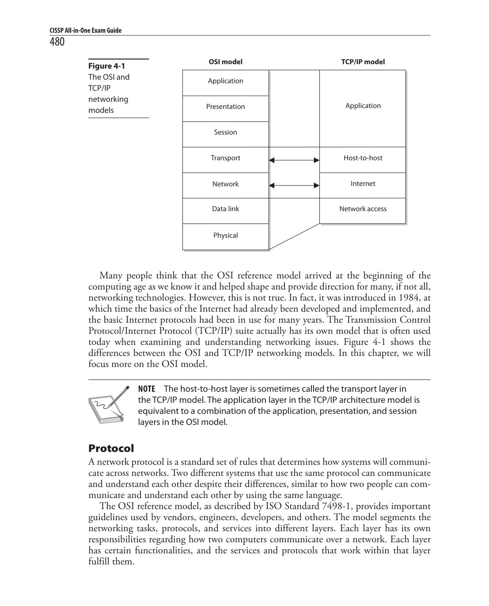
Figure 4-1
Many people think that the OSI reference model arrived at the beginning of the computing age as we know it and helped shape and provide direction for many, if not all, networking technologies. However, this is not true. In fact, it was introduced in 1984, at which time the basics of the Internet had already been developed and implemented, and the basic Internet protocols had been in use for many years. The Transmission Control Protocol/Internet Protocol (TCP/IP) suite actually has its own model that is often used today when examining and understanding networking issues. Figure 4-1 shows the differences between the OSI and TCP/IP networking models. In this chapter, we will focus more on the OSI model.
The host-to-host layer is sometimes called the transport layer in the TCP/IP model. The application layer in the TCP/IP architecture model is equivalent to a combination of the application, presentation, and session layers in the OSI model.
Protocol
A network protocol is a standard set of rules that determines how systems will communicate across networks. Two different systems that use the same protocol can communicate and understand each other despite their differences, similar to how two people can communicate and understand each other by using the same language. The OSI reference model, as described by ISO Standard 7498-1, provides important guidelines used by vendors, engineers, developers, and others. The model segments the networking tasks, protocols, and services into different layers. Each layer has its own responsibilities regarding how two computers communicate over a network. Each layer has certain functionalities, and the services and protocols that work within that layer fulfill them.
The OSI model’s goal is to help others develop products that will work within an open network architecture. Anopen networkarchitecture is one that no vendor owns, that is not proprietary, and that can easily integrate various technologies and vendor implementations of those technologies. Vendors have used the OSI model as a jumpingoff point for developing their own networking frameworks. These vendors use the OSI model as a blueprint and develop their own protocols and services to produce functionality that is different from, or overlaps, that of other vendors. However, because these vendors use the OSI model as their starting place, integration of other vendor products is an easier task, and the interoperability issues are less burdensome than if the vendors had developed their own networking framework from scratch. Although computers communicate in a physical sense (electronic signals are passed from one computer over a wire to the other computer), they also communicate through logical channels. Each protocol at a specific OSI layer on one computer communicates with a corresponding protocol operating at the same OSI layer on another computer. This happens throughencapsulation.
Here’s how encapsulation works: A message is constructed within a program on one computer and is then passed down through the network protocol’s stack. A protocol at each layer adds its own information to the message; thus, the message grows in size as it goes down the protocol stack. The message is then sent to the destination computer, and
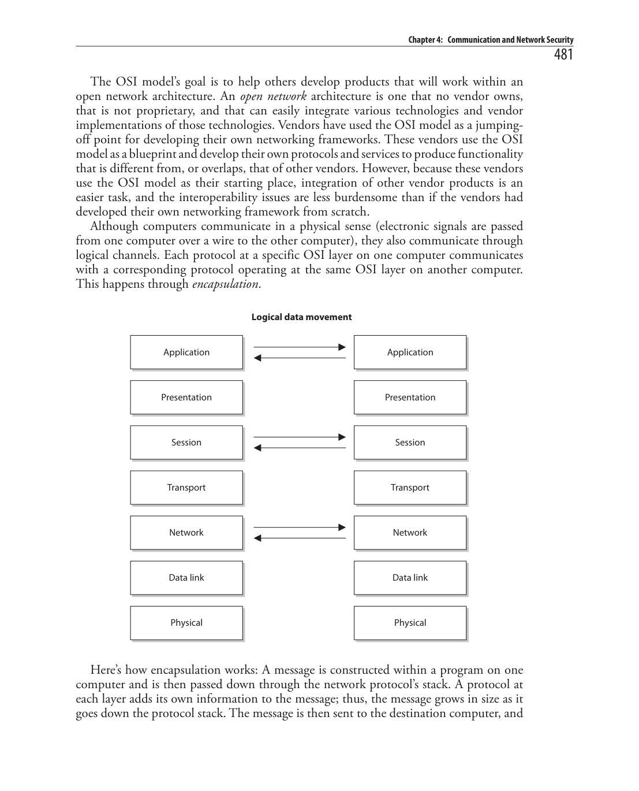
Diagram (p. 515)
the encapsulation is reversed by taking the packet apart through the same steps used by the source computer that encapsulated it. At the data link layer, only the information pertaining to the data link layer is extracted, and the message is sent up to the next layer. Then at the network layer, only the network layer data is stripped and processed, and the packet is again passed up to the next layer, and so on. This is how computers communicate logically. The information stripped off at the destination computer informs it how to interpret and process the packet properly. Data encapsulation is shown in Figure 4-2. A protocol at each layer has specific responsibilities and control functions it performs, as well as data format syntaxes it expects. Each layer has a special interface (connection point) that allows it to interact with three other layers: (1) communications from the interface of the layer above it, (2) communications to the interface of the layer below it, and (3) communications with the same layer in the interface of the target packet address. The control functions, added by the protocols at each layer, are in the form of headers and trailers of the packet. The benefit of modularizing these layers, and the functionality within each layer, is that various technologies, protocols, and services can interact with each other and provide the proper interfaces to enable communications. This means a computer can use an application protocol developed by Novell, a transport protocol developed by Apple, and a data link protocol developed by IBM to construct and send a message over a network. The protocols, technologies, and computers that operate within the OSI model are consideredopen systems. Open systems are capable of communicating with other open systems because they implement international standard protocols and interfaces.
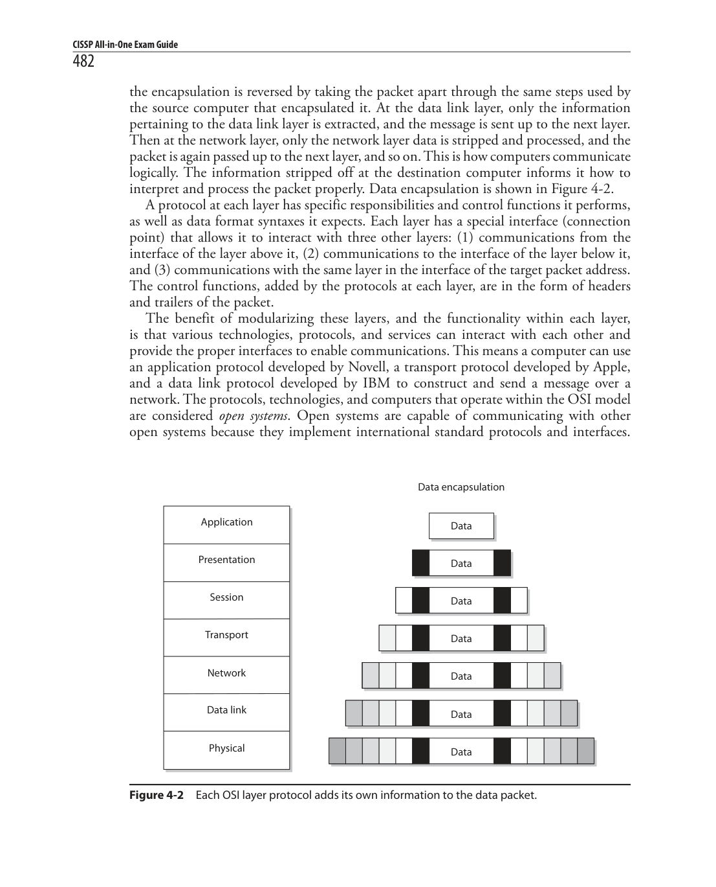
Figure 4-2Each OSI layer protocol adds its own information to the data packet.
Thespecification for each layer’s interface is very structured, while the actual code that makes up the internal part of the software layer is not defined. This makes it easy for vendors to write plug-ins in a modularized manner. Systems are able to integrate the plugins into the network stack seamlessly, gaining the vendor-specific extensions and functions. UnderstandingthefunctionalitiesthattakeplaceateachOSIlayerandthe corresponding protocols that work at those layers helps you understand the overall communication process between computers. Once you understand this process, a more detailed look at each protocol will show you the full range of options each protocol provides and the security weaknesses embedded into each of those options.
Attacks at Different Layers
As we examine the different layers of a common network stack, we will also look at the specific attack types that can take place at each layer. One concept to understand at this point is that a network can be used as achannel for an attack, or the network can be thetarget of an attack. If the network is a channel for an attack, this means the attacker is using the network as a resource. For example, when an attacker sends a virus from one system to another system, the virus travels through the network channel. If an attacker carries out a denial-of-service (DoS) attack, which sends a large amount of bogus traffic over a network link to bog it down, then the network itself is the target. As you will see throughout this chapter, it is important to understand how attacks take place and where they take place so that the correct countermeasures can be put into place.
Application Layer
Theapplication layer, layer 7, works closest to the user and provides file transmissions, message exchanges, terminal sessions, and much more. This layer does not include the actual applications, but rather the protocols that support the applications. When an application needs to send data over the network, it passes instructions and the data to the protocols that support it at the application layer. This layer processes and properly formats the data and passes it down to the next layer within the OSI model. This happens until the data the application layer constructed contains the essential information from each layer necessary to transmit the data over the network. The data is then put on the network cable and transmitted until it arrives at the destination computer. As an analogy, let’s say that you write a letter that you would like to send to your congressman. Your job is to write the letter, your clerk’s job is to figure out how to get it to him, and the congressman’s job is to read your letter and respond to it. You (the application) create the content (message) and hand it to your assistant (application layer protocol). Your assistant puts the content into an envelope, writes the congressman’s address on the envelope (inserts headers and trailers), and puts it into the mailbox (passes it on to the next protocol in the network stack). When your assistant checks the mailbox a week later, there is a letter from the congressman (the remote application) addressed to
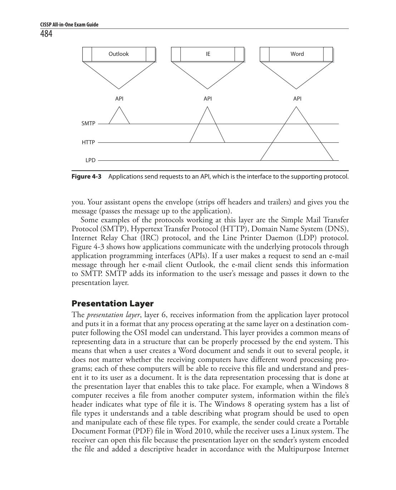
Figure 4-3Applications send requests to an API, which is the interface to the supporting protocol.
you. Your assistant opens the envelope (strips off headers and trailers) and gives you the message (passes the message up to the application). Some examples of the protocols working at this layer are the Simple Mail Transfer Protocol (SMTP), Hypertext Transfer Protocol (HTTP), Domain Name System (DNS), Internet Relay Chat (IRC) protocol, and the Line Printer Daemon (LDP) protocol. Figure 4-3 shows how applications communicate with the underlying protocols through application programming interfaces (APIs). If a user makes a request to send an e-mail message through her e-mail client Outlook, the e-mail client sends this information to SMTP. SMTP adds its information to the user’s message and passes it down to the presentation layer.
Presentation Layer
Thepresentation layer, layer 6, receives information from the application layer protocol and puts it in a format that any process operating at the same layer on a destination computer following the OSI model can understand. This layer provides a common means of representing data in a structure that can be properly processed by the end system. This means that when a user creates a Word document and sends it out to several people, it does not matter whether the receiving computers have different word processing programs; each of these computers will be able to receive this file and understand and present it to its user as a document. It is the data representation processing that is done at the presentation layer that enables this to take place. For example, when a Windows 8 computer receives a file from another computer system, information within the file’s header indicates what type of file it is. The Windows 8 operating system has a list of file types it understands and a table describing what program should be used to open and manipulate each of these file types. For example, the sender could create a Portable Document Format (PDF) file in Word 2010, while the receiver uses a Linux system. The receiver can open this file because the presentation layer on the sender’s system encoded the file and added a descriptive header in accordance with the Multipurpose Internet
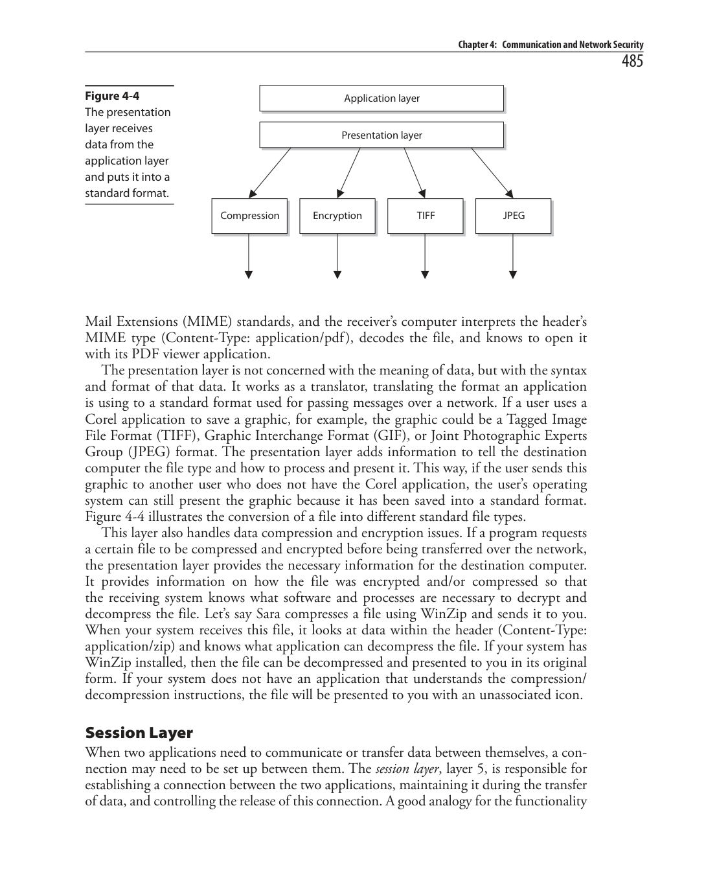
Figure 4-4
Mail Extensions (MIME) standards, and the receiver’s computer interprets the header’s MIME type (Content-Type: application/pdf ), decodes the file, and knows to open it with its PDF viewer application. The presentation layer is not concerned with the meaning of data, but with the syntax and format of that data. It works as a translator, translating the format an application is using to a standard format used for passing messages over a network. If a user uses a Corel application to save a graphic, for example, the graphic could be a Tagged Image File Format (TIFF), Graphic Interchange Format (GIF), or Joint Photographic Experts Group (JPEG) format. The presentation layer adds information to tell the destination computer the file type and how to process and present it. This way, if the user sends this graphic to another user who does not have the Corel application, the user’s operating system can still present the graphic because it has been saved into a standard format. Figure 4-4 illustrates the conversion of a file into different standard file types. This layer also handles data compression and encryption issues. If a program requests a certain file to be compressed and encrypted before being transferred over the network, the presentation layer provides the necessary information for the destination computer. It provides information on how the file was encrypted and/or compressed so that the receiving system knows what software and processes are necessary to decrypt and decompress the file. Let’s say Sara compresses a file using WinZip and sends it to you. When your system receives this file, it looks at data within the header (Content-Type: application/zip) and knows what application can decompress the file. If your system has WinZip installed, then the file can be decompressed and presented to you in its original form. If your system does not have an application that understands the compression/ decompression instructions, the file will be presented to you with an unassociated icon.
Session Layer
When two applications need to communicate or transfer data between themselves, a connection may need to be set up between them. Thesession layer, layer 5, is responsible for establishing a connection between the two applications, maintaining it during the transfer of data, and controlling the release of this connection. A good analogy for the functionality
within this layer is a telephone conversation. When Kandy wants to call a friend, she uses the telephone. The telephone network circuitry and protocols set up the connection over the telephone lines and maintain that communication path, and when Kandy hangs up, they release all the resources they were using to keep that connection open. Similar to how telephone circuitry works, the session layer works in three phases: connection establishment, data transfer, and connection release. It provides session restart and recovery if necessary and provides the overall maintenance of the session. When the conversation is over, this path is broken down and all parameters are set back to their original settings. This process is known asdialog management. Figure 4-5 depicts the three phases of a session. Some protocols that work at this layer are the Password Authentication Protocol (PAP), Point-to-Point Tunneling Protocol (PPTP), Network Basic Input Output System (NetBIOS), and Remote Procedure Call (RPC). The session layer protocol can enable communication between two applications to happen in three different modes:
SimplexCommunication takes place in one direction, though in practice this
- is very seldom the case.
Half-duplexCommunication takes place in both directions, but only one
- application can send information at a time.
Full-duplexCommunication takes place in both directions, and both
- applications can send information at the same time.
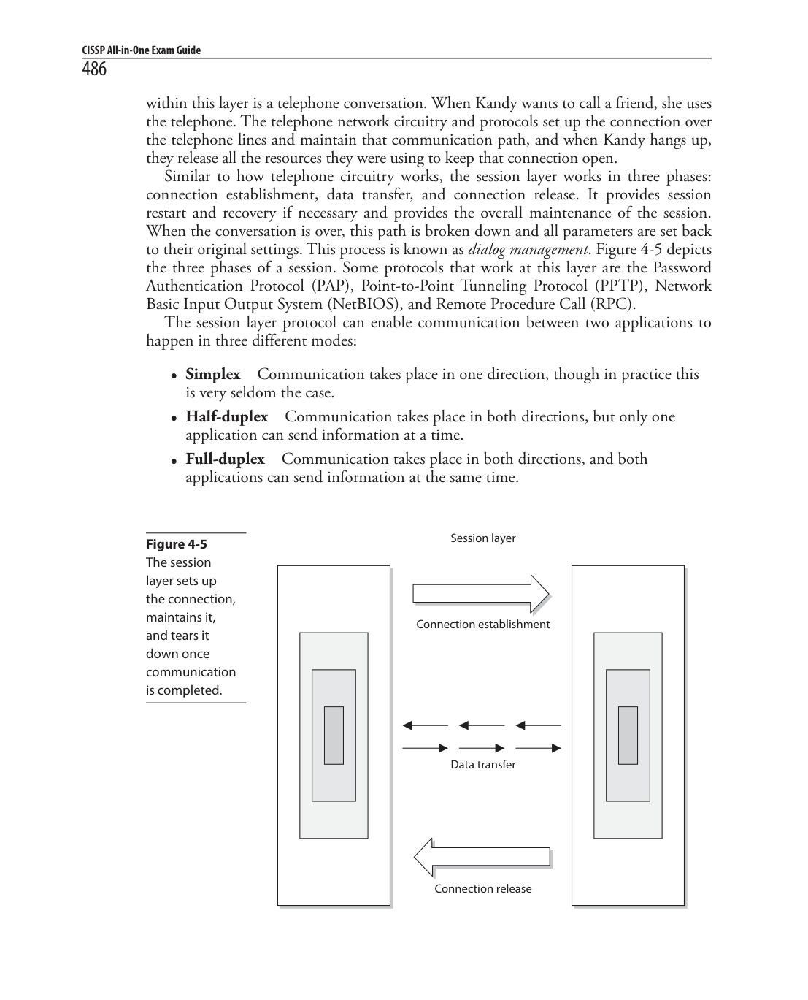
Figure 4-5
Many people have a hard time understanding the difference between what takes place at the session layer versus the transport layer because their definitions sound similar. Session layer protocols control application-to-application communication, whereas the transport layer protocols handle computer-to-computer communication. For example, if you are using a product that is working in a client/server model, in reality you have a small piece of the product on your computer (client portion) and the larger piece of the software product is running on a different computer (server portion). The communication between these two pieces of the same software product needs to be controlled, which is why session layer protocols even exist. Session layer protocols take on the functionality of middleware, which allows software on two different computers to communicate. Session layer protocols provide interprocess communication channels, which allow a piece of software on one system to call upon a piece of software on another system without the programmer having to know the specifics of the software on the receiving system. The programmer of a piece of software can write a function call that calls upon a subroutine. The subroutine could be local to the system or be on a remote system. If the subroutine is on a remote system, the request is carried over a session layer protocol. The result that the remote system provides is then returned to the requesting system over the same session layer protocol. This is how RPC works. A piece of software can execute components that reside on another system. This is the core of distributed computing.
One security issue common to RPC (and similar interprocess communication software) is the lack of authentication or the use of weak authentication.Secure RPC (SRPC)can be implemented, which requires authentication to take place before two computers located in different locations can communicate with each other. Authentication can take place using shared secrets, public keys, or Kerberos tickets. Session layer protocols need to provide secure authentication capabilities. Session layer protocols are the least used protocols in a network environment; thus, many of them should be disabled on systems to decrease the chance of them getting exploited. RPC, NetBIOS, and similar distributed computing calls usually only need to take place within a network; thus, firewalls should be configured so this type of traffic is not allowed into or out of a network. Firewall filtering rules should be in place to stop this type of unnecessary and dangerous traffic.
Transport Layer
When two computers are going to communicate through a connection-oriented protocol, they will first agree on how much information each computer will send at a time, how to verify the integrity of the data once received, and how to determine whether a packet was lost along the way. The two computers agree on these parameters through a handshaking process at thetransport layer, layer 4. The agreement on these issues before transferring data helps provide more reliable data transfer, error detection, correction, recovery, and flow control, and it optimizes the network services needed to perform these tasks. The transport layer provides end-to-end data transport services and establishes the logical connection between two communicating computers.
Connection-oriented protocols, such as Transmission Control Protocol (TCP), provide reliable data transmission when compared to connectionless protocols, such as User Datagram Protocol (UDP). This distinction is covered in more detail in the “TCP/IP Model” section, later in the chapter. The functionality of the session and transport layers is similar insofar as they both set up some type of session or virtual connection for communication to take place. The difference is that protocols that work at the session layer set up connections between applications, whereas protocols that work at the transport layer set up connections between computer systems. For example, we can have three different applications on computer A communicating with three applications on computer B. The session layer protocols keep track of these different sessions. You can think of the transport layer protocol as the bus. It does not know or care what applications are communicating with each other. It just provides the mechanism to get the data from one system to another. The transport layer receives data from many different applications and assembles the data into a stream to be properly transmitted over the network. The main protocols that work at this layer are TCP and UDP. Information is passed down from different entities at higher layers to the transport layer, which must assemble the information into a stream, as shown in Figure 4-6. The stream is made up of the various data segments passed to it. Just like a bus can carry a variety of people, the transport layer protocol can carry a variety of application data types.
Different references can place specific protocols at different layers. For example, many references place the Transport Layer Security (TLS) protocol in the session layer, while other references place it in the transport layer. It is not that one is right or wrong. The OSI model tries to draw boxes around reality, but some protocols straddle the different layers.
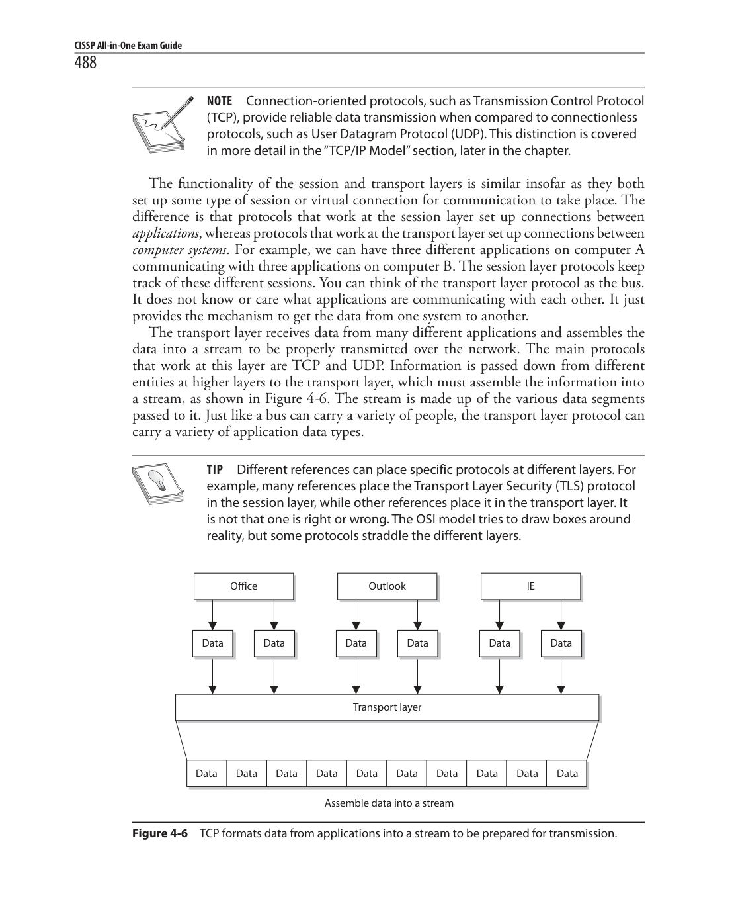
Figure 4-6TCP formats data from applications into a stream to be prepared for transmission.
Network Layer
The main responsibilities of thenetwork layer, layer 3, are to insert information into the packet’s header so it can be properly addressed and routed, and then to actually route the packets to their proper destination. In a network, many routes can lead to one destination. The protocols at the network layer must determine the best path for the packet to take. Routing protocols build and maintain their routing tables. These tables are maps of the network, and when a packet must be sent from computer A to computer M, the protocols check the routing table, add the necessary information to the packet’s header, and send it on its way. The protocols that work at this layer do not ensure the delivery of the packets. They depend on the protocols at the transport layer to catch any problems and resend packets if necessary. The Internet Protocol (IP) is a common protocol working at the network layer, although other routing and routed protocols work there as well. Some of the other protocols are the Internet Control Message Protocol (ICMP), Routing Information Protocol (RIP), Open Shortest Path First (OSPF), Border Gateway Protocol (BGP), and Internet Group Management Protocol (IGMP). Figure 4-7 shows that a packet can take many routes and that the network layer enters routing information into the header to help the packet arrive at its destination.
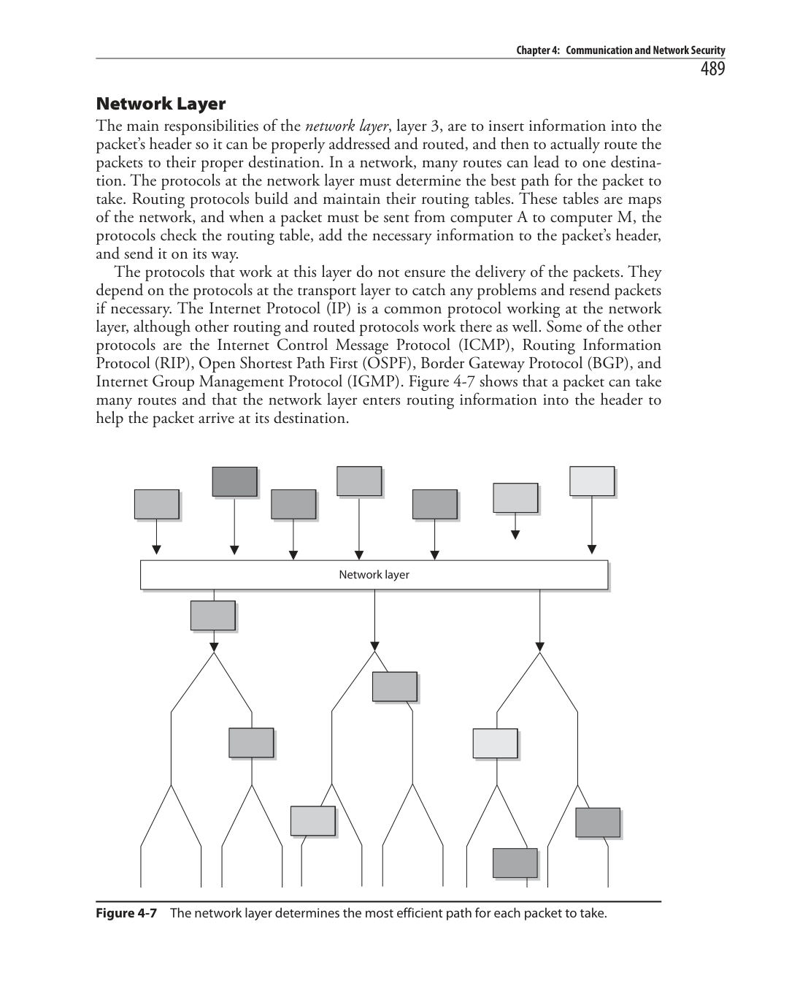
Figure 4-7The network layer determines the most efficient path for each packet to take.
Data Link Layer
As we continue down the protocol stack, we are getting closer to the actual transmission channel (i.e., network wire) over which all the data will travel. The outer format of the data packet changes slightly at each layer, and it comes to a point where it needs to be translated into the LAN or wide area network (WAN) technology binary format for proper line transmission. This happens at thedata link layer, layer 2. LAN and WAN technologies can use different protocols, network interface cards (NICs), cables, and transmission methods. Each of these components has a different header data format structure, and they interpret electromagnetic signals in different ways. The data link layer is where the network stack knows in what format the data frame must be in order to transmit it properly over Token Ring, Ethernet, ATM, or Fiber Distributed Data Interface (FDDI) networks. If the network is an Ethernet network, for example, all the computers will expect packet headers to be a certain length, the flags to be positioned in certain field locations within the header, and the trailer information to be in a certain place with specific fields. Compared to Ethernet, Token Ring network technology has different frame header lengths, flag values, and header formats. The data link layer is divided into two functional sublayers: theLogical Link Control (LLC)and theMedia Access Control (MAC). The LLC, which was originally defined in the IEEE 802.2 specification for Ethernet networks and is now also the ISO/IEC 8802-2 standard, communicates with the protocol immediately above it, the network layer. The MAC will have the appropriately loaded protocols to interface with the protocol requirements of the physical layer. As data is passed down the network stack, it has to go from the network layer to the data link layer. The protocol at the network layer does not know if the underlying network is Ethernet, Token Ring, or ATM—it does not need to have this type of insight. The protocol at the network layer just adds its header and trailer information to the packet and passes it on to the next layer, which is the LLC sublayer. The LLC sublayer takes care of flow control and error checking. Data coming from the network layer passes down through the LLC sublayer and goes to the MAC. The technology at the MAC sublayer knows if the network is Ethernet, Token Ring, or ATM, so it knows how to put the last header and trailer on the packet before it “hits the wire” for transmission. The IEEE MAC specification for Ethernet is 802.3, Token Ring is 802.5, wireless LAN is 802.11, and so on. So when you see a reference to an IEEE standard, such as 802.11, 802.16, or 802.3, it refers to the protocol working at the MAC sublayer of the data link layer of a protocol stack. Some of the protocols that work at the data link layer are the Point-to-Point Protocol (PPP), ATM, Layer 2 Tunneling Protocol (L2TP), FDDI, Ethernet, and Token Ring. Figure 4-8 shows the two sublayers that make up the data link layer. Each network technology (Ethernet, ATM, FDDI, and so on) defines the compatible physical transmission type (coaxial, twisted pair, fiber, wireless) that is required to enable network communication. Each network technology also has defined electronic signaling and encoding patterns. For example, if the MAC sublayer received a bit with the value of 1 that needed to be transmitted over an Ethernet network, the MAC sublayer technology would tell the physical layer to create a +0.5-volt electric signal. In the “language of
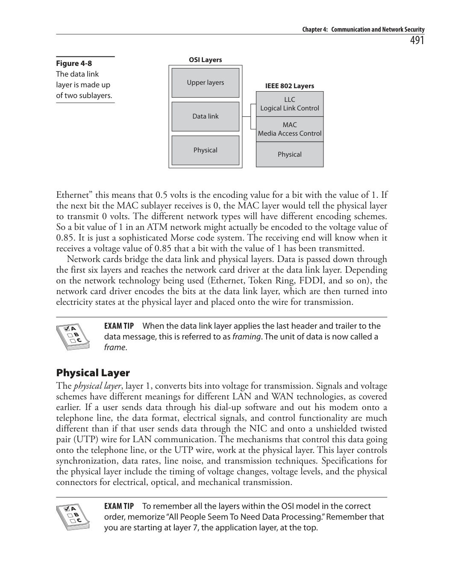
Figure 4-8
Ethernet” this means that 0.5 volts is the encoding value for a bit with the value of 1. If the next bit the MAC sublayer receives is 0, the MAC layer would tell the physical layer to transmit 0 volts. The different network types will have different encoding schemes. So a bit value of 1 in an ATM network might actually be encoded to the voltage value of 0.85. It is just a sophisticated Morse code system. The receiving end will know when it receives a voltage value of 0.85 that a bit with the value of 1 has been transmitted. Network cards bridge the data link and physical layers. Data is passed down through the first six layers and reaches the network card driver at the data link layer. Depending on the network technology being used (Ethernet, Token Ring, FDDI, and so on), the network card driver encodes the bits at the data link layer, which are then turned into electricity states at the physical layer and placed onto the wire for transmission.
When the data link layer applies the last header and trailer to the data message, this is referred to asframing. The unit of data is now called a frame.
Physical Layer
Thephysical layer, layer 1, converts bits into voltage for transmission. Signals and voltage schemes have different meanings for different LAN and WAN technologies, as covered earlier. If a user sends data through his dial-up software and out his modem onto a telephone line, the data format, electrical signals, and control functionality are much different than if that user sends data through the NIC and onto a unshielded twisted pair (UTP) wire for LAN communication. The mechanisms that control this data going onto the telephone line, or the UTP wire, work at the physical layer. This layer controls synchronization, data rates, line noise, and transmission techniques. Specifications for the physical layer include the timing of voltage changes, voltage levels, and the physical connectors for electrical, optical, and mechanical transmission.
To remember all the layers within the OSI model in the correct order, memorize “All People Seem To Need Data Processing.” Remember that you are starting at layer 7, the application layer, at the top.
Functions and Protocols in the OSI Model
For the CISSP exam, you will need to know the functionality that takes place at the different layers of the OSI model, along with specific protocols that work at each layer. The following is a quick overview of each layer and its components.
Application
The protocols at the application layer handle file transfer, virtual terminals, network management, and fulfilling networking requests of applications. A few of the protocols that work at this layer include
File Transfer Protocol (FTP)
- Trivial File Transfer Protocol (TFTP)
- Simple Network Management Protocol (SNMP)
- Simple Mail Transfer Protocol (SMTP)
- Telnet
- Hypertext Transfer Protocol (HTTP)
Presentation
The services of the presentation layer handle translation into standard formats, data compression and decompression, and data encryption and decryption. No protocols work at this layer, just services. The following lists some of the presentation layer standards:
American Standard Code for Information Interchange (ASCII)
- Extended Binary-Coded Decimal Interchange Mode (EBCDIC)
- Tagged Image File Format (TIFF)
- Joint Photographic Experts Group (JPEG)
- Motion Picture Experts Group (MPEG)
- Musical Instrument Digital Interface (MIDI)
Session
The session layer protocols set up connections between applications; maintain dialog control; and negotiate, establish, maintain, and tear down the communication channel. Some of the protocols that work at this layer include
Network Basic Input Output System (NetBIOS)
- Password Authentication Protocol (PAP)
- Point-to-Point Tunneling Protocol (PPTP)
- Remote Procedure Call (RPC)
Transport
The protocols at the transport layer handle end-to-end transmission and segmentation of a data stream. The following protocols work at this layer:
Transmission Control Protocol (TCP)
- User Datagram Protocol (UDP)
- Sequenced Packet Exchange (SPX)
Network
The responsibilities of the network layer protocols include internetworking service, addressing, and routing. The following lists some of the protocols that work at this layer:
Internet Protocol (IP)
- Internet Control Message Protocol (ICMP)
- Internet Group Management Protocol (IGMP)
- Routing Information Protocol (RIP)
- Open Shortest Path First (OSPF)
- Internetwork Packet Exchange (IPX)
Data Link
The protocols at the data link layer convert data into LAN or WAN frames for transmission and define how a computer accesses a network. This layer is divided into the Logical Link Control (LLC) and the Media Access Control (MAC) sublayers. Some protocols that work at this layer include the following:
Address Resolution Protocol (ARP)
- Reverse Address Resolution Protocol (RARP)
- Point-to-Point Protocol (PPP)
- Serial Line Internet Protocol (SLIP)
- Ethernet (IEEE 802.3)
- Token Ring (IEEE 802.5)
- Wireless Ethernet (IEEE 802.11)
Physical
Network interface cards and drivers convert bits into electrical signals and control the physical aspects of data transmission, including optical, electrical, and mechanical requirements. The following are some of the standard interfaces at this layer:
RS/EIA/TIA-422, RS/EIA/TIA-423, RS/EIA/TIA-449, RS/EIA/TIA-485
- 10Base-T, 10Base2, 10Base5, 100Base-TX, 100Base-FX, 100Base-T, 1000Base-T,
- 1000Base-SX
Integrated Services Digital Network (ISDN)
- Digital subscriber line (DSL)
- Synchronous Optical Networking (SONET)
Tying the Layers Together
The OSI model is used as a framework for many network-based products and is used by many types of vendors. Various types of devices and protocols work at different parts of this seven-layer model. The main reason that a Cisco switch, Microsoft web server, a Barracuda firewall, and a Belkin wireless access point can all communicate properly on one network is because they all work within the OSI model. They do not have their own individual ways of sending data; they follow a standardized manner of communication, which allows for interoperability and allows a network to be a network. If a product does not follow the OSI model, it will not be able to communicate with other devices on the network because the other devices will not understand its proprietary way of communicating. The different device types work at specific OSI layers. For example, computers can interpret and process data at each of the seven layers, but routers can understand information only up to the network layer because a router’s main function is to route packets, which does not require knowledge about any further information within the packet. A router peels back the header information until it reaches the network layer data, where the routing and IP address information is located. The router looks at this information to make its decisions on where the packet should be routed. Bridges and switches understand only up to the data link layer, and repeaters understand traffic only at the physical layer. So if you hear someone mention a “layer 3 device,” the person is referring to a device that works at the network layer. A “layer 2 device” works at the data link layer. Figure 4-9 shows what layer of the OSI model each type of device works within.
Some techies like to joke that all computer problems reside at layer 8. The OSI model does not have an eighth layer, and what these people are referring to is the user of a computer. So if someone states that there is a problem at layer 8, this is code for “the user is the problem.” Let’s walk through an example. You open an FTP client on your computer and connect to an FTP server on your network. In your FTP client you choose to download a photo from a server. The FTP server now has to move this file over the network to your computer. The server sends this document to the FTP application protocol on its network stack. This FTP protocol puts headers and trailers on the document and passes it down to the presentation layer. A service at the presentation layer adds a header that indicates this document is in JPEG format so that your system knows how to open the file when it is received. This bundle is then handed to the transport layer TCP, which also adds a header and trailer, which include source and destination port values. The bundle continues down
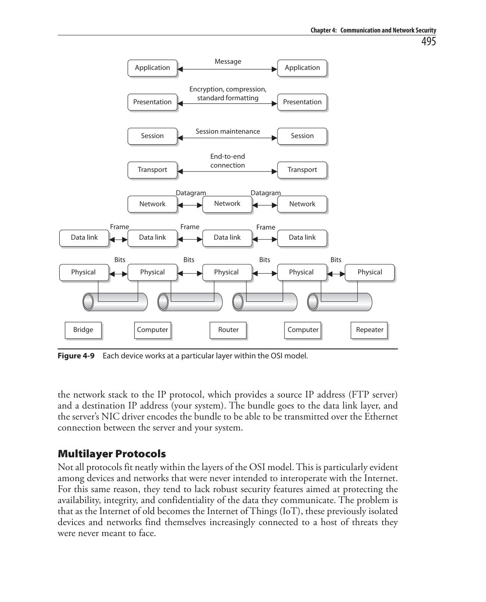
Figure 4-9Each device works at a particular layer within the OSI model.
the network stack to the IP protocol, which provides a source IP address (FTP server) and a destination IP address (your system). The bundle goes to the data link layer, and the server’s NIC driver encodes the bundle to be able to be transmitted over the Ethernet connection between the server and your system.
Multilayer Protocols
Not all protocols fit neatly within the layers of the OSI model. This is particularly evident among devices and networks that were never intended to interoperate with the Internet. For this same reason, they tend to lack robust security features aimed at protecting the availability, integrity, and confidentiality of the data they communicate. The problem is that as the Internet of old becomes the Internet of Things (IoT), these previously isolated devices and networks find themselves increasingly connected to a host of threats they were never meant to face.
As security professionals, we need to be aware of these nontraditional protocols and their implications for the security of the networks to which they are connected. In particular, we should be vigilant when it comes to identifying nonobvious cyberphysical systems. In December 2015, attackers were able to cut power to over 80,000 homes in Ukraine apparently by compromising the utilities’ supervisory control and data acquisition (SCADA) systems in what is considered the first known blackout caused by a cyberattack. At the heart of most SCADA systems used by power and water utilities is a multilayer protocol known as DNP3.
Distributed Network Protocol 3
The Distributed Network Protocol 3 (DNP3) is a communications protocol designed for use in SCADA systems, particularly those within the power sector. It is not a generalpurpose protocol like IP, nor does it incorporate routing functionality. SCADA systems typically have a very flat hierarchical architecture in which sensors and actuators are connected to remote terminal units (RTUs). The RTUs aggregate data from one or more of these devices and relay it to the SCADA master, which includes a human-machine interface (HMI) component. Control instructions and configuration changes are sent from the SCADA master to the RTUs and then on to the sensors and actuators. At the time DNP3 was designed, there wasn’t a need to route traffic among the components (most of which were connected with point-to-point circuits), so networking was not needed or supported in DNP3. Instead of using the OSI seven-layer model, its developers opted for a simpler three-layer model called the Enhanced Performance Architecture (EPA) that roughly corresponds to layers 2, 4, and 7 of the OSI model. There was no encryption or authentication, since the developers did not think network attacks were feasible on a system consisting of devices connected to each other and to nothing else. Over time, SCADA systems were connected to other networks and then to the Internet for a variety of very valid business reasons. Unfortunately, security wasn’t considered until much later. Encryption and authentication features were added as an afterthought, though not all implementations have been thus updated. Network segmentation is not always present either, even in some critical installations. Perhaps most concerning is the shortage of effective intrusion prevention systems (IPSs) and intrusion detection systems (IDSs) that understand the interconnections between DNP3 and IP networks and can identify DNP3-based attacks.
Controller Area Network Bus
Another multilayer protocol that had almost no security features until very recently is the one that runs most automobiles worldwide. The Controller Area Network bus (CAN bus) is a protocol designed to allow microcontrollers and other embedded devices to communicate with each other on a shared bus. Over time, these devices have diversified so that today they can control almost every aspect of a vehicle’s functions, including steering, braking, and throttling. CAN bus was never meant to communicate with anything outside the vehicle except for a mechanic’s maintenance computer, so there never appeared to be a need for security features.
As cars started getting connected via Wi-Fi and cellular data networks, their designers didn’t fully consider the new attack vectors this would introduce to an otherwise undefended system. That is, until Charlie Miller and Chris Valasek famously hacked a Jeep in 2015 by connecting to it over a cellular data network and bridging the head unit (which controls the sound system and GPS) to the CAN bus (which controls all the vehicle sensors and actuators) and causing it to run off a road. As cars become more autonomous, security of the CAN bus will become increasingly important.
TCP/IP Model
TheTransmission Control Protocol/Internet Protocol (TCP/IP)is a suite of protocols that governs the way data travels from one device to another. Besides its eponymous two main protocols, TCP/IP includes other protocols as well, which we will cover in this chapter. IP is a network layer protocol and provides datagram routing services. IP’s main task is to support internetwork addressing and packet routing. It is a connectionless protocol that envelops data passed to it from the transport layer. The IP protocol addresses the datagram with the source and destination IP addresses. The protocols within the TCP/ IP suite work together to break down the data passed from the application layer into pieces that can be moved along a network. They work with other protocols to transmit the data to the destination computer and then reassemble the data back into a form that the application layer can understand and process. Two main protocols work at the transport layer: TCP and UDP.TCPis a reliable and connection-oriented protocol, which means it ensures packets are delivered to the destination computer. If a packet is lost during transmission, TCP has the ability to identify this issue and resend the lost or corrupted packet. TCP also supports packet sequencing (to ensure each and every packet was received), flow and congestion control, and error detection and correction.UDP, on the other hand, is abest-effortandconnectionlessprotocol. It has neither packet sequencing nor flow and congestion control, and the destination does not acknowledge every packet it receives.
IP
IP is a connectionless protocol that provides the addressing and routing capabilities for each package of data. The data, IP, and network relationship can be compared to the relationship between a letter and the postal system:
Data = Letter
- IP = Addressed envelope
- Network = Postal system
- The message is the letter, which is enveloped and addressed by IP, and the network and its services enable the message to be sent from its origin to its destination, like the postal system.
TCP
TCP is referred to as a connection-oriented protocol because before any user data is actually sent, handshaking takes place between the two systems that want to communicate. Once the handshaking completes successfully, a virtual connection is set up between the two systems. UDP is considered a connectionless protocol because it does not go through these steps. Instead, UDP sends out messages without first contacting the destination computer and does not know if the packets were received properly or dropped. Figure 4-10 shows the difference between a connection-oriented protocol and a connectionless protocol. UDP and TCP sit together on the transport layer, and developers can choose which to use when developing applications. Many times, TCP is the transport protocol of choice because it provides reliability and ensures the packets are delivered. For example, SMTP is used to transmit e-mail messages and uses TCP because it must make sure the data is delivered. TCP provides a full-duplex, reliable communication mechanism, and if any packets are lost or damaged, they are re-sent; however, TCP requires a lot of system overhead compared to UDP. If a programmer knows that data being dropped during transmission is not detrimental to the application, he may choose to use UDP because it is faster and requires fewer resources. For example, UDP is a better choice than TCP when a server sends status information to all listening nodes on the network. A node will not be negatively affected if, by some chance, it did not receive this status information, because the information will be re-sent every 60 seconds. UDP and TCP are transport protocols that applications use to get their data across a network. They both useportsto communicate with upper OSI layers and to keep track of various conversations that take place simultaneously. The ports are also the mechanism
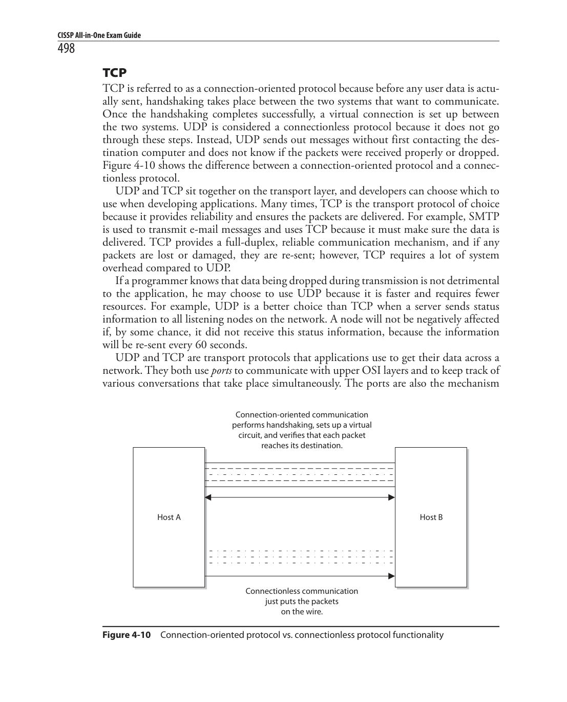
Figure 4-10Connection-oriented protocol vs. connectionless protocol functionality
used to identify how other computers access services. When a TCP or UDP message is formed, source and destination ports are contained within the header information along with the source and destination IP addresses. The combination of protocol (TCP or UDP), port, and IP address makes up asocket, and is how packets know where to go (by the address) and how to communicate with the right service or protocol on the other computer (by the port number). The IP address acts as the doorway to a computer, and the port acts as the doorway to the actual protocol or service. To communicate properly, the packet needs to know these doors. Figure 4-11 shows how packets communicate with applications and services through ports.
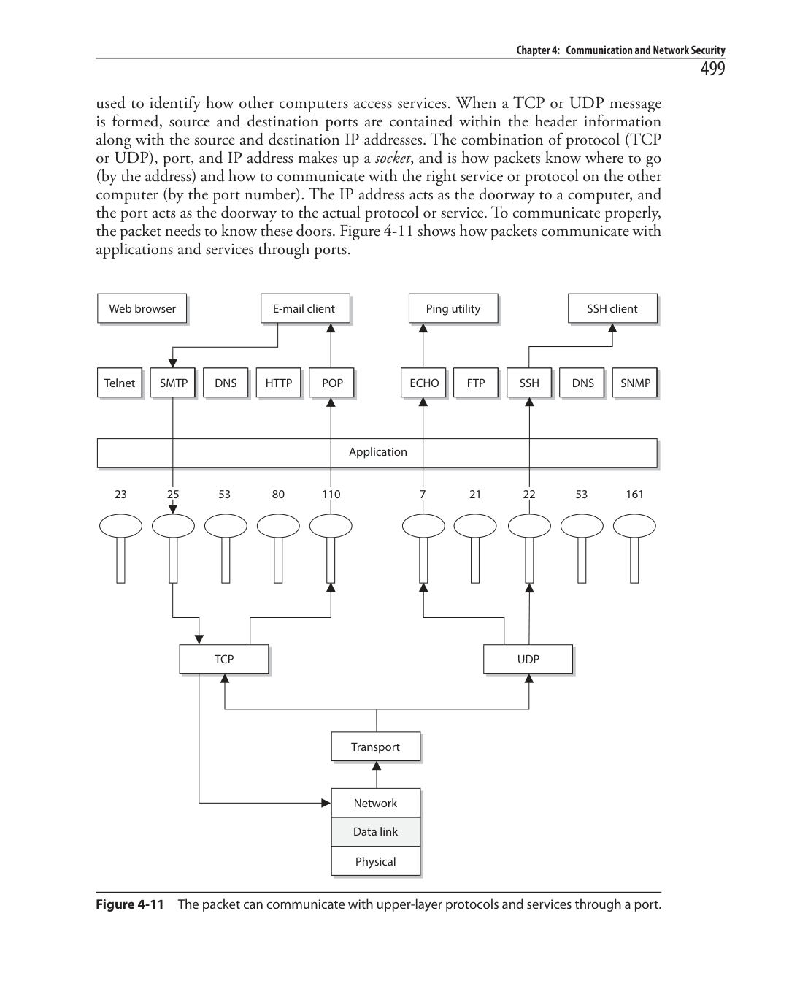
Figure 4-11The packet can communicate with upper-layer protocols and services through a port.
The difference between TCP and UDP can also be seen in the message formats. Because TCP offers more services than UDP, it must contain much more information within its packet header format, as shown in Figure 4-12. Table 4-1 lists the major differences between TCP and UDP.
Port Types
Port numbers up to 1023 (0 to 1023) are calledwell-known ports, and almost every computer in the world has the exact same protocol mapped to the exact same port number. That is why they are called well known—everyone follows this same standardized approach. This means that on almost every computer, port 25 is mapped to SMTP, port 21 is mapped to FTP, port 80 is mapped to HTTP, and so on. This mapping between lower-numbered ports and specific protocols is a de facto standard, which just means that we all do this and that we do not have a standards body dictating that it absolutely has to be done this way. The fact that almost everyone follows this approach translates to more interoperability among systems all over the world. Because this is a de facto standard and not a standard that absolutely must be followed, administrators can map different protocols to different port numbers if that fits their purpose. However, one thing to note is that ports 0 to 1023 can be used only by privileged system or root processes. The following shows some of the most commonly used protocols and the ports to which they are usually mapped:
Telnet port 23
- SMTP port 25
- HTTP port 80
- SNMP ports 161 and 162
- FTP ports 21 and 20
- Registered portsare 1024 to 49151, which can be registered with the Internet Corporation for Assigned Names and Numbers (ICANN) for a particular use. Vendors register specific ports to map to their proprietary software.Dynamic portsare 49152 to 65535 and are available to be used by any application on an “as needed” basis.
TCP Handshake
TCP must set up a virtual connection between two hosts before any data is sent. This means the two hosts must agree on certain parameters, data flow, windowing, error detection, and options. These issues are negotiated during the handshaking phase, as shown in Figure 4-13. The host that initiates communication sends a synchronous (SYN) packet to the receiver. The receiver acknowledges this request by sending a SYN/ACK packet. This packet translates into, “I have received your request and am ready to communicate with you.” The sending host acknowledges this with an acknowledgment (ACK) packet, which translates into, “I received your acknowledgment. Let’s start transmitting our data.”
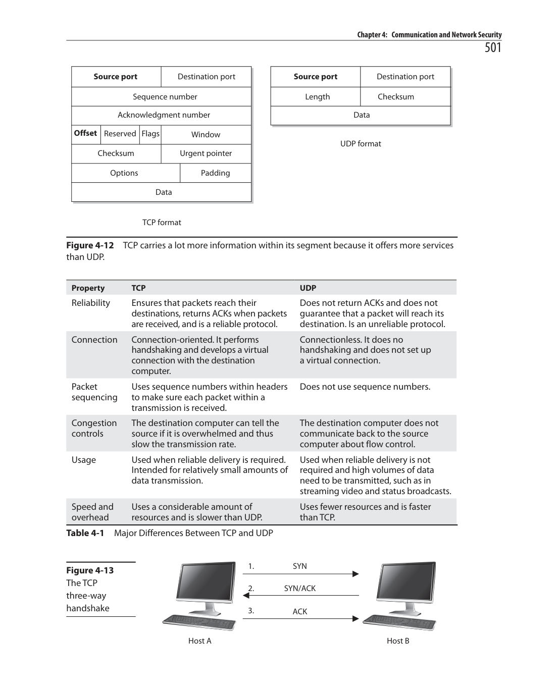
Figure 4-12TCP carries a lot more information within its segment because it offers more services
This completes the handshaking phase, after which a virtual connection is set up, and actual data can now be passed. The connection that has been set up at this point is consideredfull duplex, which means transmission in both directions is possible using the same transmission line. If an attacker sends a target system SYN packets with a spoofed address, then the victim system replies to the spoofed address with SYN/ACK packets. Each time the victim system receives one of these SYN packets, it sets aside resources to manage the new connection. If the attacker floods the victim system with SYN packets, eventually the victim system allocates all of its available TCP connection resources and can no longer process new requests. This is a type of DoS that is referred to as aSYN flood. To thwart this type of attack you can use a number of mitigations, the most common of which are described in Internet Engineering Task Force’s (IETF) Request for Comments (RFC) 4987. One of the most effective techniques described in RFC 4987 is the use of SYN caches, which delays the allocation of a socket until the handshake is completed. Another attack vector we need to understand is TCP sequence numbers. One of the values that is agreed upon during a TCP handshake between two systems is the sequence numbers that will be inserted into the packet headers. Once the sequence number is agreed upon, if a receiving system receives a packet from the sending system that does not have this predetermined value, it will disregard the packet. This means that anattacker cannot just spoof the address of a sending system to fool a receiving system; the attacker has to spoof the sender’s address and use the correct sequence number values. If an attacker can correctly predict the TCP sequence numbers that two systems will use, then she can create packets containing those numbers and fool the receiving system into thinking that the packets are coming from the authorized sending system. She can then take over the TCP connection between the two systems, which is referred to asTCP session hijacking.
Data Structures
As stated earlier, the message is formed and passed to the application layer from a program and sent down through the protocol stack. Each protocol at each layer adds its own information to the message and passes it down to the next layer. This activity is referred to asdata encapsulation. As the message is passed down the stack, it goes through a sort of evolution, and each stage has a specific name that indicates what is taking place. When an application formats data to be transmitted over the network, the data is called amessageordata. The message is sent to the transport layer, where TCP does its magic on it. The bundle of data is now asegment. The segment is sent to the network layer. The network layer adds routing and addressing, and now the bundle is called apacket. The network layer passes off the packet to the data link layer, which frames the packet with a header and a trailer, and now it is called aframe. Figure 4-14 illustrates these stages.
If the message is being transmitted over TCP, it is referred to as a “segment.” If it is being transmitted over UDP, it is referred to as a “datagram.”
Sometimes when an author refers to a segment, she is specifying the stage in which the data is located within the protocol stack. If the literature is describing routers, which
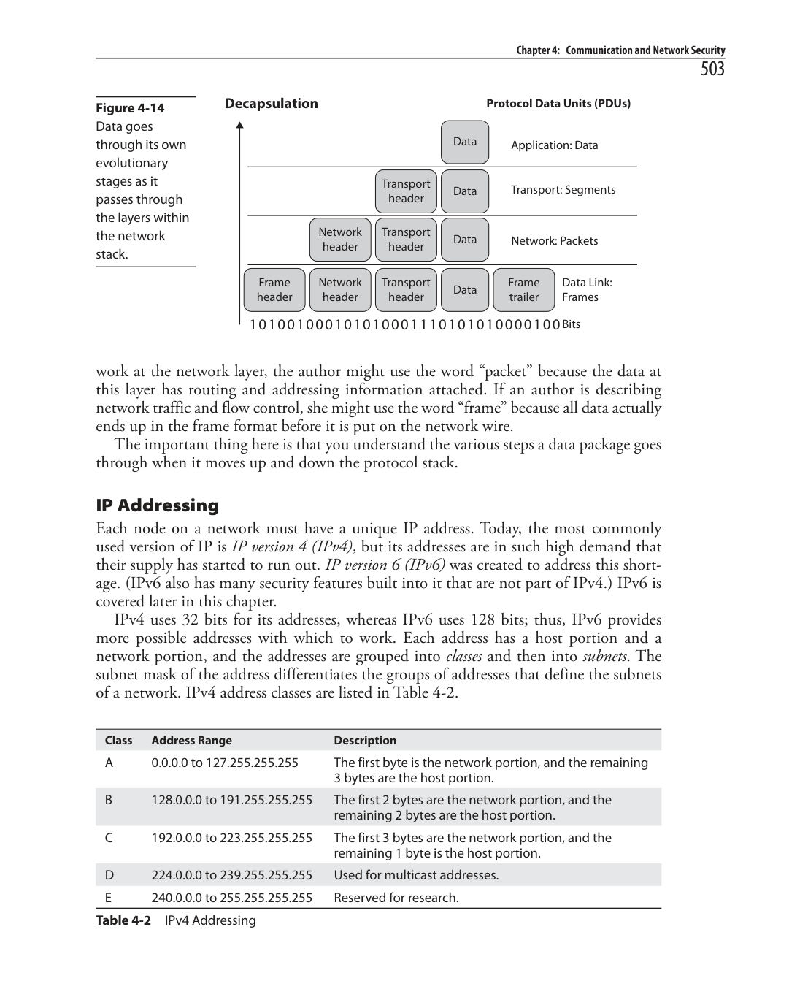
Decapsulation
1 0 1 0 0 1 0 0 0 1 0 1 0 1 0 0 0 1 1 1 0 1 0 1 0 1 0 0 0 0 1 0 0
work at the network layer, the author might use the word “packet” because the data at this layer has routing and addressing information attached. If an author is describing network traffic and flow control, she might use the word “frame” because all data actually ends up in the frame format before it is put on the network wire. The important thing here is that you understand the various steps a data package goes through when it moves up and down the protocol stack.
IP Addressing
Each node on a network must have a unique IP address. Today, the most commonly used version of IP isIP version 4 (IPv4), but its addresses are in such high demand that their supply has started to run out.IP version 6 (IPv6)was created to address this shortage. (IPv6 also has many security features built into it that are not part of IPv4.) IPv6 is covered later in this chapter. IPv4 uses 32 bits for its addresses, whereas IPv6 uses 128 bits; thus, IPv6 provides more possible addresses with which to work. Each address has a host portion and a network portion, and the addresses are grouped intoclassesand then intosubnets. The subnet mask of the address differentiates the groups of addresses that define the subnets of a network. IPv4 address classes are listed in Table 4-2.
For any given IP network within an organization, all nodes connected to the network can have different host addresses but a common network address. The host address identifies every individual node, whereas the network address is the identity of the network all the nodes are connected to; therefore, it is the same for each one of them. Any traffic meant for nodes on this network will be sent to the prescribed network address. Asubnetis created from the host portion of an IP address to designate a “sub” network. This allows us to further break the host portion of the address into two or more logical groupings, as shown in Figure 4-15. A network can be logically partitioned to reduce administration headaches, traffic performance, and potentially security. As an analogy, let’s say you work at Toddlers R Us and you are responsible for babysitting 100 toddlers. If you kept all 100 toddlers in one room, you would probably end up crazy. To better manage these kids, you could break them up into groups. The three-year-olds go in the yellow room, the four-year-olds go in the green room, and the five-year-olds go in the blue room. This is what a network administrator would do—break up and separate computer nodes to be able to better control them. Instead of putting them into physical rooms, the administrator puts them into logical rooms (subnets). To continue with our analogy, when you put your toddlers in different rooms, you would have physical barriers that separate them—walls. Network subnetting is not physical; it is logical. This means you would not have physical walls separating your individual subnets, so how do you keep them separate? This is where subnet masks
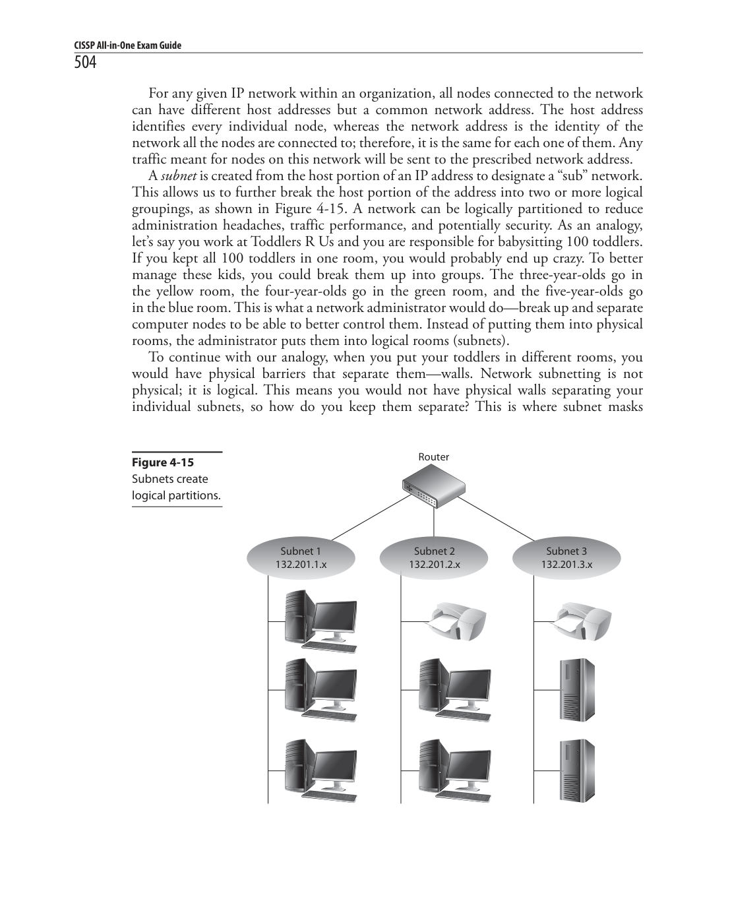
Figure 4-15
come into play. A subnet mask defines smaller networks inside a larger network, just like individual rooms are defined within a building. Subnettingallows larger IP ranges to be divided into smaller, logical, and more tangible network segments. Consider an organization with several divisions, such as IT, Accounting, HR, and so on. Creating subnets for each division breaks the networks into logical partitions that route traffic directly to recipients without dispersing data all over the network. This drastically reduces the traffic load across the network, reducing the possibility of network congestion and excessive broadcast packets in the network. Implementing network security policies is also much more effective across logically categorized subnets with a demarcated perimeter, as compared to a large, cluttered, and complex network. Subnetting is particularly beneficial in keeping down routing table sizes because external routers can directly send data to the actual network segment without having to worry about the internal architecture of that network and getting the data to individual hosts. This job can be handled by the internal routers, which can determine the individual hosts in a subnetted environment and save the external routers the hassle of analyzing all 32 bits of an IP address and just look at the “masked” bits.
You should not have to calculate any subnets for the CISSP exam, but for a better understanding of how this stuff works under the hood, visit http://compnetworking.about.com/od/workingwithipaddresses/a /subnetmask.htm. If the traditional subnet masks are used, they are referred to asclassfulorclassicalIP addresses. If an organization needs to create subnets that do not follow these traditional sizes, then it would useclasslessIP addresses. This just means a different subnet mask would be used to define the network and host portions of the addresses. After it became clear that available IP addresses were running out as more individuals and corporations participated on the Internet,classless interdomain routing (CIDR)was created. A Class B address range is usually too large for most companies, and a Class C address range is too small, so CIDR provides the flexibility to increase or decrease the class sizes as necessary. CIDR is the method to specify more flexible IP address classes. CIDR is also referred to assupernetting.
To better understand CIDR, visit the following resource: www.tcpipguide .com/free/t_IPClasslessAddressingClasslessInterDomainRoutingCI.htm.
Although each node has an IP address, people usually refer to their hostname rather than their IP address. Hostnames, such as www.mcgraw-hill.com, are easier for humans to remember than IP addresses, such as 198.105.254.228. However, the use of thesetwo nomenclatures requires mapping between the hostnames and IP addresses because the computer understands only the numbering scheme. This process is addressed in the “Domain Name Service” section later in this chapter.
IP provides addressing, packet fragmentation, and packet timeouts. To ensure that packets do not continually traverse a network forever, IP provides aTime to Live(TTL)value that is decremented every time the packet passes through a router. IP can also provide aType of Service(ToS)capability, which means it can prioritize different packets for time-sensitive functions.
IPv6
IPv6, also calledIP next generation (IPng), not only has a larger address space than IPv4 to support more IP addresses; it has some capabilities that IPv4 does not and it accomplishes some of the same tasks differently. All of the specifics of the new functions within IPv6 are beyond the scope of this book, but we will look at a few of them, because IPv6 is the way of the future. IPv6 allows for scoped addresses, which enables an administrator to restrict specific addresses for specific servers or file and print sharing, for example. IPv6 has Internet Protocol Security (IPSec) integrated into the protocol stack, which provides end-to-end secure transmission and authentication. IPv6 has more flexibility and routing capabilities and allows for Quality of Service (QoS) priority values to be assigned to time-sensitive transmissions. The protocol offers autoconfiguration, which makes administration much easier, and it does not require network address translation (NAT) to extend its address space. NAT was developed because IPv4 addresses were running out. Although the NAT technology is extremely useful, it has caused a lot of overhead and transmission problems because it breaks the client/server model that many applications use today. One reason the industry did not jump on the IPv6 bandwagon when it came out years ago is that NAT was developed, which reduced the speed at which IP addresses were being depleted. Although the conversion rate from IPv4 to IPv6 is slow in some parts of the world and the implementation process is quite complicated, the industry is making the shift because of all the benefits that IPv6 brings to the table.
NAT is covered in the “Network Address Translation” section later in this chapter.
The IPv6 specification, as outlined in RFC 2460, lays out the differences and benefits of IPv6 over IPv4. A few of the differences are as follows:
IPv6 increases the IP address size from 32 bits to 128 bits to support more levels
- of addressing hierarchy, a much greater number of addressable nodes, and simpler autoconfiguration of addresses.
The scalability of multicast routing is improved by adding a “scope” field to
- multicast addresses. Also, a new type of address called ananycast addressis defined, which is used to send a packet to any one of a group of nodes.
Some IPv4 header fields have been dropped or made optional to reduce the
- common-case processing cost of packet handling and to limit the bandwidth cost of the IPv6 header. This is illustrated in Figure 4-16.
Changes in the way IP header options are encoded allow for more efficient
- forwarding, less stringent limits on the length of options, and greater flexibility for introducing new options in the future.
A new capability is added to enable the labeling of packets belonging to
- particular traffic “flows” for which the sender requests special handling, such as nondefault QoS or “real-time” service.
Extensions to support authentication, data integrity, and (optional) data
- confidentiality are also specified for IPv6.
IPv4 limits packets to 65,535 bytes of payload, and IPv6 extends this size to 4,294,967,295 bytes. These larger packets are referred to asjumbogramsand improve performance over high-maximum transmission unit (MTU) links. Currently most of the world still uses IPv4, but IPv6 is being deployed more rapidly. This means that there are “pockets” of networks using IPv4 and “pockets” of networks using IPv6 that still need to communicate. This communication takes place through different tunneling techniques, which either encapsulate IPv6 packets within IPv4 packets or carry out
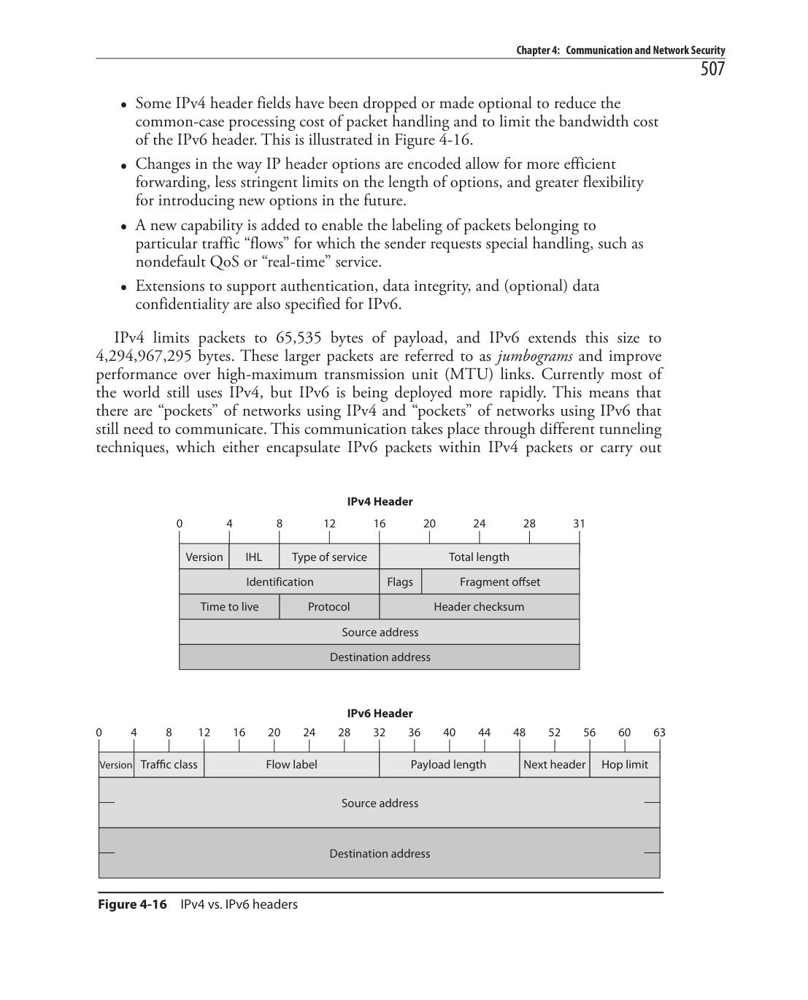
Figure 4-16IPv4 vs. IPv6 headers
automated address translations.Automatic tunnelingis a technique where the routing infrastructure automatically determines the tunnel endpoints so that protocol tunneling can take place without preconfiguration. In the6to4tunneling method, the tunnel endpoints are determined by using a well-known IPv4 anycast address on the remote side and embedding IPv4 address data within IPv6 addresses on the local side.Teredo is another automatic tunneling technique that uses UDP encapsulation so that NAT address translations are not affected.Intra-Site Automatic Tunnel Addressing Protocol (ISATAP)treats the IPv4 network as a virtual IPv6 local link, with mappings from each IPv4 address to a link-local IPv6 address. The 6to4 and Teredo areintersitetunneling mechanisms, and ISATAP is anintrasite mechanism. So the first two are used for connectivity between different networks, and ISATAP is used for connectivity of systems within a specific network. Notice in Figure 4-17 that 6to4 and Teredo are used on the Internet and ISATAP is used within an intranet. While many of these automatic tunneling techniques reduce administration overhead, because network administrators do not have to configure each and every system and network device with two different IP addresses, there are security risks that need to be understood. Many times users and network administrators do not know that automatic tunneling capabilities are enabled, and thus they do not ensure that these different tunnels are secured and/or are being monitored. If you are an administrator of a network and have intrusion detection systems (IDSs), intrusion prevention systems (IPSs), and
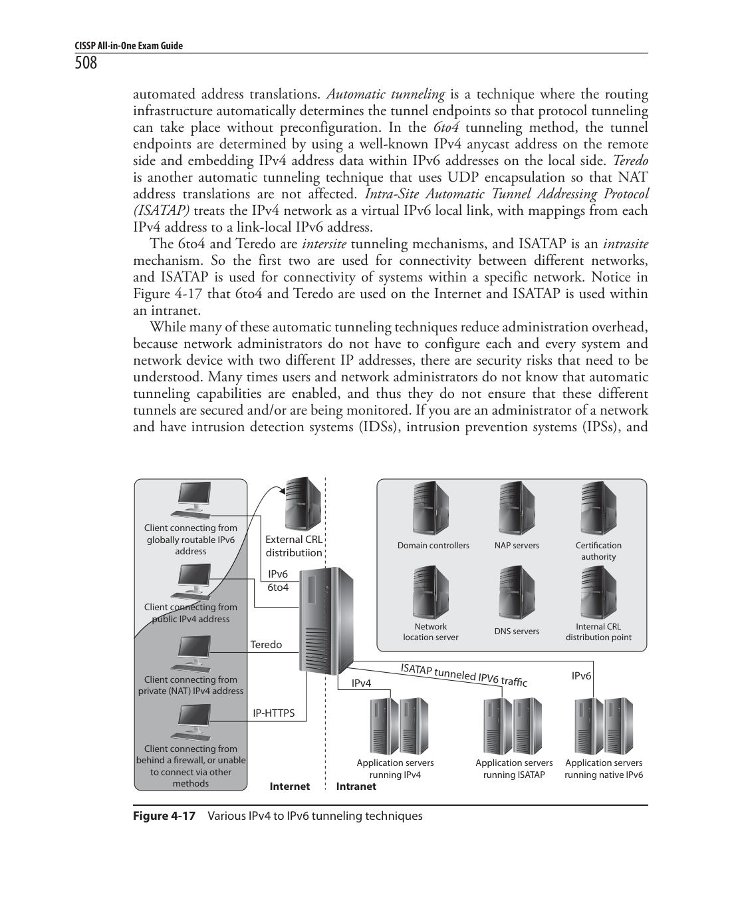
Figure 4-17Various IPv4 to IPv6 tunneling techniques
firewalls that are only configured to monitor and restrict IPv4 traffic, then all IPv6 traffic could be traversing your network insecurely. Attackers use these protocol tunnels and misconfigurations to get past these types of security devices so that malicious activities can take place unnoticed. If you are a user and have a host-based firewall that only understands IPv4 and your operating system has a dual IPv4/IPv6 networking stack, traffic could be bypassing your firewall without being monitored and logged. The use of Teredo can actually open ports in NAT devices that allow for unintended traffic in and out of a network. It is critical that people who are responsible for configuring and maintaining systems and networks understand the differences between IPv4 and IPv6 and how the various tunneling mechanisms work so that all vulnerabilities are identified and properly addressed. Products and software may need to be updated to address both traffic types, proxies may need to be deployed to manage traffic communication securely, IPv6 should be disabled if not needed, and security appliances need to be configured to monitor all traffic types.
Layer 2 Security Standards
As frames pass from one network device to another device, attackers could sniff the data; modify the headers; redirect the traffic; spoof traffic; carry out man-in-the-middle attacks, DoS attacks, and replay attacks; and indulge in other malicious activities. It has become necessary to secure network traffic at the frame level, which is layer 2 of the OSI model. 802.1AEistheIEEEMACSecuritystandard(MACSec),whichdefinesa security infrastructure to provide data confidentiality, data integrity, and data origin authentication. Where a virtual private network (VPN) connection provides protection at the higher networking layers, MACSec provides hop-by-hop protection at layer 2, as shown in Figure 4-18. MACSec integrates security protection into wired Ethernet networks to secure LAN- based traffic. Only authenticated and trusted devices on the network can communicate with each other. Unauthorized devices are prevented from communicating via the network, which helps prevent attackers from installing rogue devices and redirecting traffic between nodes in an unauthorized manner. When a frame arrives at a device that is configured with MACSec, the MACSec Security Entity (SecY) decrypts the frame if necessary and computes an integrity check value (ICV) on the frame and compares it with the ICV that was sent with the frame. If the ICVs match, the device processes the
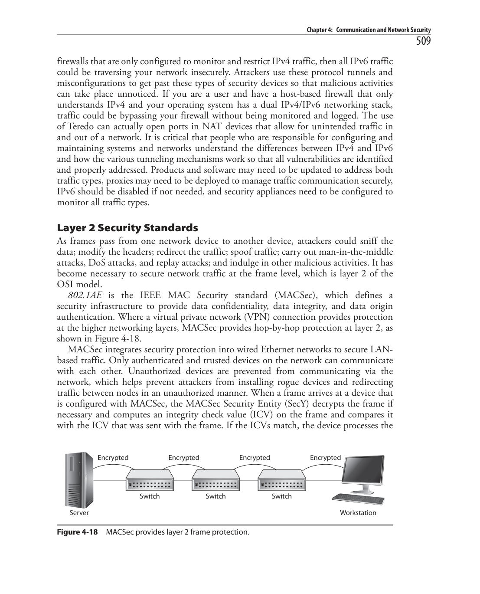
Figure 4-18MACSec provides layer 2 frame protection.
frame. If they do not match, the device handles the frame according to a preconfigured policy, such as discarding it. TheIEEE 802.1ARstandard specifies unique per-device identifiers (DevID) and the management and cryptographic binding of a device (router, switch, access point) to its identifiers. A verifiable unique device identity allows establishment of the trustworthiness of devices, and thus facilitates secure device provisioning. As a security administrator you really only want devices that are allowed on your network to be plugged into your network. But how do you properly and uniquely identify devices? The manufacture serial number is not available for a protocol to review. MAC, hostnames, and IP addresses are easily spoofed. 802.1AR defines a globally unique perdevice secure identifier cryptographically bound to the device through the use of public cryptography and digital certificates. These unique hardware-based credentials can be used with the Extensible Authentication Protocol-Transport Layer Security (EAP-TLS) authentication framework. Each device that is compliant with IEEE 802.1AR comes with a single built-in initial secure device identity (iDevID). The iDevID is an instance of the general concept of a DevID, which is intended to be used with authentication protocols such as EAP, which is supported by IEEE 802.1X. So 802.1AR provides a unique ID for a device. 802.1AE provides data encryption, integrity, and origin authentication functionality. 802.1AF carries out key agreement functions for the session keys used for data encryption. Each of these standards provides specific parameters to work within an 802.1X EAP-TLS framework, as shown in Figure 4-19.
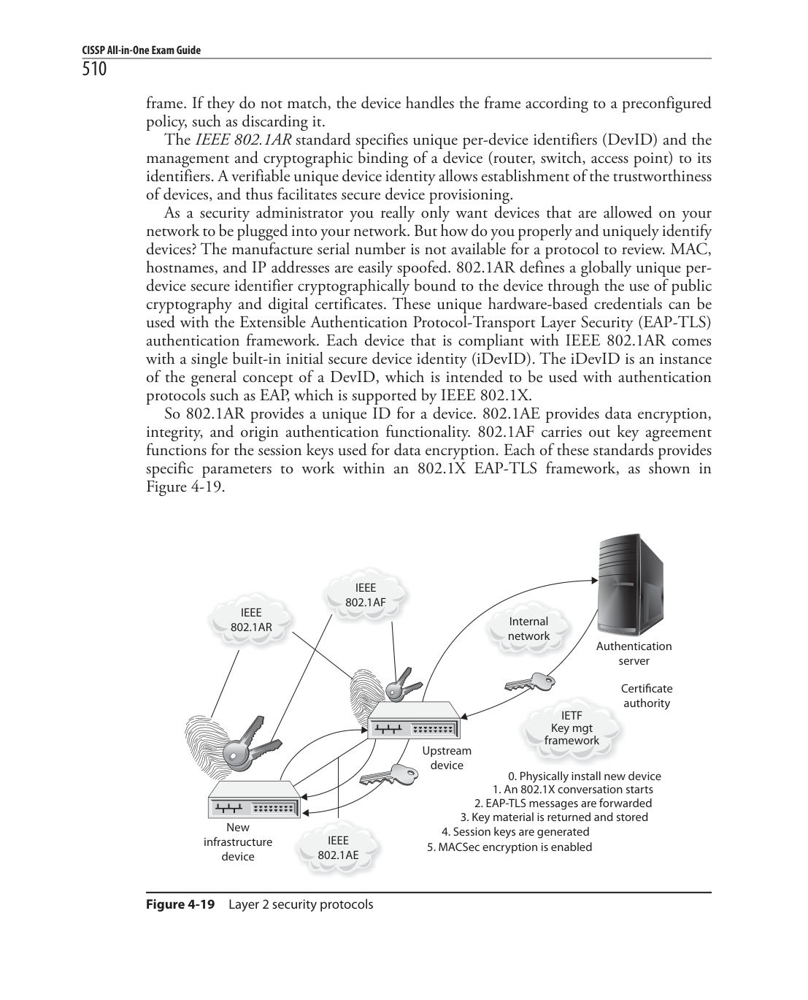
Figure 4-19Layer 2 security protocols
As Figure 4-19 shows, when a new device is installed on the network, it cannot just start communicating with other devices, receive an IP address from a Dynamic Host Configuration Protocol (DHCP) server, resolve names with the DNS server, etc. The device cannot carry out any network activity until it is authorized to do so. So 802.1X port authentication kicks in, which means that only authentication data is allowed to travel from the new device to the authenticating server. The authentication data is the digital certificate and hardware identity associated with that device (802.1AR), which is processed by EAP-TLS. Once the device is authenticated, usually by a Remote Authentication Dial-In User Server (RADIUS) server, encryption keying material is negotiated and agreed upon between surrounding network devices. Once the keying material is installed, then data encryption and frame integrity checking can take place (802.1AE) as traffic goes from one network device to the next. These IEEE standards are new and evolving and at different levels of implementation by various vendors. One way the unique hardware identity and cryptographic material are embedded in new network devices is through the use of a Trusted Platform Module (TPM; described in Chapter 3).
Converged Protocols
Converged protocolsare those that started off independent and distinct from one another but over time converged to become one. How is this possible? Think about the phone and data networks. Once upon a time, these were two different entities and each had its own protocols and transmission media. For a while, in the 1990s, data networks sometimes rode over voice networks using data modems. This was less than ideal, which is why we flipped it around and started using data networks as the carrier for voice communications. Over time, the voice protocols converged onto the data protocols, which paved the way for Voice over IP (VoIP). Technically, the termconvergedimplies that the two protocols became one. Oftentimes, however, the term is used to describe cases in which one protocol was originally independent of another, but over time started being encapsulated (or tunneled) within that other one. The following are examples of converged protocols:
Fibre Channel over Ethernet (FCoE)This is a protocol encapsulation that
- allows Fibre Channel (FC) frames to ride over Ethernet networks. FC was developed by ANSI in 1988 as a way to connect supercomputers using optical fibers. Nowadays FCoE is used in some storage area networks (SANs), but is not common.
Multiprotocol Label Switching (MPLS)MPLS was originally developed to
- improve routing performance, but is frequently used for its ability to create VPNs over a variety of layer 2 protocols. It has elements of both layer 2 (data link) and layer 3 (networking), and so is commonly referred to as a layer 2.5 protocol. MPLS is considered a converged protocol because it can encapsulate any higherlayer protocol and tunnel it over a variety of links.
Internet Small Computer System Interface (iSCSI)iSCSI encapsulates SCSI
- data in TCP segments. SCSI is a set of technologies that allows peripherals to be connected to computers. The problem with the original SCSI was that it has limited range, which means that connecting a remote peripheral (e.g., camera or storage device) is not normally possible. The solution was to let SCSI ride on TCP segments so a peripheral device could be literally anywhere in the world and still appear as local to a computer.
IP convergence, which addresses a specific type of converged protocols, is the transition of services from disparate transport media and protocols to IP. The earlier example of VoIP is also a case of IP convergence. It is not hard to see that IP has emerged as the dominant standard for networking, so it makes sense that any new protocols would leverage this existing infrastructure rather than create a separate one.
Types of Transmission
Physical data transmission can happen in different ways (analog or digital); can use different synchronization schemes (synchronous or asynchronous); can use either one sole channel over a transmission medium (baseband) or several different channels over a transmission medium (broadband); and can take place as electrical voltage, radio wave, or optical signals. These transmission types and their characteristics are described in the following sections.
Analog and Digital
Asignalis just some way of moving information in a physical format from one point to another point. You can signal a message to another person through nodding your head, waving your hand, or giving a wink. Somehow you are transmitting data to that person through your signaling method. In the world of technology, we have specific carrier signals that are in place to move data from one system to another system. The carrier signal is like a horse, which takes a rider (data) from one place to another place. Data can be transmitted through analog or digital signaling formats. If you are moving data through an analog transmission technology (e.g., radio), then the data is represented by the characteristics of the waves that are carrying it. For example, a radio station uses a transmitter to put its data (music) onto a radio wave that will travel all the way to your antenna. The information is stripped off by the receiver in your radio and presented to you in its original format—a song. The data is encoded onto the carrier signal and is represented by various amplitude and frequency values, as shown in Figure 4-20. Data being represented in wave values (analog) is different from data being represented in discrete voltage values (digital). As an analogy, compare an analog clock and a digital clock. An analog clock has hands that continuously rotate on the face of the clock. To figure out what time it is, you have to interpret the position of the hands and map their positions to specific values. So you have to know that if the large hand is on the number 1 and the small hand is on the number 6, this actually means 1:30. The individual and specific location of the hands corresponds to a value. A digital clock does not take this much work. You just look at it and it gives you a time value in the format of
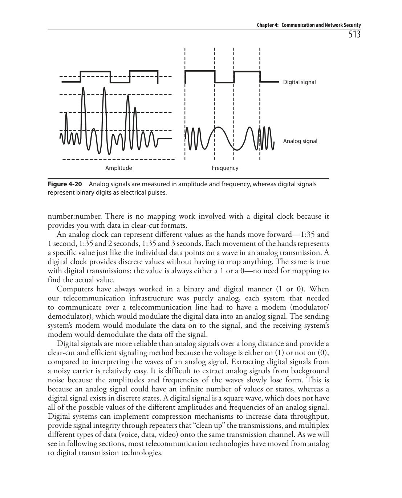
Figure 4-20Analog signals are measured in amplitude and frequency, whereas digital signals
number:number. There is no mapping work involved with a digital clock because it provides you with data in clear-cut formats. An analog clock can represent different values as the hands move forward—1:35 and 1 second, 1:35 and 2 seconds, 1:35 and 3 seconds. Each movement of the hands represents a specific value just like the individual data points on a wave in an analog transmission. A digital clock provides discrete values without having to map anything. The same is true with digital transmissions: the value is always either a 1 or a 0—no need for mapping to find the actual value. Computers have always worked in a binary and digital manner (1 or 0). When our telecommunication infrastructure was purely analog, each system that needed to communicate over a telecommunication line had to have a modem (modulator/ demodulator), which would modulate the digital data into an analog signal. The sending system’s modem would modulate the data on to the signal, and the receiving system’s modem would demodulate the data off the signal. Digital signals are more reliable than analog signals over a long distance and provide a clear-cut and efficient signaling method because the voltage is either on (1) or not on (0), compared to interpreting the waves of an analog signal. Extracting digital signals from a noisy carrier is relatively easy. It is difficult to extract analog signals from background noise because the amplitudes and frequencies of the waves slowly lose form. This is because an analog signal could have an infinite number of values or states, whereas a digital signal exists in discrete states. A digital signal is a square wave, which does not have all of the possible values of the different amplitudes and frequencies of an analog signal. Digital systems can implement compression mechanisms to increase data throughput, provide signal integrity through repeaters that “clean up” the transmissions, and multiplex different types of data (voice, data, video) onto the same transmission channel. As we will see in following sections, most telecommunication technologies have moved from analog to digital transmission technologies.
Bandwidthrefers to the number of electrical pulses that can be transmitted over a link within a second, and these electrical pulses carry individualbitsof information. Bandwidth is the data transfercapabilityof a connection and is commonly associated with the amount of available frequencies and speed of a link.Data throughputis the actual amount of data that can be carried over this connection. Data throughput values can be higher than bandwidth values if compression mechanisms are implemented. But if links are highly congested or there are interference issues, the data throughput values can be lower. Both bandwidth and data throughput are measured in bits per second.
Asynchronous and Synchronous
Analog and digital transmission technologies deal with the characteristics of the physical carrier on which data is moved from one system to another. Asynchronous and synchronous transmission types are similar to the cadence rules we use for conversationsynchronization. Asynchronous and synchronous network technologies provide synchronization rules to govern how systems communicate to each other. If you have ever spoken over a satellite phone, you have probably experienced problems with communication synchronization. You and the other person talking do not allow for the necessary delay that satellite communication requires, so you “speak over” one another. Once you figure out the delay in the connection, you resynchronize your timing so that only one person’s data (voice) is transmitting at one time so that each person can properly understand the full conversation. Proper pauses frame your words in a way to make them understandable. Synchronization through communication also happens when we write messages to each other. Properly placed commas, periods, and semicolons provide breaks in text so that the person reading the message can better understand the information. If you see “stickwithmekidandyouwillweardiamonds” without the proper punctuation, it is more difficult for you to understand. This is why we have grammar rules. If someone writes you a letter starting from the bottom and right side of a piece of paper and you do not know this, you will not be able to read his message properly. Technologicalcommunicationprotocolsalsohavetheirowngrammarand synchronization rules when it comes to the transmission of data. If two systems are communicating over a network protocol that employs asynchronous timing, then start and stop bits are used. The sending system sends a “start” bit, then sends its character, and then sends a “stop” bit. This happens for the whole message. The receiving system knows when a character is starting and stopping; thus, it knows how to interpret each character of the message. This is akin to our previous example of using punctuation marks in written communications to convey pauses. If the systems are communicating over a network protocol that uses synchronous timing, then no start and stop bits are added. The whole message is sent without artificial breaks, but with a common timing signal that allows the receiver to know how to interpret the information without these bits. This is similar to our satellite phone example in which we use a timing signal (i.e., we count off seconds in our head) to ensure we don’t step all over the other person’s speech.
If two systems are going to communicate using a synchronous transmission technology, they do not use start and stop bits, but the synchronization of the transfer of data takes place through a timing sequence, which is initiated by a clock pulse. It is the data link protocol that has the synchronization rules embedded into it. So when a message goes down a system’s network stack, if a data link protocol, such as Highlevel Data Link Control (HDLC, described later in the chapter), is being used, then a clocking sequence is in place. (The receiving system has to also be using this protocol so it can interpret the data.) If the message is going down a network stack and a protocol such as Asynchronous Transfer Mode (ATM) is at the data link layer, then the message is framed with start and stop indicators. Data link protocols that employ synchronous timing mechanisms are commonly used in environments that have systems that transfer large amounts of data in a predictable manner (i.e., mainframe environment). Environments that contain systems that send data in a nonpredictable manner (i.e., Internet connections) commonly have systems with protocols that use asynchronous timing mechanisms. So, synchronous communication protocols transfer data as a stream of bits instead of framing it in start and stop bits. The synchronization can happen between two systems using a clocking mechanism, or a signal can be encoded into the data stream to let the receiver synchronize with the sender of the message. This synchronization needs to take place before the first message is sent. The sending system can transmit a digital clock pulse to the receiving system, which translates into, “We will start here and work in this type of synchronization scheme.” Many modern bulk communication systems, such as highbandwidth satellite links, use Global Positioning System (GPS) clock signals to synchronize their communications without the need to include a separate channel for timing.
Communication Characteristics
Asynchronous:
No timing component
- Surrounds each byte with processing bits
- Parity bit used for error control
- Each byte requires three bits of instruction (start, stop, parity)
- Synchronous:
Timing component for data transmission synchronization
- Robust error checking, commonly through cyclic redundancy checking (CRC)
- Used for high-speed, high-volume transmissions
- Minimal overhead compared to asynchronous communication
Broadband and Baseband
So analog transmission means that data is being moved as waves, and digital transmission means that data is being moved as discrete electric pulses. Synchronous transmission means that two devices control their conversations with a clocking mechanism, and asynchronous means that systems use start and stop bits for communication synchronization. Now let’s look at how many individual communication sessions can take place at one time. Abasebandtechnology uses the entire communication channel for its transmission, whereas abroadbandtechnology divides the communication channel into individual and independent subchannels so that different types of data can be transmitted simultaneously. Baseband permits only one signal to be transmitted at a time, whereas broadband carries several signals over different subchannels. For example, a coaxial cable TV (CATV) system is a broadband technology that delivers multiple television channels over the same cable. This system can also provide home users with Internet access, but this data is transmitted at a different frequency range than the TV channels. As an analogy, baseband technology only provides a one-lane highway for data to get from one point to another point. A broadband technology provides a data highway made up of many different lanes, so that not only can more data be moved from one point to another point, but different types of data can travel over the individual lanes. Any transmission technology that “chops up” one communication channel into multiple channels is considered broadband. The communication channel is usually a specific range of frequencies, and the broadband technology provides delineation between these frequencies and techniques on how to modulate the data onto the individual subchannels. To continue with our analogy, we could have one large highway thatcould fit eight individual lanes—but unless we have something that defines these lanes and there are rules for how these lanes are used, this is a baseband connection. If we take the same highway and lay down painted white lines, traffic signs, on and off ramps, and rules that drivers have to follow, now we are talking about broadband. A digital subscriber line (DSL) uses one single phone line and constructs a set of highfrequency channels for Internet data transmissions. A cable modem uses the available frequency spectrum that is provided by a cable TV carrier to move Internet traffic to and from a household. Mobile broadband devices implement individual channels over a cellular connection, and Wi-Fi broadband technology moves data to and from an access point over a specified frequency set. We will cover these technologies in more depth throughout the chapter, but for now you just need to understand that they are different ways of cutting up one channel into individual channels for higher data transfer and that they provide the capability to move different types of traffic at the same time.
How Do These Technologies Work Together?
If you are new to networking, it can be hard to understand how the OSI model, analog and digital, synchronous and asynchronous, and baseband and broadband technologies interrelate and differentiate. You can think of the OSI model as a structure to build different languages. If you and Luigi are going to speak to each other in
English, you have to follow the rules of this language to be able to understand each other. If you are going to speak French, you still have to follow the rules of language (OSI model), but the individual letters that make up the words are in a different order. The OSI model is a generic structure that can be used to define many different “languages” for devices to be able to talk to each other. Once you and Luigi agree that you are going to communicate using English, you canspeakyour message to Luigi, and thus your words move over continuous airwaves (analog). Or you can choose to send your message to Luigi through Morse code, which uses individual discrete values (digital). You can send Luigi all of your words with no pauses or punctuation (synchronous) or insert pauses and punctuation (asynchronous). If you are the only one speaking to Luigi at a time, this would be analogous to baseband. If ten people are speaking to Luigi at one time, this would be broadband.
Next, let’s look at the different ways we connect the many devices that make up small and large networks around the world.
Cabling
Electrical signals travel as currents through cables and can be negatively affected by many factors within the environment, such as motors, fluorescent lighting, magnetic forces, and other electrical devices. These items can corrupt the data as it travels through the cable, which is why cable standards are used to indicate cable type, shielding, transmission rates, and maximum distance a particular type of cable can be used. Cabling has bandwidth values associated with it, which is different from data throughput values. Although these two terms are related, they are indeed different. The bandwidth of a cable indicates the highest frequency range it uses—for instance, 10Base-T uses 10 MHz, 100Base-TX uses 80 MHz, and 1000Base-T uses 100 MHz. This is different from the actual amount of data that can be pushed through a cable. The data throughput rate is the actual amount of data that goes through the wire after compression and encoding have been used. 10Base-T has a data rate of 10 Mbps, 100Base-TX has a data rate of 100 Mbps, and 1000Base-T has a data rate of 1 Gbps. The bandwidth can be thought of as the size of the pipe, and the data throughput rate is the actual amount of data that travels per second through that pipe. Bandwidth is just one of the characteristics we will look at as we cover various cabling types in the following sections.
Coaxial Cable
Coaxial cablehas a copper core that is surrounded by a shielding layer and grounding wire, as shown in Figure 4-21. This is all encased within a protective outer jacket. Compared to twisted-pair cable, coaxial cable is more resistant to electromagnetic interference
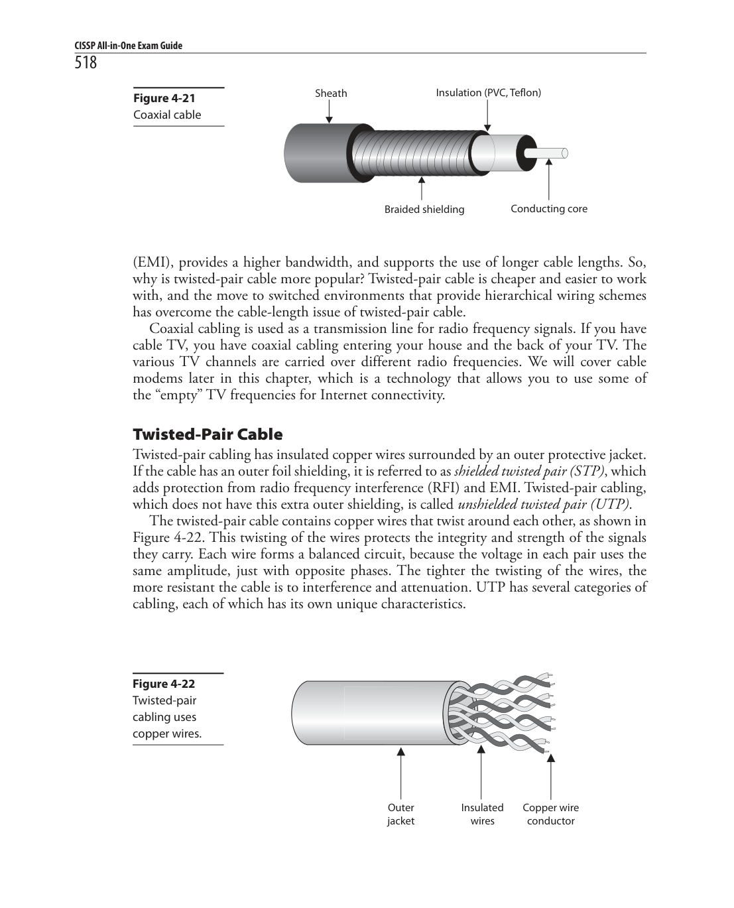
Figure 4-21
(EMI), provides a higher bandwidth, and supports the use of longer cable lengths. So, why is twisted-pair cable more popular? Twisted-pair cable is cheaper and easier to work with, and the move to switched environments that provide hierarchical wiring schemes has overcome the cable-length issue of twisted-pair cable. Coaxial cabling is used as a transmission line for radio frequency signals. If you have cable TV, you have coaxial cabling entering your house and the back of your TV. The various TV channels are carried over different radio frequencies. We will cover cable modems later in this chapter, which is a technology that allows you to use some of the“empty” TV frequencies for Internet connectivity.
Twisted-Pair Cable
Twisted-pair cabling has insulated copper wires surrounded by an outer protective jacket. If the cable has an outer foil shielding, it is referred to asshieldedtwisted pair (STP), which adds protection from radio frequency interference (RFI) and EMI. Twisted-pair cabling, which does not have this extra outer shielding, is calledunshielded twisted pair (UTP). The twisted-pair cable contains copper wires that twist around each other, as shown in Figure 4-22. This twisting of the wires protects the integrity and strength of the signals they carry. Each wire forms a balanced circuit, because the voltage in each pair uses the same amplitude, just with opposite phases. The tighter the twisting of the wires, the more resistant the cable is to interference and attenuation. UTP has several categories of cabling, each of which has its own unique characteristics.
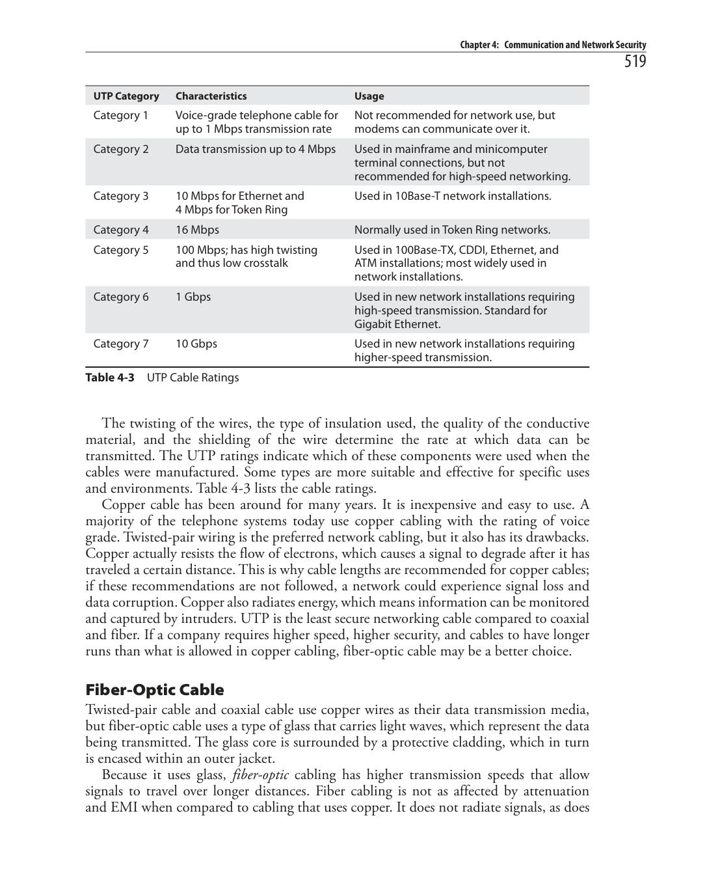
Category 1Voice-grade telephone cable forNot recommended for network use, but
The twisting of the wires, the type of insulation used, the quality of the conductive material, and the shielding of the wire determine the rate at which data can be transmitted. The UTP ratings indicate which of these components were used when the cables were manufactured. Some types are more suitable and effective for specific uses and environments. Table 4-3 lists the cable ratings. Copper cable has been around for many years. It is inexpensive and easy to use. A majority of the telephone systems today use copper cabling with the rating of voice grade. Twisted-pair wiring is the preferred network cabling, but it also has its drawbacks. Copper actually resists the flow of electrons, which causes a signal to degrade after it has traveled a certain distance. This is why cable lengths are recommended for copper cables; if these recommendations are not followed, a network could experience signal loss and data corruption. Copper also radiates energy, which means information can be monitored and captured by intruders. UTP is the least secure networking cable compared to coaxial and fiber. If a company requires higher speed, higher security, and cables to have longer runs than what is allowed in copper cabling, fiber-optic cable may be a better choice.
Fiber-Optic Cable
Twisted-pair cable and coaxial cable use copper wires as their data transmission media, but fiber-optic cable uses a type of glass that carries light waves, which represent the data being transmitted. The glass core is surrounded by a protective cladding, which in turn is encased within an outer jacket. Because it uses glass,fiber-opticcabling has higher transmission speeds that allow signals to travel over longer distances. Fiber cabling is not as affected by attenuation and EMI when compared to cabling that uses copper. It does not radiate signals, as does
UTP cabling, and is difficult to eavesdrop on; therefore, fiber-optic cabling is much more secure than UTP, STP, or coaxial. Using fiber-optic cable sounds like the way to go, so you might wonder why you would even bother with UTP, STP, or coaxial. Unfortunately, fiber-optic cable is expensive and difficult to work with. It is usually used in backbone networks and environments that require high data transfer rates. Most networks use UTP and connect to a backbone that uses fiber.
The price of fiber and the cost of installation have been continuously decreasing, while the demand for more bandwidth only increases. More organizations and service providers are installing fiber directly to the enduser.
Fiber Components
Fiber-optic cables are made up of a light source, an optical fiber cable, and a light detector.
Light sourcesConvert electrical signal into light signal.
Light-emitting diodes (LEDs)
- Diode lasers
- Optical fiber cableData travels as light.
Single modeSmall glass core, and are used for high-speed data
- transmission over long distances. They are less susceptible to attenuation than multimode fibers.
MultimodeLarge glass cores, and are able to carry more data than single-
- core fibers, though they are best for shorter distances because of their higher attenuation levels.
Light detectorConverts light signal back into electrical signal.
Cabling Problems
Cables are extremely important within networks, and when they experience problems, the whole network could experience problems. This section addresses some of the more common cabling issues many networks experience.
Noise
Noise on a line is usually caused by surrounding devices or by characteristics of the wiring’s environment. Noise can be caused by motors, computers, copy machines, fluorescent lighting, and microwave ovens, to name a few. This background noise can
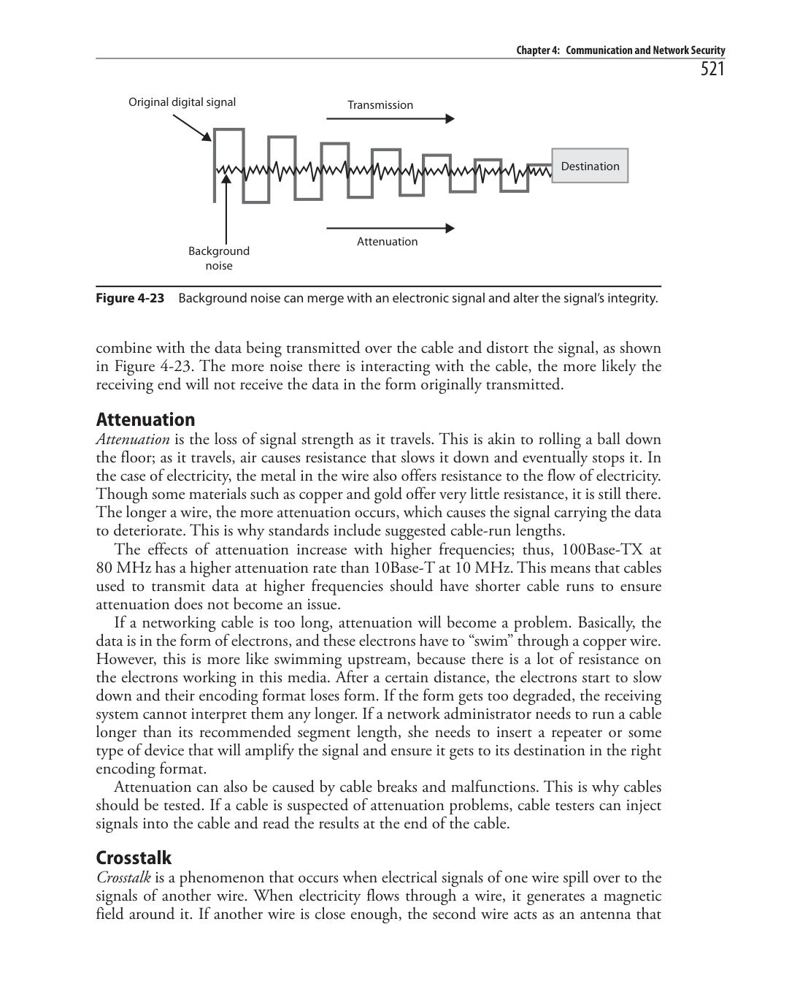
Figure 4-23Background noise can merge with an electronic signal and alter the signal’s integrity.
combine with the data being transmitted over the cable and distort the signal, as shown in Figure 4-23. The more noise there is interacting with the cable, the more likely the receiving end will not receive the data in the form originally transmitted.
Attenuation
Attenuationis the loss of signal strength as it travels. This is akin to rolling a ball down the floor; as it travels, air causes resistance that slows it down and eventually stops it. In the case of electricity, the metal in the wire also offers resistance to the flow of electricity. Though some materials such as copper and gold offer very little resistance, it is still there. The longer a wire, the more attenuation occurs, which causes the signal carrying the data to deteriorate. This is why standards include suggested cable-run lengths. The effects of attenuation increase with higher frequencies; thus, 100Base-TX at 80 MHz has a higher attenuation rate than 10Base-T at 10 MHz. This means that cables used to transmit data at higher frequencies should have shorter cable runs to ensure attenuation does not become an issue. If a networking cable is too long, attenuation will become a problem. Basically, the data is in the form of electrons, and these electrons have to “swim” through a copper wire. However, this is more like swimming upstream, because there is a lot of resistance on the electrons working in this media. After a certain distance, the electrons start to slow down and their encoding format loses form. If the form gets too degraded, the receiving system cannot interpret them any longer. If a network administrator needs to run a cable longer than its recommended segment length, she needs to insert a repeater or some type of device that will amplify the signal and ensure it gets to its destination in the right encoding format. Attenuation can also be caused by cable breaks and malfunctions. This is why cables should be tested. If a cable is suspected of attenuation problems, cable testers can inject signals into the cable and read the results at the end of the cable.
Crosstalk
Crosstalkis a phenomenon that occurs when electrical signals of one wire spill over to the signals of another wire. When electricity flows through a wire, it generates a magnetic field around it. If another wire is close enough, the second wire acts as an antenna that
turns this magnetic field into an electric current. When the different electrical signals mix, their integrity degrades and data corruption can occur. UTP is much more vulnerable to crosstalk than STP or coaxial because it does not have extra layers of shielding to help protect against it.
Fire Rating of Cables
Just as buildings must meet certain fire codes, so must wiring schemes. A lot of companies string their network wires in drop ceilings—the space between the ceiling and the next floor—or under raised floors. This hides the cables and prevents people from tripping over them. However, when wires are strung in places like this, they are more likely to catch on fire without anyone knowing about it. Some cables produce hazardous gases when on fire that would spread throughout the building quickly. Network cabling that is placed in these types of areas, calledplenumspace, must meet a specific fire rating to ensure it will not produce and release harmful chemicals in case of a fire. A ventilation system’s components are usually located in this plenum space, so if toxic chemicals were to get into that area, they could easily spread throughout the building in minutes. Nonplenumcables usually have a polyvinyl chloride (PVC) jacket covering, whereas plenum-rated cables have jacket covers made of fluoropolymers. When setting up a network or extending an existing network, it is important you know which wire types are required in which situation. Cables should be installed in unexposed areas so they are not easily tripped over, damaged, or eavesdropped upon. The cables should be strung behind walls and in the protected spaces as in dropped ceilings. In environments that require extensive security, wires can be encapsulated withinpressurized conduitsso if someone attempts to access a wire, the pressure of the conduit will change, causing an alarm to sound and a message to be sent to the security staff. A better approach to high-security requirements is probably to use fiber-optic cable, which is much more difficult to covertly tap.
While a lot of the world’s infrastructure is wired and thus uses one of these types of cables, remember that a growing percentage of our infrastructure is not wired. We will cover these technologies later in the chapter (mobile, wireless, satellite, etc.).
Networking Foundations
Networking has made amazing advances in just a short period of time. In the beginning of the Computer Age, mainframes were the name of the game. They were isolated powerhouses, and many had “dumb” terminals hanging off them. However, this was not true networking. In the late 1960s and early 1970s, some technical researchers came up with ways of connecting all the mainframes and Unix systems to enable them to communicate. This marked the Internet’s baby steps. Microcomputers evolved and were used in many offices and work areas. Slowly, dumb terminals got a little smarter and more powerful as users needed to share office resources. And bam! Ethernet was developed, which allowed for true networking. There was no turning back after this.
While access to shared resources was a major drive in the evolution of networking, today the infrastructure that supports these shared resources and the services these components provide is really the secret to the secret sauce. As we will see, networks are made up of routers, switches, web servers, proxies, firewalls, name resolution technologies, protocols, IDS, IPS, storage systems, antimalware software, virtual private networks, demilitarized zones (DMZs), data loss prevention solutions, e-mail systems, cloud computing, web services, authentication services, redundant technologies, public key infrastructure, private branch exchange (PBX), and more. While functionality is critical, there are other important requirements that need to be understood when architecting a network, such as scalability, redundancy, performance, security, manageability, and maintainability. Infrastructure provides foundational capabilities that support almost every aspect of our lives. When most people think of technology, they focus on the end systems that they interact with—laptops, mobile phones, tablet PCs, workstations, etc.—or the applications they use, such as e-mail, fax, Facebook, websites, instant messaging, Twitter, and online banking. Most people do not even give a thought to how this stuff works under the covers, and many people do not fully realize all the other stuff that is dependent upon technology: medical devices, critical infrastructure, weapon systems, transportation, satellites, telephony, etc. People say it is love that makes the world go around, but let them experience one day without the Internet. We are all more dependent upon the Matrix than we fully realize, and as security professionals we need to not only understand the Matrix, but also secure it.
Network Topology
The arrangement of computers and devices is called anetwork topology. Topology refers to the manner in which a network is physically connected and shows the layout of resources and systems. A difference exists between the physical network topology and the logical topology. A network can be configured as a physical star but work logically as a ring, as in the Token Ring technology. The best topology for a particular network depends on such things as how nodes are supposed to interact; which protocols are used; the types of applications that are available; the reliability, expandability, and physical layout of a facility; existing wiring; and the technologies implemented. The wrong topology or combination of topologies can negatively affect the network’s performance, productivity, and growth possibilities. This section describes the basic types of network topologies. Most networks are much more complex and are usually implemented using a combination of topologies.
Ring Topology
Aring topologyhas a series of devices connected by unidirectional transmission links, as shown in Figure 4-24. These links form a closed loop and do not connect to a central system, as in a star topology (discussed later). In a physical ring formation, each node is dependent upon the preceding nodes. In simple networks, if one system fails, all other systems could be negatively affected because of this interdependence. Today, most networks have redundancy in place or other mechanisms that will protect a whole network from being affected by just one workstation misbehaving, but one disadvantage of using a ring topology is that this possibility exists.
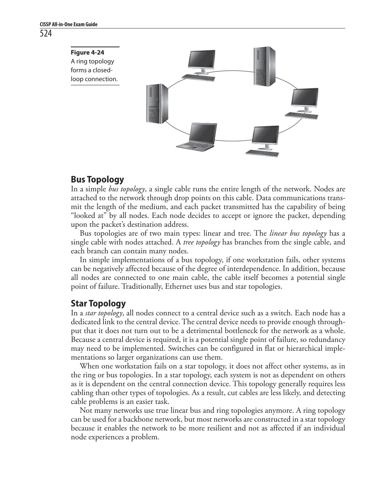
Figure 4-24
Bus Topology
In a simplebus topology, a single cable runs the entire length of the network. Nodes are attached to the network through drop points on this cable. Data communications transmit the length of the medium, and each packet transmitted has the capability of being “looked at” by all nodes. Each node decides to accept or ignore the packet, depending upon the packet’s destination address. Bus topologies are of two main types: linear and tree. Thelinear bus topologyhas a single cable with nodes attached. Atree topologyhas branches from the single cable, and each branch can contain many nodes. In simple implementations of a bus topology, if one workstation fails, other systems can be negatively affected because of the degree of interdependence. In addition, because all nodes are connected to one main cable, the cable itself becomes a potential single point of failure. Traditionally, Ethernet uses bus and star topologies.
Star Topology
In astar topology, all nodes connect to a central device such as a switch. Each node has a dedicated link to the central device. The central device needs to provide enough throughput that it does not turn out to be a detrimental bottleneck for the network as a whole. Because a central device is required, it is a potential single point of failure, so redundancy may need to be implemented. Switches can be configured in flat or hierarchical implementations so larger organizations can use them. When one workstation fails on a star topology, it does not affect other systems, as in the ring or bus topologies. In a star topology, each system is not as dependent on others as it is dependent on the central connection device. This topology generally requires less cabling than other types of topologies. As a result, cut cables are less likely, and detecting cable problems is an easier task. Not many networks use true linear bus and ring topologies anymore. A ring topology can be used for a backbone network, but most networks are constructed in a star topology because it enables the network to be more resilient and not as affected if an individual node experiences a problem.
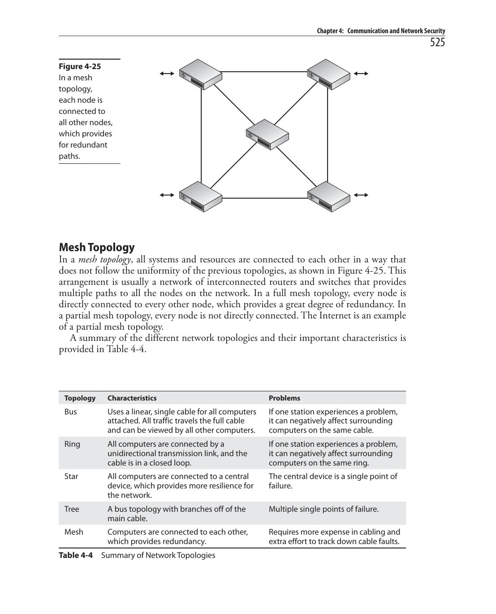
Figure 4-25
Mesh Topology
In amesh topology, all systems and resources are connected to each other in a way that does not follow the uniformity of the previous topologies, as shown in Figure 4-25. This arrangement is usually a network of interconnected routers and switches that provides multiple paths to all the nodes on the network. In a full mesh topology, every node is directly connected to every other node, which provides a great degree of redundancy. In a partial mesh topology, every node is not directly connected. The Internet is an example of a partial mesh topology. A summary of the different network topologies and their important characteristics is provided in Table 4-4.
Media Access Technologies
The physical topology of a network is the lower layer, or foundation, of a network. It determines what type of media will be used and how the media will be connected between different systems. Media access technologies deal with how these systems communicate over this media and are usually represented in protocols, NIC drivers, and interfaces. LAN access technologies set up the rules of how computers will communicate on a network, how errors are handled, the maximum transmission unit (MTU) size of frames, and much more. These rules enable all computers and devices to communicate and recover from problems, and enable users to be productive in accomplishing their networking tasks. Each participating entity needs to know how to communicate properly so all other systems will understand the transmissions, instructions, and requests. This is taken care of by the LAN media access technology.
An MTU is a parameter that indicates how much data a frame can carry on a specific network. Recall that a data frame is the data encapsulation structure that exists at layer 2 (data link) of the OSI model. Different types of network technologies may require different MTU sizes, which is why frames are sometimes fragmented. These technologies reside at the data link layer of the OSI model. Remember that as a message is passed down through a network stack, it is encapsulated by the protocols and services at each layer. When the data message reaches the data link layer, the protocol at this layer adds the necessary headers and trailers that will allow the message to traverse a specific type of network (Ethernet, Token Ring, FDDI, etc.) The protocol and network driver work at the data link layer, and the NIC works at the physical layer, but they have to work together and be compatible. If you install a new server on an Ethernet network, you must implement an Ethernet NIC anddriver. The LAN-based technologies we will cover in the next sections are Ethernet, Token Ring, and FDDI. We will cover wireless networking technologies later in the chapter. Alocal area network (LAN)is a network that provides shared communication and resources in a relatively small area. What defines a LAN, as compared to a WAN, depends on the physical medium, encapsulation protocols, and media access technology. For example, a LAN could use 10Base-T cabling, TCP/IP protocols, and Ethernet media access technology, and it could enable users who are in the same local building to communicate. A WAN, on the other hand, could use fiberoptic cabling, the L2TP encapsulation protocol, and ATM media access technology and could enable users from one building to communicate with users in another building in another state (or country). A WAN connects LANs over great distances geographically. Most of the differences between these technologies are found at the data link layer.
Media Sharing
No matter what type of media access technology is being used, the main resource that has to be shared by all systems and devices on the network is the network transmission channel. This transmission channel could be Token Ring over coaxial cabling, Ethernet over UTP, FDDI over fiber, or Wi-Fi over radio waves. There must be methods in place to make sure that each system gets access to the channel, that the system’s data is not corrupted during transmission, and that there is a way to control traffic in peak times. The different media access technologies covered in the previous sections have their own specific media-sharing capabilities, which are covered next.
Token PassingA token is a 24-bit control frame used to control which computers communicate at what intervals. The token is passed from computer to computer, and only the computer that has the token can actually put frames onto the wire. The token grants a computer the right to communicate. The token contains the data to be transmitted and source and destination address information. When a system has data it needs to transmit, it has to wait to receive the token. The computer then connects its message to the token and puts it on the wire. Each computer checks this message to determine whether it is addressed to it, which continues until the destination computer receives the message. The destination computer makes a copy of the message and flips a bit to tell the source computer it did indeed get its message. Once this gets back to the source computer, it removes the frames from the network. The destination computer makes a copy of the message, but only the originator of the message can remove the message from the token and the network. If a computer that receives the token does not have a message to transmit, it sends the token to the next computer on the network. An empty token has a header, data field, and trailer, but a token that has an actual message has a new header, destination address, source address, and a new trailer. This type of media-sharing method is used by Token Ring and FDDI technologies.
Some applications and network protocols work better if they can communicate at determined intervals, instead of “whenever the data arrives.” In token-passing technologies, traffic arrives in this type of deterministic nature because not all systems can communicate at one time; only the system that has control of the token can communicate. CSMAEthernet protocols define how nodes are to communicate, recover from errors, and access the shared network cable. Ethernet uses CSMA to provide media-sharing capabilities. There are two distinct types of CSMA: CSMA/CD and CSMA/CA. A transmission is called acarrier, so if a computer is transmitting frames, it is performing a carrier activity. When computers use thecarrier sense multiple access with
collision detection (CSMA/CD)protocol, they monitor the transmission activity, or carrier activity, on the wire so they can determine when would be the best time to transmit data. Each node monitors the wire continuously and waits until the wire is free before it transmits its data. As an analogy, consider several people gathered in a group talking here and there about this and that. If a person wants to talk, she usually listens to the current conversation and waits for a break before she proceeds to talk. If she does not wait for the first person to stop talking, she will be speaking at the same time as the other person, and the people around them may not be able to understand fully what each is trying to say. When using the CSMA/CD access method, computers listen for the absence of a carrier tone on the cable, which indicates that no other system is transmitting data. If two computers sense this absence and transmit data at the same time, a collision can take place. Acollisionhappens when two or more frames collide, which most likely corrupts both frames. If a computer puts frames on the wire and its frames collide with another computer’s frames, it will abort its transmission and alert all other stations that a collision just took place. All stations will execute a random collision timer to force a delay before they attempt to transmit data. This random collision timer is called theback-off algorithm.
Collisions are usually reduced by dividing a network with routers or switches.
Carrier sense multiple access with collision avoidance (CSMA/CA)is a medium-sharing method in which each computer signals its intent to transmit data before it actually does so. This tells all other computers on the network not to transmit data right now because doing so could cause a collision. Basically, a system listens to the shared medium to determine whether it is busy or free. Once the system identifies that the “coast is clear” and it can put its data on the wire, it sends out a broadcast to all other systems, telling them it is going to transmit information. It is similar to saying, “Everyone shut up. I am going to talk now.” Each system will wait a period of time before attempting to transmit data to ensure collisions do not take place. The wireless LAN technology 802.11 uses CSMA/CA for its media access functionality.
Carrier-Sensing and Token-Passing Access Methods
Overall, carrier-sensing access methods are faster than token-passing access methods, but the former do have the problem of collisions. A network segment with many devices can cause too many collisions and slow down the network’s performance. Token-passing technologies do not have problems with collisions, but they do not perform at the speed of carrier-sensing technologies. Network routers can help significantly in isolating the network resources for both the CSMA/CD and the token-passing methods.
When there is just one transmission medium (i.e., UTP cable) that has to be shared by all nodes and devices in a network, this is referred to as acontention-basedenvironment. Each system has to “compete” to use the transmission line, which can cause contention. Collision DomainsAs indicated in the preceding section, a collision occurs on Ethernet networks when two computers transmit data at the same time. Other computers on the network detect this collision because the overlapping signals of the collision increase the voltage of the signal above a specific threshold. The more devices on a contention-based network, the more likely collisions will occur, which increases network latency (data transmission delays). A collision domain is a group of computers that are contending, or competing, for the same shared communication medium. An unacceptable amount of collisions can be caused by a highly populated network, a damaged cable or connector, too many repeaters, or cables that exceed the recommended length. If a cable is longer than what is recommended by the Ethernet specification, two computers on opposite ends of the cable may transmit data at the same time. Because the computers are so far away from each other, they may both transmit data and not realize that a collision took place. The systems then go merrily along with their business, unaware that their packets have been corrupted. If the cable is too long, the computers may not listen long enough for evidence of a collision. If the destination computers receive these corrupted frames, they then have to send a request to the source system to retransmit the message, causing even more traffic. These types of problems are dealt with mainly by implementing collision domains. An Ethernet network has broadcast and collision domains. One subnet will be on the same broadcast and collision domain if it is not separated by routers or bridges. If the same subnet is divided by bridges, the bridges can enable the broadcast traffic to pass between the different parts of a subnet, but not the collisions, as shown in Figure 4-26. This is
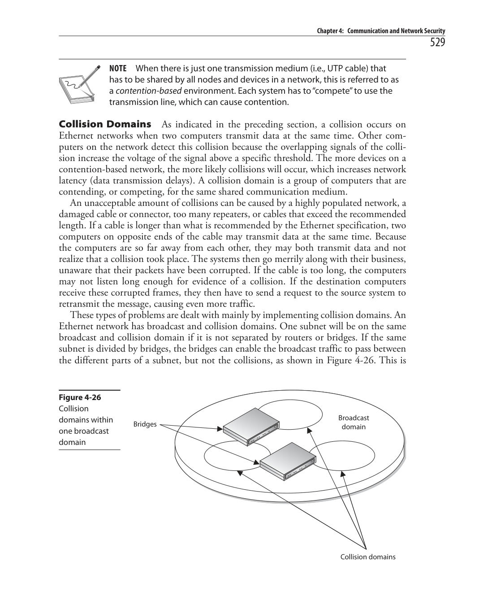
Figure 4-26
how collision domains are formed. Isolating collision domains reduces the amount of collisions that take place on a network and increases its overall performance.
Broadcast domainsare sets of computing nodes that all receive a layer 2 broadcast frame. These are normally all nodes that are interconnected by switches, hubs, or bridges but with no routers in between them.Collision domainsare sets of computing nodes that may produce collisions when they transmit data. These are normally nodes connected by hubs, repeaters, or wireless access points. Another benefit of restricting and controlling broadcast and collision domains is that it makes sniffing the network and obtaining useful information more difficult for an intruder as he traverses the network. A useful tactic for attackers is to install a Trojan horse that sets up a network sniffer on the compromised computer. The sniffer is usually configured to look for a specific type of information, such as usernames and passwords. If broadcast and collision domains are in effect, the compromised system will have access only to the broadcast and collision traffic within its specific subnet or broadcast domain. The compromised system will not be able to listen to traffic on other broadcast and collision domains, and this can greatly reduce the amount of traffic and information available to an attacker. PollingThe third type of media-sharing method is polling. In an environment where apollingLAN media access and sharing method is used, some systems are configured as primary stations and others are configured as secondary stations. At predefined intervals, the primary station asks the secondary station if it has anything to transmit. This is the only time a secondary station can communicate. Polling is a method of monitoring multiple devices and controlling network access transmission. If polling is used to monitor devices, the primary device communicates with each secondary device in an interval to check its status. The primary device then logs the response it receives and moves on to the next device. If polling is used for network access, the primary station asks each device if it has something to communicate to another device. Network access transmission polling is used mainly with mainframe environments. So remember that there are different media access technologies (Ethernet, Token Ring, FDDI, Wi-Fi) that work at the data link and physical layers of the OSI model. These technologies define the data link protocol, NIC and NIC driver specifications, and media interface requirements. These individual media access technologies have their own way of allowing systems to share the one available network transmission medium—Ethernet uses CSMA\CD, Token Ring uses tokens, FDDI uses tokens, Wi-Fi uses CSMA\CA, and mainframe media access technology uses polling. The media-sharing technology is a subcomponent of the media access technology.
When Is a LAN No Longer a LAN?
When two distinct LANs are connected by a router, the result is an internetwork, not a larger LAN. Each distinct LAN has its own addressing scheme, broadcast domain, and communication mechanisms. If two LANs are connected by a different data link layer technology, such as frame relay or ATM, they are considered a WAN.
The term “local” in the context of a LAN refers not so much to the geographical area as to the limitations of a LAN with regard to the shared medium, the number of devices and computers that can be connected to it, the transmission rates, the types of cable that can be used, and the compatible devices. If a network administrator develops a very large LAN that would more appropriately be multiple LANs, too much traffic could result in a big performance hit, or the cabling could be too long, in which case attenuation (signal loss) becomes a factor. Environments where there are too many nodes, routers, and switches may be overwhelmed, and administration of these networks could get complex, which opens the door for errors, collisions, and security holes. The network administrator should follow the specifications of the technology he is using, and once he has maxed out these numbers, he should consider implementing two or more LANs instead of one large LAN. LANs are defined by their physical topologies, data link layer technologies, protocols, and devices used. The following sections cover these topics and how they interrelate.
Ethernet
Ethernetis a set of technologies that enables several devices to communicate on the same network. Ethernet usually uses a bus or star topology. If a linear bus topology is used, all devices connect to one cable. If a star topology is used, each device is connected to a cable that is connected to a centralized device, such as a switch. Ethernet was developed in the 1970s, became commercially available in 1980, and was officially defined through the IEEE 802.3 standard. Ethernet has seen quite an evolution in its short history, from purely coaxial cable installations that worked at 10 Mbps to mostly Category 5 twisted-pair cable that works at speeds of 100 Mbps, 1,000 Mbps (1 Gbps), and 10 Gbps. Ethernet is defined by the following characteristics:
Contention-based technology (all resources use the same shared communication
- medium) Uses broadcast and collision domains
- Uses the carrier sense multiple access with collision detection (CSMA/CD) access
- method Supports full-duplex communication
- Can use coaxial, twisted-pair, or fiber-optic cabling types
- Is defined by standard IEEE 802.3
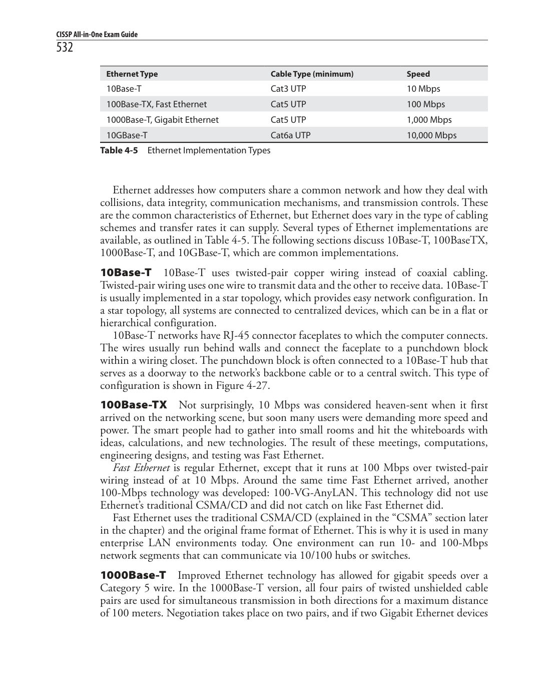
10Base-TCat3 UTP10 Mbps
Ethernet addresses how computers share a common network and how they deal with collisions, data integrity, communication mechanisms, and transmission controls. These are the common characteristics of Ethernet, but Ethernet does vary in the type of cabling schemes and transfer rates it can supply. Several types of Ethernet implementations are available, as outlined in Table 4-5. The following sections discuss 10Base-T, 100BaseTX, 1000Base-T, and 10GBase-T, which are common implementations.
10Base-T10Base-T uses twisted-pair copper wiring instead of coaxial cabling. Twisted-pair wiring uses one wire to transmit data and the other to receive data. 10Base-T is usually implemented in a star topology, which provides easy network configuration. In a star topology, all systems are connected to centralized devices, which can be in a flat or hierarchical configuration. 10Base-T networks have RJ-45 connector faceplates to which the computer connects. The wires usually run behind walls and connect the faceplate to a punchdown block within a wiring closet. The punchdown block is often connected to a 10Base-T hub that serves as a doorway to the network’s backbone cable or to a central switch. This type of configuration is shown in Figure 4-27.
100Base-TXNot surprisingly, 10 Mbps was considered heaven-sent when it first arrived on the networking scene, but soon many users were demanding more speed and power. The smart people had to gather into small rooms and hit the whiteboards with ideas, calculations, and new technologies. The result of these meetings, computations, engineering designs, and testing was Fast Ethernet. Fast Ethernetis regular Ethernet, except that it runs at 100 Mbps over twisted-pair wiring instead of at 10 Mbps. Around the same time Fast Ethernet arrived, another 100-Mbps technology was developed: 100-VG-AnyLAN. This technology did not use Ethernet’s traditional CSMA/CD and did not catch on like Fast Ethernet did. Fast Ethernet uses the traditional CSMA/CD (explained in the “CSMA” section later in the chapter) and the original frame format of Ethernet. This is why it is used in many enterprise LAN environments today. One environment can run 10- and 100-Mbps network segments that can communicate via 10/100 hubs or switches.
1000Base-TImproved Ethernet technology has allowed for gigabit speeds over a Category 5 wire. In the 1000Base-T version, all four pairs of twisted unshielded cable pairs are used for simultaneous transmission in both directions for a maximum distance of 100 meters. Negotiation takes place on two pairs, and if two Gigabit Ethernet devices
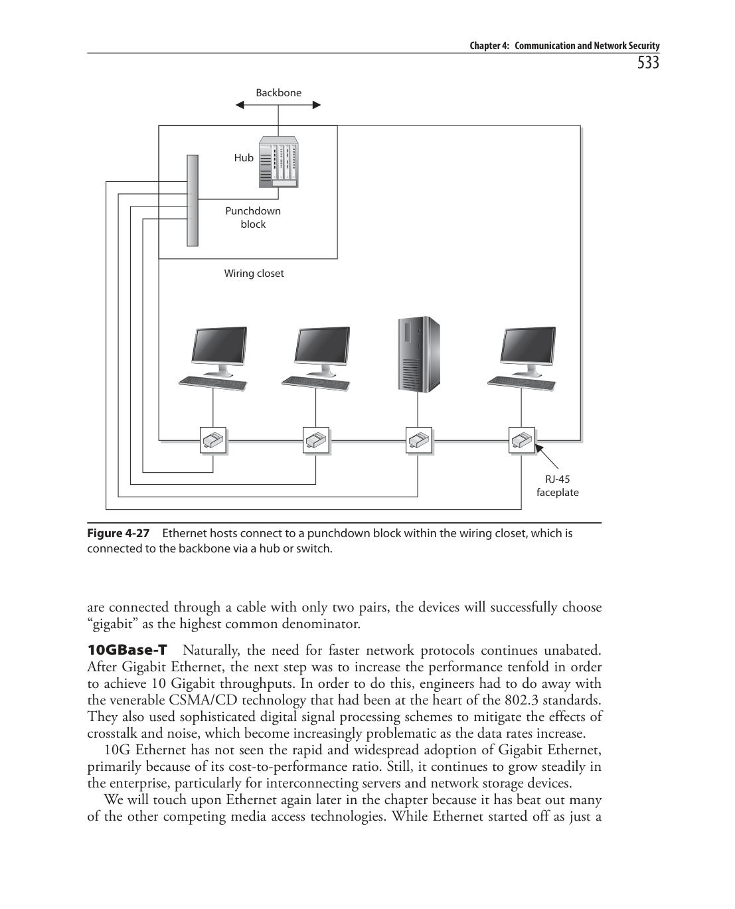
Figure 4-27Ethernet hosts connect to a punchdown block within the wiring closet, which is
are connected through a cable with only two pairs, the devices will successfully choose “gigabit” as the highest common denominator.
10GBase-TNaturally, the need for faster network protocols continues unabated. After Gigabit Ethernet, the next step was to increase the performance tenfold in order to achieve 10 Gigabit throughputs. In order to do this, engineers had to do away with the venerable CSMA/CD technology that had been at the heart of the 802.3 standards. They also used sophisticated digital signal processing schemes to mitigate the effects of crosstalk and noise, which become increasingly problematic as the data rates increase. 10G Ethernet has not seen the rapid and widespread adoption of Gigabit Ethernet, primarily because of its cost-to-performance ratio. Still, it continues to grow steadily in the enterprise, particularly for interconnecting servers and network storage devices. We will touch upon Ethernet again later in the chapter because it has beat out many of the other competing media access technologies. While Ethernet started off as just a
LAN technology, it has evolved and is commonly used in metropolitan area networks (MANs) also.
Token Ring
Like Ethernet,Token Ringis a LAN media access technology that enables the communication and sharing of networking resources. The Token Ring technology was originally developed by IBM and then defined by the IEEE 802.5 standard. At first, Token Ring technology had the ability to transmit data at 4 Mbps. Later, it was improved to transmit at 16 Mbps. It uses a token-passing technology with a star-configured topology. Thering part of the name pertains to how the signals travel, which is in a logical ring. Each computer is connected to a central hub, called aMultistation Access Unit (MAU). Physically, the topology can be a star, but the signals and transmissions are passed in a logical ring. Atoken-passing technologyis one in which a device cannot put data on the network wire without having possession of atoken, a control frame that travels in a logical circle and is “picked up” when a system needs to communicate. This is different from Ethernet, in which all the devices attempt to communicate at the same time. This is why Ethernet is referred to as a “chatty protocol” and has collisions. Token Ring does not endure collisions, since only one system can communicate at a time, but this also means communication takes place more slowly compared to Ethernet. Token Ring employs a couple of mechanisms to deal with problems that can occur on this type of network. Theactive monitormechanism removes frames that are continuously circulating on the network. This can occur if a computer locks up or is taken offline for one reason or another and cannot properly receive a token destined for it. With the beaconingmechanism, if a computer detects a problem with the network, it sends a beacon frame. This frame generates a failure domain, which is between the computer that issued the beacon and its neighbor downstream. The computers and devices within this failure domain will attempt to reconfigure certain settings to try to work around the detected fault. Figure 4-28 depicts a Token Ring network in a physical star configuration. Token Ring networks were popular in the 1980s and 1990s, and although some are still around, Ethernet has become much more popular and has taken over the LAN networking market.
FDDI
Fiber Distributed Data Interface (FDDI)technology, developed by the American National Standards Institute (ANSI), is a high-speed, token-passing, media access technology. FDDI has a data transmission speed of up to 100 Mbps and is usually used as a backbone network using fiber-optic cabling. FDDI also provides fault tolerance by offering a second counter-rotating fiber ring. The primary ring has data traveling clockwise and is used for regular data transmission. The second ring transmits data in a counterclockwise fashion and is invoked only if the primary ring goes down. Sensors watch the primary ring and, if it goes down, invoke a ringwrapso the data will be diverted to the second ring. Each node on the FDDI network has relays that are connected to both rings, so if a break in the ring occurs, the two rings can be joined. When FDDI is used as a backbone network, it usually connects several different networks, as shown in Figure 4-29.
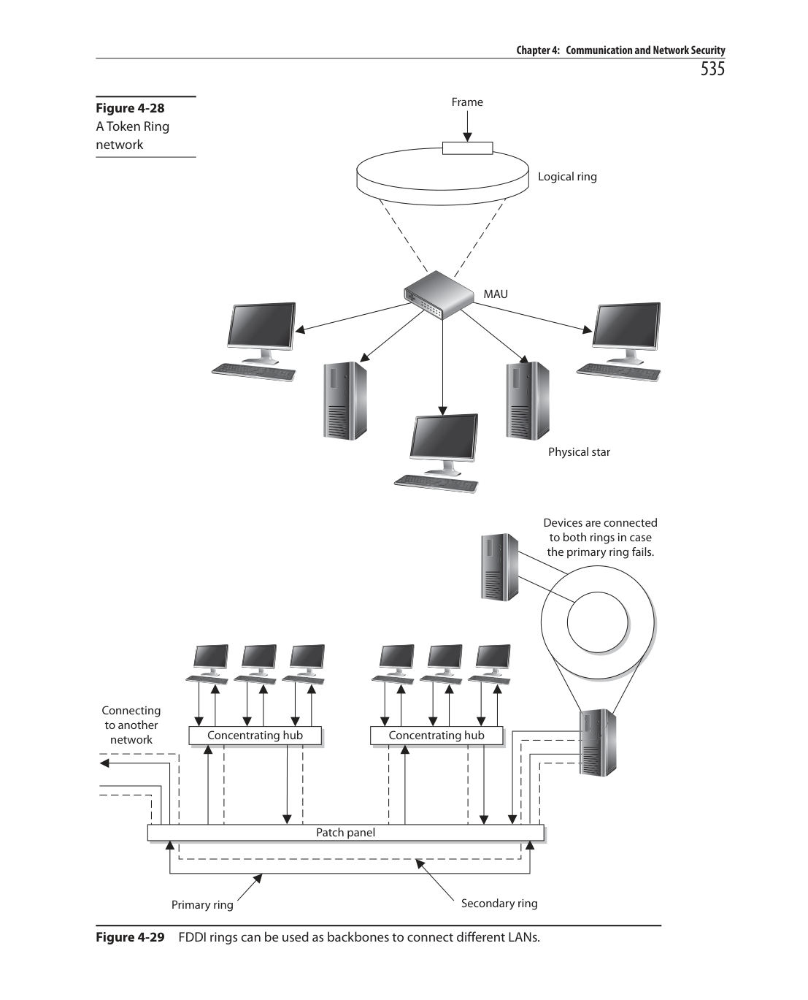
Figure 4-28
Before Fast Ethernet and Gigabit Ethernet hit the market, FDDI was used mainly as campus and service provider backbones. Because FDDI can be employed for distances up to 100 kilometers, it was often used in MANs. The benefit of FDDI is that it can work over long distances and at high speeds with minimal interference. It enables several tokens to be present on the ring at the same time, causing more communication to take place simultaneously, and it provides predictable delays that help connected networks and devices know what to expect and when.
FDDI-2 provides fixed bandwidth that can be allocated for specific applications. This makes it work more like a broadband connection with QoS capabilities, which allows for voice, video, and data to travel over the same lines. A version of FDDI,Copper Distributed Data Interface (CDDI), can work over UTP cabling. Whereas FDDI would be used more as a MAN, CDDI can be used within a LAN environment to connect network segments. Devices that connect to FDDI rings fall into one of the following categories: Single-attachment station (SAS)Attaches to only one ring (the primary)
- through a concentrator
Dual-attachment station (DAS)Has two ports and each port provides a
- connection for both the primary and the secondary rings
Single-attached concentrator (SAC)Concentrator that connects an SAS
- device to the primary ring
Dual-attached concentrator (DAC)Concentrator that connects DAS, SAS,
- and SAC devices to both rings
The different FDDI device types are illustrated in Figure 4-30.
Ring topologies are considered deterministic, meaning that the rate of the traffic flow can be predicted. Since traffic can only flow if a token is in place, the maximum time that a node will have to wait to receive traffic can be determined. This can be beneficial for time-sensitive applications. Table 4-6 sums up the important characteristics of the technologies described in the preceding sections.
Transmission Methods
A packet may need to be sent to only one workstation, to a set of workstations, or to all workstations on a particular subnet. If a packet needs to go from the source computer to one particular system, aunicasttransmission method is used. If the packet needs to go to a specific group of systems, the sending system uses themulticastmethod. If a system wants all computers on its subnet to receive a message, it will use thebroadcastmethod.
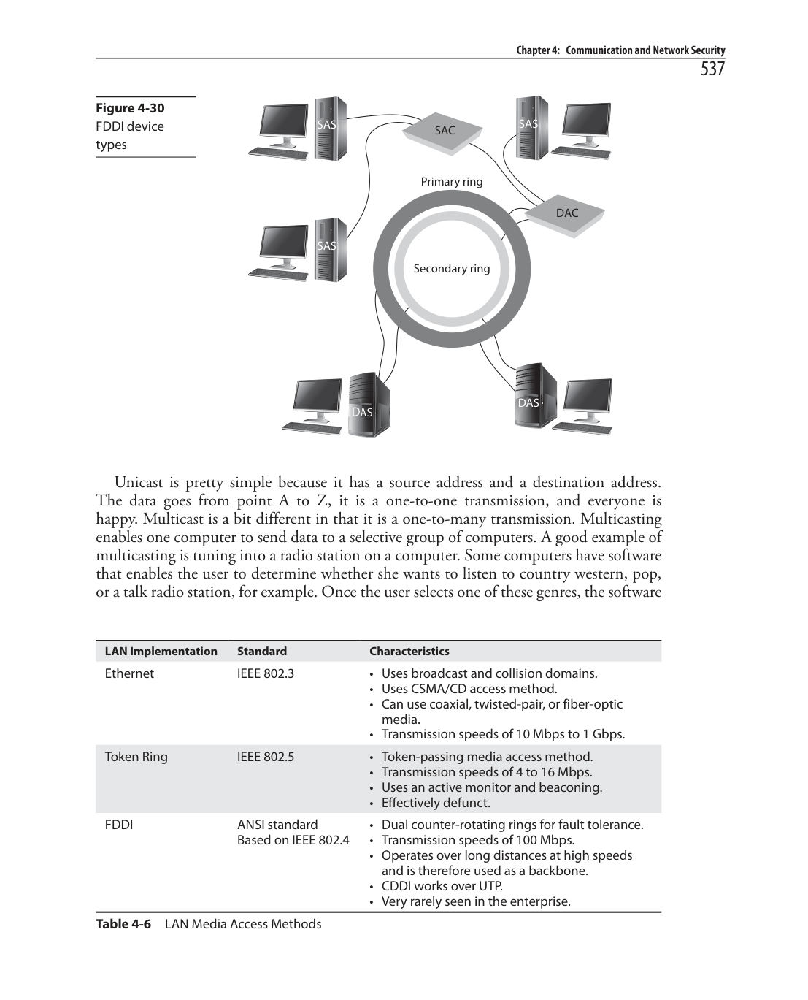
Figure 4-30
Unicast is pretty simple because it has a source address and a destination address. The data goes from point A to Z, it is a one-to-one transmission, and everyone is happy. Multicast is a bit different in that it is a one-to-many transmission. Multicasting enables one computer to send data to a selective group of computers. A good example of multicasting is tuning into a radio station on a computer. Some computers have software that enables the user to determine whether she wants to listen to country western, pop, or a talk radio station, for example. Once the user selects one of these genres, the software
must tell the NIC driver to pick up not only packets addressed to its specific MAC address, but also packets that contain a specific multicast address. The difference between broadcast and multicast is that in a broadcast one-to-all transmission, everyone gets the data, whereas in a multicast, only certain nodes receive the data. So how does a server three states away multicast to one particular computer on a specific network and no other networks in between? Suppose a user tunes in to her favorite Internet radio station. An application running on her computer (say, a web browser) has to tell her local router she wants to get frames with this particular multicast address passed her way. The local router must tell the router upstream, and this process continues so each router between the source and destination knows where to pass this multicast data. This ensures that the user can get her rock music without other networks being bothered with this extra data. IPv4 multicast protocols use a Class D address (224.0.0.0 to 239.255.255.255), which is a special address space reserved for multicasting. IPv6 multicast addresses start with eight 1’s (that is, 1111 1111). Multicasting can be used to send out information; multimedia data; and even real-time video, music, and voice clips. Internet Group Management Protocol (IGMP)is used to report multicast group memberships to routers. When a user chooses to accept multicast traffic, she becomes a member of a particular multicast group. IGMP is the mechanism that allows her computer to inform the local routers that she is part of this group and to send traffic with a specific multicast address to her system. IGMP can be used for online streaming video and gaming activities. The protocol allows for efficient use of the necessary resources when supporting these types of applications. Like most protocols, IGMP has gone through a few different versions, each improving upon the earlier one. In version 1, multicast agents periodically send queries to systems on the network they are responsible for and update their databases, indicating which system belongs to which group membership. Version 2 provides more granular query types and allows a system to signal to the agent when it wants to leave a group. Version 3 allows the systems to specify the sources it wants to receive multicast traffic from.
The previous statements are true pertaining to IPv4. IPv6 is more than just an upgrade to the original IP protocol; it functions differently in many respects, including how it handles multicasting, which has caused many interoperability issues and delay in its full deployment.
Network Protocols and Services
Some protocols, such as UDP, TCP, IP, and IGMP, were addressed in earlier sections. Networks are made up of these and many other types of protocols that provide an array of functionality. Networks are also made up of many different services, as in DHCP, DNS, e-mail, and others. The services that network infrastructure components provide directly support the functionality required of the users of the network. Protocols usually provide a communication channel for these services to use so that they can carry out their jobs. Networks are complex because there are layers of protocols and services that all work together simultaneously and, hopefully, seamlessly. We will cover some of the core protocols and services that are used in all networks today.
Address Resolution Protocol
On a TCP/IP network, each computer and network device requires a unique IP address and a unique physical hardware address. Each NIC has a unique physical address that isprogrammed by the manufacturer into the ROM chips on the card. The physical address is also referred to as theMedia Access Control (MAC)address. The network layer works with and understands IP addresses, and the data link layer works with and understands physical MAC addresses. So, how do these two types of addresses work together while operating at different layers?
A MAC address is unique because the first 24 bits represent the manufacturer code and the last 24 bits represent the unique serial number assigned by the manufacturer.
When data comes from the application layer, it goes to the transport layer for sequence numbers, session establishment, and streaming. The data is then passed to the network layer, where routing information is added to each packet and the source and destination IP addresses are attached to the data bundle. Then this goes to the data link layer, which must find the MAC address and add it to the header portion of the frame. When a frame hits the wire, it only knows what MAC address it is heading toward. At this lower layer of the OSI model, the mechanisms do not even understand IP addresses. So if a computer cannot resolve the IP address passed down from the network layer to the corresponding MAC address, it cannot communicate with that destination computer.
Aframeis data that is fully encapsulated, with all of the necessary headers and trailers.
MAC and IP addresses must be properly mapped so they can be correctly resolved. This happens through theAddress Resolution Protocol (ARP). When the data link layer receives a frame, the network layer has already attached the destination IP address to it, but the data link layer cannot understand the IP address and thus invokes ARP for help. ARP broadcasts a frame requesting the MAC address that corresponds with the destination IP address. Each computer on the broadcast domain receives this frame, and all but the computer that has the requested IP address ignore it. The computer that has the destination IP address responds with its MAC address. Now ARP knows what hardware address corresponds with that specific IP address. The data link layer takes the frame, adds the hardware address to it, and passes it on to the physical layer, which enables the frame to hit the wire and go to the destination computer. ARP maps the hardware address and associated IP address and stores this mapping in its table for a predefined amount of time. This caching is done so that when another frame destined for the same IP address needs to hit the wire, ARP does not need to broadcast its request again. It just looks in its table for this information.
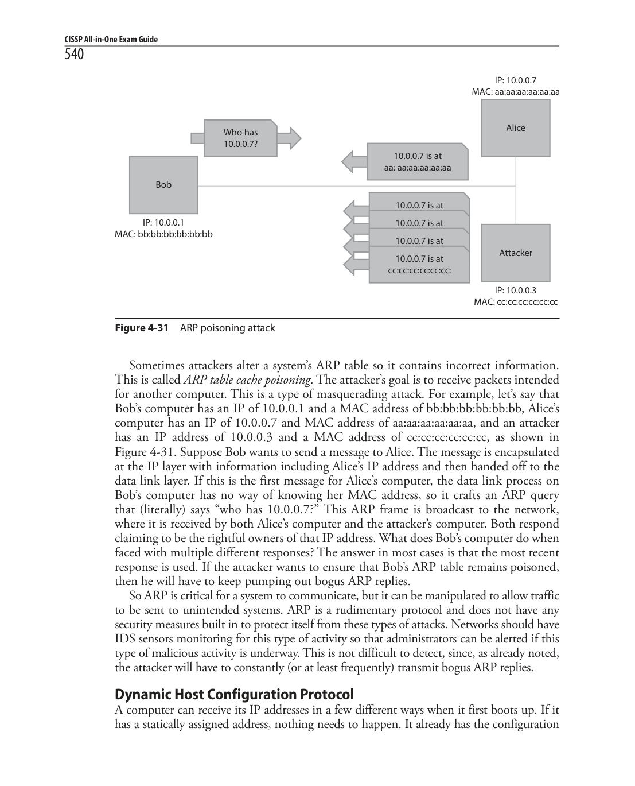
Figure 4-31ARP poisoning attack
Sometimes attackers alter a system’s ARP table so it contains incorrect information. This is calledARP table cache poisoning. The attacker’s goal is to receive packets intended for another computer. This is a type of masquerading attack. For example, let’s say that Bob’s computer has an IP of 10.0.0.1 and a MAC address of bb:bb:bb:bb:bb:bb, Alice’s computer has an IP of 10.0.0.7 and MAC address of aa:aa:aa:aa:aa:aa, and an attacker has an IP address of 10.0.0.3 and a MAC address of cc:cc:cc:cc:cc:cc, as shown in Figure 4-31. Suppose Bob wants to send a message to Alice. The message is encapsulated at the IP layer with information including Alice’s IP address and then handed off to the data link layer. If this is the first message for Alice’s computer, the data link process on Bob’s computer has no way of knowing her MAC address, so it crafts an ARP query that (literally) says “who has 10.0.0.7?” This ARP frame is broadcast to the network, where it is received by both Alice’s computer and the attacker’s computer. Both respond claiming to be the rightful owners of that IP address. What does Bob’s computer do when faced with multiple different responses? The answer in most cases is that the most recent response is used. If the attacker wants to ensure that Bob’s ARP table remains poisoned, then he will have to keep pumping out bogus ARP replies. So ARP is critical for a system to communicate, but it can be manipulated to allow traffic to be sent to unintended systems. ARP is a rudimentary protocol and does not have any security measures built in to protect itself from these types of attacks. Networks should have IDS sensors monitoring for this type of activity so that administrators can be alerted if this type of malicious activity is underway. This is not difficult to detect, since, as already noted, the attacker will have to constantly (or at least frequently) transmit bogus ARP replies.
Dynamic Host Configuration Protocol
A computer can receive its IP addresses in a few different ways when it first boots up. If it has a statically assigned address, nothing needs to happen. It already has the configuration
settings it needs to communicate and work on the intended network. If a computer depends upon a DHCP server to assign it the correct IP address, it boots up and makes a request to the DHCP server. The DHCP server assigns the IP address, and everyone is happy. DHCP is a UDP-based protocol that allows servers to assign IP addresses to network clients in real time. Unlike static IP addresses, where IP addresses are manually configured, the DHCP server automatically checks for available IP addresses and correspondingly assigns an IP address to the client. This eliminates the possibility of IP address conflicts that occur if two systems are assigned identical IP addresses, which could cause loss of service. On the whole, DHCP considerably reduces the effort involved in managing large-scale IP networks. The DHCP server assigns IP addresses in real time from a specified range when a client connects to the network; this is different from static addresses, where each system is individually assigned a specific IP address when coming online. In a standard DHCP- based network, the client computer broadcasts a DHCPDISCOVER message on the network in search of the DHCP server. Once the respective DHCP server receives the DHCPDISCOVER request, the server responds with a DHCPOFFER packet, offering the client an IP address. The server assigns the IP address based on the subject of the availability of that IP address and in compliance with its network administration policies. The DHCPOFFER packet that the server responds with contains the assigned IP address information and configuration settings for client-side services. Once the client receives the settings sent by the server through the DHCPOFFER, it responds to the server with a DHCPREQUEST packet confirming its acceptance of the allotted settings. The server now acknowledges with a DHCPACK packet, which includes the validity period (lease) for the allocated parameters.
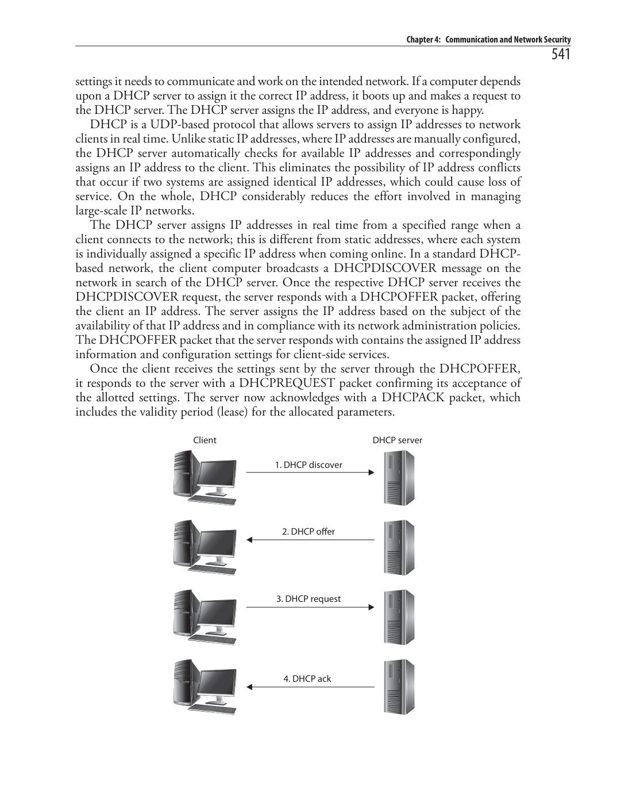
Diagram (p. 575)
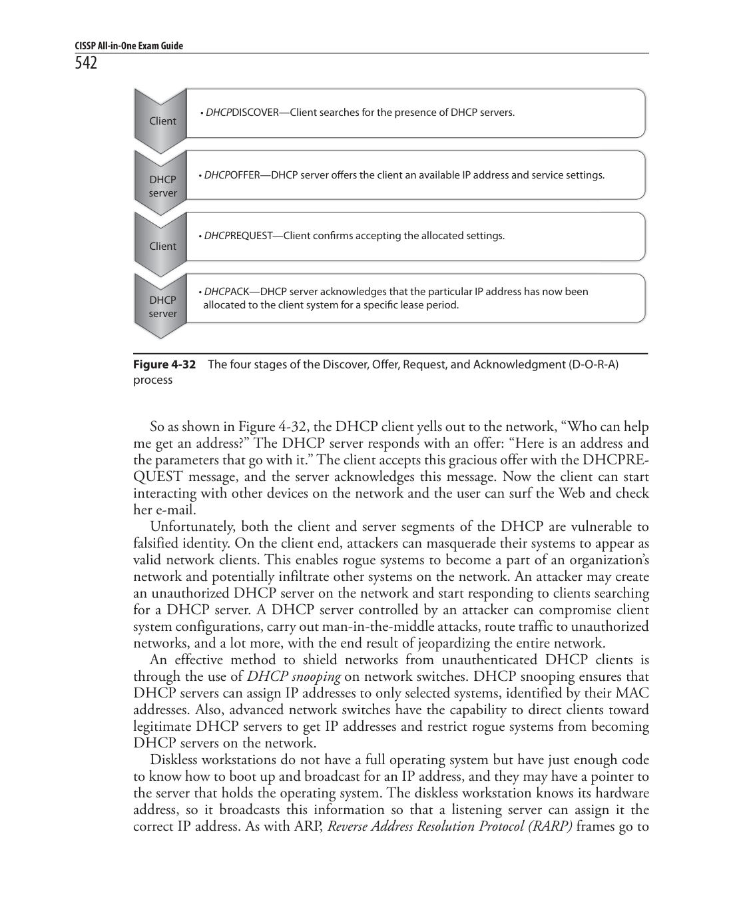
Figure 4-32The four stages of the Discover, Offer, Request, and Acknowledgment (D-O-R-A)
So as shown in Figure 4-32, the DHCP client yells out to the network, “Who can help me get an address?” The DHCP server responds with an offer: “Here is an address and the parameters that go with it.” The client accepts this gracious offer with the DHCPRE- QUEST message, and the server acknowledges this message. Now the client can start interacting with other devices on the network and the user can surf the Web and check her e-mail. Unfortunately, both the client and server segments of the DHCP are vulnerable to falsified identity. On the client end, attackers can masquerade their systems to appear as valid network clients. This enables rogue systems to become a part of an organization’s network and potentially infiltrate other systems on the network. An attacker may create an unauthorized DHCP server on the network and start responding to clients searching for a DHCP server. A DHCP server controlled by an attacker can compromise client system configurations, carry out man-in-the-middle attacks, route traffic to unauthorized networks, and a lot more, with the end result of jeopardizing the entire network. An effective method to shield networks from unauthenticated DHCP clients is through the use ofDHCP snoopingon network switches. DHCP snooping ensures that DHCP servers can assign IP addresses to only selected systems, identified by their MAC addresses. Also, advanced network switches have the capability to direct clients toward legitimate DHCP servers to get IP addresses and restrict rogue systems from becoming DHCP servers on the network. Diskless workstations do not have a full operating system but have just enough code to know how to boot up and broadcast for an IP address, and they may have a pointer to the server that holds the operating system. The diskless workstation knows its hardware address, so it broadcasts this information so that a listening server can assign it the correct IP address. As with ARP,Reverse Address Resolution Protocol (RARP)frames go to
all systems on the subnet, but only the RARP server responds. Once the RARP server receives this request, it looks in its table to see which IP address matches the broadcast hardware address. The server then sends a message that contains its IP address back to the requesting computer. The system now has an IP address and can function on the network. TheBootstrap Protocol (BOOTP)was created after RARP to enhance the functionality that RARP provides for diskless workstations. The diskless workstation can receive its IP address, the name server address for future name resolutions, and the default gateway address from the BOOTP server. BOOTP usually provides more functionality to diskless workstations than does RARP.
Internet Control Message Protocol
TheInternet Control Message Protocol (ICMP)is basically IP’s “messenger boy.” ICMP delivers status messages, reports errors, replies to certain requests, and reports routing information and is used to test connectivity and troubleshoot problems on IP networks. The most commonly understood use of ICMP is through the use of thepingutility. When a person wants to test connectivity to another system, he may ping it, which sends out ICMP Echo Request frames. The replies on his screen that are returned to the ping utility are called ICMP Echo Reply frames and are responding to the Echo Request frames. If a reply is not returned within a predefined time period, the ping utility sends more Echo Request frames. If there is still no reply, ping indicates the host is unreachable. ICMP also indicates when problems occur with a specific route on the network and tells surrounding routers about better routes to take based on the health and congestion of the various pathways. Routers use ICMP to send messages in response to packets that could not be delivered. The router selects the proper ICMP response and sends it back to the requesting host, indicating that problems were encountered with the transmission request. ICMP is used by other connectionless protocols, not just IP, because connectionless protocols do not have any way of detecting and reacting to transmission errors, as do connection-oriented protocols. In these instances, the connectionless protocol may use ICMP to send error messages back to the sending system to indicate networking problems. As you can see in Table 4-7, ICMP is used for many different networking purposes. This table lists the various messages that can be sent to systems and devices through ICMP.
Attacks Using ICMPICMP was developed to send status messages, not to hold or transmit user data. But someone figured out how to insert some data inside of an ICMP packet, which can be used to communicate to an already compromised system. This technique is calledICMP tunneling, and is an older, but still effective, client/server approach that can be used by hackers to set up and maintain covert communication channels to compromised systems. The attacker would target a computer and install the server portion of the tunneling software. This server portion would “listen” on a port, which is the back door an attacker can use to access the system. To gain access and open a remote shell to this computer, an attacker would send commands inside of ICMP
0Echo Reply
packets. Thisis usually successful because many routers and firewalls are configured to allow ICMP traffic to come and go out of the network, based on the assumption that this is safe because ICMP was developed to not hold any data or a payload. Just as any tool that can be used for good can also be used for evil, attackers commonly use ICMP to redirect traffic. The redirected traffic can go to the attacker’s dedicated system, or it can go into a “black hole.” Routers use ICMP messages to update each other on network link status. An attacker could send a bogus ICMP message with incorrect information, which could cause the routers to divert network traffic to where the attacker indicates it should go. ICMP is also used as the core protocol for a network tool called Traceroute. Traceroute is used to diagnose network connections, but since it gathers a lot of important network statistics, attackers use the tool to map out a victim’s network. This is similar to a burglar “casing the joint,” meaning that the more the attacker learns about the environment, the easier it can be for her to exploit some critical targets. So while the Traceroute tool is a valid networking program, a security administrator might configure the IDS sensors to monitor for extensive use of this tool because it could indicate that an attacker is attempting to map out the network’s architecture. The countermeasures to these types of attacks are to use firewall rules that only allow the necessary ICMP packets into the network and the use of IDS or IPS to watch for suspicious activities. Host-based protection (host firewalls and host IDS) can also be installed and configured to identify this type of suspicious behavior.
Simple Network Management Protocol
Simple Network Management Protocol (SNMP)was released to the networking world in 1988 to help with the growing demand of managing network IP devices. Companies use many types of products that use SNMP to view the status of their network, traffic flows, and the hosts within the network. Since these tasks are commonly carried out using graphical user interface (GUI)–based applications, many people do not have a full understanding of how the protocol actually works. The protocol is important to understand because it can provide a wealth of information to attackers, and you should understand the amount of information that is available to the ones who wish to do you harm, how they actually access this data, and what can be done with it. The two main components within SNMP are managers and agents. The manager is the server portion, which polls different devices to check status information. The server component also receives trap messages from agents and provides a centralized place to hold all network-wide information. The agent is a piece of software that runs on a network device, which is commonly integrated into the operating system. The agent has a list of objects that it is to keep track of, which is held in a database-like structure called theManagement Information Base (MIB). An MIB is a logical grouping of managed objects that contain data used for specific management tasks and status checks. When the SNMP manager component polls the individual agent installed on a specific device, the agent pulls the data it has collected from the MIB and sends it to the manager. Figure 4-33 illustrates how data pulled from different devices is located in one
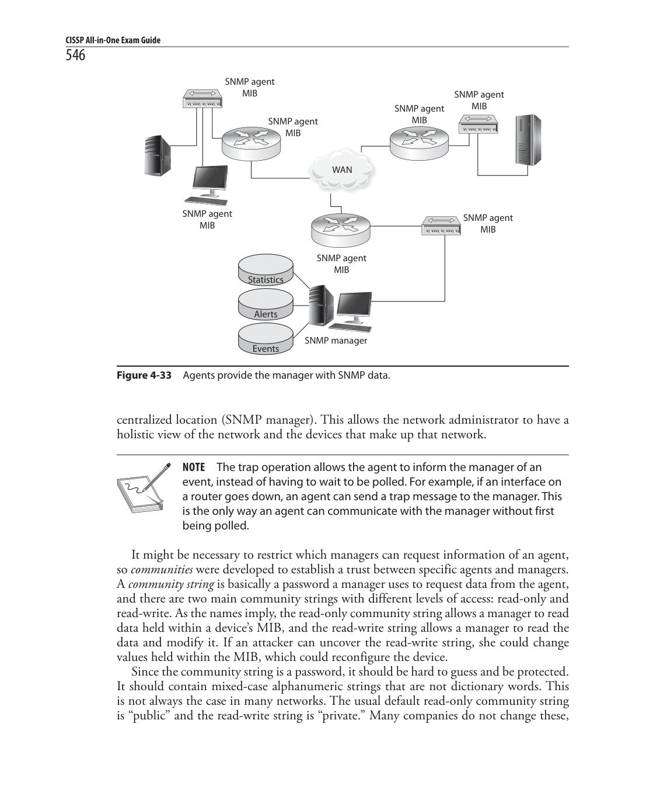
Figure 4-33Agents provide the manager with SNMP data.
centralized location (SNMP manager). This allows the network administrator to have a holistic view of the network and the devices that make up that network.
The trap operation allows the agent to inform the manager of an event, instead of having to wait to be polled. For example, if an interface on a router goes down, an agent can send a trap message to the manager. This is the only way an agent can communicate with the manager without first being polled. It might be necessary to restrict which managers can request information of an agent, socommunitieswere developed to establish a trust between specific agents and managers. Acommunity stringis basically a password a manager uses to request data from the agent, and there are two main community strings with different levels of access: read-only and read-write. As the names imply, the read-only community string allows a manager to read data held within a device’s MIB, and the read-write string allows a manager to read the data and modify it. If an attacker can uncover the read-write string, she could change values held within the MIB, which could reconfigure the device. Since the community string is a password, it should be hard to guess and be protected. It should contain mixed-case alphanumeric strings that are not dictionary words. This is not always the case in many networks. The usual default read-only community string is “public” and the read-write string is “private.” Many companies do not change these,
so anyone who can connect to port 161 can read the status information of a device and potentially reconfigure it. Different vendors may put in their own default community string values, but companies may still not take the necessary steps to change them. Attackers usually have lists of default vendor community string values, so they can be easily discovered and used against networks. To make matters worse, the community strings are sent in cleartext in SNMP v1 and v2, so even if a company does the right thing by changing the default values, they are still easily accessible to any attacker with a sniffer. For the best protection, community strings should be changed often, and different network segments should use different community strings, so that if one string is compromised an attacker cannot gain access to all the devices in the network. The SNMP ports (161 and 162) should not be open to untrusted networks, like the Internet, and if needed they should be filtered to ensure only authorized individuals can connect to them. If these ports need to be available to an untrusted network, configure the router or firewall to only allow UDP traffic to come and go from preapproved network-management stations. While versions 1 and 2 of this protocol send the community string values in cleartext, version 3 has cryptographic functionality, which provides encryption, message integrity, and authentication security. So, SNMP v3 should be implemented for more granular protection. If the proper countermeasures are not put into place, then an attacker can gain access to a wealth of device-oriented data that can be used in her follow-up attacks. The following are just some data sets held within MIB SNMP objects that attackers would be interested in:
Gathering this type of data allows an attacker to map out the target network and enumerate the nodes that make up the network. As with all tools, SNMP is used for good purposes (network management) and for bad purposes (target mapping, device reconfiguration). We need to understand both sides of all tools available to us.
Domain Name Service
Imagine how hard it would be to use the Internet if we had to remember actual specific IP addresses to get to various websites. TheDomain Name Service (DNS)is a method of resolving hostnames to IP addresses so names can be used instead of IP addresses within networked environments.
DNS provides hostname-to-IP address translation similarly to how the yellow pages provide a person’s name to their corresponding phone number. We remember people and company names better than phone numbers or IP addresses. The first iteration of the Internet was made up of about 100 computers (versus over 3 billion now), and a list was kept that mapped every system’s hostname to their IP address. This list was kept on an FTP server so everyone could access it. It did not take long for the task of maintaining this list to become overwhelming, and the computing community looked to automate it. When a user types a uniform resource locator (URL) into his web browser, the URL is made up of words or letters that are in a sequence that makes sense to that user, such as www.google.com. However, these words are only for humans—computers work with IP addresses. So after the user enters this URL and pressesenter, behind the scenes his computer is actually being directed to a DNS server that will resolve this URL, or hostname, into an IP address that the computer understands. Once the hostname has been resolved into an IP address, the computer knows how to get to the web server holding the requested web page. Many companies have their own DNS servers to resolve their internal hostnames. These companies usually also use the DNS servers at their Internet service providers (ISPs) to resolve hostnames on the Internet. An internal DNS server can be used to resolve hostnames on the entire LAN, but usually more than one DNS server is used so the load can be split up and so redundancy and fault tolerance are in place. Within DNS servers, DNS namespaces are split up administratively intozones. One zone may contain all hostnames for the marketing and accounting departments, and another zone may contain hostnames for the administration, research, and legal departments. The DNS server that holds the files for one of these zones is said to be theauthoritativename server for that particular zone. A zone may contain one or more domains, and the DNS server holding those host records is the authoritative name server for those domains. The DNS server contains records that map hostnames to IP addresses, which are referred to asresource records. When a user’s computer needs to resolve a hostname to an IP address, it looks to its networking settings to find its DNS server. The computer then sends a request, containing the hostname, to the DNS server for resolution. The DNS server looks at its resource records and finds the record with this particular hostname, retrieves the address, and replies to the computer with the corresponding IP address. It is recommended that a primary and a secondary DNS server cover each zone. The primary DNS server contains the actual resource records for a zone, and the secondary DNS server contains copies of those records. Users can use the secondary DNS server to resolve names, which takes a load off of the primary server. If the primary server goes down for any reason or is taken offline, users can still use the secondary server for name resolution. Having both a primary DNS server and a secondary DNS server provides fault tolerance and redundancy to ensure users can continue to work if something happens to one of these servers.
The primary and secondary DNS servers synchronize their information through a zone transfer. After changes take place to the primary DNS server, those changes must be replicated to the secondary DNS server. It is important to configure the DNS server to allow zone transfers to take place only between the specific servers. For years now, attackers have been carrying out unauthorized zone transfers to gather very useful network information from victims’ DNS servers. An unauthorized zone transfer provides the attacker with information on almost every system within the network. The attacker now knows the hostname and IP address of each system, system alias names, PKI server, DHCP server, DNS servers, etc. This allows an attacker to carry out very targeted attacks on specific systems. If you were the attacker and you had a new exploit for DHCP software, now you would know the IP address of the company’s DHCP server and could send your attack parameters directly to that system. Also, since the zone transfer can provide data on all of the systems in the network, the attacker can map out the network. He knows what subnets are being used, which systems are in each subnet, and where the critical network systems reside. This is analogous to you allowing a burglar into your house with the freedom of identifying where you keep your jewels, expensive stereo equipment, piggy bank, and keys to your car, which will allow him to more easily steal these items when you are on vacation. Unauthorized zone transfers can take place if the DNS servers are not properly configured to restrict this type of activity.
Internet DNS and Domains
Networks on the Internet are connected in a hierarchical structure, as are the different DNS servers, as shown in Figure 4-34. While performing routing tasks, if a router does not know the necessary path to the requested destination, that router passes the packet up to a router above it. The router above it knows about all the routers below it. This router has a broader view of the routing that takes place on the Internet and has a better chance of getting the packet to the correct destination. This holds true with DNS servers also. If one DNS server does not know which DNS server holds the necessary resource record to resolve a hostname, it can pass the request up to a DNS server above it. The naming scheme of the Internet resembles an inverted tree with the root servers at the top. Lower branches of this tree are divided into top-level domains, with second-level domains under each. The most common top-level domains are as follows:
COMCommercial
- EDUEducation
- MILU.S. military organization
- INTInternational treaty organization
- GOVGovernment
- ORGOrganizational
- NETNetworks
- So how do all of these DNS servers play together in the Internet playground? When a user types in a URL to access a website that sells computer books, for example, his
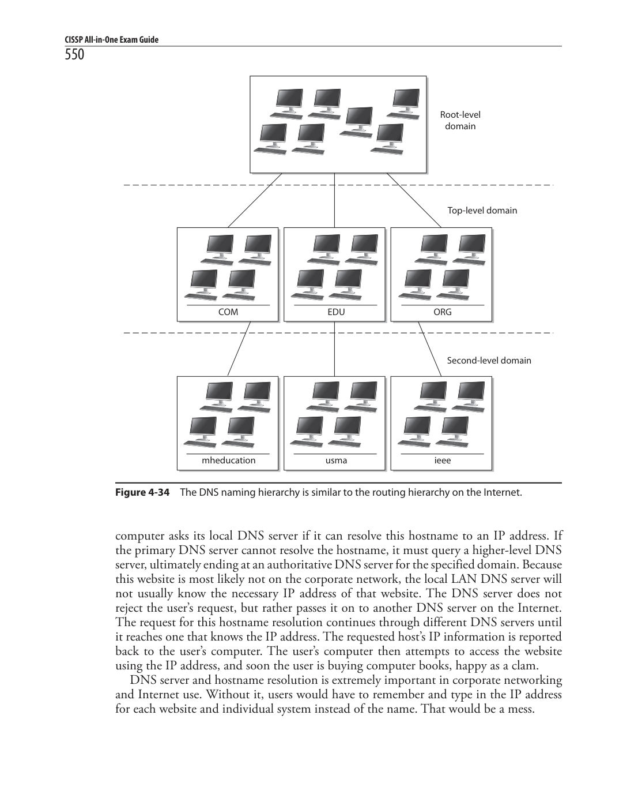
Figure 4-34The DNS naming hierarchy is similar to the routing hierarchy on the Internet.
computer asks its local DNS server if it can resolve this hostname to an IP address. If the primary DNS server cannot resolve the hostname, it must query a higher-level DNS server, ultimately ending at an authoritative DNS server for the specified domain. Because this website is most likely not on the corporate network, the local LAN DNS server will not usually know the necessary IP address of that website. The DNS server does not reject the user’s request, but rather passes it on to another DNS server on the Internet. The request for this hostname resolution continues through different DNS servers until it reaches one that knows the IP address. The requested host’s IP information is reported back to the user’s computer. The user’s computer then attempts to access the website using the IP address, and soon the user is buying computer books, happy as a clam. DNS server and hostname resolution is extremely important in corporate networking and Internet use. Without it, users would have to remember and type in the IP address for each website and individual system instead of the name. That would be a mess.
DNS Resolution Components
Your computer has aDNS resolver, which is responsible for sending out requests to DNS servers for host IP address information. If your system did not have this resolver, when you type in www.google.com in your browser, you would not get to this website because your system does not actually know what www.google.com means. When you type in this URL, your system’s resolver has the IP address of a DNS server it is supposed to send its hostname-to-IP address request to. Your resolver can send out a nonrecursive query or a recursive query to the DNS server. Anonrecursive querymeans that the request just goes to that specified DNS server and either the answer is returned to the resolver or an error is returned. Arecursive querymeans that the request can be passed on from one DNS server to another one until the DNS server with the correct information is identified. In the following illustration, you can follow the succession of requests that commonly takes place. Your system’s resolver first checks to see if it already has the necessary hostname-to- IP address mapping cached or if it is in a local HOSTS file. If the necessary information is not found, the resolver sends the request to the local DNS server. If the local DNS server does not have the information, it sends the request to a different DNS server.
(Continued)
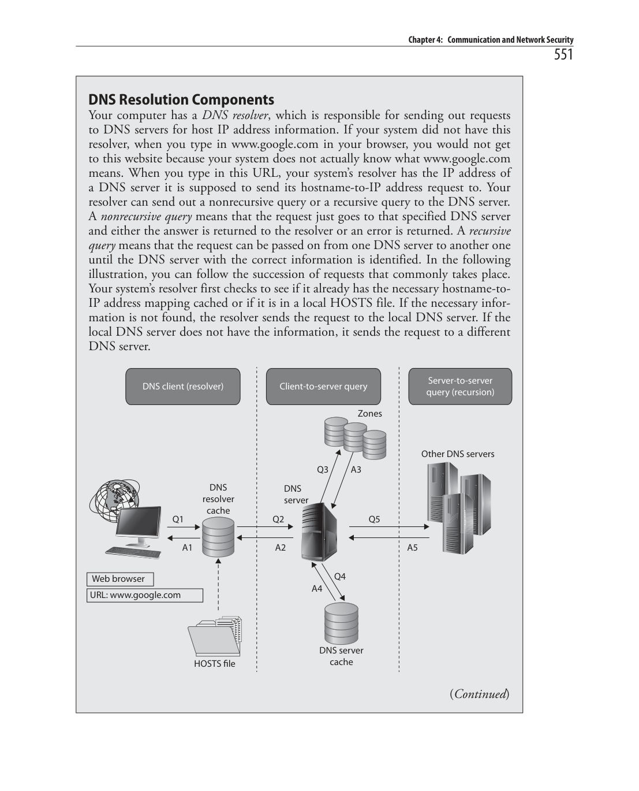
Diagram (p. 585)
The HOSTS file resides on the local computer and can contain static hostnameto-IP address mapping information. If you do not want your system to query a DNS server, you can add the necessary data in the HOSTS file, and your system will check its contents before reaching out to a DNS server. HOSTS files are like two-edged swords: on the one hand they offer a degree of security by ensuring that certain hosts resolve to specific IP addresses, but on the other hand they are attractive targets for attackers who want to redirect your traffic to specific hosts. They key, as always, is to carefully analyze and mitigate the risks.
DNS Threats
As stated earlier, not every DNS server knows the IP address of every hostname it is asked to resolve. When a request for a hostname-to-IP address mapping arrives at a DNS server (server A), the server reviews its resource records to see if it has the necessary information to fulfill this request. If the server does not have a resource record for this hostname, it forwards the request to another DNS server (server B), which in turn reviews its resource records and, if it has the mapping information, sends the information back to server A. Server A caches this hostname-to-IP address mapping in its memory (in case another client requests it) and sends the information on to the requesting client. With the preceding information in mind, consider a sample scenario. Andy the attacker wants to make sure that any time one of his competitor’s customers tries to visit the competitor’s website, the customer is instead pointed to Andy’s website. Therefore, Andy installs a tool that listens for requests that leave DNS server A asking other DNS servers if they know how to map the competitor’s hostname to its IP address. Once Andy sees that server A sends out a request to server B to resolve the competitor’s hostname, Andy quickly sends a message to server A indicating that the competitor’s hostname resolves to Andy’s website’s IP address. Server A’s software accepts the first response it gets, so server A caches this incorrect mapping information and sends it on to the requesting client. Now when the client tries to reach Andy’s competitor’s website, she is instead pointed to Andy’s website. This will happen subsequently to any user who uses server A to resolve the competitor’s hostname to an IP address because this information is cached on server A. Previous vulnerabilities that have allowed this type of activity to take place have been addressed, but this type of attack is still taking place because when server A receives a response to its request, it does not authenticate the sender. Mitigating DNS threats consists of numerous measures, the most important of which is the use of stronger authentication mechanisms such as theDNSSEC(DNS security, which is part of many current implementations of DNS server software). DNSSEC implements PKI and digital signatures, which allows DNS servers to validate the origin of a message to ensure that it is not spoofed and potentially malicious. If DNSSEC were enabled on server A, then server A would, upon receiving a response, validate the digital signature on the message before accepting the information to make sure that the response
is from an authorized DNS server. So even if an attacker sends a message to a DNS server, the DNS server would discard it because the message would not contain a valid digital signature. DNSSEC allows DNS servers to send and receive authorized messages between themselves and thwarts the attacker’s goal of poisoning a DNS cache table. This sounds simple enough, but for DNSSEC to be rolled out properly, all of the DNS servers on the Internet would have to participate in a PKI to be able to validate digital signatures. The implementation of Internet-wide PKIs simultaneously and seamlessly has proved to be difficult. Despite the fact that DNSSEC requires more resources than the traditional DNS, more and more organizations globally are opting to use DNSSEC. The U.S. government has committed to using DNSSEC for all its top-level domains (.gov, .mil). Countries such as Brazil, Sweden, and Bulgaria have already implemented DNSSEC on their toplevel domains. In addition, ICANN has made an agreement with VeriSign to implement DNSSEC on all of its top-level domains (.com, .net, .org, and so on). So we are getting there, slowly but surely.
DNS Splitting
Organizations should implementsplit DNS, which means a DNS server in the DMZ handles external hostname-to-IP address resolution requests, while an internal DNS server handles only internal requests. This helps ensure that the internal DNS server has layers of protection and is not exposed by being “Internet facing.” The internal DNS server should only contain resource records for the internal computer systems, and the external DNS server should only contain resource records for the systems the organization wants the outside world to be able to connect to. If the external DNS server is compromised and it has the resource records for all of the internal systems, now the attacker has a lot of “inside knowledge” and can carry out targeted attacks. External DNS servers should only contain information on the systems within the DMZ that the organization wants others on the Internet to be able to communicate with (web servers, external mail server, etc.).
Now let’s discuss another (indirectly related) predicament in securing DNS traffic— that is, the manipulation of the HOSTS file, a technique frequently used by malware. The HOSTS file is used by the operating system to map hostnames to IP addresses as described before. The HOSTS file is a plaintext file located in the%systemroot%\ system32\i386\drivers\etc/folder in Windows and at/etc/hostsin UNIX/Linux systems. The file simply consists of a list of IP addresses with their corresponding hostnames. Depending on its configuration, the computer refers to the HOSTS file before issuing a DNS request to a DNS server. Most operating systems give preference to HOSTS file–returned IP addresses’ details rather than the ones from the DNS server because the HOSTS file is generally under the direct control of the local system administrator. As covered previously, in the early days of the Internet and prior to the adoption of DNS, HOSTS files were the primary source of determining a host’s network addresses
from its hostname. With the increase in the number of hosts connected to the Internet, maintainingHOSTSfiles became next to impossible and ultimately led to the creation of DNS. Due to the important role of HOSTS files, they are frequently targeted by malware to propagate across systems connected on a local network. Once a malicious program takes over the HOSTS file, it can divert traffic from its intended destination to websites hosting malicious content, for example. A common example of HOSTS file manipulation carried out by malware involves blocking users from visiting antivirus update websites. This is usually done by mapping target hostnames to the loopback interface IP address 127.0.0.1. The most effective technique for preventing HOSTS file intrusions is to set it as a read-only file and implement a host-based IDS that watches for critical file modification attempts. Attackers don’t always have to go through all this trouble to divert traffic to rogue destinations. They can also use some very simple techniques that are surprisingly effective in routing naive users to unintended destinations. The most common approach is known asURL hiding. Hypertext Markup Language (HTML) documents and e-mail messages allow users to attach or embed hyperlinks in any given text, such as the “Click Here” links you commonly see in e-mail messages or web pages. Attackers misuse hyperlinks to deceive unsuspecting users into clicking rogue links. Let’s say a malicious attacker creates an unsuspicious text, www.good.site, but embeds the link to an abusive website, www.bad.site. People are likely to click the www.good .site link without knowing that they are actually being taken to the bad site. In addition, attackers also use character encoding to obscure web addresses that may arouse user suspicion.
Domain Name Registration Issues
We’ll now have a look at some legal aspects of domain registration. Although these do not pose a direct security risk to your DNS servers or your IT infrastructure, ignorance of them may risk your very domain name on the Internet, thus jeopardizing your entire online presence. Awareness ofdomain grabbingandcyber squattingissues will help you better plan out your online presence and allow you to steer clear of these traps. ICANN promotes a governance model that follows a first-come, first-serve policy when registering domain names, regardless of trademark considerations. This has led to a race among individuals to secure attractive and prominent domains. Among these are cyber squatters, individuals who register prominent or established names, hoping to sell these later to real-world businesses that may require these names to establish their online presence. So if you were preparing to launch a huge business called SecurityRUS, a cyber squatter could go purchase this domain name, and its various formats, at a low price. This person knows you will need this domain name for your website, so they will mark up the price by 1,000 percent and force you to pay this higher rate. Another tactic employed by cyber squatters is to watch for top-used domain names that are approaching their re-registration date. If you forget to re-register the domain name you have used for the last ten years, a cyber squatter can purchase the name and then require you to pay a huge amount of money just to use the name you have owned and used for years. These are opportunist types of attacks.
To protect your organization from these threats, it is essential that you register a domain as soon as your company conceives of launching a new brand or applies for a new trademark. Registering important domains for longer periods, such as for five or ten years, instead of annually renewing them, reduces the chances of domains slipping out to cyber squatters. Another technique is to register nearby domains as well. For example, if you own the domain something.com, registering some-thing.com and something.net may be a good idea because this will prevent someone else from occupying these domains for furtive purposes.
E-mail Services
A user has an e-mail client that is used to create, modify, address, send, receive, and forward messages. This e-mail client may provide other functionality, such as a personal address book and the ability to add attachments, set flags, recall messages, and store messages within different folders. A user’s e-mail message is of no use unless it can actually be sent somewhere. This is whereSimple Mail Transfer Protocol (SMTP)comes in. In e-mail clients, SMTP works asa message transfer agent, as shown in Figure 4-35, and moves the message from the user’s computer to the mail server when the user clicks the Send button. SMTP also functions as a message transfer protocol between e-mail servers. Lastly, SMTP is a message-exchange addressing standard, and most people are used to seeing its familiar addressing scheme: something@somewhere.com. Many times, a message needs to travel throughout the Internet and through different mail servers before it arrives at its destination mail server. SMTP is the protocol that carries this message, and it works on top of TCP because it is a reliable protocol and provides sequencing and acknowledgments to ensure the e-mail message arrived successfully at its destination. The user’s e-mail client must be SMTP-compliant to be properly configured to use this protocol. The e-mail client provides an interface to the user so the user can create and modify messages as needed, and then the client passes the message off to the SMTP
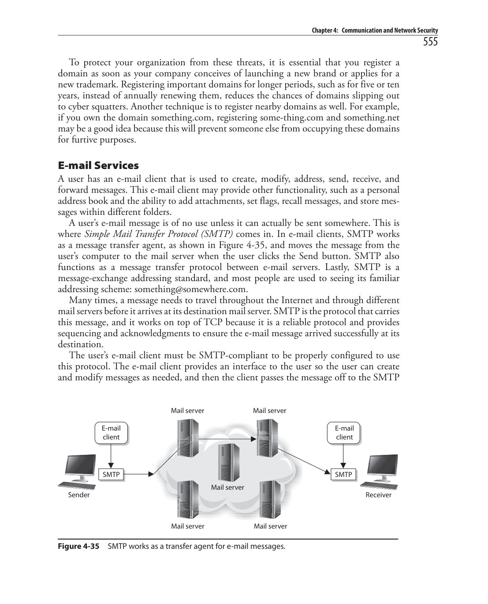
Figure 4-35SMTP works as a transfer agent for e-mail messages.
application layer protocol. So, to use the analogy of sending a letter via the post office, the e-mail client is the typewriter that a person uses to write the message, SMTP is the mail courier who picks up the mail and delivers it to the post office, and the post office is the mail server. The mail server has the responsibility of understanding where the message is heading and properly routing the message to that destination. The mail server is often referred to as an SMTP server. The most common SMTP server software within the UNIX world is Sendmail, which is actually an e-mail server application. This means that UNIX uses Sendmail software to store, maintain, and route e-mail messages. Within the Microsoft world, Microsoft Exchange is mostly used, and in Novell, GroupWise is the common SMTP server. SMTP works closely with two mail server protocols, POP and IMAP, which are explained in the following sections.
POP
Post Office Protocol (POP)is an Internet mail server protocol that supports incoming and outgoing messages. A mail server that uses POP, apart from storing and forwarding e-mail messages, works with SMTP to move messages between mail servers. A smaller company may have one POP server that holds all employee mailboxes, whereas larger companies may have several POP servers, one for each department within the organization. There are also Internet POP servers that enable people all over the world to exchange messages. This system is useful because the messages are held on the mail server until users are ready to download their messages, instead of trying to push messages right to a person’s computer, which may be down or offline. The e-mail server can implement different authentication schemes to ensure an individual is authorized to access a particular mailbox, but this is usually handled through usernames and passwords.
IMAP
Internet Message Access Protocol (IMAP)is also an Internet protocol that enables users to access mail on a mail server. IMAP provides all the functionalities of POP, but has more capabilities. If a user is using POP, when he accesses his mail server to see if he has received any new messages, all messages are automatically downloaded to his computer. Once the messages are downloaded from the POP server, they are usually deleted from that server, depending upon the configuration. POP can cause frustration for mobile users because the messages are automatically pushed down to their computer or device and they may not have the necessary space to hold all the messages. This is especially true for mobile devices that can be used to access e-mail servers. This is also inconvenient for people checking their mail on other people’s computers. If Christina checks her e-mail on Jessica’s computer, all of Christina’s new mail could be downloaded to Jessica’s computer.
POP is commonly used for Internet-based e-mail accounts (Gmail, Yahoo!, etc.), while IMAP is commonly used for corporate e-mail accounts.
If a user uses IMAP instead of POP, she can download all the messages or leave them on the mail server within her remote message folder, referred to as a mailbox. The user can also manipulate the messages within this mailbox on the mail server as if the messages resided on her local computer. She can create or delete messages, search for specific messages, and set and clear flags. This gives the user much more freedom and keeps the messages in a central repository until the user specifically chooses to download all messages from the mail server. IMAP is a store-and-forward mail server protocol that is considered POP’s successor. IMAP also gives administrators more capabilities when it comes to administering and maintaining the users’ messages.
E-mail Authorization
POP has gone through a few version updates and is currently on POP3. POP3 has the capability to integrateSimple Authentication and Security Layer (SASL), a protocol-independent framework for performing authentication. This means that any protocol that knows how to interact with SASL can use its various authentication mechanisms without having to actually embed the authentication mechanisms within its code. To use SASL, a protocol includes a command for identifying and authenticating a user to an authentication server and for optionally negotiating protection of subsequent protocol interactions. If its use is negotiated, a security layer is inserted between the protocol and the connection. The data security layer can provide data integrity, data confidentiality, and other services. SASL’s design is intended to allow new protocols to reuse existing mechanisms without requiring redesign of the mechanisms, and allows existing protocols to make use of new mechanisms without redesign of protocols. The use of SASL is not unique just to POP; other protocols, such as IMAP, Internet Relay Chat (IRC), Lightweight Directory Access Protocol (LDAP), and SMTP, can also use SASL and its functionality.
E-mail Relaying
Most companies have their public mail servers in their DMZ and may have one or more mail servers within their internal LAN. The mail servers in the DMZ are in this protected space because they are directly connected to the Internet. These servers should be tightly locked down and their relaying mechanisms should be correctly configured. Mail servers use arelay agentto send a message from one mail server to another. This relay agent needs to be properly configured so a company’s mail server is not used by a malicious entity for spamming activity. Spamming usually is illegal, so the people doing the spamming do not want the traffic to seem as though it originated from their equipment. They will find mail servers on the Internet, or within company DMZs, that have loosely configured relaying mechanisms
and use these servers to send their spam. If relays are configured “wide open” on a mail server, the mail server can be used to receiveanymail message and send it on toany intended recipients, as shown in Figure 4-36. This means that if a company does not properly configure its mail relaying, its server can be used to distribute advertisements for other companies, spam messages, and pornographic material. It is important that mail servers have proper antispam features enabled, which are actually antirelaying features. A company’s mail server should only accept mail destined for its domain and should not forward messages to other mail servers and domains that may be suspicious.
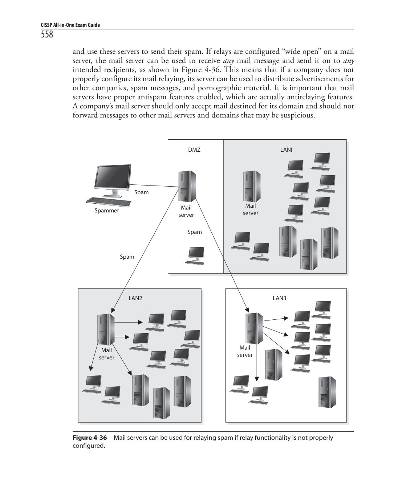
Figure 4-36Mail servers can be used for relaying spam if relay functionality is not properly
Many companies also employ antivirus and content-filtering applications on their mail servers to try and stop the spread of malicious code and not allow unacceptable messages through the e-mail gateway. It is important to filter both incoming and outgoing messages. This helps ensure that inside employees are not spreading viruses or sending out messages that are against company policy.
E-mail Threats
E-mail spoofingis a technique used by malicious users to forge an e-mail to make it appear to be from a legitimate source. Usually, such e-mails appear to be from known and trusted e-mail addresses when they are actually generated from a malicious source. This technique is widely used by attackers these days for spamming and phishing purposes. An attacker tries to acquire the target’s sensitive information, such as username and password or bank account credentials. Sometimes, the e-mail messages contain a link of a known website when it is actually a fake website used to trick the user into revealing his information. E-mail spoofing is done by modifying the fields of e-mail headers, such as the From, Return-Path, and Reply-To fields, so the e-mail appears to be from a trusted source. This results in an e-mail looking as though it is from a known e-mail address. Mostly the From field is spoofed, but some scams have modified the Reply-To field to the attacker’s e-mail address. E-mail spoofing is caused by the lack of security features in SMTP. When SMTP technologies were developed, the concept of e-mail spoofing didn’t exist, so countermeasures for this type of threat were not embedded into the protocol. A user could use an SMTP server to send e-mail to anyone from any e-mail address. SMTP authentication (SMTP-AUTH)was developed to provide an access control mechanism. This extension comprises an authentication feature that allows clients to authenticate to the mail server before an e-mail is sent. Servers using the SMTP-AUTH extension are configured in such a manner that their clients are obliged to use the extension so that the sender can be authenticated. E-mail spoofing can be mitigated in several ways. The SMTP server can be configured to prevent unauthenticated users from sending e-mails. It is important to always log all the connections to your mail servers so that unsolicited e-mails can be traced and tracked. It’s also advised that you filter incoming and outgoing traffic toward mail servers through a firewall to prevent generic network-level attacks, such as packet spoofing, distributed denial-of-service (DDoS) attacks, and so on. Important e-mails can be communicated over encrypted channels so that the sender and receiver are properly authenticated. Another way to deal with the problem of forged e-mail messages is by usingSender Policy Framework (SPF), which is an e-mail validation system designed to prevent e-mail spam by detecting e-mail spoofing by verifying the sender’s IP address. SPF allows administrators to specify which hosts are allowed to send e-mail from a given domain by creating a specific SPF record in DNS. Mail exchanges use DNS to check that mail from a given domain is being sent by a host sanctioned by that domain’s administrators. Phishing is a social engineering attack that is commonly carried out through maliciously crafted e-mail messages. The goal is to get someone to click a malicious link or for the victim to send the attacker some confidential data (Social Security number, account
number, etc.). The attacker crafts an e-mail that seems to originate from a trusted source and sends it out to many victims at one time. Aspearphishingattack zeroes in on specific people. So if an attacker wants your specific information because she wants to break into your bank account, she could gather information about you via Facebook, LinkedIn, or other resources and create an e-mail purporting to be from someone she thinks you will trust. A similar attack is called whaling. In awhaling attackan attacker usually identifies some “big fish” in an organization (CEO, CFO, COO, CSO) and targets them because they have access to some of the most sensitive data in the organization. The attack is finely tuned to achieve the highest likelihood of success. E-mail is, of course, a critical communication tool, but is the most commonly misused channel for malicious activities.
Network Address Translation
When computers need to communicate with each other, they must use the same type of addressing scheme so everyone understands how to find and talk to one another. The Internet uses the IP address scheme as discussed earlier in the chapter, and any computer or network that wants to communicate with other users on the network must conform to this scheme; otherwise, that computer will sit in a virtual room with only itself to talk to. However, IP addresses have become scarce (until the full adoption of IPv6) and expensive. So some smart people came up withnetwork address translation (NAT), which enables a network that does not follow the Internet’s addressing scheme to communicate over the Internet. Private IP addresses have been reserved for internal LAN address use, as outlined in RFC 1918. These addresses can be used within the boundaries of a company, but they cannot be used on the Internet because they will not be properly routed. NAT enables a company to use these private addresses and still be able to communicate transparently with computers on the Internet. The following lists current private IP address ranges:
10.0.0.0–10.255.255.255Class A networks
- 172.16.0.0–172.31.255.255Class B networks
- 192.168.0.0–192.168.255.255Class C networks
- NAT is a gateway that lies between a network and the Internet (or another network) that performs transparent routing and address translation. Because IP addresses were depleting fast, IPv6 was developed in 1999, and was intended to be the long-term fix to the address shortage problem. NAT was developed as the short-term fix to enable more companies to participate on the Internet. However, to date, IPv6 is slow in acceptance and implementation, while NAT has caught on like wildfire. Many firewall vendors have implemented NAT into their products, and it has been found that NAT actually provides a great security benefit. When attackers want to hack a network, they first do what they can to learn all about the network and its topology, services, and addresses. Attackers cannot easily find out a company’s address scheme and its topology when NAT
is in place, because NAT acts like a large nightclub bouncer by standing in front of the network and hiding the true IP scheme. NAT hides internal addresses by centralizing them on one device, and any frames that leave that network have only the source address of that device, not of the actual internal computer that sends the message. So when a message comes from an internal computer with the address of 10.10.10.2, for example, the message is stopped at the device running NAT software, which happens to have the IP address of 1.2.3.4. NAT changes the header of the packet from the internal address, 10.10.10.2, to the IP address of the NAT device, 1.2.3.4. When a computer on the Internet replies to this message, it replies to the address 1.2.3.4. The NAT device changes the header on this reply message to 10.10.10.2 and puts it on the wire for the internal user to receive. Three basic types of NAT implementations can be used:
Static mappingThe NAT software has a pool of public IP addresses
- configured. Each private address is statically mapped to a specific public address. So computer A always receives the public address x, computer B always receives the public address y, and so on. This is generally used for servers that need to keep the same public address at all times.
Dynamic mappingThe NAT software has a pool of IP addresses, but instead
- of statically mapping a public address to a specific private address, it works on a first-come, first-served basis. So if Bob needs to communicate over the Internet, his system makes a request to the NAT server. The NAT server takes the first IP address on the list and maps it to Bob’s private address. The balancing act is to estimate how many computers will most likely need to communicate outside the internal network at one time. This estimate is the number of public addresses the company purchases, instead of purchasing one public address for each computer.
Port address translation (PAT)The company owns and uses only one public
- IP address for all systems that need to communicate outside the internal network. How in the world could all computers use the exact same IP address? Good question. Here’s an example: The NAT device has an IP address of 127.50.41.3. When computer A needs to communicate with a system on the Internet, the NAT device documents this computer’s private address and source port number (10.10.44.3; port 43,887). The NAT device changes the IP address in the computer’s packet header to 127.50.41.3, with the source port 40,000. When computer B also needs to communicate with a system on the Internet, the NAT device documents the private address and source port number (10.10.44.15; port 23,398) and changes the header information to 127.50.41.3 with source port 40,001. So when a system responds to computer A, the packet first goes to the NAT device, which looks up the port number 40,000 and sees that it maps to computer A’s real information. So the NAT device changes the header information to address 10.10.44.3 and port 43,887 and sends it to computer A for processing. A company can save a lot more money by using PAT because the company needs to buy only a few public IP addresses, which are used by all systems in the network.
Most NAT implementations arestateful, meaning they keep track of a communication between the internal host and an external host until that session is ended. The NAT device needs to remember the internal IP address and port to send the reply messages back. This stateful characteristic is similar to stateful-inspection firewalls, but NAT does not perform scans on the incoming packets to look for malicious characteristics. Instead, NAT is a service usually performed on routers or gateway devices within a company’s screened subnet. Although NAT was developed to provide a quick fix for the depleting IP address problem, it has actually put the problem off for quite some time. The more companies that implement private address schemes, the less likely IP addresses will become scarce. This has been helpful to NAT and the vendors that implement this technology, but it has put the acceptance and implementation of IPv6 much farther down the road.
Routing Protocols
Individual networks on the Internet are referred to asautonomous systems (ASs). These ASs are independently controlled by different service providers and organizations. An AS is made up of routers, which are administered by a single entity and use a common Interior Gateway Protocol (IGP) within the boundaries of the AS. The boundaries of these ASs are delineated by border routers. These routers connect to the border routers of other ASs and run interior and exterior routing protocols. Internal routers connect to other routers within the same AS and run interior routing protocols. So, in reality, the Internet is just a network made up of ASs and routing protocols.
As an analogy, just as the world is made up of different countries, the Internet is made up of different ASs. Each AS has delineation boundaries just as countries do. Countries can have their own languages (Spanish, Arabic, Russian). Similarly, ASs have their own internal routing protocols. Countries that speak different languages need to have a way of communicating to each other, which could happen through interpreters. ASs need to have a standardized method of communicating and working together, which is where external routing protocols come into play. The architecture of the Internet that supports these various ASs is created so that no entity that needs to connect to a specific AS has to know or understand the interior routing protocols that are being used. Instead, for ASs to communicate, they just have to be using the same exterior routing protocols (see Figure 4-37). As an analogy, suppose you want to deliver a package to a friend who lives in another state. You give the package to your brother, who is going to take a train to the edge of the state and hand it to the postal system at that junction. Thus, you know how your brother will arrive at the edge of the state—by train. You do not know how the postal system will then deliver your package to your friend’s house (truck, car, bus), but that is not your concern. It will get to its destination without your participation. Similarly, when one network communicates with another network, the first network puts the data packet (package) on an exterior protocol (train), and when the data packet gets to the border router (edge of the state), the data is transferred to whatever interior protocol is being used on the receiving network.
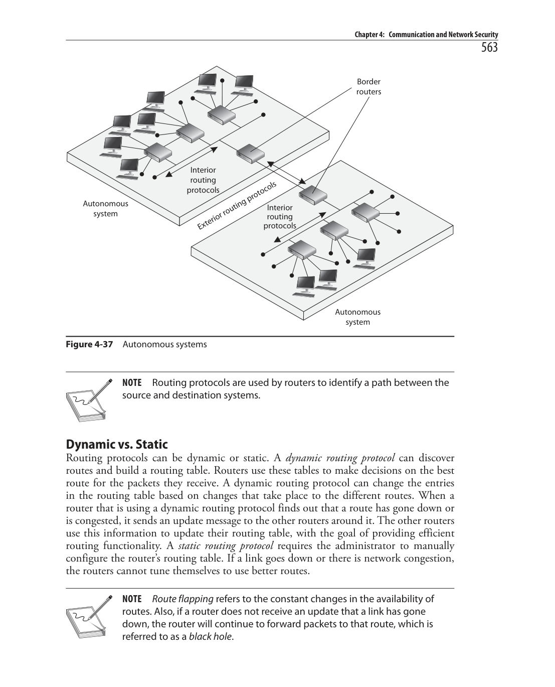
Figure 4-37Autonomous systems
Routing protocols are used by routers to identify a path between the source and destination systems.
Dynamic vs. Static
Routing protocols can be dynamic or static. Adynamic routing protocolcan discover routes and build a routing table. Routers use these tables to make decisions on the best route for the packets they receive. A dynamic routing protocol can change the entries in the routing table based on changes that take place to the different routes. When a router that is using a dynamic routing protocol finds out that a route has gone down or is congested, it sends an update message to the other routers around it. The other routers use this information to update their routing table, with the goal of providing efficient routing functionality. Astatic routing protocolrequires the administrator to manually configure the router’s routing table. If a link goes down or there is network congestion, the routers cannot tune themselves to use better routes.
Route flappingrefers to the constant changes in the availability of routes. Also, if a router does not receive an update that a link has gone down, the router will continue to forward packets to that route, which is referred to as ablack hole.
Distance-Vector vs. Link-State
Two main types of routing protocols are used: distance-vector and link-state routing. Distance-vector routing protocolsmake their routing decisions based on the distance (or number of hops) and a vector (a direction). The protocol takes these variables and uses them with an algorithm to determine the best route for a packet.Link-state routing protocolsbuild a more accurate routing table because they build a topology database of the network. These protocols look at more variables than just the number of hops between two destinations. They use packet size, link speed, delay, network load, and reliability as the variables in their algorithms to determine the best routes for packets to take. So, a distance-vector routing protocol only looks at the number of hops between two destinations and considers each hop to be equal. A link-state routing protocol sees more pieces to the puzzle than just the number of hops, but understands the status of each of those hops and makes decisions based on these factors also. As you will see, RIP is an example of a distance-vector routing protocol, and OSPF is an example of a link-state routing protocol. OSPF is preferred and is used in large networks. RIP is still around but should only be used in smaller networks.
Interior Routing Protocols
Interior Routing Protocols (also known as Interior Gateway Protocols) route traffic within the same AS. Just like the process for flying from one airport to another is different if you travel domestically or internationally, routing protocols are designed differently depending on which side of the AS boundary they operate. De facto and proprietary interior protocols are being used today. The following are just a few of them:
Routing Information ProtocolRIP is a standard that outlines how routers
- exchange routing table data and is considered a distance-vector protocol, which means it calculates the shortest distance between the source and destination. It is considered a legacy protocol because of its slow performance and lack of functionality. It should only be used in small networks. RIP version 1 has no authentication, and RIP version 2 sends passwords in cleartext or hashed with MD5. RIPng is the third generation of this venerable protocol. It is very similar to the version 2, but is designed for IPv6 routing. Open Shortest Path FirstOSPF uses link-state algorithms to send out
- routing table information. The use of these algorithms allows for smaller, more frequent routing table updates to take place. This provides a more stable network than RIP, but requires more memory and CPU resources to support this extra processing. OSPF allows for a hierarchical routing network that has a backbone link connecting all subnets together. OSPF has replaced RIP in many networks today. Authentication can take place with cleartext passwords or hashed passwords, or you can choose to configure no authentication on the routers using this protocol. The latest OSPF is version 3. Though it was designed to support IPv6, it also supports IPv4. Among the most important improvements is that OSPFv3 uses IPSec for authentication.
Interior Gateway Routing ProtocolIGRP is a distance-vector routing
- protocol that was developed by, and is proprietary to, Cisco Systems. Whereas RIP uses one criterion to find the best path between the source and destination, IGRP uses five criteria to make a “best route” decision. A network administrator can set weights on these different metrics so that the protocol works best in that specific environment.
Enhanced Interior Gateway Routing ProtocolEIGRP is a Cisco-proprietary
- and advanced distance-vector routing protocol. It allows for faster router table updates than its predecessor IGRP and minimizes routing instability, which can occur after topology changes. Routers exchange messages that contain information about bandwidth, delay, load, reliability, and MTU of the path to each destination as known by the advertising router. The latest version is 4, which is able to support multiple network protocols such as IPv4, IPv6, IPX, and AppleTalk.
Virtual Router Redundancy ProtocolVRRP is used in networks that
- require high availability where routers as points of failure cannot be tolerated. It is designed to increase the availability of the default gateway by advertising a “virtual router” as a default gateway. Two physical routers (primary and secondary) are mapped to one virtual router. If one of the physical routers fails, the other router takes over the workload.
Intermediate System to Intermediate SystemIS-IS is a link-state protocol
- that allows each router to independently build a database of a network’s topology. Similar to the OSPF protocol, it computes the best path for traffic to travel. It is a classless and hierarchical routing protocol that is vendor neutral. Unlike other protocols (e.g., RIP and OSPF), IS-IS does not use IP addresses. Instead, it uses ISO addresses, which means that the protocol didn’t have to be redesigned to support IPv6.
Although most routing protocols have authentication functionality, many routers do not have this functionality enabled.
Exterior Routing Protocols
The exterior routing protocols used by routers connecting different ASs are generically referred to asexterior gateway protocols (EGPs). TheBorder Gateway Protocol (BGP) enables routers on different ASs to share routing information to ensure effective and efficient routing between the different AS networks. BGP is commonly used by Internet service providers to route data from one location to the next on the Internet.
There is an exterior routing protocol called Exterior Gateway Protocol, but it has been widely replaced by BGP, and now the term “exterior gateway protocol” and the acronym EGP are used to refer generically to a type of protocol rather than to specify the outdated protocol.
BGP uses a combination of link-state and distance-vector routing algorithms. It creates a network topology by using its link-state functionality and transmits updates on a periodic basis instead of continuously, which is how distance-vector protocols work. Network administrators can apply weights to the different variables used by link-state routing protocols when determining the best routes. These configurations are collectively called therouting policy.
Routing Protocol Attacks
Several types of attacks can take place on routers through their routing protocols. A majority of the attacks have the goal of misdirecting traffic through the use of spoofed ICMP messages. An attacker can masquerade as another router and submit routing table information to the victim router. After the victim router integrates this new information, it may be sending traffic to the wrong subnets or computers, or even to a nonexistent address (black hole). These attacks are successful mainly when routing protocol authentication is not enabled. When authentication is not required, a router can accept routing updates without knowing whether or not the sender is a legitimate router. An attacker could divert a company’s traffic to reveal confidential information or to just disrupt traffic, which would be considered a DoS attack. Other types of DoS attacks exist, such as flooding a router port, buffer overflows, and SYN floods. Since there are many different types of attacks that can take place, there are just as many countermeasures to be aware of to thwart these types of attacks. Most of these countermeasures involve authentication and encryption of routing data as it is transmitted back and forth through the use of shared keys or IPSec.
Wormhole Attack
An attacker can capture a packet at one location in the network and tunnel it to another location in the network. In this type of attack, there are two attackers, one at each end of the tunnel (referred to as awormhole). Attacker A could capture an authentication token that is being sent to an authentication server and then send this token to the other attacker, who then uses it to gain unauthorized access to a resource. This can take place on a wired or wireless network, but it is easier to carry out on a wireless network because the attacker does not need to actually penetrate a physical wire. The countermeasure to this type of attack is to use aleash, which is just data that is put into a header of the individual packets. The leash restricts the packet’s maximum allowed transmission distance. The leash can be eithergeographical, which ensures that a packet stays within a certain distance of the sender, ortemporal, which limits the lifetime of the packet. It is like the idea of using leashes for your pets. You put a collar (leash) on your dog (packet) and it prevents him from leaving your yard (network segment).
Networking Devices
Several types of devices are used in LANs, MANs, and WANs to provide intercommunication among computers and networks. We need to have physical devices throughout the network to actually use all the protocols and services we have covered up to this point. The different networking devices vary according to their functionality, capabilities, intelligence, and network placement. We will look at the following devices:
Repeaters
- Bridges
- Routers
- Switches
Repeaters
Arepeaterprovides the simplest type of connectivity because it only repeats electrical signals between cable segments, which enables it to extend a network. Repeaters work at the physical layer and are add-on devices for extending a network connection over a greater distance. The device amplifies signals because signals attenuate the farther they have to travel. Repeaters can also work as line conditioners by actually cleaning up the signals. This works much better when amplifying digital signals than when amplifying analog signals because digital signals are discrete units, which makes extraction of background noise from them much easier for the amplifier. If the device is amplifying analog signals, any accompanying noise often is amplified as well, which may further distort the signal. Ahubis a multiport repeater. A hub is often referred to as aconcentratorbecause it is the physical communication device that allows several computers and devices to communicate with each other. A hub does not understand or work with IP or MAC addresses. When one system sends a signal to go to another system connected to it, the signal is broadcast to all the ports, and thus to all the systems connected to the concentrator.
Bridges
Abridgeis a LAN device used to connect LAN segments. It works at the data link layer and therefore works with MAC addresses. A repeater does not work with addresses; it just forwards all signals it receives. When a frame arrives at a bridge, the bridge determines whether or not the MAC address is on the local network segment. If the MAC address is not on the local network segment, the bridge forwards the frame to the necessary network segment. A bridge is used to divide overburdened networks into smaller segments to ensure better use of bandwidth and traffic control. A bridge amplifies the electrical signal, as does a repeater, but it has more intelligence than a repeater and is used to extend a LAN and enable the administrator to filter frames so he can control which frames go where.
When using bridges, you have to watch carefully forbroadcast storms. Because bridges can forward all traffic, they forward all broadcast packets as well. This can overwhelm the network and result in a broadcast storm, which degrades the network bandwidth and performance. Three main types of bridges are used: local, remote, and translation. Alocal bridge connects two or more LAN segments within a local area, which is usually a building. Aremote bridgecan connect two or more LAN segments over a MAN by using telecommunications links. A remote bridge is equipped with telecommunications ports, which enable it to connect two or more LANs separated by a long distance and can be brought together via telephone or other types of transmission lines. Atranslation bridgeis needed if the two LANs being connected are different types and use different standards and protocols. For example, consider a connection between a Token Ring network and an Ethernet network. The frames on each network type are different sizes, the fields contain different protocol information, and the two networks transmit at different speeds. If a regular bridge were put into place, Ethernet frames would go to the Token Ring network, and vice versa, and neither would be able to understand messages that came from the other network segment. A translation bridge does what its name implies—it translates between the two network types. The following list outlines the functions of a bridge:
Segments a large network into smaller, more controllable pieces.
- Uses filtering based on MAC addresses.
- Joins different types of network links while retaining the same broadcast domain.
- Isolates collision domains within the same broadcast domain.
- Bridging functionality can take place locally within a LAN or remotely to
- connect two distant LANs.
Can translate between protocol types.
Do not confuse routers with bridges. Routers work at the network layer and filter packets based on IP addresses, whereas bridges work at the data link layer and filter frames based on MAC addresses. Routers usually do not pass broadcast information, but bridges do pass broadcast information.
Forwarding Tables
A bridge must know how to get a frame to its destination—that is, it must know to which port the frame must be sent and where the destination host is located. Years ago, network administrators had to type route paths into bridges so the bridges had static paths indicating where to pass frames that were headed for different destinations. This was a tedious task and prone to errors. Today, bridges usetransparent bridging. If transparent bridging is used, a bridge starts to learn about the network’s environment as soon as it is powered on and as the network changes. It does this by examining frames and making entries in its forwarding tables. When a bridge receives a frame from a new source computer, the bridge associates this new source address and the port on which
it arrived. It does this for all computers that send frames on the network. Eventually, the bridge knows the address of each computer on the various network segments and to which port each is connected. If the bridge receives a request to send a frame to a destination that is not in its forwarding table, it sends out a query frame on each network segment except for the source segment. The destination host is the only one that replies to this query. The bridge updates its table with this computer address and the port to which it is connected and forwards the frame. Many bridges use theSpanning Tree Algorithm (STA), which adds more intelligence to the bridges. STA ensures that frames do not circle networks forever, provides redundant paths in case a bridge goes down, assigns unique identifiers to each bridge, assigns priority values to these bridges, and calculates path costs. This creates much more efficient frameforwarding processes by each bridge. STA also enables an administrator to indicate whether he wants traffic to travel certain paths instead of others. Ifsource routingis allowed, the packets contain the necessary information within them to tell the bridge or router where they should go. The packets hold the forwarding information so they can find their way to their destination without needing bridges and routers to dictate their paths. If the computer wants to dictate its forwarding information instead of depending on a bridge, how does it know the correct route to the destination computer? The source computer sends out explorer packets that arrive at the destination computer. These packets contain the route information the packets had to take to get to the destination, including what bridges and/or routers they had to pass through. The destination computer then sends these packets back to the source computer, and the source computer strips out the routing information, inserts it into the packets, and sends them on to the destination.
Connecting Two LANS: Bridge vs. Router
What is the difference between two LANs connected via a bridge versus two LANs connected via a router?If two LANs are connected with a bridge, the LANs have been extended because they are both in the same broadcast domain. A router separates broadcast domains, so if two LANs are connected with a router, an internetwork results. An internetwork is a group of networks connected in a way that enables any node on any network to communicate with any other node. The Internet is an example of an internetwork.
External devices and border routers should not accept packets with source routing information within their headers, because that information will override what is laid out in the forwarding and routing tables configured on the intermediate devices. You want to control how traffic traverses your network; you don’t want packets to have this type of control and be able to go wherever they want. Source routing can be used by attackers to get around certain bridge and router filtering rules.
Routers
We are going up the chain of the OSI layers while discussing various networking devices. Repeaters work at the physical layer, bridges work at the data link layer, and routers work at the network layer. As we go up each layer, each corresponding device has more intelligence and functionality because it can look deeper into the frame. A repeater looks at the electrical signal. The bridge can look at the MAC address within the header. The router can peel back the first header information and look farther into the frame and find out the IP address and other routing information. The farther a device can look into a frame, the more decisions it can make based on the information within the frame. Routersare layer 3, or network layer, devices that are used to connect similar or different networks. (For example, they can connect two Ethernet LANs or an Ethernet LAN to a Token Ring LAN.) A router is a device that has two or more interfaces and a routing table so it knows how to get packets to their destinations. It can filter traffic based on access control lists (ACLs), and it fragments packets when necessary. Because routers have more network-level knowledge, they can perform higher-level functions, such as calculating the shortest and most economical path between the sending and receiving hosts. A router discovers information about routes and changes that take place in a network through its routing protocols (RIP, BGP, OSPF, and others). These protocols tell routers if a link has gone down, if a route is congested, and if another route is more economical. They also update routing tables and indicate if a router is having problems or has gone down. The router may be a dedicated appliance or a computer running a networking operating system that is dual-homed. When packets arrive at one of the interfaces, the router compares those packets to its ACLs. This list indicates what packets are allowed in and what packets are denied. Access decisions are based on source and destination IP addresses, protocol type, and source and destination ports. An administrator may block all packets coming from the 10.10.12.0 network, any FTP requests, or any packets headed toward a specific port on a specific host, for example. This type of control is provided by the ACLs, which the administrator must program and update as necessary. What actually happens inside the router when it receives a packet? Let’s follow the steps:
1.A packet is received on one of the interfaces of a router. The router views the routing data. 2.The router retrieves the destination IP network address from the packet. 3.The router looks at its routing table to see which port matches the requested destination IP network address. 4.If the router does not have information in its table about the destination address, it sends out an ICMP error message to the sending computer indicating that the message could not reach its destination. 5.If the router does have a route in its routing table for this destination, it decrements the TTL value and sees whether the MTU is different for the destination network. If the destination network requires a smaller MTU, the router fragments the datagram.
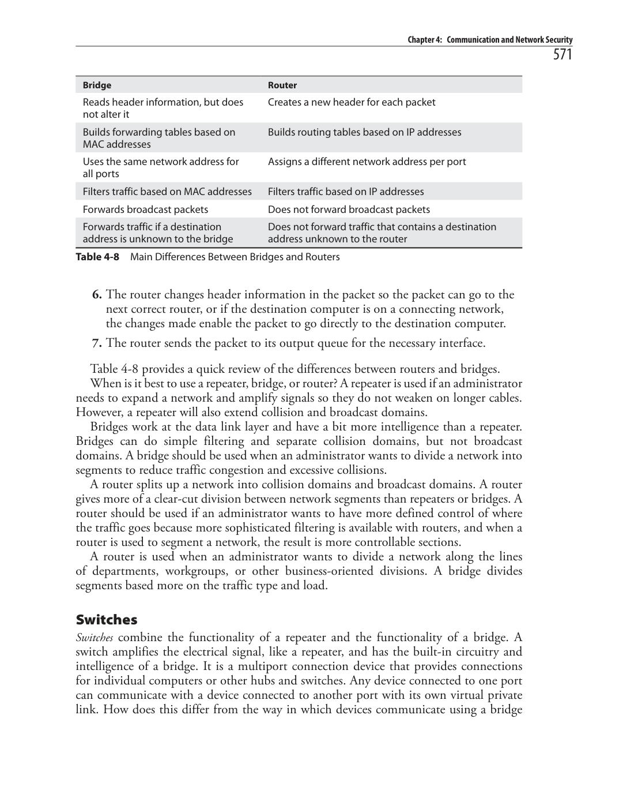
Reads header information, but doesCreates a new header for each packet
6.The router changes header information in the packet so the packet can go to the next correct router, or if the destination computer is on a connecting network, the changes made enable the packet to go directly to the destination computer. 7.The router sends the packet to its output queue for the necessary interface.
Table 4-8 provides a quick review of the differences between routers and bridges. When is it best to use a repeater, bridge, or router? A repeater is used if an administrator needs to expand a network and amplify signals so they do not weaken on longer cables. However, a repeater will also extend collision and broadcast domains. Bridges work at the data link layer and have a bit more intelligence than a repeater. Bridges can do simple filtering and separate collision domains, but not broadcast domains. A bridge should be used when an administrator wants to divide a network into segments to reduce traffic congestion and excessive collisions. A router splits up a network into collision domains and broadcast domains. A router gives more of a clear-cut division between network segments than repeaters or bridges. A router should be used if an administrator wants to have more defined control of where the traffic goes because more sophisticated filtering is available with routers, and when a router is used to segment a network, the result is more controllable sections. A router is used when an administrator wants to divide a network along the lines of departments, workgroups, or other business-oriented divisions. A bridge divides segments based more on the traffic type and load.
Switches
Switchescombine the functionality of a repeater and the functionality of a bridge. A switch amplifies the electrical signal, like a repeater, and has the built-in circuitry and intelligence of a bridge. It is a multiport connection device that provides connections for individual computers or other hubs and switches. Any device connected to one port can communicate with a device connected to another port with its own virtual private link. How does this differ from the way in which devices communicate using a bridge
or a hub? When a frame comes to a hub, the hub sends the frame out through all of its ports. When a frame comes to a bridge, the bridge sends the frame to the port to which the destination network segment is connected. When a frame comes to a switch, the switch sends the frame directly to the destination computer or network, which results in a reduction of traffic. Figure 4-38 illustrates a network configuration that has computers directly connected to their corresponding switches. On Ethernet networks, computers have to compete for the same shared network medium. Each computer must listen for activity on the network and transmit its data when it thinks the coast is clear. This contention and the resulting collisions cause traffic delays and use up precious bandwidth. When switches are used, contention and collisions are not issues, which results in more efficient use of the network’s bandwidth and decreased latency. Switches reduce or remove the sharing of the network medium and the problems that come with it. A switch is a multiport bridging device, and each port provides dedicated bandwidth to the device attached to it. A port is bridged to another port so the two devices have an end-to-end private link. The switch employs full-duplex communication, so one wire pair is used for sending and another pair is used for receiving. This ensures the two connected devices do not compete for the same bandwidth. Basic switches work at the data link layer and forward traffic based on MAC addresses. However, today’s layer 3, layer 4, and other layer switches have more enhanced functionality than layer 2 switches. These higher-level switches offer routing functionality, packet inspection, traffic prioritization, and QoS functionality. These switches are referred to as multilayered switchesbecause they combine data link layer, network layer, and other layer functionalities. Multilayered switches use hardware-based processing power, which enables them to look deeper within the packet, to make more decisions based on the information found within the packet, and then to provide routing and traffic management tasks. Usually
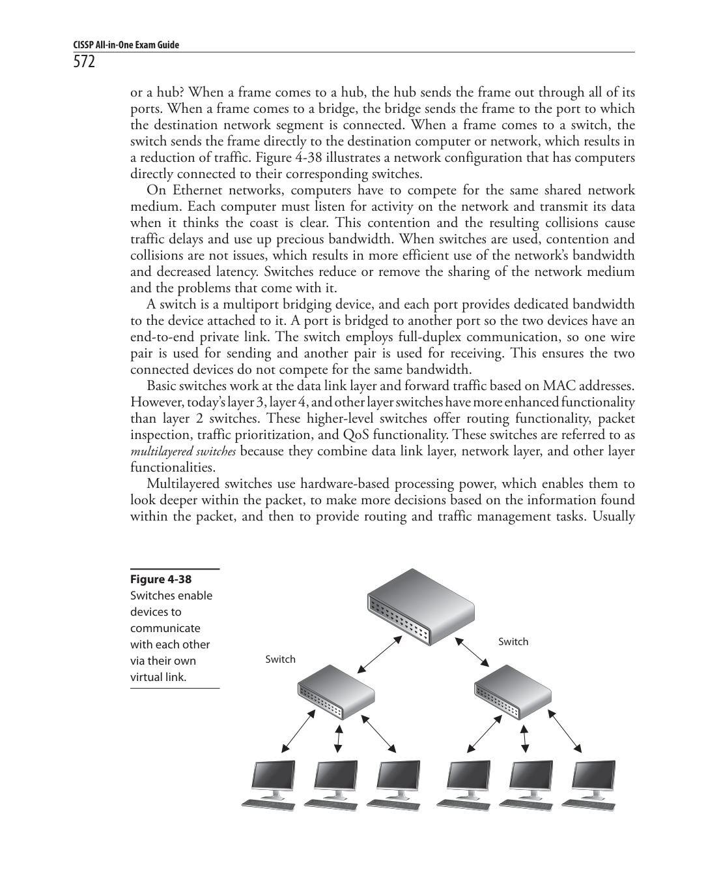
Figure 4-38
this amount of work creates a lot of overhead and traffic delay, but multilayered switches perform these activities within an application-specific integrated circuit (ASIC). This means that most of the functions of the switch are performed at the hardware and chip level rather than at the software level, making it much faster than routers.
While it is harder for attackers to sniff traffic on switched networks, they should not be considered safe just because switches are involved. Attackers commonly poison cache memory used on switches to divert traffic to their desired location.
Layer 3 and 4 Switches
Layer 2 switches only have the intelligence to forward a frame based on its MAC address and do not have a higher understanding of the network as a whole. A layer 3 switch has the intelligence of a router. It not only can route packets based on their IP addresses, but also can choose routes based on availability and performance. A layer 3 switch is basically a router on steroids, because it moves the route lookup functionality to the more efficient switching hardware level. The basic distinction between layer 2, 3, and 4 switches is the header information the device looks at to make forwarding or routing decisions (data link, network, or transport OSI layers). But layer 3 and 4 switches can use tags, which are assigned to each destination network or subnet. When a packet reaches the switch, the switch compares the destination address with its tag information base, which is a list of all the subnets and their corresponding tag numbers. The switch appends the tag to the packet and sends it to the next switch. All the switches in between this first switch and the destination host just review this tag information to determine which route it needs to take, instead of analyzing the full header. Once the packet reaches the last switch, this tag is removed and the packet is sent to the destination. This process increases the speed of routing of packets from one location to another. The use of these types of tags, referred to asMultiprotocol Label Switching (MPLS),not only allows for faster routing, but also addresses service requirements for the different packet types. Some time-sensitive traffic (such as video conferencing) requires a certain level of service (QoS) that guarantees a minimum rate of data delivery to meet the requirements of a user or application. When MPLS is used, different priority information is placed into the tags to help ensure that time-sensitive traffic has a higher priority than less sensitive traffic, as shown in Figure 4-39. Many enterprises today use a switched network in which computers are connected to dedicated ports on Ethernet switches, Gigabit Ethernet switches, ATM switches, and more. This evolution of switches, added services, and the capability to incorporate repeater, bridge, and router functionality have made switches an important part of today’s networking world. Because security requires control over who can access specific resources, more intelligent devices can provide a higher level of protection because they can make more detail-oriented decisions regarding who can access resources. When devices can look deeper into the packets, they have access to more information to make access decisions, which provides more granular access control.
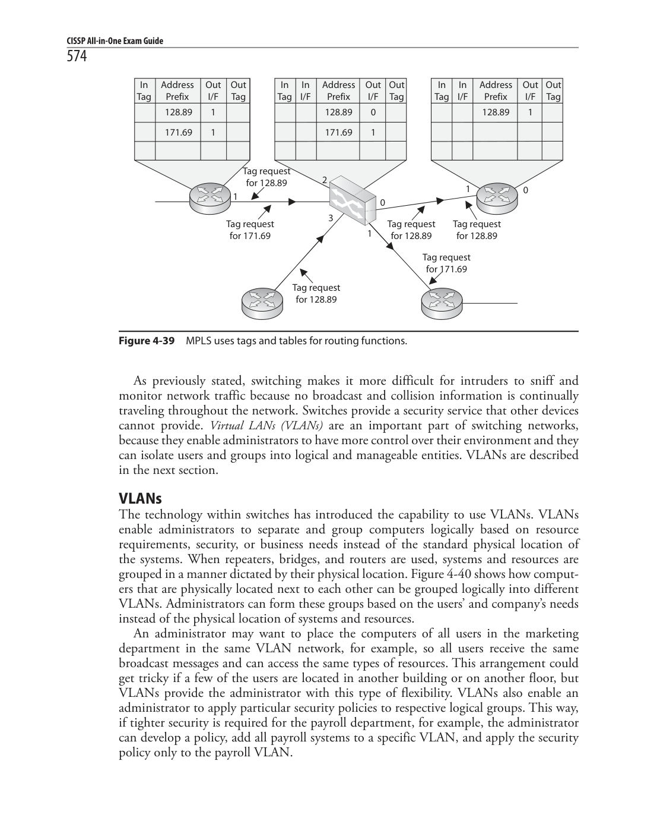
Figure 4-39MPLS uses tags and tables for routing functions.
As previously stated, switching makes it more difficult for intruders to sniff and monitor network traffic because no broadcast and collision information is continually traveling throughout the network. Switches provide a security service that other devices cannot provide.Virtual LANs (VLANs)are an important part of switching networks, because they enable administrators to have more control over their environment and they can isolate users and groups into logical and manageable entities. VLANs are described in the next section.
VLANs
The technology within switches has introduced the capability to use VLANs. VLANs enable administrators to separate and group computers logically based on resource requirements, security, or business needs instead of the standard physical location of the systems. When repeaters, bridges, and routers are used, systems and resources are grouped in a manner dictated by their physical location. Figure 4-40 shows how computers that are physically located next to each other can be grouped logically into different VLANs. Administrators can form these groups based on the users’ and company’s needs instead of the physical location of systems and resources. An administrator may want to place the computers of all users in the marketing department in the same VLAN network, for example, so all users receive the same broadcast messages and can access the same types of resources. This arrangement could get tricky if a few of the users are located in another building or on another floor, but VLANs provide the administrator with this type of flexibility. VLANs also enable an administrator to apply particular security policies to respective logical groups. This way, if tighter security is required for the payroll department, for example, the administrator can develop a policy, add all payroll systems to a specific VLAN, and apply the security policy only to the payroll VLAN.
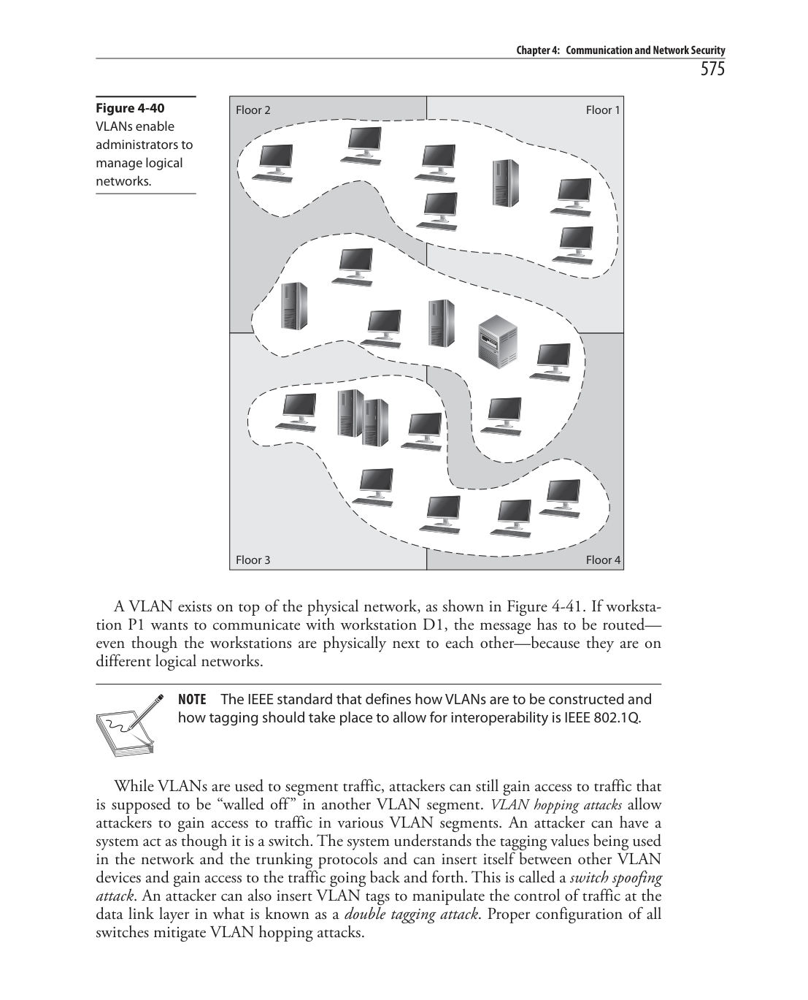
Figure 4-40
A VLAN exists on top of the physical network, as shown in Figure 4-41. If workstation P1 wants to communicate with workstation D1, the message has to be routed— even though the workstations are physically next to each other—because they are on different logical networks.
The IEEE standard that defines how VLANs are to be constructed and how tagging should take place to allow for interoperability is IEEE 802.1Q.
While VLANs are used to segment traffic, attackers can still gain access to traffic that is supposed to be “walled off ” in another VLAN segment.VLAN hopping attacksallow attackers to gain access to traffic in various VLAN segments. An attacker can have a system act as though it is a switch. The system understands the tagging values being used in the network and the trunking protocols and can insert itself between other VLAN devices and gain access to the traffic going back and forth. This is called aswitch spoofing attack. An attacker can also insert VLAN tags to manipulate the control of traffic at the data link layer in what is known as adouble tagging attack. Proper configuration of all switches mitigate VLAN hopping attacks.
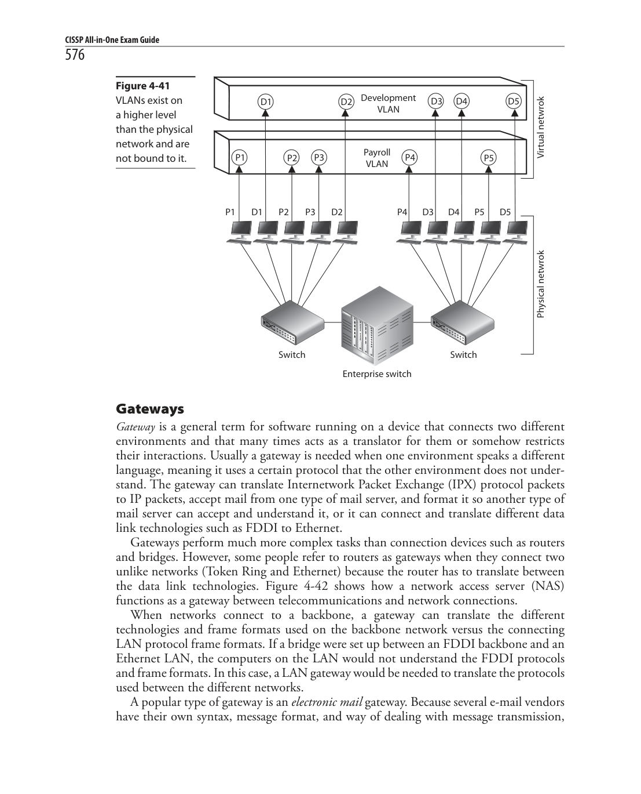
Figure 4-41
Gateways
Gatewayis a general term for software running on a device that connects two different environments and that many times acts as a translator for them or somehow restricts their interactions. Usually a gateway is needed when one environment speaks a different language, meaning it uses a certain protocol that the other environment does not understand. The gateway can translate Internetwork Packet Exchange (IPX) protocol packets to IP packets, accept mail from one type of mail server, and format it so another type of mail server can accept and understand it, or it can connect and translate different data link technologies such as FDDI to Ethernet. Gateways perform much more complex tasks than connection devices such as routers and bridges. However, some people refer to routers as gateways when they connect two unlike networks (Token Ring and Ethernet) because the router has to translate between the data link technologies. Figure 4-42 shows how a network access server (NAS) functions as a gateway between telecommunications and network connections. When networks connect to a backbone, a gateway can translate the different technologies and frame formats used on the backbone network versus the connecting LAN protocol frame formats. If a bridge were set up between an FDDI backbone and an Ethernet LAN, the computers on the LAN would not understand the FDDI protocols and frame formats. In this case, a LAN gateway would be needed to translate the protocols used between the different networks. A popular type of gateway is anelectronic mailgateway. Because several e-mail vendors have their own syntax, message format, and way of dealing with message transmission,
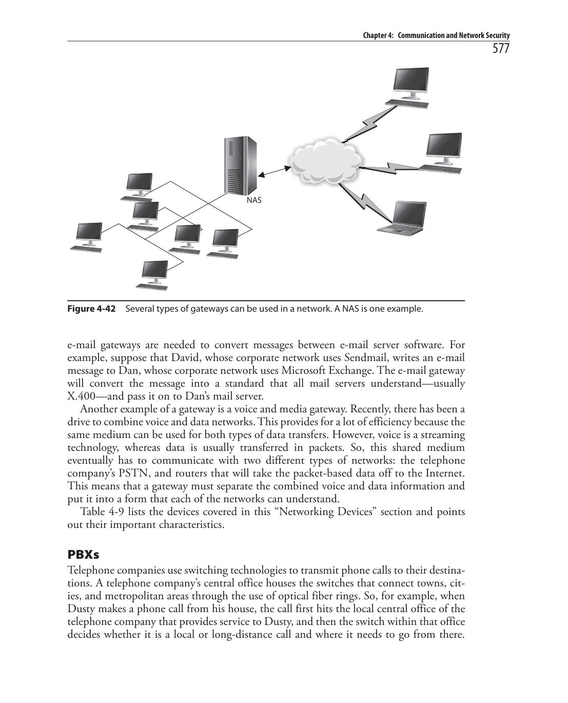
Figure 4-42Several types of gateways can be used in a network. A NAS is one example.
e-mail gateways are needed to convert messages between e-mail server software. For example, suppose that David, whose corporate network uses Sendmail, writes an e-mail message to Dan, whose corporate network uses Microsoft Exchange. The e-mail gateway will convert the message into a standard that all mail servers understand—usually X.400—and pass it on to Dan’s mail server. Another example of a gateway is a voice and media gateway. Recently, there has been a drive to combine voice and data networks. This provides for a lot of efficiency because the same medium can be used for both types of data transfers. However, voice is a streaming technology, whereas data is usually transferred in packets. So, this shared medium eventually has to communicate with two different types of networks: the telephone company’s PSTN, and routers that will take the packet-based data off to the Internet. This means that a gateway must separate the combined voice and data information and put it into a form that each of the networks can understand. Table 4-9 lists the devices covered in this “Networking Devices” section and points out their important characteristics.
PBXs
Telephone companies use switching technologies to transmit phone calls to their destinations. A telephone company’s central office houses the switches that connect towns, cities, and metropolitan areas through the use of optical fiber rings. So, for example, when Dusty makes a phone call from his house, the call first hits the local central office of the telephone company that provides service to Dusty, and then the switch within that office decides whether it is a local or long-distance call and where it needs to go from there.
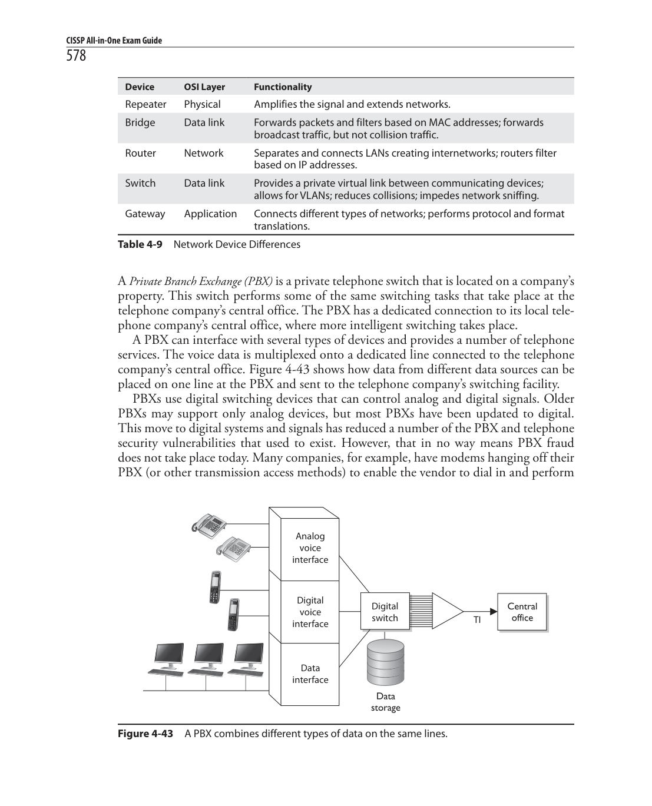
RepeaterPhysicalAmplifies the signal and extends networks.
APrivate Branch Exchange (PBX)is a private telephone switch that is located on a company’s property. This switch performs some of the same switching tasks that take place at the telephone company’s central office. The PBX has a dedicated connection to its local telephone company’s central office, where more intelligent switching takes place. A PBX can interface with several types of devices and provides a number of telephone services. The voice data is multiplexed onto a dedicated line connected to the telephone company’s central office. Figure 4-43 shows how data from different data sources can be placed on one line at the PBX and sent to the telephone company’s switching facility. PBXs use digital switching devices that can control analog and digital signals. Older PBXs may support only analog devices, but most PBXs have been updated to digital. This move to digital systems and signals has reduced a number of the PBX and telephone security vulnerabilities that used to exist. However, that in no way means PBX fraud does not take place today. Many companies, for example, have modems hanging off their PBX (or other transmission access methods) to enable the vendor to dial in and perform
maintenance to the system. These modems are usually unprotected doorways into a company’s network. The modem should be activated only when a problem requires the vendor to dial in. It should be disabled otherwise. In addition, many PBX systems have system administrator passwords that are hardly ever changed. These passwords are set by default; therefore, if 100 companies purchased and implemented 100 PBX systems from the PBX vendor ABC and they do not reset the password, aphreaker(a phone hacker) who knows this default password would now have access to 100 PBX systems. Once a phreaker breaks into a PBX system, she can cause mayhem by rerouting calls, reconfiguring switches, or configuring the system to provide her and her friends with free long-distance calls. This type of fraud happens more often than most companies realize because many companies do not closely watch their phone bills. Though the term is not used as much nowadays, phreakers are very much an issue to our telecommunications systems. Toll fraud (as most of their activities are called) is estimated to cost $1 billion in annual losses worldwide. PBX systems are also vulnerable to brute force and other types of attacks, in which phreakers use scripts and dictionaries to guess the necessary credentials to gain access to the system. In some cases, phreakers have listened to and changed people’s voice messages. So, for example, when people call to leave Bob a message, they might not hear his usual boring message, but a new message that is screaming obscenities and insults.
Unfortunately, many security people do not even think about a PBX when they are assessing a network’s vulnerabilities and security level. This is because telecommunication devices have historically been managed by service providers and/or by someone on the staff who understands telephony. The network administrator is usually not the person who manages the PBX, so the PBX system commonly does not even get assessed. The PBX is just a type of switch and it is directly connected to the company’s infrastructure; thus, it is a doorway for the bad guys to exploit and enter. These systems need to be assessed and monitored just like any other network device.
Network Diagramming
In many cases, you cannot capture a full network in a diagram because of the complexity of most organizations’ networks. Sometimes we have a false sense of security when we have a pretty network diagram that we can all look at and be proud of, but let’s dig deeper into why this can be deceiving. From what perspective should you look at a network? There can be a cabling diagram that shows you how everything is physically connected (coaxial, UTP, fiber) and a wireless portion that describes the WLAN structure. There can be a network diagram that illustrates the network in infrastructure layers of access, aggregation, edge, and core. You can have a diagram that illustrates how the various networking routing takes place (VLANs, MPLS connections, OSPF, IGRP, and BGP links). You can have a diagram that shows you how different data flows take place (FTP, IPSec, HTTP, TLS, L2TP, PPP, Ethernet, FDDI, ATM, etc.). You can have a diagram that separates workstations and the core server types that almost every network uses (DNS,
DHCP, web farm, storage, print, SQL, PKI, mail, domain controllers, RADIUS, etc.). You can look at a network based upon trust zones, which are enforced by filtering routers, firewalls, and DMZ structures. You can look at a network based upon its IP subnet structure. But what if you look at a network diagram from a Microsoft perspective, which illustrates many of these things but in forest, tree, domain, and OU containers? Then you need to show remote access connections, VPN concentrators, extranets, and the various MAN and WAN connections. How do we illustrate our IP telephony structure? How do we integrate our mobile device administration servers into the diagram? How do we document our new cloud computing infrastructure? How do we show the layers of virtualization within our database? How are redundant lines and fault-tolerance solutions marked? How does this network correlate and interact with our offsite location that carries out parallel processing? And we have not even gotten to our security components (firewalls, IDS, IPS, DLP, antimalware, content filters, etc.). And in the real world whatever network diagrams a company does have are usually out of date because they take a lot of effort to create and maintain.
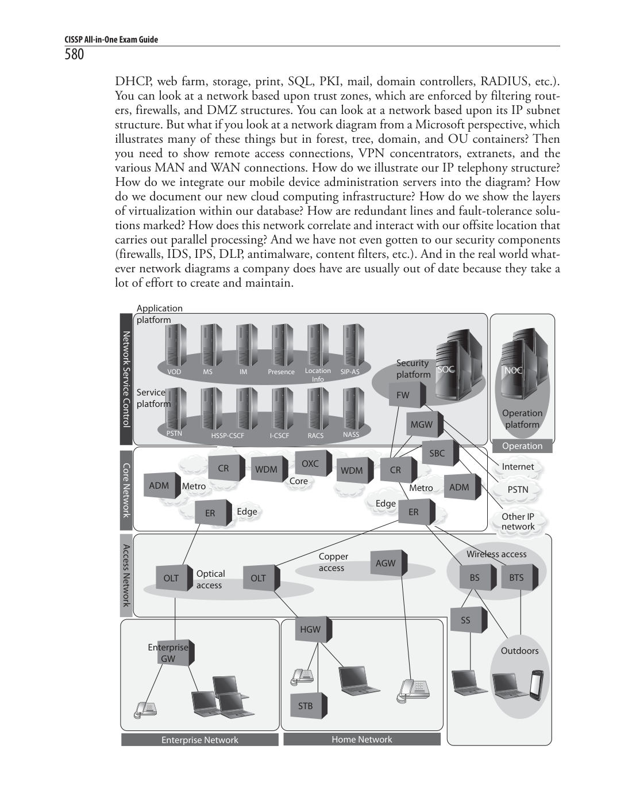
Diagram (p. 614)
The point is that a network is a complex beast that cannot really be captured on one piece of paper. Compare it to a human body. When you go into the doctor’s office you see posters on the wall. One poster shows the circulatory system, one shows the muscles, one shows bones, another shows organs, another shows tendons and ligaments; a dentist office has a bunch of posters on teeth; if you are at an acupuncture clinic, there will be a poster on acupuncture and reflexology points. And then there is a ton of stuff no one makes posters for: hair follicles, skin, toenails, eyebrows, but these are all part of one system. So what does this mean to the security professional? You have to understand a network from many different aspects if you are actually going to secure it. You start by learning all this network stuff in a modular fashion, but you need to quickly understand how it all works together under the covers. You can be a complete genius on how everything works within your current environment but not fully understand that when an employee connects her iPhone to her company laptop that is connected to the corporate network and uses it as a modem, this is an unmonitored WAN connection that can be used as a doorway by an attacker. Security is complex and demanding, so do not ever get too cocky, and always remember that a diagram is just showing a perspective of a network, not the whole network.
Firewalls
Firewallsare used to restrict access to one network from another network. Most companies use firewalls to restrict access to their networks from the Internet. They may also use firewalls to restrict one internal network segment from accessing another internal segment. For example, if the security administrator wants to make sure employees cannot access the research and development network, he would place a firewall between this network and all other networks and configure the firewall to allow only the type of traffic he deems acceptable. A firewall device supports and enforces the company’s network security policy. An organizational security policy provides high-level directives on acceptable and unacceptable actions as they pertain to protecting critical assets. The firewall has a more defined and granular security policy that dictates what services are allowed to be accessed, what IP addresses and ranges are to be restricted, and what ports can be accessed. The firewall is described as a “choke point” in the network because all communication should flow through it, and this is where traffic is inspected and restricted. A firewall may be a server running a firewall software product or a specialized hardware appliance. It monitors packets coming into and out of the network it is protecting. It can discard packets, repackage them, or redirect them, depending upon the firewall configuration. Packets are filtered based on their source and destination addresses, and ports by service, packet type, protocol type, header information, sequence bits, and much more. Many times, companies set up firewalls to construct ademilitarized zone (DMZ), which is a network segment located between the protected and unprotected networks. The DMZ provides a buffer zone between the dangerous Internet and the goodies within the internal network that the company is trying to protect. As shown in Figure 4-44, two firewalls are usually installed to form the DMZ. The DMZ usually contains web,
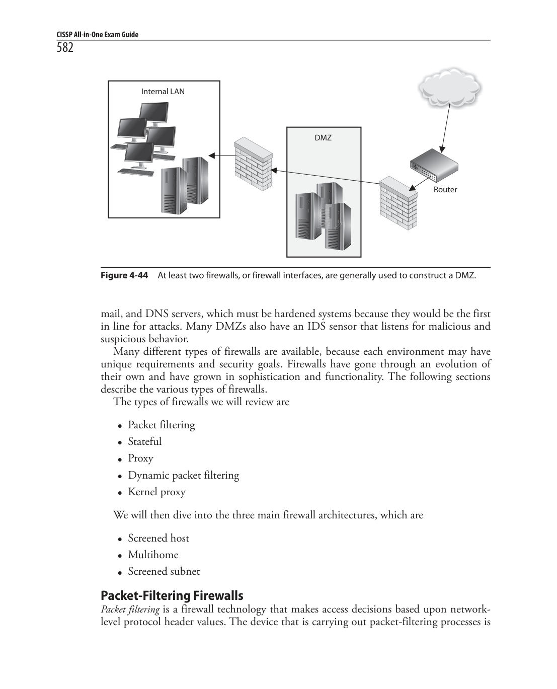
Figure 4-44At least two firewalls, or firewall interfaces, are generally used to construct a DMZ.
mail, and DNS servers, which must be hardened systems because they would be the first in line for attacks. Many DMZs also have an IDS sensor that listens for malicious and suspicious behavior. Many different types of firewalls are available, because each environment may have unique requirements and security goals. Firewalls have gone through an evolution of their own and have grown in sophistication and functionality. The following sections describe the various types of firewalls. The types of firewalls we will review are
Packet filtering
- Stateful
- Proxy
- Dynamic packet filtering
- Kernel proxy
- We will then dive into the three main firewall architectures, which are
Screened host
- Multihome
- Screened subnet
Packet-Filtering Firewalls
Packet filteringis a firewall technology that makes access decisions based upon networklevel protocol header values. The device that is carrying out packet-filtering processes is
configured with ACLs, which dictate the type of traffic that is allowed into and out of specific networks. Packet filtering was the first generation of firewalls, and it is the most rudimentary type of all of the firewall technologies. The filters only have the capability of reviewing protocol header information at the network and transport layers and carrying out permit or deny actions on individual packets. This means the filters can make access decisions based upon the following basic criteria:
Source and destination IP addresses
- Source and destination port numbers
- Protocol types
- Inbound and outbound traffic direction
- Packet filtering is built into a majority of the firewall products today and is a capability that many routers perform. The ACL filtering rules are enforced at the network interface of the device, which is the doorway into or out of a network. As an analogy, you could have a list of items you look for before allowing someone into your office premises through your front door. Your list can indicate that a person must be 18 years or older, have an access badge, and be wearing pants. When someone knocks on the door, you grab your list, which you will use to decide if this person can or cannot come inside. So your front door is one interface into your office premises. You can also have a list that outlines who can exit your office premises through your back door, which is another interface. As shown in Figure 4-45, a router has individual interfaces with their own unique addresses,
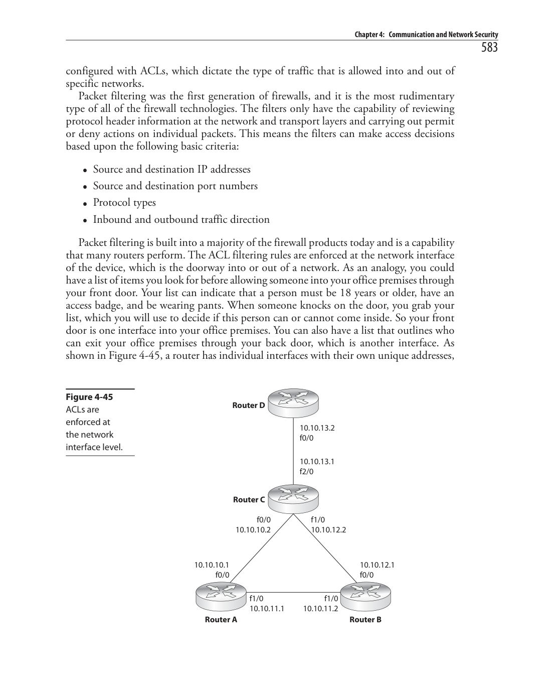
Figure 4-45
which provide doorways into and out of a network. Each interface can have its own ACL values, which indicate what type of traffic is allowed in and out of that specific interface. We will cover some basic ACL rules to illustrate how packet filtering is implemented and enforced. The following router configuration allows SMTP traffic to travel from system 10.1.1.2 to system 172.16.1.1:
This next rule permits UDP traffic from system 10.1.1.2 to 172.16.1.1:
If you want to ensure that no ICMP traffic enters through a certain interface, the following ACL can be configured and deployed:
If you want to allow standard web traffic (that is, to a web server listening on port 80) from system 1.1.1.1 to system 5.5.5.5, you can use the following ACL:
Filtering inbound traffic is known asingress filtering. Outgoing traffic can also be filtered using a process referred to asegress filtering.
So when a packet arrives at a packet-filtering device, the device starts at the top of its ACL and compares the packet’s characteristics to each rule set. If a successful match (permit or deny) is found, then the remaining rules are not processed. If no matches are found when the device reaches the end of the list, the traffic should be denied, but each product is different. So if you are configuring a packet-filtering device, make sure that if no matches are identified, then the traffic is denied. Packet filtering is also known asstatelessinspectionbecause the device does not understand the context that the packets are working within. This means that the device does not have the capability to understand the “full picture” of the communication that is taking place between two systems, but can only focus on individual packet characteristics. As we will see in a later section, stateful firewalls understand and keep track of a full communication session, not just the individual packets that make it up. Stateless firewalls make their decisions for each packet based solely on the data contained in that individual packet. Stateful firewalls accumulate data about the packets they see and use that data in an attempt to match incoming and outgoing packets to determine which packets may be part of the same network communications session. By evaluating a packet in the larger context of a network communications session, a stateful firewall has much more complete information than a stateless firewall and can therefore more readily recognize and reject packets that may be part of a network protocol–based attack. Packet-filtering devices can block many types of attacks at the network protocol level, but they are not effective at protecting against attacks that exploit application-specific vulnerabilities. That is because filtering only examines a packet’s header (i.e., delivery information) and not the data moving between the applications. Thus, a packet-filtering
firewall cannot protect against packet content that could, for example, probe for and exploit a buffer overflow in a given piece of software. The lack of sophistication in packet filtering means that an organization should not solely depend upon this type of firewall to protect its infrastructure and assets, but it does not mean that this technology should not be used at all. Packet filtering is commonly carried out at the edge of a network to strip out all of the obvious “junk” traffic. Since the rules are simple and only header information is analyzed, this type of filtering can take place quickly and efficiently. After traffic is passed through a packet-filtering device, it is usually then processed by a more sophisticated firewall, which digs deeper into the packet contents and can identify application-based attacks. Some of the weaknesses of packet-filtering firewalls are as follows:
They cannot prevent attacks that employ application-specific vulnerabilities or
- functions.
They have limited logging functionality.
- Most packet-filtering firewalls do not support advanced user authentication
- schemes.
Many packet-filtering firewalls cannot detect spoofed addresses.
- They may not be able to detect packet fragmentation attacks.
- The advantages to using packet-filtering firewalls are that they are scalable, they are not application dependent, and they have high performance because they do not carry out extensive processing on the packets. They are commonly used as the first line of defense to strip out all the network traffic that is obviously malicious or unintended for a specific network. The network traffic usually then has to be processed by more sophisticated firewalls that will identify the not-so-obvious security risks.
Stateful Firewalls
When packet filtering is used, a packet arrives at the firewall, and it runs through its ACLs to determine whether this packet should be allowed or denied. If the packet is allowed, it is passed on to the destination host, or to another network device, and the packet-filtering device forgets about the packet. This is different from stateful inspection, which remembers and keeps track of what packets went where until each particular connection is closed. Astateful firewallis like a nosy neighbor who gets into people’s business and conversations. She keeps track of the suspicious cars that come into the neighborhood, who is out of town for the week, and the postman who stays a little too long at the neighbor lady’s house. This can be annoying until your house is burglarized. Then you and the police will want to talk to the nosy neighbor, because she knows everything going on in the neighborhood and would be the one most likely to know something unusual happened. A stateful-inspection firewall is nosier than a regular filtering device because it keeps track of what computers say to each other. This requires that the firewall maintain astate table, which is like a score sheet of who said what to whom. Keeping track of the state of a protocol connection requires keeping track of many variables. Most people understand the three-step handshake a TCP connection goes
through (SYN, SYN/ACK, ACK), but what does this really mean? If Quincy’s system wants to communicate with your system using TCP, it will send your system a packet and in the TCP header the SYN flag value will be set to 1. This makes this packet a SYN packet. If your system accepts Quincy’s system’s connection request, it will send back a packet that has both the SYN and ACK flags within the packet header set to 1. This is a SYN/ACK packet. While many people know about these three steps of setting up a TCP connection, they are not always familiar with all of the other items that are being negotiated at this time. For example, your system and Quincy’s system will agree upon sequence numbers, how much data to send at a time (window size), how potential transmission errors will be identified (CRC values), etc. Figure 4-46 shows all of the values that make up a TCP header. So there is a lot of information going back and forth between your systems just in this one protocol—TCP. There are other protocols that are involved with networking that a stateful firewall has to be aware of and keep track of.
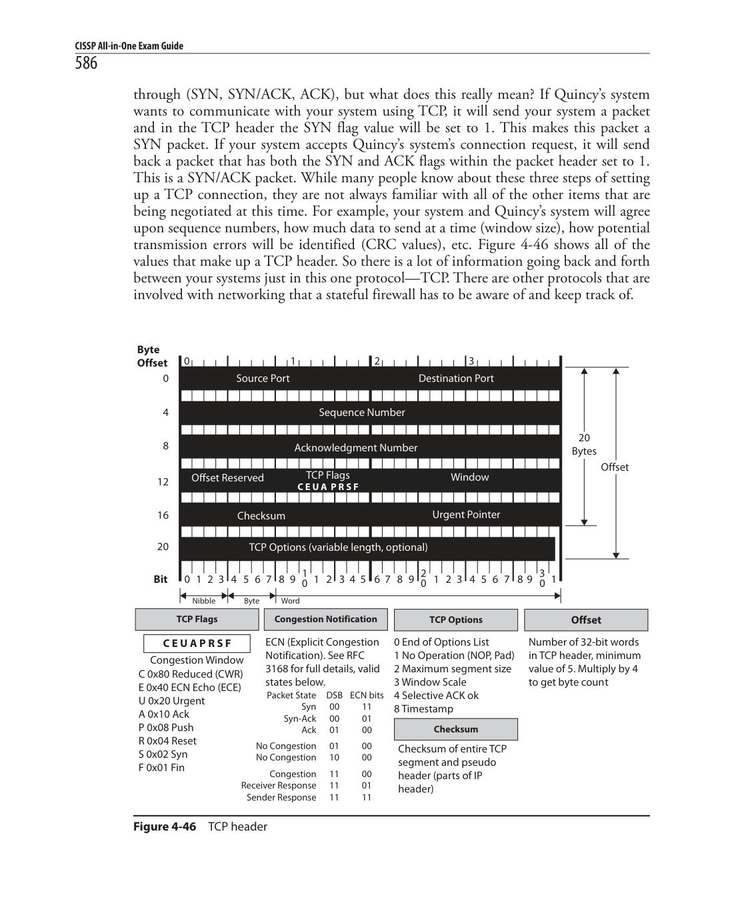
Figure 4-46TCP header
So “keeping state of a connection” means to keep a scorecard of all the various protocol header values as packets go back and forth between systems. The values not only have to be correct—they have to happen in the right sequence. For example, if a stateful firewall receives a packet that has all TCP flag values turned to 1, something malicious is taking place. Under no circumstances during a legitimate TCP connection should all of these values be turned on like this. Attackers send packets with all of these values turned to 1 with the hopes that the firewall does not understand or check these values and just forwards the packets onto the target system. In another situation, if Gwen’s system sends your system a SYN/ACK packet and your system did not first send a SYN packet to Gwen’s system, this, too, is against the protocol rules. The protocol communication steps have to follow the proper sequence. Attackers send SYN/ACK packets to target systems hoping that the firewall interprets this as an already established connection and just allows the packets to go to the destination system without inspection. A stateful firewall will not be fooled by such actions because it keeps track of each step of the communication. It knows how protocols are supposed to work, and if something is out of order (incorrect flag values, incorrect sequence, etc.), it does not allow the traffic to pass through. When a connection begins between two systems, the firewall investigatesallelements of the packet (all headers, payload, and trailers). All of the necessary information about the specific connection is stored in the state table (source and destination IP addresses, source and destination ports, protocol type, header flags, sequence numbers, timestamps, etc.). Once the initial packets go through this in-depth inspection and everything is deemed safe, the firewall then just reviews the network and transport header portions for the rest of the session. The values of each header for each packet are compared to what is in the current state table, and the table is updated to reflect the progression of the communication process. Scaling down the inspection of the full packet to just the headers for each packet is done to increase performance. TCP is considered a connection-oriented protocol, and the various steps and states this protocol operates within are very well defined. A connection progresses through a series of states during its lifetime. The states are LISTEN, SYN-SENT, SYN-RECEIVED, ESTABLISHED,FIN-WAIT-1,FIN-WAIT-2,CLOSE-WAIT,CLOSING,LAST- ACK, TIME-WAIT, and the fictional state CLOSED. A stateful firewall keeps track of each of these states for each packet that passes through, along with the corresponding acknowledgment and sequence numbers. If the acknowledgment and/or sequence numbers are out of order, this could imply that a replay attack is underway, and the firewall will protect the internal systems from this activity. Nothing is ever simple in life, including the standardization of network protocol communication. While the previous statements are true pertaining to the states of a TCP connection, in some situations an application layer protocol has to change these basic steps. For example, FTP uses an unusual communication exchange when initializing its data channel compared to all of the other application layer protocols. FTP basically sets up two sessions just for one communication exchange between two computers. The states of the two individual TCP connections that make up an FTP session can be tracked in the normal fashion, but the state of the FTP connection follows different rules. For a
stateful device to be able to properly monitor the traffic of an FTP session, it must be able to take into account the way that FTP uses one outbound connection for the control channel and one inbound connection for the data channel. If you were configuring a stateful firewall, you would need to understand the particulars of some specific protocols to ensure that each is being properly inspected and controlled. Since TCP is a connection-oriented protocol, it has clearly defined states during theconnectionestablishment,maintenance,andtearing-downstages.UDPisa connectionless protocol, which means that none of these steps take place. UDP holds no state, which makes it harder for a stateful firewall to keep track of. For connectionless protocols, a stateful firewall keeps track of source and destination addresses, UDP header values, and some ACL rules. This connection information is also stored in the state table and tracked. Since the protocol does not have a specific tear-down stage, the firewall will just time out the connection after a period of inactivity and remove the data being kept pertaining to that connection from the state table. An interesting complexity of stateful firewalls and UDP connections is how ICMP comes into play. Since UDP is connectionless, it does not provide a mechanism to allow the receiving computer to tell the sending computer that data is coming too fast. In TCP, the receiving computer can alter the window value in its header, which tells the sending computer to reduce the amount of data that is being sent. The message is basically, “You are overwhelming me and I cannot process the amount of data you are sending me. Slow down.” UDP does not have a window value in its header, so instead the receiving computer sends an ICMP packet that provides the same function. But now this means that the stateful firewall must keep track of and allow associated ICMP packets with specific UDP connections. If the firewall does not allow the ICMP packets to get to the sending system, the receiving system could get overwhelmed and crash. This is just one example of the complexity that comes into play when a firewall has to do more than just packet filtering. Although stateful inspection provides an extra step of protection, it also adds more complexity because this device must now keep a dynamic state table and remember connections. Stateful-inspection firewalls unfortunately have been the victims of many types of DoS attacks. Several types of attacks are aimed at flooding the state table with bogus information. The state table is a resource, similar to a system’s hard drive space, memory, and CPU. When the state table is stuffed full of bogus information, a poorly designed device may either freeze or reboot.
Stateful-Inspection Firewall Characteristics
The following lists some important characteristics of a stateful-inspection firewall:
Maintains a state table that tracks each and every communication session
- Provides a high degree of security and does not introduce the performance
- hit that application proxy firewalls introduce
Is scalable and transparent to users
- Provides data for tracking connectionless protocols such as UDP and ICMP
- Stores and updates the state and context of the data within the packets
Proxy Firewalls
Aproxyis a middleman. It intercepts and inspects messages before delivering them to the intended recipients. Suppose you need to give a box and a message to the president of the United States. You couldn’t just walk up to the president and hand over these items. Instead, you would have to go through a middleman, likely the Secret Service, who would accept the box and message and thoroughly inspect the box to ensure nothing dangerous was inside. This is what a proxy firewall does—it accepts messages either entering or leaving a network, inspects them for malicious information, and, when it decides the messages are okay, passes the data on to the destination computer. proxy firewallstands between a trusted and untrusted network and makes the A connection, each way, on behalf of the source. What is important is that a proxy firewall breaks the communication channel; there is nodirectconnection between the two communicating devices. Where a packet-filtering device just monitors traffic as it is traversing a network connection, a proxy ends the communication session and restarts it on behalf of the sending system. Figure 4-47 illustrates the steps of a proxy-based firewall. Notice that the firewall is not just applying ACL rules to the traffic, but stops the user connection at the internal interface of the firewall itself and then starts a new session on behalf of this user on the external interface. When the external web server replies to the request, this reply goes to the external interface of the proxy firewall and ends. The proxy firewall examines the reply information and, if it is deemed safe, starts a new session from itself to the internal system. This is just like our analogy of what the delivery man does between you and the president.
Figure 4-47Proxy firewall breaks connection
Now a proxy technology can actually work at different layers of a network stack. A proxy-based firewall that works at the lower layers of the OSI model is referred to as a circuit-level proxy. A proxy-based firewall that works at the application layer is, strangely enough, called an application-level proxy. Acircuit-level proxycreates a connection (circuit) between the two communicating systems. It works at the session layer of the OSI model and monitors traffic from a network-based view. This type of proxy cannot “look into” the contents of a packet; thus, it does not carry out deep-packet inspection. It can only make access decisions based upon protocol header and session information that is available to it. While this means that it cannot provide as much protection as an application-level proxy, because it does not have to understand application layer protocols, it is considered application independent. So it cannot provide the detail-oriented protection that a proxy working at a higher level can, but this allows it to provide a broader range of protection where application layer proxies may not be appropriate or available.
Traffic sent to the receiving computer through a circuit-level proxy appears to have originated from the firewall instead of the sending system. This is useful for hiding information about the internal computers on the network the firewall is protecting. Application-level proxiesinspect the packet up through the application layer. Where a circuit-level proxy only has insight up to the session layer, an application-level proxy understands the packet as a whole and can make access decisions based on the content of the packets. Application-level proxies understand various services and protocols and the commands that are used by them. An application-level proxy can distinguish between an FTP GET command and an FTP PUT command, for example, and make access decisions based on this granular level of information; on the other hand, packet-filtering firewalls and circuit-level proxies can allow or deny FTP requests only as a whole, not by the commands used within FTP. An application-level proxy firewall has one proxy per protocol. A computer can have many types of protocols (FTP, NTP, SMTP, HTTP, and so on). Thus, one applicationlevel proxy per protocol is required. This does not mean one proxy firewall per service is required, but rather that one portion of the firewall product is dedicated to understanding how a specific protocol works and how to properly filter it for suspicious data. Providing application-level proxy protection can be a tricky undertaking. The proxy must totally understand how specific protocols work and what commands within that protocol are legitimate. This is a lot to know and look at during the transmission of data. As an analogy, picture a screening station at an airport that is made up of many employees, all with the job of interviewing people before they are allowed into the airport and onto an airplane. These employees have been trained to ask specific questions and detect suspicious answers and activities, and have the skill set and authority to detain suspicious individuals. Now, suppose each of these employees speaks a different language because the people they interview come from different parts of the world. So, one employee who speaks German could not understand and identify suspicious answers of a person from Italy because they donot speak the same language. This is the same for an application-level proxy firewall.
Each proxy is a piece of software that has been designed to understand how a specific protocol “talks” and how to identify suspicious data within a transmission using that protocol.
If the application-level proxy firewall does not understand a certain protocol or service, it cannot protect this type of communication. In this scenario, a circuit-level proxy is useful because it does not deal with such complex issues. An advantage of a circuit-level proxy is that it can handle a wider variety of protocols and services than an application-level proxy can, but the downfall is that the circuit-level proxy cannot provide the degree of granular control that an application-level proxy provides. Life is just full of compromises. A circuit-level proxy works similarly to a packet filter in that it makes access decisions based on address, port, and protocol type header values. It looks at the data within the packet header rather than the data at the application layer of the packet. It does not know whether the contents within the packet are safe or unsafe; it only understands the traffic from a network-based view. An application-level proxy, on the other hand, is dedicated to a particular protocol or service. At least one proxy is used per protocol because one proxy could not properly interpret all the commands of all the protocols coming its way. A circuit-level proxy works at a lower layer of the OSI model and does not require one proxy per protocol because it does not look at such detailed information.
Application-Level Proxy Firewalls
Application-level proxy firewalls, like all technologies, have their pros and cons. It is important to fully understand all characteristics of this type of firewall before purchasing and deploying this type of solution. Characteristics of application-level proxy firewalls:
They have extensive logging capabilities due to the firewall being able to examine
- the entire network packet rather than just the network addresses and ports.
They are capable of authenticating users directly, as opposed to packet-
- filtering firewalls and stateful-inspection firewalls, which can usually only carry out system authentication.
Since they are not simply layer 3 devices, they can address spoofing attacks
- and other sophisticated attacks.
Disadvantages of using application-level proxy firewalls:
They are not generally well suited to high-bandwidth or real-time applications.
- They tend to be limited in terms of support for new network applications
- and protocols.
They create performance issues because of the necessary per-packet
- processing requirements.
SOCKSis an example of a circuit-level proxy gateway that provides a secure channel between two computers. When a SOCKS-enabled client sends a request to access a computer on the Internet, this request actually goes to the network’s SOCKS proxy firewall, as shown in Figure 4-48, which inspects the packets for malicious information and checks its policy rules to see whether this type of connection is allowed. If the packet is acceptable and this type of connection is allowed, the SOCKS firewall sends the message to the destination computer on the Internet. When the computer on the Internet responds, it sends its packets to the SOCKS firewall, which again inspects the data and then passes the packets on to the client computer. The SOCKS firewall can screen, filter, audit, log, and control data flowing in and out of a protected network. Because of its popularity, many applications and protocols have been configured to work with SOCKS in a manner that takes less configuration on the administrator’s part, and various firewall products have integrated SOCKS software to provide circuit-based protection.
Remember that whether an applicationor circuit-level proxy firewall is being used, it is still acting as a proxy. Both types of proxy firewalls deny actual end-to-end connectivity between the source and destination systems. In attempting a remote connection, the client connects to and communicates with the proxy; the proxy, in turn, establishes a connection to the destination system and makes requests to it on the client’s behalf. The proxy maintains two independent connections for every one network transmission. It essentially turns a two-party session into a four-party session, with the middle process emulating the two real systems.
Figure 4-48Circuit-level proxy firewall
Application-Level vs. Circuit-Level Proxy Firewall Characteristics
Characteristics of application-level proxy firewalls:
Each protocol that is to be monitored must have a unique proxy.
- They provide more protection than circuit-level proxy firewalls.
- They require more processing per packet and thus are slower than circuit-
- level proxy firewalls.
Characteristics of circuit-level proxy firewalls:
They do not require a proxy for each and every protocol.
- They do not provide the deep-inspection capabilities of an application-level
- proxy firewall. They provide security for a wider range of protocols.
Dynamic Packet-Filtering Firewalls
When an internal system needs to communicate with an entity outside its trusted network, it must choose a source port so the receiving system knows how to respond properly. Ports up to 1023 are calledwell-known portsand are reserved for specific server-side services. The sending system must choose a dynamic port higher than 1023 when it sets up a connection with another entity. Thedynamic packet-filtering firewallthen creates an ACL that allows the external entity to communicate with the internal system via this high-numbered port. If this were not an available option for your dynamic packet-filtering firewall, you would have to allow “punch holes” in your firewalls for all ports above 1023, because the client side chooses these ports dynamically and the firewall would never know exactly on which port to allow or disallow traffic.
The standard port for HTTP is 80, which means a server will have a service listening on port 80 for HTTP traffic. HTTP (and most other protocols) works in a type of client/server model. The server portion uses the wellknown ports (FTP uses 20 and 21; SMTP uses 25) so everyone knows how to connect to those services. A client will not use one of these well-known port numbers for itself, but will choose a random, higher port number. An internal system could choose a source port of 11,111 for its message to the outside system. This frame goes to the dynamic packet-filtering firewall, which builds an ACL, as illustrated in Figure 4-49, that indicates a response from the destination computer to this internal system’s IP address and port 11,111 is to be allowed. When the destination system sends a response, the firewall allows it. These ACLs are dynamic in nature, so once the connection is finished (either a FIN or RST packet is received), the ACL is removed
Figure 4-49Dynamic packet filtering adds ACLs when connections are created.
from the list. On connectionless protocols, such as UDP, the connection times out and then the ACL is removed. The benefit of a dynamic packet-filtering firewall is that it gives you the option of allowing any type of traffic outbound and permitting only response traffic inbound.
Kernel Proxy Firewalls
Akernel proxy firewallis considered a fifth-generation firewall. It differs from all the previously discussed firewall technologies because it creates dynamic, customized network stacks when a packet needs to be evaluated. When a packet arrives at a kernel proxy firewall, a new virtual network stack is created, which is made up of only the protocol proxies necessary to examine this specific packet properly. If it is an FTP packet, then the FTP proxy is loaded in the stack. The packet is scrutinized at every layer of the stack. This means the data link header will be evaluated along with the network header, transport header, session layer information, and the application layer data. If anything is deemed unsafe at any of these layers, the packet is discarded. Kernel proxy firewalls are faster than application-level proxy firewalls because all of the inspection and processing takes place in the kernel and does not need to be passed up to a higher software layer in the operating system. It is still a proxy-based system, so the connection between the internal and external entity is broken by the proxy acting as a middleman, and it can perform NAT by changing the source address, as do the preceding proxy-based firewalls.
Appliances
A firewall may take the form of either software installed on a regular computer using a regular operating system or a dedicated hardware appliance that has its own operating system. The second choice is usually more secure, because the vendor uses a stripped-down version of an operating system (usually Linux or BSD Unix). Operating systems are full of code and functionality that are not necessary for a firewall. This extra complexity opens the doors for vulnerabilities. If a hacker can exploit and bring down a company’s firewall, then the company is very exposed and in danger. In today’s jargon, dedicated hardware devices that have stripped-down operating systems and limited and focused software capabilities are calledappliances. Where an operating system has to provide a vast array of functionality, an appliance provides very focused functionality—as in just being a firewall. If a software-based firewall is going to run on a regular system, then the unnecessary user accounts should be disabled, unnecessary services deactivated, unused subsystems disabled, unneeded ports closed, etc. If firewall software is going to run on a regular system and not a dedicated appliance, then the system needs to be fully locked down.
Next-Generation Firewalls
Anext-generation firewall(NGFW)combines the best attributes of the previously discussed firewalls, but adds a number of important improvements. Most importantly, it incorporates a signature-based IPS engine. This means that, in addition to ensuring that the traffic is behaving in accordance with the rules of the applicable protocols, the firewall can look for specific indicators of attack even in otherwise well-behaved traffic. Some of the most advanced NGFWs include features that allow them to share signatures with a cloud-based aggregator so that once a new attack is detected by one firewall, all other firewalls manufactured by that vendor become aware of the attack signature. Another characteristic of an NGFW is its ability to connect to external data sources such as Active Directory, whitelists, blacklists, and policy servers. This features allows controls to be defined in one place and pulled by every NGFW on the network, which reduces the chances of inconsistent settings on the various firewalls that typically exist in large networks. For all their power, NGFWs are not for everyone. The typical cost of ownership alone tends to make these infeasible for small or even medium-sized networks. Organizations need to ensure that the correct firewall technology is in place to monitor specific network traffic types and protect unique resource types. The firewalls also have to be properly placed; we will cover this topic in the next section.
Firewall technology has evolved as attack types have evolved. The first-generation firewalls could only monitor network traffic. As attackers moved from just carrying out network-based attacks (DoS, fragmentation, spoofing, etc.) to software-based attacks (buffer overflows, injections, malware, etc.), new generations of firewalls were developed to monitor for these types of attacks.
Packet filteringNetwork layerLooks at destination and source addresses, ports, and
Table 4-10 lists the important concepts and characteristics of the firewall types discussed in the preceding sections. Although various firewall products can provide a mix of these services and work at different layers of the OSI model, it is important you understand the basic definitions and functionalities of these firewall types.
Firewall Architecture
Firewalls can be placed in a number of areas on a network to meet particular needs. They can protect an internal network from an external network and act as a choke point for all traffic. A firewall can be used to segment and partition network sections and enforce access controls between two or more subnets. Firewalls can also be used to provide a DMZ architecture. And as covered in the previous section, the right firewall type needs to be placed in the right location. Organizations have common needs for firewalls; hence, they keep them in similar places on their networks. We will see more on this topic in the following sections.
Bastion Host
A system is considered abastion hostif it is a highly exposed device that is most likely to be targeted by attackers. The closer any system is to an untrusted network, such as the Internet, the more it is considered a target candidate since it has a smaller number of layers of protection guarding it. If a system is on the public side of a
DMZ or is directly connected to an untrusted network, it is considered a bastion host; thus, it needs to be extremely locked down. The system should have all unnecessary services disabled, unnecessary accounts disabled, unneeded ports closed, unused applications removed, unused subsystems and administrative tools removed, etc. The attack surface of the system needs to be reduced, which means the number of potential vulnerabilities need to be reduced as much as possible. A bastion host does not have to be a firewall—the term just relates to the position of the system in relation to an untrusted environment and its threat of attack. Different systems can be considered bastion hosts (mail, web, DNS) since many of these are placed on the outer edges of networks.
Dual-Homed FirewallDual-homedrefers to a device that has two interfaces: one connected to one network and the other connected to a different network. If firewall software is installed on a dual-homed device—and it usually is—the underlying operating system should have packet forwarding and routing turned off for security reasons. If they are enabled, the computer may not apply the necessary ACLs, rules, or other restrictions required of a firewall. When a packet comes to the external NIC from an untrusted network on a dual-homed firewall and the operating system has forwarding enabled, the operating system will forward the traffic instead of passing it up to the firewall software for inspection. Many network devices today aremultihomed, which just means they have several NICs that are used to connect several different networks. Multihomed devices are commonly used to house firewall software, since the job of a firewall is to control the traffic as it goes from one network to another. A common multihomed firewall architecture allows a company to have several DMZs. One DMZ may hold devices that are shared between companies in an extranet, another DMZ may house the company’s DNS and mail servers, and yet another DMZ may hold the company’s web servers. Different DMZs are used for two reasons: to control the different traffic types (for example, to make sure HTTP traffic only goes toward the web servers and ensure DNS requests go toward the DNS server), and to ensure that if one system on one DMZ is compromised, the other systems in the rest of the DMZs are not accessible to this attacker. If a company depends solely upon a multihomed firewall with no redundancy, this system could prove to be a single point of failure. If it goes down, then all traffic flow stops. Some firewall products have embedded redundancy or fault-tolerance capabilities. If a company uses a firewall product that does not have these capabilities, then the network should have redundancy built into it. Along with potentially being a single point of failure, another security issue that should be understood is the lack of defense in depth. If the company depends upon just one firewall, no matter what architecture is being used or how many interfaces the device
has, there is only one layer of protection. If an attacker can compromise the one firewall, then she can gain direct access to company network resources.
Screened HostAscreened hostis a firewall that communicates directly with a perimeter router and the internal network. Figure 4-50 shows this type of architecture. Traffic received from the Internet is first filtered via packet filtering on the outer router. The traffic that makes it past this phase is sent to the screened-host firewall, which applies more rules to the traffic and drops the denied packets. Then the traffic moves to the internal destination hosts. The screened host (the firewall) is the only device that receives traffic directly from the router. No traffic goes directly from the Internet, through the router, and to the internal network. The screened host is always part of this equation. If the firewall is an application-based system, protection is provided at the network layer by the router through packet filtering, and at the application layer by the firewall. This arrangement offers a high degree of security, because for an attacker to be successful, she would have to compromise two systems. What does the word “screening” mean in this context? As shown in Figure 4-50, the router is a screening device and the firewall is the screened host. This just means there is a layer that scans the traffic and gets rid of a lot of the “junk” before it is directed toward the firewall. A screened host is different from a screened subnet, which is described next.
Screened SubnetAscreened-subnetarchitecture adds another layer of security to the screened-host architecture. The external firewall screens the traffic entering the DMZ network. However, instead of the firewall then redirecting the traffic to the internal network, an interior firewall also filters the traffic. The use of these two physical firewalls creates a DMZ. In an environment with only a screened host, if an attacker successfully breaks through the firewall, nothing lies in her way to prevent her from having full access to the internal network. In an environment using a screened subnet, the attacker would have
Figure 4-50A screened host is a firewall that is screened by a router.
Figure 4-51With a screened subnet, two firewalls are used to create a DMZ.
to hack through another firewall to gain access. In this layered approach to security, the more layers provided, the better the protection. Figure 4-51 shows a simple example of a screened subnet. The examples shown in the figures are simple in nature. Often, more complex networks and DMZs are implemented in real-world systems. Figures 4-52 and 4-53 show some other possible architectures of screened subnets and their configurations. The screened-subnet approach provides more protection than a stand-alone firewall or a screened-host firewall because three devices are working together and all three devices must be compromised before an attacker can gain access to the internal network. This architecture also sets up a DMZ between the two firewalls, which functions as a small network isolated among the trusted internal and untrusted external networks. The internal users usually have limited access to the servers within this area. Web, e-mail, and other public servers often are placed within the DMZ. Although this solution provides the highest security, it also is the most complex. Configuration and maintenance can prove to be difficult in this setup, and when new services need to be added, three systems may need to be reconfigured instead of just one.
Sometimes a screened-host architecture is referred to as a singletiered configuration and a screened subnet is referred to as a two-tiered configuration. If three firewalls create two separate DMZs, this may be called a three-tiered configuration.
Virtualized Firewalls
A lot of the network functionality we have covered up to this point can take place in virtual environments. Most people understand that a host system can have virtual guest systems running on it, enabling multiple operating systems to run on the same hardware platform simultaneously. But the industry has advanced much further than this when it comes to virtualized technology. Routers and switches can be virtualized, which means you do not actually purchase a piece of hardware and plug it into your network, but instead you deploy software products that carry out routing and switching functionality.
Figure 4-52A screened subnet can have different networks within it and different firewalls that
Firewall Architecture Characteristics
It is important to understand the following characteristics of these firewall architecture types:
Dual-homed:
A single computer with separate NICs connected to each network.
- Used to divide an internal trusted network from an external untrusted
- network.
Must disable a computer’s forwarding and routing functionality so the two
- networks are truly segregated.
Figure 4-53Some architectures have separate screened subnets with different server types in each.
Screened host:
A router filters (screens) traffic before it is passed to the firewall.
- Screened subnet:
An external router filters (screens) traffic before it enters the subnet. Traffic
- headed toward the internal network then goes through two firewalls.
We used to deploy a piece of hardware for every network function needed (DNS, mail, routers, switches, storage, Web), but today many of these items run within virtual machines on a smaller number of hardware machines. This reduces software and hardware costs and allows for more centralized administration, but these components still need to be protected from each other and external malicious entities. As an analogy, let’s say that 15 years ago each person lived in their own house and a police officer was placed between each house so that the people in the houses could not attack each other. Then last year, many of these people moved in together so that now at least five people live in the same physical house. These people still need to be protected from each other, so some of the police officers had to be moved inside the houses to enforce the laws and keep the peace. This is the same thing that virtualized firewalls do—they have “moved into” the virtualized environments to provide the necessary protection between virtualized entities. As illustrated in Figure 4-54, a network can have a traditional physical firewall on the physical network andvirtual firewallswithin the individual virtual environments. Virtual firewalls can provide bridge-type functionality in which individual traffic links are monitored between virtual machines, or they can be integrated within the hypervisor.
Figure 4-54Virtual firewalls
The hypervisor is the software component that carries out virtual machine management and oversees guest system software execution. If the firewall is embedded within the hypervisor, then it can “see” and monitor all the activities taking place within the system.
The “Shoulds” of Firewalls
The default action of any firewall should be to implicitly deny any packets not explicitly allowed. This means that if no rule states that the packet can be accepted, that packet should be denied, no questions asked. Any packet entering the network that has a source address of an internal host should be denied.Masquerading, orspoofing, is a popular attacking trick in which the attacker modifies a packet header to have the source address of a host inside the network she wants to attack. This packet is spoofed and illegitimate. There is no reason a packet coming from the Internet should have an internal source network address, so the firewall should deny it. The same is true for outbound traffic. No traffic should be allowed to leave a network that does not have an internal source address. If this occurs, it means someone, or some program, on the internal network is spoofing traffic. This is howzombieswork—the agents used in distributed DoS (DDoS) attacks. If packets are leaving a network with different source addresses, these packets are spoofed and the network is most likely being used as an accomplice in a DDoS attack. Firewalls should reassemble fragmented packets before sending them on to their destination. In some types of attacks, the hackers alter the packets and make them seem to be something they are not. When a fragmented packet comes to a firewall, the firewall is seeing only part of the picture. It will make its best guess as to whether this piece of a packet is malicious or not. Because these fragments contain only a part of the full packet, the firewall is making a decision without having all the facts. Once all fragments are allowed through to a host computer, they can be reassembled into malicious packages that can cause a lot of damage. A firewall should accept each fragment, assemble the fragments into a complete packet, and then make an access decision based on the whole packet. The drawback to this, however, is that firewalls that do reassemble packet fragments before allowing them to go on to their destination computer cause traffic delay and more overhead. It is up to the organization to decide whether this configuration is necessary and whether the added traffic delay is acceptable.
Fragmentation Attacks
Attackers have constructed several exploits that take advantage of some of the packet fragmentation steps within networking protocols. The following are three such examples:
IP fragmentationFragmentation and reassembly flaws within IP are
- exploited, which causes DoS.
Teardrop attackMalformed fragments are created by the attacker, and once
- they are reassembled, they could cause the victim system to become unstable.
Overlapping fragment attackUsed to subvert packet filters that do not
- reassemble packet fragments before inspection. A malicious fragment overwrites a previously approved fragment and executes an attack on the victim’s system.
Many companies choose to deny network entrance to packets that contain source routing information, which was mentioned earlier. Source routing means the packet decides how to get to its destination, not the routers in between the source and destination computer. Source routing moves a packet throughout a network on a predetermined path. The sending computer must know about the topology of the network and how to route data properly. This is easier for the routers and connection mechanisms in between, because they do not need to make any decisions on how to route the packet. However, it can also pose a security risk. When a router receives a packet that contains source routing information, the router assumes the packet knows what needs to be done and passes the packet on. In some cases, not all filters may be applied to the packet, and a network administrator may want packets to be routed only through a certain path and not the route a particular packet dictates. To make sure none of this misrouting happens, many firewalls are configured to check for source routing information within the packet and deny it if it is present. Some common firewall rules that should be implemented are as follows:
Silent ruleDrops “noisy” traffic without logging it. This reduces log sizes by
- not responding to packets that are deemed unimportant.
Stealth ruleDisallows access to firewall software from unauthorized systems.
- Cleanup ruleLast rule in rule base, drops and logs any traffic that does not
- meet preceding rules.
Negate ruleUsed instead of the broad and permissive “any rules,” provides
- tighter permission rights by specifying what system can be accessed and how.
Firewalls are not effective “right out of the box.” You really need to understand the type of firewall being implemented and its configuration ramifications. For example, a firewall may have implied rules, which are used before the rules you configure. These implied rules might contradict your rules and override them. In this case you think a certain traffic type is being restricted, but the firewall may allow that type of traffic into your network by default. Unfortunately, once a company erects a firewall, it may have a false sense of security. Firewalls are only one piece of the puzzle, and security has a lot of pieces. The following list addresses some of the issues that need to be understood as they pertain to firewalls:
Most of the time a distributed approach needs to be used to control all network
- access points, which cannot happen through the use of just one firewall.
Firewalls can present a potential bottleneck to the flow of traffic and a single
- point of failure threat.
Some firewalls do not provide protection from malware and can be fooled by the
- more sophisticated attack types.
Firewalls do not protect against sniffers or rogue wireless access points and
- provide little protection against insider attacks.
The role of firewalls is becoming more and more complex as they evolve and take on more functionality and responsibility. At times, this complexity works against security professionals because it requires them to understand and properly implement additional functionality. Without an understanding of the different types of firewalls and architectures available, many more security holes can be introduced, which lays out the welcome mat for attackers.
Proxy Servers
Earlier we covered two types of proxy-based firewalls, which are different from proxy servers.Proxy serversact as an intermediary between the clients that want access to certain services and the servers that provide those services. As a security administrator, you do not want internal systems to directly connect to external servers without some type of control taking place. For example, if users on your network could connect directly to websites without some type of filtering and rules in place, the users could allow malicious traffic into the network or could surf websites your company deems inappropriate. In this situation, all internal web browsers would be configured to send their web requests to a web proxy server. The proxy server validates that the request is safe and then sends an independent request to the website on behalf of the user. A very basic proxy server architecture is shown in Figure 4-55. The proxy server may cache the response it receives from the server so that when other clients make the same request, a connection does not have to go out to the actual web server again, but the necessary data is served up directly from the proxy server. This drastically reduces latency and allows the clients to get the data they need much more quickly. There are different types of proxies that provide specific services. Aforwarding proxy is one that allows the client to specify the server it wants to communicate with, as in our scenario earlier. Anopen proxyis a forwarding proxy that is open for anyone to use.
Figure 4-55
Figure 4-56
Ananonymous open proxy allows users to conceal their IP address while browsing websites or using other Internet services. Areverse proxyappears to the clients as the original server. The client sends a request to what it thinks is the original server, but in reality this reverse proxy makes a request to the actual server and provides the client with the response. The forwarding and reverse proxy functionality seems similar, but as Figure 4-56 illustrates, a forwarding proxy server is commonly on an internal network controlling traffic that is exiting the network. A reverse proxy server is commonly on the network that fulfills clients’ requests; thus, it is handling traffic that is entering its network. The reverse proxy can carry out load balancing, encryption acceleration, security, and caching. Web proxy servers are commonly used to carry out content filtering to ensure that Internet use conforms to the organization’s acceptable-use policy. These types of proxies can block unacceptable web traffic, provide logs with detailed information pertaining to the websites specific users visited, monitor bandwidth usage statistics, block restricted website usage, and screen traffic for specific keywords (e.g., porn, confidential, Social Security numbers). The proxy servers can be configured to act mainly as caching servers, which keep local copies of frequently requested resources, allowing organizations to significantly reduce their upstream bandwidth usage and costs while significantly increasing performance. While it is most common to use proxy servers for web-based traffic, they can be used for other network functionality and capabilities, as in DNS proxy servers. Proxy servers are a critical component of almost every network today. They need to be properly placed, configured, and monitored.
The use of proxy servers to allow for online anonymity has increased over the years. Some people use a proxy server to protect their browsing behaviors from others, with the goal of providing personal freedom and privacy. Attackers use the same functionality to help ensure their activities cannot be tracked back to their local systems.
Honeypot
Ahoneypotis a computer that is intended to be exploited by attackers, with the administrator’s goal being to gain information on the attack tactics, techniques, and procedures. A honeypot usually sits in the screened subnet, or DMZ, and attempts to lure attackers to it instead of to actual production computers. To make a honeypot system alluring to attackers, administrators may enable services and ports that are popular to exploit. Some honeypot systemsemulateservices, meaning the actual services are not running but software that acts like those services is available. Honeypot systems can get an attacker’s attention by advertising themselves as easy targets to compromise. They are configured to look like regular company systems so that attackers will be drawn to them like bears are to honey. Honeypots can work as early detection mechanisms, meaning that the network staff can be alerted that an intruder is attacking a honeypot system, and they can quickly go into action to make sure no production systems are vulnerable to that specific attack type. If two or more honeypot systems are used together, this is referred to as ahoneynet. Organizations use these systems to identify, quantify, and qualify specific traffic types to help determine their danger levels. The systems can gather network traffic statistics and return them to a centralized location for better analysis. So as the systems are being attacked, they gather intelligence information that can help the network staff better understand what is taking place within their environment. It is important to make sure that the honeypot systems are not connected to production systems and do not provide any “jumping off ” points for the attacker. There have been instances where companies improperly implemented honeypots and they were exploited by attackers, who were then able to move from those systems to the company’s internal systems. The honeypots need to be properly segmented from any other live systems on the network. On a smaller scale, companies may choose to implementtarpits, which are similar to honeypots in that they appear to be easy targets for exploitation. A tarpit can be configured to appear as a vulnerable service that attackers will commonly attempt to exploit. Once the attackers start to send packets to this “service,” the connection to the victim system seems to be live and ongoing, but the response from the victim system is slow and the connection may time out. Most attacks and scanning activities take place through automated tools that require quick responses from their victim systems. If the victim systems do not reply or are very slow to reply, the automated tools may not be successful because the protocol connection times out.
Unified Threat Management
It can be very challenging to manage the long laundry list of security solutions almost every network needs to have in place. The list includes, but is not limited to, firewalls, antimalware, antispam, IDS/IPS, content filtering, data leak prevention, VPN capabilities, and continuous monitoring and reporting.Unified threat management (UTM)appliance products have been developed that provide all (or many) of these functionalities in a single network appliance. The goals of UTM are simplicity, streamlined installation and maintenance, centralized control, and the ability to understand a network’s security
Figure 4-57Unified threat management
from a holistic point of view. Figure 4-57 illustrates how all of these security functions are applied to traffic as it enters this type of dedicated device. These products are considered all-in-one devices, and the actual type of functionality that is provided varies between vendors. Some products may be able to carry out this type of security for wired, wireless, and Voice over Internet Protocol (VoIP) types of traffic. Some issues with implementing UTM products are
Single point of failure for trafficSome type of redundancy should be put into
- place.
Single point of compromiseIf the UTM is successfully hacked, there may not
- be other layers deployed for protection.
Performance issuesLatency and bandwidth issues can arise since this is a
- “choke point” device that requires a lot of processing.
Content Distribution Networks
So far, our discussion of networking has sort of implied that there isa(singular) web server, a (singular) database server, and so on. While this simplifies our discussion of network foundations, protocols, and services, we all know that this is a very rare scenario in all but the smallest networks. Instead, we tend to implement multiples of each service, whether to segment systems, provide redundancy, or both. We may have a couple of web servers connected by a load balancer and interfacing with multiple back-end database servers. This sort of redundant deployment can improve performance, but all clients still have to reach the same physical location regardless of where in the world they may be. Wouldn’t it be nice if users in Europe did not have to ride transatlantic cables or satellite links to reach a server in the United States and instead could use one closer to them?
Acontent distribution network (CDN)consists of multiple servers distributed across a large region, each of which provides content that is optimized for users closest to it. This optimization can come in many flavors. For example, if you were a large video distribution entity like Netflix, you would want to keep your movie files from having to traverse multiple links between routers, since each hop would incur a delay and potential loss of packets (which could cause jitter in the video). Reducing the number of network hops for your video packets would also usually mean having a server geographically closer to the other node, offering you the opportunity to tailor the content for users in that part of the world. Building on our video example, you could keep movies dubbed in Chinese on servers that are on or closer to Asia and those dubbed in French closer to Europe. So when we talk about optimizing content, we can mean many things. Another benefit of using CDNs is that they make your Internet presence more resistant to DDoS attacks. We will get into detail on these attacks later in this chapter, but for now you should keep in mind that they rely on having a large number of computers flood a server until it becomes unresponsive to legitimate requests. If an attacker can muster a DDoS attack that can send a million packets per second (admittedly fairly small by today’s standards) and aim it at a single server, then it could very well be effective. However, if the attacker tries that against a server that is part of a CDN, the clients will simply start sending their requests to other servers in the network. If the attacker then directs a portion of his attack stream to each server on the CDN in hopes of bringing the whole thing down, the attack will obviously be diffused and would likely require many times more packets. Unsurprisingly, CDNs are how many organizations protect themselves against DDoS attacks.
Software Defined Networking
Software-defined networking (SDN)is an approach to networking that relies on distributed software to provide unprecedented agility and efficiency. Using SDN, it becomes much easier to dynamically route traffic to and from newly provisioned services and platforms. This means a new server can be quickly provisioned using a cloud service provider in response to a spike in service requests and the underlying network can just as quickly adapt to the new traffic patterns. It also means that a service or platform can be quickly moved from one location to another and the SDN will just as quickly update traffic flow rules in response to this change. Unsurprisingly, the three biggest drivers to the adoption of SDN are the growth in cloud computing, big data, and mobile computing. How does SDN differ from traditional networking? Whereas traditional networking relies on network devices that coordinate with one another in a mostly decentralized manner, SDN centralizes the configuration and control of devices. In a decentralized environment, it takes time for routers to converge onto (or agree on) good routes. These devices must normally be manually configured whenever any changes take place, which is also a time-consuming task. In SDN, on the other hand, all changes are pushed out to the devices either reactively (i.e., in response to requests from the devices) or proactively (i.e., because the admins know a change is being made, such as the addition of 100 servers). Because it is centrally controlled, the SDN approach allows traffic to be routed much more efficiently and securely. Perhaps the most important element of SDN is the abstraction of control and forwarding planes.
Control and Forwarding Planes
Thecontrol planeis where the internetwork routing decisions are being made. Think of this as the part of your router that runs the routing protocol (e.g., OSPF). (The analogy is not perfect, but it is useful for now.) This part is responsible for discovering the topology of neighboring networks and maintaining a table of routes for outbound packets. Since most networks are pretty dynamic places in which congestion along different routes is always changing, the control plane is a pretty dynamic place as well. New routes are routinely being discovered, just as old routes are dropped or at least flagged as slow or expensive. As you can see, the control plane is mostly interested in effects that are more than one hop away. Theforwarding plane, by contrast, is where traffic forwarding decisions are made. Think of this as that part of your router that decides (very quickly) that a packet received on network interface eth0 needs to be forwarded to network interface eth3. How does the forwarding plane decide this? By using the products developed by the control plane. The control plane is the strategic, methodical planner of traffic routing, while the forwarding plane is the tactical, fast executioner of those plans. Unsurprisingly, the forwarding plane is typically implemented in hardware such an application-specific integrated chip (ASIC).
Because traditional routing decisions are made by the controller in an SDN architecture, the networking devices behave (and are referred to) asswitches.
In a traditional network architecture, each networking device has its own control plane and its own forwarding plane, both of which run on some sort of proprietary operating system (e.g., Cisco IOS). The normal way of reconfiguring these traditional devices is via a terminal connection of some sort. This means that an administrator must remotely log into each device in order to change its configuration. Let’s suppose that we want to support a distinct QoS for a new user. In order to do this, we’d modify the configuration in each networking device that would be involved in providing services to this user. Even assuming that we are able to do this without making any mistakes, we still face the onerous task of manually changing these parameters whenever the terms of the contract change, or when equipment is replaced or upgraded, or when the network architecture changes. There are exceptions to these challenges, of course, but the point is that making frequent, granular configuration changes is tough.
What About Automation?
One of the challenges of network administration is that most network devices (apart from those that support SDN) do not have comprehensive mechanisms for programmatically and remotely changing the configuration of the device. This is why administrators have to manually log into each device and update the configuration. Reading information is easier because these devices typically support SNMP, but
writing meaningful changes to the devices almost always requires manual interaction or some third-party tool that comes with its own set of constraints. Further complicating the issue of making dynamic changes, vendors typically use their own proprietary operating system, which makes it harder to write a script that makes the same changes to all devices in heterogeneous environments that implement products from multiple vendors. This is the reason why many organizations implement homogeneous network architectures in which all the devices are manufactured by the same vendor. A big downside of this homogeneity is that it leads to vendor lockdown because it is hard (and expensive) to change vendors when that means you must change every single device on your network. Furthermore, homogeneity is bad for security, because an exploit that leverages a vulnerability in a network operating system will likely affect every device in a homogeneous network.
In SDN, by contrast, the control plane is implemented in a central node that is responsible for managing all the devices in the network. For redundancy and efficiency, this node can actually be a federation of nodes that coordinate their activities with one another. The network devices are then left to do what they do best: forward packets very efficiently. So the forwarding plane lives in the network devices and the control plane lives in a centralized SDN controller. This allows us to abstract the network devices (heterogeneous or otherwise) from the applications that rely on them to communicate in much the same way Windows abstracts the hardware details from the applications running on a workstation.
Approaches to SDN
The concept of network abstraction is central to all implementations of SDN. The manner in which this abstraction is implemented, however, varies significantly among flavors of SDN. There are at least three common approaches to SDN, each championed by a different community and delivered primarily through a specific technology:
OpenThe SDN approach championed by the Open Networking Foundation
- (ONF) (https://www.opennetworking.org) is, by most accounts, the most common. It relies on open-source code and standards to develop the building blocks of an SDN solution. The controller communicates with the switches using OpenFlow. OpenFlow is a standardized, open-source communications interface between controllers and networking devices in an SDN architecture. It allows the devices implementing the forwarding plane to provide information (such as utilization data) to the controller, while allowing the controller to update the flow tables (akin to traditional routing tables) on the devices. Applications communicate with the controller using the RESTful or Java APIs.
APIAnother approach to SDN, and one that is championed by Cisco, is built
- on the premise that OpenFlow is not sufficient to fully leverage the promise of SDN in the enterprise. In addition to OpenFlow, this approach leverages a rich API on proprietary switches that allows greater control over traffic in an SDN. Among the perceived shortcomings that are corrected are the inability of OpenFlow to do deep packet inspection and manipulation, and its reliance on a centralized control plane. This proprietary API approach to SDN is seen as enriching rather than replacing ONF’s SDN approach.
OverlaysFinally, one can imagine a virtualized network architecture as an
- overlay on a traditional one. In this approach, we virtualize all network nodes, including switches, routers, and servers, and treat them independently of the physical networks upon which this virtualized infrastructure exists. The SDN exists simply as a virtual overlay on top of a physical (underlay) network.
Intranets and Extranets
Web technologies and their uses have exploded with functionality, capability, and popularity. Companies set up internal websites for centralized business information such as employee phone numbers, policies, events, news, and operations instructions. Many companies have also implemented web-based terminals that enable employees to perform their daily tasks, access centralized databases, make transactions, collaborate on projects, access global calendars, use videoconferencing tools and whiteboard applications, and obtain often-used technical or marketing data. Web-based clients are different from workstations that log into a network and have their own desktop. Web-based clients limit a user’s ability to access the computer’s system files, resources, and hard drive space; access back-end systems; and perform other tasks. The web-based client can be configured to provide a GUI with only the buttons, fields, and pages necessary for the users to perform tasks. This gives all users a standard universal interface with similar capabilities. When a company uses web-based technologies that are only available inside its networks, it is using anintranet, a “private” network. The company has web servers and client machines using web browsers, and it uses the TCP/IP protocol suite. The web pages are written in HTML or XML (eXtensible Markup Language) and are accessed via HTTP. Using web-based technologies has many pluses. They have been around for quite some time, they are easy to implement, no major interoperability issues occur, and with just the click of a link, a user can be taken to the location of the requested resource. Webbased technologies are not platform dependent, meaning all websites and pages may be maintained on various platforms and different flavors of client workstations can access them—they only need a web browser.
Anextranetextends outside the bounds of the company’s network to enable two or more companies to share common information and resources. Business partners commonly set up extranets to accommodate business-to-business communication. An extranet enables business partners to work on projects together; share marketing information; communicate and work collaboratively on issues; post orders; and share catalogs, pricing structures, and information on upcoming events. Trading partners often useelectronic data interchange (EDI), which provides structure and organization to electronic documents, orders, invoices, purchase orders, and a data flow. EDI has evolved into web-based technologies to provide easy access and easier methods of communication. For many businesses, an extranet can create a weakness or hole in their security if the extranet is not implemented and maintained properly. Properly configured firewalls need to be in place to control who can use the extranet communication channels. Extranets used to be based mainly on dedicated transmission lines, which are more difficult for attackers to infiltrate, but today many extranets are set up over the Internet, which requires properly configured VPNs and security policies.
Value-Added Networks
Many different types of companies use EDI for internal communication and for communication with other companies. A very common implementation is between a company and its supplier. For example, some supplier companies provide inventory to many different companies, such as Target, Wal-Mart, and Kmart. Many of these supplies are made in China and then shipped to a warehouse somewhere in a specific country, as in the United States. When Wal-Mart needs to order more inventory, it sends its request through an EDI network, which is basically an electronic form of our paper-based world. Instead of using paper purchase orders, receipts, and forms, EDI provides all of this digitally. Avalue-added network (VAN)is an EDI infrastructure developed and maintained by a service bureau. A Wal-Mart store tracks its inventory by having employees scan bar codes on individual items. When the inventory of an item becomes low, a Wal-Mart system sends a request for more of that specific item. This request goes to a VAN that Wal-Mart pays to use, and the request is then pushed out to a supplier that provides this type of inventory for Wal-Mart. Because Wal-Mart (and other stores) deals with thousands of suppliers, using a VAN simplifies the ordering process: instead of an employee having to track down the right supplier and submit a purchase order, this all happens in the background through an automated EDI network, which is managed by a VAN company for use by other companies. EDI is moving away from proprietary VAN EDI structures to standardized communication structures to allow more interoperability and easier maintenance.
(Continued)
This means that XML, SOAP (Simple Object Access Protocol), and web services are being used. These are the communication structures used in supply chain infrastructures, as illustrated here.
Metropolitan Area Networks
Ametropolitan area network (MAN)is usually a backbone that connects LANs to each other and LANs to WANs, the Internet, and telecommunications and cable networks. A majority of today’s MANs areSynchronous Optical Networks (SONETs)or FDDI rings and Metro Ethernet provided by the telecommunications service providers. (FDDI technology was discussed earlier in the chapter.) The SONET and FDDI rings cover a large area, and businesses can connect to the rings via T1, fractional T1, and T3 lines. Figure 4-58 illustrates two companies connected via a SONET ring and the devices usually necessary to make this type of communication possible. This is a simplified example of a MAN. In reality, several businesses are usually connected to one ring.
Diagram (p. 648)
Figure 4-58A MAN covers a large area and enables businesses to connect to each other, to the
SONET is a standard for telecommunications transmissions over fiber-optic cables. Carriers and telephone companies have deployed SONET networks for North America, and if they follow the SONET standards properly, these various networks can intercommunicate with little difficulty. SONET isself-healing, meaning that if a break in the line occurs, it can use a backup redundant ring to ensure transmission continues. All SONET lines and rings are fully redundant. The redundant line waits in the wings in case anything happens to the primary ring. SONET networks can transmit voice, video, and data over optical networks. Slowerspeed SONET networks often feed into larger, faster SONET networks, as shown in Figure 4-59. This enables businesses in different cities and regions to communicate. MANs can be made up of wireless infrastructures, optical fiber, or Ethernet connections. Ethernet has evolved from just being a LAN technology to being used in MAN environments. Due to its prevalent use within organizations’ networks, it is easily extended and interfaced into MAN networks. A service provider commonly uses layer 2 and 3 switches to connect optical fibers, which can be constructed in a ring, star, or partial mesh topology. VLANs are commonly implemented to differentiate between the various logical network connections that run over the same physical network connection. The VLANs allow for the isolation of the different customers’ traffic from each other and from the core network internal signaling traffic.
Metro Ethernet
Ethernet has been around for many years and embedded in almost every LAN. Ethernet LANs can connect to previously mentioned MAN technologies, or they can be extended to cover a metropolitan area, which is calledMetro Ethernet. Ethernet on the MAN can be used as pure Ethernet or Ethernet integrated with other networking technologies, as in Multiprotocol Label Switching (MPLS). Pure Ethernet is
Figure 4-59Smaller SONET rings connect to larger SONET rings to construct individual MANs.
less expensive but less reliable and scalable. MPLS-based deployments are more expensive but highly reliable and scalable, and are typically used by large service providers. MAN architectures are commonly built upon the following layers: access, aggregation/ distribution, metro, and core, as illustrated in Figure 4-60.
Access devices exist at a customer’s premises and connect the customer’s equipment to the service provider’s network. The service provider’s distribution network aggregates the traffic and sends it to the provider’s core network. From there, the traffic is moved to the next aggregation network that is closest to the destination. This is similar to how smaller highways are connected to larger interstates with on and off ramps that allow people to quickly travel from one location to a different one.
A Virtual Private LAN Service (VPLS) is a multipoint, layer 2 VPN that connects two or more customer devices using Ethernet bridging techniques. In other words, VPLS emulates a LAN over a managed IP/MPLS network.
Wide Area Networks
LAN technologies provide communication capabilities over a small geographic area, whereaswide area network (WAN)technologies are used when communication needs to travel over a larger geographical area. LAN technologies encompass how a computer puts its data onto a network cable, the rules and protocols of how that data is formatted and transmitted, how errors are handled, and how the destination computer picks up this data from the cable. When a computer on one network needs to communicate with a network on the other side of the country or in a different country altogether, WAN technologies kick in. The network must have some avenue to other networks, which is most likely a router that communicates with the company’s service provider’s switches or telephone company facilities. Just as several types of technologies lie within the LAN arena, several technologies lie within the WAN arena. This section touches on many of these WAN technologies.
Telecommunications Evolution
Telephone systems have been around for about 100 years, and they started as copperbased analog systems. Central switching offices connected individual telephones manually (via human operators) at first, and later by using electronic switching equipment. After two telephones were connected, they had an end-to-end connection (end-to-end circuit). Multiple phone calls were divided up and placed on the same wire, which is called multiplexing.Multiplexingis a method of combining multiple channels of data over a single transmission path. The transmission is so fast and efficient that the ends do not realize they are sharing a line with many other entities. They think they have the line all to themselves. In the mid-1960s, digital phone systems emerged with T1 trunks, which carried 24 voice communication calls over two pairs of copper wires. This provided a 1.544-Mbps transmission rate, which brought quicker service, but also the capability to put more multiplexed calls on one wire. When calls take place between switching offices (say, local phone calls), they are multiplexed on trunks such as T1 lines. When more bandwidth is needed, the trunks can be implemented on T3 lines, which can carry up to 28 T1 lines.
The next entity to join the telecommunications party was fiber optics, which enabled even more calls to be multiplexed on one trunk line over longer distances. Then came optical carrier technologies such as SONET, which is a standard for telecommunications transmission over fiber-optic cables. This standard sets up the necessary parameters for transporting digital information over optical systems. Telecommunications carriers used this technology to multiplex lower-speed optical links into higher-speed links, similar to how lower-speed LANs connect to higher-speed WAN links today. Figure 4-61 shows an example of SONET rings connected together and how telecommunications carriers can provide telephone and Internet access to companies and individuals in large areas. The SONET standard enables all carriers to interconnect. The next evolutionary step in telecommunications history isAsynchronous Transfer Mode (ATM). ATM encapsulates data in fixed cells and can be used to deliver data over a SONET network. The analogy of a highway and cars is used to describe the SONET and ATM relationship. SONET is the highway that provides the foundation (or network) for the cars—the ATM packets—to travel on.
Figure 4-61SONET technology enables several optical communication loops to communicate.
LAN and WAN Protocols
Communication error rates are lower in LAN environments than in WAN environments, which makes sense when you compare the complexity of each environment. WAN traffic may have to travel hundreds or thousands of miles and pass through several different types of devices, cables, and protocols. Because of this difference, most LAN MAC protocols are connectionless and most WAN communication protocols are connection oriented. Connection-oriented protocols provide reliable transmission because they have the capability of error detection and correction.
ATM is a high-speed network technology that is used in WAN implementations by carriers, ISPs, and telephone companies. ATM uses a fixed cell size instead of the variable frame size employed by earlier technologies. This fixed size provides better performance and a reduced overhead for error handling. (More information on ATM technology is provided in the “ATM” section a little later.) The following is a quick snapshot of telecommunications history:
Copper lines carry purely analog signals.
- T1 lines carry up to 24 conversations.
- T3 lines carry up to 28 T1 lines.
- Fiber optics and the SONET network.
- ATM over SONET.
- SONET was developed in the United States to achieve a data rate around 50 Mbps to support the data flow from T1 lines (1.544 Mbps) and T3 lines (44.736 Mbps). Data travels over these T-carriers as electronic voltage to the edge of the SONET network. Then the voltage must be converted into light to run over the fiber-optic carrier lines, known as optical carrier (OC) lines. Each OC-1 frame runs at a signaling rate of 51.84 Mbps, with a throughput of 44.738 Mbps.
Optical carrier lines can provide different bandwidth values: OC-1 = 51.84 Mbps, OC-3 = 155.52 Mbps, OC-12 = 622.08 Mbps, and so on.
Europe has a different infrastructure and chose to useSynchronous Digital Hierarchy (SDH), which supports E1 lines (2.048 Mbps) and E3 lines (34.368 Mbps). SONET is the standard for North America, while SDH is the standard for the rest of the world. SDH and SONET are similar but just different enough to be incompatible. For communication to take place between SDH and SONET lines, a gateway must do the proper signaling translation.
You’ve had only a quick glimpse at an amazingly complex giant referred to as telecommunications. Many more technologies are being developed and implemented to increase the amount of data that can be efficiently delivered in a short period of time.
Dedicated Links
Adedicated linkis also called aleased lineorpoint-to-pointlink. It is one single link that is pre-established for the purposes of WAN communications between two destinations. It is dedicated, meaning only the destination points can communicate with each other. This link is not shared by any other entities at any time. This was the main way companies communicated in the past, because not as many choices were available as there are today. Establishing a dedicated link is a good idea for two locations that will communicate often and require fast transmission and a specific bandwidth, but it is expensive compared to other possible technologies that enable several companies to share the same bandwidth and also share the cost. This does not mean that dedicated lines are not in use; they definitely are used, but many other options are now available, including X.25, frame relay, MPLS, and ATM technologies.
T-Carriers
T-carriersare dedicated lines that can carry voice and data information over trunk lines. They were developed by AT&T and were initially implemented in the early 1960s to support pulse-code modulation (PCM) voice transmission. This was first used to digitize the voice over a dedicated, point-to-point, high-capacity connection line. The most commonly used T-carriers are T1 lines and T3 lines. Both are digital circuits that multiplex several individual channels into a higher-speed channel. These lines can have multiplex functionality throughtime-division multiplexing (TDM). What does this multiplexing stuff really mean? It means that each channel gets to use the path only during a specific time slot. It’s like having a time-share property on the beach; each co-owner gets to use it, but only one can do so at a time and can only remain for a fixed number of days. Consider a T1 line, which can multiplex up to 24 channels. If a company has a PBX connected to a T1 line, which in turn connects to the telephone company switching office, 24 calls can be chopped up and placed on the T1 line and transferred to the switching office. If this company did not use a T1 line, it would need 24 individual twisted pairs of wire to handle this many calls. As shown in Figure 4-62, data is input into these 24 channels and transmitted. Each channel gets to insert up to 8 bits into its established time slot. Twenty-four of these 8-bit
Figure 4-62Multiplexing puts several phone calls, or data transmissions, on the same wire.
Fractional1/2410.064
time slots make up a T1 frame. That does not sound like much information, but 8,000 frames are built per second. Because this happens so quickly, the receiving end does not notice a delay and does not know it is sharing its connection and bandwidth with up to 23 other devices. Originally, T1 and T3 lines were used by the carrier companies, but they have been replaced mainly with optical lines. Now T1 and T3 lines feed data into these powerful and super-fast optical lines. The T1 and T3 lines are leased to companies and ISPs that need high-capacity transmission capability. Sometimes, T1 channels are split up between companies who do not really need the full bandwidth of 1.544 Mbps. These are called fractionalT lines. The different carrier lines and their corresponding characteristics are listed in Table 4-11. As mentioned earlier, dedicated lines have their drawbacks. They are expensive and inflexible. If a company moves to another location, a T1 line cannot easily follow it. A dedicated line is expensive because companies have to pay for a dedicated connection with a lot of bandwidth even when they do not use the bandwidth. Not many companies require this level of bandwidth 24 hours a day. Instead, they may have data to send out here and there, but not continuously. The cost of a dedicated line is determined by the distance to the destination. A T1 line run from one building to another building 2 miles away is much cheaper than a T1 line that covers 50 miles or a full state.
E-Carriers
E-carriersare similar to T-carrier telecommunication connections, where a single physical wire pair can be used to carry many simultaneous voice conversations by time-division multiplexing. Within this technology 30 channels interleave 8 bits of data in a frame. While the T-carrier and E-carrier technologies are similar, they are not interoperable. E-carriers are used by European countries. The E-carrier channels and associated rates are shown in Table 4-12. The most commonly used channels used are E1 and E3 and fractional E-carrier lines.
Table 4-12
Optical Carrier
High-speed fiber-optic connections are measured inoptical carrier (OC)transmission rates. The transmission rates are defined by rate of the bit stream of the digital signal and are designated by an integer value of the multiple of the basic unit of rate. They are generically referred to as OCx, where the “x” represents a multiplier of the basic OC-1 transmission rate, which is 51.84 Mbps. The carrier levels and speeds are shown in Table 4-13. Small and medium-sized companies that require high-speed Internet connectivity may use OC-3 or OC-12 connections. Service providers that require much larger amounts of bandwidth may use one or more OC-48 connections. OC-192 and greater connections are commonly used for the Internet backbone, which connects the largest networks in the world together.
More Multiplexing
Here are some other types of multiplexing functionalities you should be aware of:
Statistical time-division multiplexing (STDM):
Transmits several types of data simultaneously across a single transmission
- cable or line (such as a T1 or T3 line). STDM analyzes statistics related to the typical workload of each input
- device (printer, fax, computer) and determines in real time how much time each device should be allocated for data transmission.
Frequency-division multiplexing (FDM):
An available wireless spectrum is used to move data.
- Available frequency band is divided into narrow frequency bands and used
- to have multiple parallel channels for data transfer.
(Continued)
Diagram (p. 657)
Wave-division multiplexing (WDM):
Used in fiber-optic communication.
- Multiplexes a number of optical carrier signals onto a single optical fiber.
WAN Technologies
Several varieties of WAN technologies are available to companies today. The information that a company evaluates to decide which is the most appropriate WAN technology for it usually includes functionality, bandwidth demands, service level agreements, required equipment, cost, and what is available from service providers. The following sections go over some of the WAN technologies available today.
CSU/DSU
Achannel service unit/data service unit (CSU/DSU)is required when digital equipment will be used to connect a LAN to a WAN. This connection can take place with T1 and T3 lines, as shown in Figure 4-63. A CSU/DSU is necessary because the signals and frames can vary between the LAN equipment and the WAN equipment used by service providers. The DSU device converts digital signals from routers, switches, and multiplexers into signals that can be transmitted over the service provider’s digital lines. The DSU device ensures that the voltage levels are correct and that information is not lost during
Figure 4-63A CSU/DSU is required for digital equipment to communicate with
the conversion. The CSU connects the network directly to the service provider’s line. The CSU/DSU is not always a separate device and can be part of a networking device. The CSU/DSU provides a digital interface for data terminal equipment (DTE), such as terminals, multiplexers, or routers, and an interface to the data circuit-terminating equipment (DCE) device, such as a carrier’s switch. The CSU/DSU basically works as a translator and, at times, as a line conditioner.
Switching
Dedicated links have one single path to traverse; thus, there is no complexity when it comes to determining how to get packets to different destinations. Only two points of reference are needed when a packet leaves one network and heads toward the other. It gets much more complicated when thousands of networks are connected to each other, which is often when switching comes into play. Two main types of switching can be used: circuit switching and packet switching. Circuit switchingsets up a virtual connection that acts like a dedicated link between two systems. ISDN and telephone calls are examples of circuit switching, which is shown in the lower half of Figure 4-64. When the source system makes a connection with the destination system, they set up a communication channel. If the two systems are local to each other, fewer devices need to be involved with setting up this channel. The farther the two systems are from each other, the more the devices are required to be involved with setting up the channel and connecting the two systems. An example of how a circuit-switching system works is daily telephone use. When one person calls another, the same type of dedicated virtual communication link is set up. Once the connection is made, the devices supporting that communication channel do not dynamically move the call through different devices, which is what takes place in a
Figure 4-64Circuit switching provides one road for a communication path, whereas packet
packet-switching environment. The channel remains configured at the original devices until the call (connection) is done and torn down. Packet switching, on the other hand, does not set up a dedicated virtual link, and packets from one connection can pass through a number of different individual devices (see the top of Figure 4-64), instead of all of them following one another through the same devices. Some examples of packet-switching technologies are the Internet, X.25, and frame relay. The infrastructure that supports these methods is made up of routers and switches of different types. They provide multiple paths to the same destinations, which offers a high degree of redundancy. In a packet-switching network, the data is broken up into packets containing frame check sequence (FCS) numbers. These packets go through different devices, and their paths can be dynamically altered by a router or switch that determines a better route for a specific packet to take. Once the packets are received at the destination computer, all the packets are reassembled according to their FCS numbers and processed. Because the path a packet will take in a packet-switching environment is not set in stone, there could be variable delays when compared to a circuit-switching technology. This is okay, because packet-switching networks usually carry data rather than voice. Because voice connections clearly detect these types of delays, in many situations a circuit-switching network is more appropriate for voice connections. Voice calls usually provide a steady stream of information, whereas a data connection is “burstier” in nature. When you talk on the phone, the conversation keeps a certain rhythm. You and your friend do not talk extremely fast and then take a few minutes in between conversations to stop talking and create a void with complete silence. However, this is usually how a data connection works. A lot of data is sent from one end to the other at one time, and then dead time occurs until it is time to send more data.
Voice over IP (VoIP) does move voice data over packet-switched environments. This technology is covered in the section “Multiservice Access Technologies,” later in the chapter.
Circuit Switching vs. Packet Switching
The following points provide a concise summary of the differences between circuitand packet-switching technologies:
Circuit switching:
Connection-oriented virtual links.
- Traffic travels in a predictable and constant manner.
- Fixed delays.
- Usually carries voice-oriented data.
- Packet switching:
Packets can use many different dynamic paths to get to the same
- destination.
Traffic is usually bursty in nature.
- Variable delays.
- Usually carries data-oriented data.
Frame Relay
For a long time, many companies used dedicated links to communicate with other companies. Company A had a pipeline to company B that provided a certain bandwidth 24 hours a day and was not used by any other entities. This was great because only the two companies could use the line, so a certain level of bandwidth was always available, but it was expensive and most companies did not use the full bandwidth each and every hour the link was available. Thus, the companies spent a lot of money for a service they did not use all the time. Later, to avoid this unnecessary cost, companies turned to using frame relay instead of dedicated lines.
Frame relay is an obsolescent technology. It is still in limited use, however, and you should be familiar with it for the CISSP exam.
Frame relay is a WAN technology that operates at the data link layer. It is a WAN solution that uses packet-switching technology to let multiple companies and networks share the same WAN medium, devices, and bandwidth. Whereas direct point-to-point links have a cost based on the distance between the endpoints, the frame relay cost is based on the amount of bandwidth used. Because several companies and networks use the same medium and devices (routers and switches), the cost can be greatly reduced per company compared to dedicated links. If a company knows it will usually require a certain amount of bandwidth each day, it can pay a certain fee to make sure this amount of bandwidth is always available to it. If another company knows it will not have a high bandwidth requirement, it can pay a lower fee that does not guarantee the higher bandwidth allocation. This second company will have the higher bandwidth available to it anyway—at least until that link gets busy, and then the bandwidth level will decrease. (Companies that pay more to ensure that a higher , or CIR.) level of bandwidth will always be available pay acommitted information rate Two main types of equipment are used in frame relay connections: DTE and DCE, both of which were previously introduced in the discussion of CSU/DSU. The DTE is usually a customer-owned device, such as a router or switch, that provides connectivity between the company’s own network and the frame relay network. DCE is the service provider’s
device, or telecommunications company’s device, that does the actual data transmission and switching in the frame relay cloud. So the DTE is a company’s ramp onto the frame relay network, and the DCE devices actually do the work within the frame relay cloud. The frame relay cloud is the collection of DCE devices that provides switching and data communications functionality. Several service providers offer this type of service, and some providers use other providers’ equipment—it can all get confusing because a packet can take so many different routes. This collection is called acloudto differentiate it from other types of networks and because when a packet hits this cloud, users do not usually know the route their frames will take. The frames will be sent either through permanent or switched virtual circuits that are defined within the DCE or through carrier switches.
The term cloud is used in several technologies: Internet cloud, ATM cloud, frame relay cloud, cloud computing, etc. The cloud is like a black box—we know our data goes in and we know it comes out, but we do not normally care about all the complex things that are taking place internally. Frame relay is an any-to-any service that is shared by many users. As stated earlier, this is beneficial because the costs are much lower than those of dedicated leased lines. Because frame relay is shared, if one subscriber is not using its bandwidth, it is available for others to use. On the other hand, when traffic levels increase, the available bandwidth decreases. This is why subscribers who want to ensure a certain bandwidth is always available to them pay a higher CIR. Figure 4-65 shows five sites being connected via dedicated lines versus five sites connected through the frame relay cloud. The first solution requires many dedicated lines that are expensive and not flexible. The second solution is cheaper and provides companies much more flexibility.
Figure 4-65A private network connection requires several expensive dedicated links. Frame relay
Virtual Circuits
Frame relay (and X.25) forwards frames across virtual circuits. These circuits can be eitherpermanent, meaning they are programmed in advance, orswitched, meaning the circuit is quickly built when it is needed and torn down when it is no longer needed. permanent virtual circuit (PVC)works like a private line for a customer with an agreed- The upon bandwidth availability. When a customer decides to pay for the CIR, a PVC is programmed for that customer to ensure it will always receive a certain amount of bandwidth. switched virtual circuits (SVCs)require steps similar to a dial-up and Unlike PVCs, connection procedure. The difference is that a permanent path is set up for PVC frames, whereas when SVCs are used, a circuit must be built. It is similar to setting up a phone call over the public network. During the setup procedure, the required bandwidth is requested, the destination computer is contacted and must accept the call, a path is determined, and forwarding information is programmed into each switch along the SVC’s path. SVCs are used for teleconferencing, establishing temporary connections to remote sites, data replication, and voice calls. Once the connection is no longer needed, the circuit is torn down and the switches forget it ever existed. Although a PVC provides a guaranteed level of bandwidth, it does not have the flexibility of an SVC. If a customer wants to use her PVC for a temporary connection, as mentioned earlier, she must call the carrier and have it set up, which can take hours.
X.25
X.25is an older WAN protocol that defines how devices and networks establish and maintain connections. Like frame relay, X.25 is a switching technology that uses carrier switches to provide connectivity for many different networks. It also provides an any-toany connection, meaning many users use the same service simultaneously. Subscribers are charged based on the amount of bandwidth they use, unlike dedicated links, for which a flat fee is charged. Data is divided into 128 bytes and encapsulated in High-level Data Link Control (HDLC) frames. The frames are then addressed and forwarded across the carrier switches. Much of this sounds the same as frame relay—and it is—but frame relay is much more advanced and efficient when compared to X.25, because the X.25 protocol was developed and released in the 1970s. During this time, many of the devices connected to networks were dumb terminals and mainframes, the networks did not have built-in functionality and fault tolerance, and the Internet overall was not as foundationally stable and resistant to errors as it is today. When these characteristics were not part of the Internet, X.25 was required to compensate for these deficiencies and to provide many layers of error checking, error correcting, and fault tolerance. This made the protocol fat, which was required back then, but today it slows down data transmission and provides a lower performance rate than frame relay or ATM.
ATM
Asynchronous Transfer Mode (ATM) is another switching technology, but instead of being a packet-switching method, it uses a cell-switching method. ATM is a high-speed
networking technology used for LAN, MAN, WAN, and service provider connections. Like frame relay, it is a connection-oriented switching technology, and creates and uses a fixed channel. IP is an example of a connectionless technology. Within the TCP/IP protocol suite, IP is connectionless and TCP is connection oriented. This means IP segments can be quickly and easily routed and switched without each router or switch in between having to worry about whether the data actually made it to its destination—that is TCP’s job. TCP works at the source and destination ends to ensure data was properly transmitted, and it resends data that ran into some type of problem and did not get delivered properly. When using ATM or frame relay, the devices in between the source and destination have to ensure that data gets to where it needs to go, unlike when a purely connectionless protocol is being used. Since ATM is a cell-switching technology rather than a packet-switching technology, data is segmented into fixed-size cells of 53 bytes instead of variable-size packets. This provides for more efficient and faster use of the communication paths. ATM sets up virtual circuits, which act like dedicated paths between the source and destination. These virtual circuits can guarantee bandwidth and QoS. For these reasons, ATM is a good carrier for voice and video transmission. ATM technology is used by carriers and service providers, and is the core technology of the Internet, but ATM technology can also be used for a company’s private use in backbones and connections to the service provider’s networks. Traditionally, companies used dedicated lines, usually T-carrier lines, to connect to the public networks. However, companies have also moved to implementing an ATM switch on their network, which connects them to the carrier infrastructure. Because the fee is based on bandwidth used instead of a continual connection, it can be much cheaper. Some companies have replaced their Fast Ethernet and FDDI backbones with ATM. When a company uses ATM as a private backbone, the company has ATM switches that take the Ethernet, or whatever data link technology is being used, and frame them into the 53-byte ATM cells.
Quality of ServiceQuality of Service (QoS)is a capability that allows a protocol to distinguish between different classes of messages and assign priority levels. Some applications, such as video conferencing, are time sensitive, meaning delays would cause unacceptable performance of the application. A technology that provides QoS allows an administrator to assign a priority level to time-sensitive traffic. The protocol then ensures this type of traffic has a specific or minimum rate of delivery. QoS allows a service provider to guarantee a level of service to its customers. QoS began with ATM and then was integrated into other technologies and protocols responsible for moving data from one place to another. Four different types of ATM QoS services (listed next) are available to customers. Each service maps to a specific type of data that will be transmitted.
Constant bit rate (CBR)A connection-oriented channel that provides a
- consistent data throughput for time-sensitive applications, such as voice and video applications. Customers specify the necessary bandwidth requirement at connection setup.
Variable bit rate (VBR)A connection-oriented channel best used for delay-
- insensitive applications because the data throughput flow is uneven. Customers specify their required peak and sustained rate of data throughput.
Unspecified bit rate (UBR)A connectionless channel that does not promise
- a specific data throughput rate. Customers cannot, and do not need to, control their traffic rate.
Available bit rate (ABR)A connection-oriented channel that allows the bit
- rate to be adjusted. Customers are given the bandwidth that remains after a guaranteed service rate has been met.
ATM was the first protocol to provide true QoS, but as the computing society has increased its desire to send time-sensitive data throughout many types of networks, developers have integrated QoS into other technologies. QoS has three basic levels:
Best-effort serviceNo guarantee of throughput, delay, or delivery. Traffic
- that has priority classifications goes before traffic that has been assigned this classification. Most of the traffic that travels on the Internet has this classification.
Differentiated serviceCompared to best-effort service, traffic that is assigned
- this classification has more bandwidth, shorter delays, and fewer dropped frames.
Guaranteed serviceEnsures specific data throughput at a guaranteed speed.
- Time-sensitive traffic (voice and video) is assigned this classification.
Administrators can set the classification priorities (or use a policy manager product) for the different traffic types, which the protocols and devices then carry out. Controlling network traffic to allow for the optimization or the guarantee of certain performance levels is referred to astraffic shaping. Using technologies that have QoS capabilities allows for traffic shaping, which can improve latency and increase bandwidth for specific traffic types, bandwidth throttling, and rate limiting.
SDLC
Synchronous Data Link Control (SDLC)is a protocol used in networks that use dedicated, leased lines with permanent physical connections. It is used mainly for communications with IBM hosts within a Systems Network Architecture (SNA). Developed by IBM in the 1970s, SDLC is a bit-oriented, synchronous protocol that has evolved into other communication protocols, such as HDLC, Link Access Procedure (LAP), and Link Access Procedure-Balanced (LAPB). SDLC was developed to enable mainframes to communicate with remote locations. The environments that use SDLC usually have primary systems that control secondary stations’ communication. SDLC provides the polling media access technology, which is the mechanism that enables secondary stations to communicate on the network. Figure 4-66 shows the primary and secondary stations on an SDLC network.
Figure 4-66SDLC is used mainly in mainframe environments within an SNA network.
HDLC
High-level Data Link Control (HDLC)is a protocol that is also a bit-oriented link layer protocol and is used for serial device-to-device WAN communication. HDLC is an extension of SDLC, which was mainly used in SNA environments. SDLC basically died out as the mainframe environments using SNA reduced greatly in numbers. HDLC stayed around and evolved. So what does a bit-oriented link layer protocol really mean? If you think back to the OSI model, you remember that at the data link layer packets have to be framed. This means the last header and trailer are added to the packet before it goes onto the wire and is sent over the network. There is a lot of important information that actually has to go into the header. There are flags that indicate if the connection is half or full duplex, switched or not switched, point-to-point or multipoint paths, compression data, authentication data, etc. If you send some frames to Etta and she does not know how to interpret these flags in the frame headers, that means you and Etta are not using the same data link protocol and cannot communicate. If your system puts a PPP header on a frame and sends it to Etta’s system, which is only configured with HDLC, her system does not know how to interpret the first header, and thus cannot process the rest of the data. As an analogy, let’s say the first step between you and Etta communicating requires that you give her a piece of paper that outlines how she is supposed to talk to you. These are the rules she has to know and follow to be able to communicate with you. You hand this piece of paper to Etta and the necessary information is there, but it is written in Italian. Etta does not know Italian, and thus does not know how to move forward with these communication efforts. She will just stand there and wait for someone else to come and give her a piece of paper with information on it that she can understand and process.
HDLC is a framing protocol that is used mainly for device-to-device communication, such as two routers communicating over a WAN link.
Point-to-Point Protocol
Point-to-Point Protocol (PPP)is similar to HDLC in that it is a data link protocol that carries out framing and encapsulation for point-to-point connections. A point-to-point connection means there is one connection between one device (point) and another device (point). If the systems on your LAN use the Ethernet protocol, what happens when a system needs to communicate to a server at your ISP for Internet connectivity? This is not an Ethernet connection, so how do the systems know how to communicate with each other if they cannot use Ethernet as their data link protocol? They use a data link protocol they do understand. Telecommunication devices commonly use PPP as their data link protocol. PPP carries out several functions, including the encapsulation of multiprotocol Link Control Protocol(LCP)that establishes, configures, and maintains packets; it has a Network Control Protocols(NCPs)are used for network layer protocol the connection; configuration;anditprovidesuserauthenticationcapabilitiesthroughPassword Authentication Protocol (PAP), Challenge Handshake Authentication Protocol (CHAP), and Extensible Authentication Protocol (EAP).
PAP sends passwords in cleartext and is insecure. If you must use PAP, then ensure you do so on an encrypted connection only.
LCP is used to carry out the encapsulation format options, handle varying limits on sizes of packets, detect a looped-back link and other common misconfiguration errors, and terminate the link when necessary. LCP is the generic maintenance component used for each and every connection. So LCP makes sure the foundational functions of an actual connection work properly, and NCP makes sure that PPP can integrate and work with many different protocols. If PPP just moved IP traffic from one place to the other, it would not need NCPs. PPP has to “plug in” and work with different network layer protocols, and various network layer protocol configurations have to change as a packet moves from one network to another one. So PPP uses NCPs to be able to understand and work with different network layer protocols (IP, IPX, NetBEUI, AppleTalk).
How Many Protocols Do We Need?
If you are new to networking, all of these protocols can get quite confusing. For example, this chapter has already covered the following data link protocols: Ethernet, Token Ring, FDDI, ATM, frame relay, SDLC, HDLC, and now PPP and we have not even gotten to PPTP, Wi-Fi, or WiMAX. Why in the world do we need so many data link protocols? (Continued)
Data link protocols control how devices talk to each other, and networks have a lot of different devices that need to communicate. Some devices work within LAN environments (Ethernet, Token Ring, Wi-Fi), some in MAN environments (FDDI, WiMAX, Metro Ethernet), and some in WAN environments (frame relay, ATM). Some devices communicate directly to each other over point-to-point connections (HDLC, PPP). A computer that has an Ethernet NIC does not know how to talk to a computer that has a Token Ring NIC. A computer that has a Wi-Fi NIC does not know how to talk to a switch that has an ATM NIC. While it might seem like it would be less confusing if all devices just used one data link protocol, it is not possible because each device and each protocol has its own functions and responsibilities. As an analogy, think about how different professions have their own language and terminology. Medical personnel use terms such as “dacryoadenitis,” “macrovascular,” and “sacrum.” Accounting personnel use words such as “ledger,” “trade receivables,” and “capital.” Techies use terms such as “C++,” “cluster,” and “parity.” Each profession has its own responsibilities, and because each is specialized and complex, it has its own language. You do not want a techie working on your sacrum, a doctor fixing your cluster, or either of them maintaining your ledgers. If your doctor asks you what is wrong and you start telling him that your web server has experienced a buffer overflow, your browser experienced a man-in-the-middle attack, or that your LAN experienced an ARP spoof attack, he can’t help you because he can’t understand you. Our networking devices also have their own responsibilities and their own languages (data link protocols).
HSSI
High-Speed Serial Interface (HSSI)is an interface used to connect multiplexers and routers to high-speed communications services such as ATM and frame relay. It supports speeds up to 52 Mbps, as in T3 WAN connections, which are usually integrated with router and multiplex devices to provide serial interfaces to the WAN. These interfaces define
Diagram (p. 668)
the electrical and physical interfaces to be used by DTE/DCE devices; thus, HSSI works at the physical layer.
Multiservice Access Technologies
Multiservice access technologiescombine several types of communication categories (data, voice, and video) over one transmission line. This provides higher performance, reduced operational costs, and greater flexibility, integration, and control for administrators. The regular phone system is based on a circuit-switched, voice-centric network, called the public-switched telephone network (PSTN). The PSTN uses circuit switching instead of packet switching. When a phone call is made, the call is placed at the PSTN interface, which is the user’s telephone. This telephone is connected to the telephone company’s local loop via copper wiring. Once the signals for this phone call reach the telephone company’s central office (the end of the local loop), they are part of the telephone company’s circuitswitching world. A connection is made between the source and the destination, and as long as the call is in session, the data flows through the same switches. When a phone call is made, the connection has to be set up, signaling has to be controlled, and the session has to be torn down. This takes place through the Signaling System 7 (SS7) protocol.WhenVoice over IP (VoIP)is used, it employs theSession Initiation Protocol (SIP), which sets up and breaks down the call sessions, just as SS7 does for non-IP phone calls. SIP is an application layer protocol that can work over TCP or UDP. SIP provides the foundation to allow the more complex phone-line features that SS7 provides, such as causing a phone to ring, dialing a phone number, generating busy signals, and so on. The PSTN is being replaced by data-centric, packet-oriented networks that can support voice, data, and video. The new VoIP networks use different switches, protocols, and communication links compared to PSTN. This means VoIP has to go through a tricky transition stage that enables the old systems and infrastructures to communicate with the new systems until the old systems are dead and gone. High-quality compression is used with VoIP technology, and the identification numbers (phone numbers) are IP addresses. This technology gets around some of the barriers present in the PSTN today. The PSTN interface devices (telephones) have limited embedded functions and logic, and the PSTN environment as a whole is inflexible in that new services cannot be easily added. In VoIP, the interface to the network can be a computer, server, PBX, or anything else that runs a telephone application. This provides more flexibility when it comes to adding new services and provides a lot more control and intelligence to the interfacing devices. The traditional PSTN has basically dumb interfaces (telephones without much functionality), and the telecommunication infrastructure has to provide all the functionality. In VoIP, the interfaces are the “smart ones” and the network just moves data from one point to the next. Because VoIP is a packet-oriented switching technology, latency delays are possible. This manifests as longer delays within a conversation and a slight loss of synchronicity in the conversation. When someone using VoIP for a phone call experiences these types of lags in the conversation, it means the packets holding the other person’s voice message got queued somewhere within the network and are on their way. This is referred to as
jitter, but protocols are developed to help smooth out these issues and provide a more continuous telephone call experience.
Applications that are time sensitive, such as voice and video signals, need to work over an isochronous network. An isochronous network contains the necessary protocols and devices that guarantee continuous bandwidth without interruption. Four main components are needed for VoIP: an IP telephony device, a call-processing manager, a voicemail system, and a voice gateway. TheIP telephony deviceis just a phone that has the necessary software that allows it to work as a network device. Traditional phone systems require a “smart network” and a “dumb phone.” In VoIP, the phone must be “smart” by having the necessary software to take analog signals, digitize them, break them into packets, and create the necessary headers and trailers for the packets to find their destination. Thevoicemail systemis a storage place for messages and provides user directory lookups and call-forwarding functionality. Avoice gatewaycarries out packet routing and provides access to legacy voice systems and backup calling processes. When a user makes a call, his “smart phone” will send a message to thecall-processing managerto indicate a call needs to be set up. When the person at the destination takes her phone off the hook, this notifies the call-processing manager that the call has been accepted. The call-processing manager notifies both the sending and receiving phones that the channel is active, and voice data is sent back and forth over a traditional data network line. Moving voice data through packets is more involved than moving regular data through packets. This is because data is usually sent in bursts, in which voice data is sent as a constant stream. A delay in data transmission is not noticed as much as is a delay in voice transmission. The VoIP technology, and its supporting protocols, has advanced to provide voice data transmission with increased bandwidth, while reducing variability in delay, round-trip delay, and packet loss issues. Using VoIP means a company has to pay for and maintain only one network, instead of one network dedicated to data transmission and another network dedicated to voice transmission. This saves money and administration overhead, but certain security issues must be understood and dealt with.
A media gateway is the translation unit between disparate telecommunications networks. VoIP media gateways perform the conversion between TDM voice to VoIP, for example.
H.323 Gateways
The ITU-T recommendations cover a wide variety of multimedia communication services.H.323is part of this family of recommendations, but it is also a standard that deals with video, real-time audio, and data packet–based transmissions where multiple users can be involved with the data exchange. An H.323 environment features terminals, which can be telephones or computers with telephony software, gateways that connect
this environment to the PSTN, multipoint control units, and gatekeepers that manage calls and functionality. Like any type of gateway, H.323 gateways connect different types of systems and devices and provide the necessary translation functionality. The H.323 terminals are connected to these gateways, which in turn can be connected to the PSTN. These gateways translate protocols used on the circuit-based telephone network and the packetbased VoIP network. The gateways also translate the circuit-oriented traffic into packetoriented traffic and vice versa as required. Today, it is necessary to implement the gateways that enable the new technology to communicate with the old, but soon the old PSTN may be a thing of the past and all communication may take place over packets instead of circuits. The newer technology looks to provide transmission mechanisms that will involve much more than just voice. Although we have focused mainly on VoIP, other technologies support the combination of voice and data over the same network, such as Voice over ATM (VoATM) and Voice over Frame Relay (VoFR). ATM and frame relay are connection-oriented protocols, and IP is connectionless. This means frame relay and ATM commonly provide better QoS and less jitter and latency. The best of both worlds is to combine IP over ATM or frame relay. This allows for packet-oriented communication over a connection-oriented network that will provide an end-to-end connection. IP is at the network layer and is medium independent—it can run over a variety of data link layer protocols and technologies.
VoIP vs. IP Telephony
The terms “IP telephony” and “Voice over IP” are used interchangeably:
The term “VoIP” is widely used to refer to the actual services offered: caller
- ID, QoS, voicemail, and so on.
IP telephony is an umbrella term for all real-time applications over IP,
- including voice over instant messaging (IM) and videoconferencing.
So, “IP telephony” means that telephone and telecommunications activities are taking place over an IP network instead of the traditional PSTN. “Voice over IP” means voice data is being moved over an IP network instead of the traditional PSTN. They are basically the same thing, but VoIP focuses more on the telephone call services.
Traditionally, a company has on its premises a PBX, which is a switch between the company and the PSTN, and T1 or T3 lines connecting the PBX to the telephone company’s central office, which houses switches that act as ramps onto the PSTN. When WAN technologies are used instead of accessing the PSTN through the central office switches, the data is transmitted over the frame relay, ATM, or Internet clouds. An example of this configuration is shown in Figure 4-67. Because frame relay and ATM utilize PVCs and SVCs, they both have the ability to use SVCs for telephone calls. Remember that a CIR is used when a company wants to
Figure 4-67Regular telephone calls connect phones to the PSTN. Voice over WAN technologies
ensure it will always have a certain bandwidth available. When a company pays for this guaranteed bandwidth, it is paying for a PVC for which the switches and routers are programmed to control its connection and for that connection to be maintained. SVCs, on the other hand, are set up on demand and are temporary in nature. They are perfect for making telephone calls or transmitting video during videoconferencing.
Digging Deeper into SIP
As stated earlier, SIP is a signaling protocol widely used for VoIP communications sessions. It is used in applications such as video conferencing, multimedia, instant messaging, and online gaming. It is analogous to the SS7 protocol used in PSTN networks and supports features present in traditional telephony systems. SIP consists of two major components: theUser Agent Client (UAC)andUser Agent Server (UAS). The UAC is the application that creates the SIP requests for initiating a communication session. UACs are generally messaging tools and soft-phone applications that are used to place VoIP calls. The UAS is the SIP server, which is responsible for handling all routing and signaling involved in VoIP calls. SIP relies on a three-way-handshake process to initiate a session. To illustrate how an SIP-based call kicks off, let’s look at an example of two people, Bill and John, trying to communicate using their VoIP phones. Bill’s system starts by sending an INVITE packet to John’s system. Since Bill’s system is unaware of John’s location, the INVITE packet is sent to the SIP server, which looks up John’s address in the SIPregistrarserver. Once the location of John’s system has been determined, the INVITE packet is forwarded to him.
During this entire process, the server keeps the caller (Bill) updated by sending him a TRYING packet, indicating the process is underway. Once the INVITE packet reaches John’s system, it starts ringing. While John’s system rings and waits for John to respond, it sends a RINGING packet to Bill’s system, notifying Bill that the INVITE packet has been received and John’s system is waiting for John to accept the call. As soon as John answers the call, an OK packet is sent to Bill’s system (through the server). Bill’s system now issues an ACK packet to begin call setup. It is important to note here that SIP itself is not used to stream the conversation because it’s just a signaling protocol. The actual voice stream is carried on media protocols such as theReal-time Transport Protocol (RTP). RTP provides a standardized packet format for delivering audio and video over IP networks. Once Bill and John are done communicating, a BYE message is sent from the system terminating the call. The other system responds with an OK, acknowledging the session has ended. This handshake is illustrated in Figure 4-68.
Figure 4-68
The SIP architecture consists of three different types of servers, which play an integral role in the entire communication process of the VoIP system. These servers are theproxy server, theregistrarserver, and theredirectserver. The proxy server is used to relay packets within a network between the UACs and the UAS. It also forwards requests generated by callers to their respective recipients. Proxy servers are also generally used for name mapping, which allows the proxy server to interlink an external SIP system to an internal SIP client. The registrar server keeps a centralized record of the updated locations of all the users on the network. These addresses are stored on a location server. The redirect server allows SIP devices to retain their SIP identities despite changes in their geographic location. This allows a device to remain accessible when its location is physically changed and hence while it moves through different networks. The use of redirect servers allows clients to remain within reach while they move through numerous network coverage zones. This configuration is generally known as anintraorganizationalconfiguration. Intraorganizational routing enables SIP traffic to be routed within a VoIP network without being transmitted over the PSTN or external network.
Skype is a popular Internet telephony application that uses a peer-to-peer communication model rather than the traditional client/server approach of VoIP systems. The Skype network does not rely on centralized servers to maintain its user directories. Instead, user records are maintained across distributed member nodes. This is the reason the network can quickly accommodate user surges without having to rely on expensive central infrastructure and computing resources.
Diagram (p. 674)
Streaming Protocols
RTP is a session layer protocol that carries data in media stream format, as in audio and video, and is used extensively in VoIP, telephony, video conferencing, and other multimedia streaming technologies. It provides end-to-end delivery services and is RTP Control Protocol (RTCP) commonly run over the transport layer protocol UDP. is used in conjunction with RTP and is also considered a session layer protocol. It provides out-of-band statistics and control information to provide feedback on QoS levels of individual streaming multimedia sessions.
IP Telephony Issues
VoIP’s integration with the TCP/IP protocol has brought about immense security challenges because it allows malicious users to bring their TCP/IP experience into this relatively new platform, where they can probe for flaws in both the architecture and the VoIP systems. Also involved are the traditional security issues associated with networks, such as unauthorized access, exploitation of communication protocols, and the spreading of malware. The promise of financial benefit derived from stolen call time is a strong incentive for most attackers, as we mentioned in the section on PBXs earlier in this chapter. In short, the VoIP telephony network faces all the flaws that traditional computer networks have faced. Moreover, VoIP devices follow architectures similar to traditional computers—that is, they use operating systems, communicate through Internet protocols, and provide a combination of services and applications. SIP-based signaling suffers from the lack of encrypted call channels and authentication of control signals. Attackers can tap into the SIP server and client communication to sniff out login IDs, passwords/PINs, and phone numbers. Once an attacker gets a hold of such information, he can use it to place unauthorized calls on the network. Toll fraud is considered to be the most significant threat that VoIP networks face. VoIP network implementations will need to ensure that VoIP–PSTN gateways are secure from intrusions to prevent these instances of fraud. Attackers can also masquerade identities by redirecting SIP control packets from a caller to a forged destination to mislead the caller into communicating with an unintended end system. Like in any networked system, VoIP devices are also vulnerable to DoS attacks. Just as attackers would flood TCP servers with SYN packets on an IP network to exhaust a device’s resources, attackers can flood RTP servers with call requests in order to overwhelm its processing capabilities. Attackers have also been known to connect laptops simulating IP phones to the Ethernet interfaces that IP phones use. These systems can then be used to carry out intrusions and DoS attacks. In addition to these circumstances, if attackers are able to intercept voice packets, they may eavesdrop onto ongoing conversations. Attackers can also intercept RTP packets containing the media stream of a communication session to inject arbitrary audio/video data that may be a cause of annoyance to the actual participants. AttackerscanalsoimpersonateaserverandissuecommandssuchasBYE, CHECKSYNC, and RESET to VoIP clients. The BYE command causes VoIP devices to
close down while in a conversation, the CHECKSYNC command can be used to reboot VoIP terminals, and the RESET command causes the server to reset and reestablish the connection, which takes considerable time.
Recently, a new variant to traditional e-mail spam has emerged on VoIP networks, commonly known asSPIT (Spam over Internet Telephony). SPIT causes loss of VoIP bandwidth and is a time-wasting nuisance for the people on the attacked network. Because SPIT cannot be deleted like spam on first sight, the victim has to go through the entire message. SPIT is also a major cause of overloaded voicemail servers. Combating VoIP security threats requires a well-thought-out infrastructure implementation plan. With the convergence of traditional and VoIP networks, balancing security while maintaining unconstrained traffic flow is crucial. The use of authorization on the network is an important step in limiting the possibilities of rogue and unauthorized entities on the network. Authorization of individual IP terminals ensures that only prelisted devices are allowed to access the network. Although not absolutely foolproof, this method is a first layer of defense in preventing possible rogue devices from connecting and flooding the network with illicit packets. In addition to this preliminary measure, it is essential for two communicating VoIP devices to be able to authenticate their identities. Device identification may occur on the basis of fixed hardware identification parameters, such as MAC addresses or other “soft” codes that may be assigned by servers.
VoIP Security Measures Broken Down
Hackers can intercept incoming and outgoing calls, carry out DoS attacks, spoof phone calls, and eavesdrop on sensitive conversations. Many of the countermeasures to these types of attacks are the same ones used with traditional data-oriented networks:
Keep patches updated on each network device involved with VoIP
- transmissions:
The call manager server
- The voicemail server
- The gateway server
- Identify unidentified or rogue telephony devices:
- Implement authentication so only authorized telephony devices are
- working on the network
Install and maintain:
- Stateful firewalls
- VPN for sensitive voice data
- Intrusion detection
- Disable unnecessary ports and services on routers, switches, PCs, and
- IP telephones
Employ real-time monitoring that looks for attacks, tunneling, and abusive
- call patterns through IDS/IPS:
Employ content monitoring
- Use encryption when data (voice, fax, video) cross an untrusted network
- Use a two-factor authentication technology
- Limit the number of calls via media gateways
- Close the media sessions after completion
- The use of secure cryptographic protocols such as TLS ensures that all SIP packets are conveyed within an encrypted and secure tunnel. The use of TLS can provide a secure channel for VoIP client/server communication and prevents the possibility of eavesdropping and packet manipulation.
WAN Technology Summary
We have covered several WAN technologies in the previous sections. Table 4-14 provides a snapshot of the important characteristics of each.
Dedicated line•Dedicated, leased line that connects two locations
SDLC•Enables mainframes to communicate with remote offices
Remote Connectivity
Remote connectivity covers several technologies that enable remote and home users to connect to networks that will grant them access to resources needed for them to perform their tasks. Most of the time, these users must first gain access to the Internet through an ISP, which sets up a connection to the destination network. For many corporations, remote access is a necessity because it enables users to access centralized network resources; it reduces networking costs by using the Internet as the access medium instead of expensive dedicated lines; and it extends the workplace for employees to their home computers, laptops, or mobile devices. Remote access can streamline access to resources and information through Internet connections and provides a competitive advantage by letting partners, suppliers, and customers have closely controlled links. The types of remote connectivity methods we will cover next are dial-up connections, ISDN, cable modems, DSL, and VPNs.
Dial-up Connections
Since almost every house and office had a telephone line running to it already, the first type of remote connectivity technology that was used took advantage of this in-place infrastructure. Modems were added to computers that needed to communicate with other computers over telecommunication lines. Each telephone line is made up of UTP copper wires and has an available analog carrier signal and frequency range to move voice data back and forth. Amodem(modulatordemodulator) is a device that modulates an outgoing digital signal into an analog signal that will be carried over an analog carrier, and demodulates the incoming analog signal into digital signals that can be processed by a computer. While the individual computers had built-in modems to allow for Internet connectivity, organizations commonly had a pool of modems to allow for remote access into and out of their networks. In some cases the modems were installed on individual servers here and there throughout the network or they were centrally located and managed. Most companies did not properly enforce access control through these modem connections, and they served as easy entry points for attackers. Attackers used programs that carried
out war dialing to identify modems that could be compromised. The attackers fed a large bank of phone numbers into the war-dialing tools, which in turn called each number. If a person answered the phone, the war dialer documented that the number was not connected to a computer system and dropped it from its list. If a fax machine answered, it did the same thing. If a modem answered, the war dialer would send signals and attempt to set up a connection between the attacker’s system and the target system. If it was successful, the attacker then had direct access to the network. Most burglars are not going to break into a house through the front door, because there are commonly weaker points of entry that can be more easily compromised (back doors, windows, etc.). Hackers usually try to find “side doors” into a network instead of boldly trying to hack through a fortified firewall. In many environments, remote access points are not as well protected as the more traditional network access points. Attackers know this and take advantage of these situations.
Antiquated as they may seem, many organizations have modems enabled that the network staff is unaware of. Therefore, it is important to search for them to ensure no unauthorized modems are attached and operational. Like most telecommunication connections, dial-up connections take place over PPP, which has authentication capabilities. Authentication should be enabled for the PPP connections, but another layer of authentication should be in place before users are allowed access to network resources. We will cover access control in Chapter 5. If you find yourself using modems, some of the security measures that you should put in place for dial-up connections include Configure the remote access server to call back the initiating phone number to
- ensure it is a valid and approved number.
Disable or remove modems if not in use.
- Consolidate all modems into one location and manage them centrally, if possible.
- Implement use of two-factor authentication, VPNs, and personal firewalls for
- remote access connections.
While dial-up connections using modems still exist in some locations, this type of remote connectivity has been mainly replaced with technologies that can digitize telecommunication connections.
ISDN
Integrated Services Digital Network (ISDN)is a technology provided by telephone companies and ISPs. This technology, and the necessary equipment, enables data, voice, and other types of traffic to travel over a medium in a digital manner previously used only for analog voice transmission. Telephone companies went all digital many years ago, except for the local loops, which consist of the copper wires that connect houses and businesses to
their carrier provider’s central offices. These central offices contain the telephone company’s switching equipment, and it is here the analog-to-digital transformation takes place. However, the local loop is almost always analog, and is therefore slower. ISDN was developed to replace the aging telephone analog systems, but it has yet to catch on to the level expected. ISDN uses the same wires and transmission medium used by analog dial-up technologies, but it works in a digital fashion. If a computer uses a modem to communicate with an ISP, the modem converts the data from digital to analog to be transmitted over the phone line. If that same computer was configured and had the necessary equipment to utilize ISDN, it would not need to convert the data from digital to analog, but would keep it in a digital form. This, of course, means the receiving end would also require the necessary equipment to receive and interpret this type of communication properly. Communicating in a purely digital form provides higher bit rates that can be sent more economically. ISDN is a set of telecommunications services that can be used over public and private telecommunications networks. It provides a digital, point-to-point, circuit-switched medium and establishes a circuit between the two communicating devices. An ISDN connection can be used for anything a modem can be used for, but it provides more functionality and higher bandwidth. This digital service can provide bandwidth on an as-needed basis and can be used for LAN-to-LAN on-demand connectivity, instead of using an expensive dedicated link.
ISDN Examined
ISDN breaks the telephone line into different channels and transmits data in a digital form rather than the old analog form. Three ISDN implementations are in use:
Basic Rate Interface (BRI) ISDNThis implementation operates over
- existing copper lines at the local loop and provides digital voice and data channels. It uses two B (at 64 Kbps each) channels and one D (at 16 Kbps) channel with a combined bandwidth of 144 Kbps and is generally used for home and small office subscribers.
Primary Rate Interface (PRI) ISDNThis implementation has up
- to 23 B channels and 1 D channel, at 64 Kbps per channel. The total bandwidth is equivalent to a T1, which is 1.544 Mbps. This would be more suitable for a company that requires a higher amount of bandwidth compared to BRI ISDN.
Broadband ISDN (BISDN)This implementation can handle many
- different types of services simultaneously and is mainly used within telecommunications carrier backbones. When BISDN is used within a backbone, ATM is commonly employed to encapsulate data at the data link layer into cells, which travel over a SONET network.
Analog telecommunication signals use a full channel for communication, but ISDN can break up this channel into multiple channels to move various types of data, and provide full-duplex communication and a higher level of control and error handling. ISDN provides two basic services:Basic Rate Interface (BRI)andPrimary Rate Interface (PRI). BRI has two B channels that enable data to be transferred and one D channel that provides for call setup, connection management, error control, caller ID, and more. The bandwidth available with BRI is 144 Kbps, and BRI service is aimed at small office and home office. The D channel provides for a quicker call setup and process in making a connection compared to dial-up connections. An ISDN connection may require a setup connection time of only 2 to 5 seconds, whereas a modem may require a timeframe of 45 to 90 seconds. This D channel is an out-of-band communication link between the local loop equipment and the user’s system. It is considered “out-of-band” because the control data is not mixed in with the user communication data. This makes it more difficult for a would-be defrauder to send bogus instructions back to the service provider’s equipment in hopes of causing a DoS, obtaining services not paid for, or conducting some other type of destructive behavior. PRI has 23 B channels and one D channel, and is more commonly used in corporations. The total bandwidth is equivalent to a T1, which is 1.544 Mbps. ISDN is not usually the primary telecommunications connection for companies, but it can be used as a backup in case the primary connection goes down. A company can also choose to implementdial-on-demand routing (DDR), which can work over ISDN. DDR allows a company to send WAN data over its existing telephone lines and use the public switched telephone network (PSTN) as a temporary type of WAN link. It is usually implemented by companies that send out only a small amount of WAN traffic and is a much cheaper solution than a real WAN implementation. The connection activates when it is needed and then idles out.
DSL
Digital subscriber line (DSL)is another type of high-speed connection technology used to connect a home or business to the service provider’s central office. It can provide 6 to 30 times higher bandwidth speeds than ISDN and analog technologies. It uses existing phone lines and provides a 24-hour connection to the Internet at rates of up to 52 Mbps. This does indeed sound better than sliced bread, but only certain people can get this service because you have to be within a 2.5-mile radius of the DSL service provider’s equipment. As the distance between a residence and the central office increases, the transmission rates for DSL decrease. DSL provides faster transmission rates than an analog dial-up connection because it uses all of the available frequencies available on a voice-grade UTP line. When you call someone, your voice data travels down this UTP line and the service provider “cleans up” the transmission by removing the high and low frequencies. Humans do not use these frequencies when they talk, so if there is anything on these frequencies, it is considered line noise and thus removed. So in reality, the available bandwidth of the line that goes from your house to the telephone company’s central office is artificially reduced.
When DSL is used, this does not take place, and therefore the high and low frequencies can be used for data transmission. DSL offers several types of services. Withsymmetric services, traffic flows at the same speed upstream and downstream (to and from the Internet or destination). With asymmetric services, the downstream speed is much higher than the upstream speed. In most situations, an asymmetric connection is fine for residential users because they usually download items from the Web much more often than they upload data.
xDSL
Many different flavors of DSL are available, each with its own characteristics and specific uses:
Symmetric DSL (SDSL)Data travels upstream and downstream at the
- same rate. Bandwidth can range between 192 Kbps and 1.1 Mbps. Used mainly for business applications that require high speeds in both directions.
Asymmetric DSL (ADSL)Data travels downstream faster than upstream.
- Upstream speeds are 128 Kbps to 384 Kbps, and downstream speeds can be as fast as 768 Kbps. Generally used by residential users.
High-bit-rate DSL (HDSL)Provides T1 (1.544 Mbps) speeds over
- regular copper phone wire without the use of repeaters. Requires two twisted pairs of wires, which many voice-grade UTP lines do not have.
Very High-Data-Rate Digital Subscriber Line (VDSL)VDSL is
- basically ADSL at much higher data rates (13 Mbps downstream and 2 Mbps upstream). It is capable of supporting high-bandwidth applications such as HDTV, telephone services (voice over IP), and general Internet access over a single connection.
Rate-Adaptive Digital Subscriber Line (RADSL)Rate-adaptive feature
- that will adjust the transmission speed to match the quality and the length of the line.
Cable Modems
The cable television companies have been delivering television services to homes for years, and then they started delivering data transmission services for users who have cable modems and want to connect to the Internet at high speeds. Cable modemsprovide high-speed access to the Internet through existing cable coaxial and fiber lines. The cable modem provides upstream and downstream conversions. Coaxial and fiber cables are used to deliver hundreds of television stations to users, and one or more of the channels on these lines are dedicated to carrying data. The bandwidth is shared between users in a local area; therefore, it will not always stay at a static rate. So, for example, if Mike attempts to download a program from the Internet at 5:30p.m., he
most likely will have a much slower connection than if he had attempted it at 10:00a.m., because many people come home from work and hit the Internet at the same time. As more people access the Internet within his local area, Mike’s Internet access performance drops. Most cable providers comply withData-Over-Cable Service Interface Specifications (DOCSIS), which is an international telecommunications standard that allows for the addition of high-speed data transfer to an existing cable TV (CATV) system. DOCSIS includes MAC layer security services in its Baseline Privacy Interface/Security (BPI/SEC) specifications. This protects individual user traffic by encrypting the data as it travels over the provider’s infrastructure. Sharing the same medium brings up a slew of security concerns, because users with network sniffers can easily view their neighbors’ traffic and data as both travel to and from the Internet. Many cable companies are now encrypting the data that goes back and forth over shared lines through a type of data link encryption.
Always Connected
Unlike dial-up modems and ISDN connections, DSL lines and cable modems are connected to the Internet and “live” all the time. No dial-up steps are required. This can cause a security issue because these types of connections are always online and available for scanning, probing, hacking, and attacking. These systems are also often used in DDoS attacks. Because the systems are on all the time, attackers attempt to plant Trojan horses that lie dormant until they get the command from the attacker to launch an attack against a victim. Many of the DDoS attacks use as their accomplices systems with DSL and cable modems, and usually the owner of the computer has no idea their system is being used to attack another system.
VPN
Avirtual private network (VPN)is a secure, private connection through an untrusted network, as shown in Figure 4-69. It is a private connection because the encryption and tunneling protocols are used to ensure the confidentiality and integrity of the data in transit. It is important to remember that VPN technology requires a tunnel to work and it assumes encryption. We need VPNs because we send so much confidential information from system to system and network to network. The information can be credentials, bank account data, Social Security numbers, medical information, or any other type of data we do not want to share with the world. The demand for securing data transfers has increased over the years, and as our networks have increased in complexity, so have our VPN solutions.
Point-To-Point Tunneling Protocol
For many years the de facto standard VPN software wasPoint-To-PointTunnelingProtocol (PPTP), which was made most popular when Microsoft included it in its Windows products. Since most Internet-based communication first started over telecommunication
Figure 4-69A VPN provides a virtual dedicated link between two entities across a public network.
links, the industry needed a way to secure PPP connections. The original goal of PPTP was to provide a way to tunnel PPP connections through an IP network, but most implementations included security features also since protection was becoming an important requirement for network transmissions at that time. PPTP uses Generic Routing Encapsulation (GRE) and TCP to encapsulate PPP packets and extend a PPP connection through an IP network, as shown in Figure 4-70. In Microsoft implementations, the tunneled PPP traffic can be authenticated with PAP, CHAP, MS-CHAP, or EAP-TLS and the PPP payload is encrypted using Microsoft Point-to-Point Encryption (MPPE). Other vendors have integrated PPTP functionality in their products for interoperability purposes. The first security technologies that hit the market commonly have security issues and drawbacks identified after their release, and PPTP was no different. The earlier authentication methods that were used with PPTP had some inherent vulnerabilities, which allowed an attacker to easily uncover password values. MPPE also used the symmetric algorithm RC4 in a way that allowed data to be modified in an unauthorized
manner, and through the use of certain attack tools, the encryption keys could be uncovered. Later implementations of PPTP addressed these issues, but the protocol still has some limitations that should be understood. For example, PPTP cannot support multiple connections over one VPN tunnel, which means that it can be used for system-to-system communication but not gateway-to-gateway connections that must support many user connections simultaneously. PPTP relies on PPP functionality for a majority of its security features, and because it never became an actual industry standard, incompatibilities through different vendor implementations exist.
Layer 2 Tunneling Protocol
Another VPN solution was developed that combines the features of PPTP and Cisco’s Layer 2 Forwarding (L2F) protocol.Layer 2 Tunneling Protocol (L2TP)tunnels PPP traffic over various network types (IP, ATM, X.25, etc.); thus, it is not just restricted to IP networks as PPTP is. PPTP and L2TP have very similar focuses, which is to get PPP traffic to an end point that is connected to some type of network that does not understand PPP. Like PPTP, L2TP does not actually provide much protection for the PPP traffic it is moving around, but it integrates with protocols thatdoprovide security features. L2TP inherits PPP authentication and integrates with IPSec to provide confidentiality, integrity, and potentially another layer of authentication.
PPP providesuserauthentication through PAP, CHAP, or EAP-TLS, whereas IPSec providessystemauthentication.
It can get confusing when several protocols are involved with various levels of encapsulation, but if you do not understand how they work together, you cannot identify if certain traffic links lack security. To figure out if you understand how these protocols work together and why, ask yourself these questions:
1.If the Internet is an IP-based network, why do we even need PPP? 2.If PPTP and L2TP do not actually secure data themselves, then why do they exist? 3.If PPTP and L2TP basically do the same thing, why choose L2TP over PPTP? 4.If a connection is using IP, PPP, and L2TP, where does IPSec come into play?
Let’s go through the answers together. Let’s say that you are a remote user and work from your home office. You do not have a dedicated link from your house to your company’s network; instead, your traffic needs to go through the Internet to be able to communicate with the corporate network. The line between your house and your ISP is a point-to-point telecommunications link, one point being your home router and the other point being the ISP’s switch, as shown in Figure 4-71. Point-to-point telecommunication devices do not understand IP, so your router has to encapsulate your traffic in a protocol the ISP’s device will understand—PPP. Now your traffic is not
Figure 4-71IP, PPP, L2TP, and IPSec can work together.
headed toward some website on the Internet; instead, it has a target of your company’s corporate network. This means that your traffic has to be “carried through” the Internet to its ultimate destination through a tunnel. The Internet does not understand PPP, so your PPP traffic has to be encapsulated with a protocol that can work on the Internet and create the needed tunnel, as in PPTP or L2TP. If the connection between your ISP and the corporate network will not happen over the regular Internet (IP-based network), but instead over a WAN-based connection (ATM, frame relay), then L2TP has to be used for this PPP tunnel because PPTP cannot travel over non-IP networks. So your IP packets are wrapped up in PPP, which are then wrapped up in L2TP. But you still have no encryption involved, so your data is actually not protected. This is where IPSec comes in. IPSec is used to encrypt the data that will pass through the L2TP tunnel. Once your traffic gets to the corporate network’s perimeter device, it will decrypt the packets, take off the L2TP and PPP headers, add the necessary Ethernet headers, and send these packets to their ultimate destination. So here are the answers to our questions…
1.If the Internet is an IP-based network, why do we even need PPP? Answer: The point-to-point line devices that connect individual systems to the Internet do not understand IP, so the traffic that travels over these links has to be encapsulated in PPP. 2.If PPTP and L2TP do not actually secure data themselves, then why do they exist? Answer: They extend PPP connections by providing a tunnel through networks that do not understand PPP. 3.If PPTP and L2TP basically do the same thing, why choose L2TP over PPTP? Answer: PPTP only works over IP-based networks. L2TP works over IP-based and WAN-based (ATM, frame relay) connections. If a PPP connection needs to be extended over a WAN-based connection, L2TP must be used.
4.If a connection is using IP, PPP, and L2TP, where does IPSec come into play? Answer: IPSec provides the encryption, data integrity, and system-based authentication.
So here is another question. Does all of this PPP, PPTP, L2TP, and IPSec encapsulation have to happen for every single VPN used on the Internet? No, only when connections over point-to-point connections are involved. When two gateway routers are connected over the Internet and provide VPN functionality, they only have to use IPSec.
Internet Protocol Security
IPSecis a suite of protocols that was developed to specifically protect IP traffic. IPv4 does not have any integrated security, so IPSec was developed to “bolt onto” IP and secure the data the protocol transmits. Where PPTP and L2TP work at the data link layer, IPSec works at the network layer of the OSI model. The main protocols that make up the IPSec suite and their basic functionality are as follows:
Authentication Header (AH)Provides data integrity, data-origin
- authentication, and protection from replay attacks
Encapsulating Security Payload (ESP)Provides confidentiality, data-origin
- authentication, and data integrity
Internet Security Association and Key Management Protocol
- (ISAKMP)Provides a framework for security association creation and key exchange
Internet Key Exchange (IKE)Provides authenticated keying material for use
- with ISAKMP
AH and ESP can be used separately or together in an IPSec VPN configuration. The AH protocols can provide data-origin authentication (system authentication) and protection from unauthorized modification, but do not provide encryption capabilities. If the VPN needs to provide confidentiality, then ESP has to be enabled and configured properly. When two routers need to set up an IPSec VPN connection, they have a list of security attributes that need to be agreed upon through handshaking processes. The two routers have to agree upon algorithms, keying material, protocol types, and modes of use, which will all be used to protect the data that is transmitted between them. Let’s say that you and Juan are routers that need to protect the data you will pass back and forth to each other. Juan send’s you a list of items that you will use to process the packets he sends to you. His list contains AES-128, SHA-1, and ESP tunnel mode. You take these parameters and store them in a security association (SA). When Juan sends you packets one hour later, you will go to this SA and follow these parameters so
Figure 4-72IPSec uses security associations to store VPN parameters.
that you know how to process this traffic. You know what algorithm to use to verify the integrity of the packets, the algorithm to use to decrypt the packets, and which protocol to activate and in what mode. Figure 4-72 illustrates how SAs are used for inbound and outbound traffic.
The U.S. National Security Agency uses a protocol encryptor that is based upon IPSec.AHAIPE (High Assurance Internet Protocol Encryptor) is a Type 1 encryption device that is based on IPSec with additional restrictions, enhancements, and capabilities.A HAIPE is typically a secure gateway that allows two enclaves to exchange data over an untrusted or lower-classification network. Since this technology works at the network layer, secure end-to-end connectivity can take place in heterogeneous environments. This technology has largely replaced link layer encryption technology implementations.
Transport Layer Security VPN
A newer VPN technology isTransport Layer Security (TLS), which works at even higher layers in the OSI model than the previously covered VPN protocols. TLS, which we discuss in detail later in this chapter, works at the session layer of the network stack and is used mainly to protect HTTP traffic. TLS capabilities are already embedded into most web browsers, so the deployment and interoperability issues are minimal.
IPSec
IPSec can be configured to providetransport adjacency, which just means that more than one security protocol (ESP and AH) is used in a VPN tunnel. IPSec can also iterated tunneling, in which an IPSec tunnel is tunneled be configured to provide through another IPSec tunnel, as shown in the following diagram. Iterated tunneling would be used if the traffic needed different levels of protection at different junctions of its path. For example, if the IPSec tunnel started from an internal host and terminated at an internal border router, this may not require encryption, so only the AH protocol would be used. But when that data travels from that border router throughout the Internet to another network, then the data requires more protection. So the first packets travel through a semisecure tunnel until they get ready to hit the Internet and then they go through a very secure second tunnel.
The most common implementation types of TLS VPN are as follows:
TLS portal VPNAn individual uses a single standard TLS connection to a
- website to securely access multiple network services. The website accessed is typically called a portal because it is a single location that provides access to other resources. The remote user accesses the TLS VPN gateway using a web browser, is authenticated, and is then presented with a web page that acts as the portal to the other services.
TLS tunnel VPNAn individual uses a web browser to securely access multiple
- network services, including applications and protocols that are not web-based, through a TLS tunnel. This commonly requires custom programming to allow the services to be accessible through a web-based connection.
Diagram (p. 689)
Summary of Tunneling Protocols
Point-to-Point Tunneling Protocol (PPTP):
Works in a client/server model
- Extends and protects PPP connections
- Works at the data link layer
- Transmits over IP networks only
- Layer 2 Tunneling Protocol (L2TP):
Hybrid of L2F and PPTP
- Extends and protects PPP connections
- Works at the data link layer
- Transmits over multiple types of networks, not just IP
- Combined with IPSec for security
- IPSec:
Handles multiple VPN connections at the same time
- Provides secure authentication and encryption
- Supports only IP networks
- Focuses on LAN-to-LAN communication rather than user-to-user
- communication Works at the network layer, and provides security on top of IP
- Transport Layer Security (TLS):
Works at the session layer and protects mainly web and e-mail traffic
- Granular access control and configuration are available
- Easy deployment since TLS is already embedded into web browsers
- Can only protect a small number of protocol types, thus is not an
- infrastructure-level VPN solution
Since TLS VPNs are closer to the application layer, they can provide more granular access control and security features compared to the other VPN solutions. But since they are dependent on the application layer protocol, there are a smaller number of traffic types that can be protected through this VPN type.
One VPN solution is not necessarily better than the other; they just have their own focused purposes:
PPTP is used when a PPP connection needs to be extended through an IP-based
- network.
L2TP is used when a PPP connection needs to be extended through a non–IP-
- based network.
IPSec is used to protect IP-based traffic and is commonly used in gateway-to-
- gateway connections.
TLS VPN is used when a specific application layer traffic type needs protection.
- Again, what can be used for good can also be used for evil. Attackers commonly encrypt their attack traffic so that countermeasures we put into place to analyze traffic for suspicious activity are not effective. Attackers can use TLS or PPTP to encrypt malicious traffic as it traverses the network. When an attacker compromises and opens up a back door on a system, she will commonly encrypt the traffic that will then go between her system and the compromised system. It is important to configure security network devices to only allow approved encrypted channels.
Authentication Protocols
Password Authentication Protocol (PAP)is used by remote users to authenticate over PPP connections. It provides identification and authentication of the user who is attempting to access a network from a remote system. This protocol requires a user to enter a password before being authenticated. The password and the username credentials are sent over the network to the authentication server after a connection has been established via PPP. The authentication server has a database of user credentials that are compared to the supplied credentials to authenticate users. PAP is one of the least secure authentication methods because the credentials are sent in cleartext, which renders them easy to capture by network sniffers. Although it is not recommended, some systems revert to PAP if they cannot agree on any other authentication protocol. During the handshake process of a connection, the two entities negotiate how authentication is going to take place, what connection parameters to use, the speed of data flow, and other factors. Both entities will try to negotiate and agree upon the most secure method of authentication; they may start with EAP, and if one computer does not have EAP capabilities, they will try to agree upon CHAP; if one of the computers does not have CHAP capabilities, they may be forced to use PAP. If this type of authentication is unacceptable, the administrator will configure the remote access server (RAS) to accept only CHAP authentication and higher, and PAP cannot be used at all. Challenge Handshake Authentication Protocol (CHAP)addresses some of the vulnerabilities found in PAP. It uses a challenge/response mechanism to authenticate the user instead of having the user send a password over the wire. When a user wants to establish
a PPP connection and both ends have agreed that CHAP will be used for authentication purposes, the user’s computer sends the authentication server a logon request. The server sends the user a challenge (nonce), which is a random value. This challenge is encrypted with the use of a predefined password as an encryption key, and the encrypted challenge value is returned to the server. The authentication server also uses the predefined password as an encryption key and decrypts the challenge value, comparing it to the original value sent. If the two results are the same, the authentication server deduces that the user must have entered the correct password, and authentication is granted. The steps that take place in CHAP are depicted in Figure 4-73.
MS-CHAP is Microsoft’s version of CHAP and provides mutual authentication functionality. It has two versions, which are incompatible with each other. PAP is vulnerable to sniffing because it sends the password and data in plaintext, but it is also vulnerable to man-in-the-middle attacks. CHAP is not vulnerable to man-inthe-middle attacks because it continues this challenge/response activity throughout the connection to ensure the authentication server is still communicating with a user who holds the necessary credentials. Extensible Authentication Protocol (EAP)is also supported by PPP. Actually, EAP is not a specific authentication protocol as are PAP and CHAP. Instead, it provides a framework to enable many types of authentication techniques to be used when establishing network connections. As the name states, itextendsthe authentication possibilities from the norm (PAP and CHAP) to other methods, such as one-time passwords, token cards, biometrics, Kerberos, digital certificates, and future mechanisms. So when a user connects to an authentication server and both have EAP capabilities, they can negotiate between a longer list of possible authentication methods.
Figure 4-73
Lightweight EAP (LEAP)Wireless LAN authentication method developed by Cisco Systems
EAP has been defined for use with a variety of technologies and protocols, including PPP, PPTP, L2TP, IEEE 802 wired networks, and wireless technologies such as 802.11 and 802.16.
There are many different variants of EAP, as shown in Table 4-15, because EAP is an extensible framework that can be morphed for different environments and needs.
Wireless Networks
Wireless communications take place much more often than we think, and a wide range of broadband wireless data transmission technologies are used in various frequency ranges. Broadband wireless signals occupy frequency bands that may be shared with microwave, satellite, radar, and ham radio use, for example. We use these technologies for television transmissions, cellular phones, satellite transmissions, spying, surveillance, and garage door openers. As we will see in the next sections, wireless communication takes place over personal area networks; wireless LANs, MANs, and WANs; and via satellite. Each is illustrated in Figure 4-74.
Figure 4-74
Wireless Communications Techniques
Wireless communication involves transmitting information via radio waves that move through air and space. These signals can be described in a number of ways, but normally are described in terms offrequencyandamplitude. The frequency of a signal dictates the amount of data that can be carried and how far. The higher the frequency, the more data the signal can carry, but the higher the frequency, the more susceptible the signal is to atmospheric interference. Normally, a higher frequency can carry more data, but over a shorter distance. In a wired network, each computer and device has its own cable connecting it to the network in some fashion. In wireless technologies, each device must instead share the allotted radio frequency spectrum with all other wireless devices that need to communicate. This spectrum of frequencies is finite in nature, which means it cannot grow if more and more devices need to use it. The same thing happens with Ethernet— all the computers on a segment share the same medium, and only one computer can send data at any given time. Otherwise, a collision can take place. Wired networks using Ethernet employ the CSMA/CD (collision detection) technology. Wireless LAN (WLAN) technology is actually very similar to Ethernet, but it uses CSMA/CA (collision avoidance). The wireless device sends out a broadcast indicating it is going to transmit data. This is received by other devices on the shared medium, which causes them to hold off on transmitting information. It is all about trying to eliminate or reduce collisions. (The two versions of CSMA are explained earlier in this chapter in the section “CSMA.”)
A number of techniques have been developed to allow wireless devices to access and share this limited amount of medium for communication purposes. We will look at different types of spread spectrum techniques in the next sections. The goal of each of these wireless technologies is to split the available frequency into usable portions, since it is a limited resource, and to allow the devices to share them efficiently.
Spread Spectrum
In the world of wireless communications, certain technologies and industries are allocated specific spectrums, or frequency ranges, to be used for transmissions. In the United States, the Federal Communications Commission (FCC) decides upon this allotment of frequencies and enforces its own restrictions.Spread spectrummeans that something is distributing individual signals across the allocated frequencies in some fashion. So when a spread spectrum technology is used, the sender spreads its data across the frequencies over which it has permission to communicate. This allows for more effective use of the available bandwidth, because the sending system can use more than one frequency at a time. Think of it in terms of investments. In conventional radio transmissions, all the data bits are modulated onto a single carrier wave that operates on a specific frequency (as in amplitude modulated [AM] radio systems) or on a narrow band of frequencies (as in frequency modulated [FM] radio). This is akin to investing only in one stock; it is simple and efficient, but may not be ideal in risky environments. The alternative is to diversify your portfolio, which is normally done by investing a bit of your money in each of many stocks across a wide set of industries. This is more complex and inefficient, but can save your bottom line when one of your companies takes a nose-dive. This example is akin to direct sequence spread spectrum (DSSS), which we discuss in an upcoming section. There is in theory another way to minimize your exposure to volatile markets. Suppose the cost of buying and selling was negligible. You could then invest all your money in a single stock, but only for a brief period of time, sell it as soon as you turn a profit, and then reinvest all your proceeds in another stock. By jumping around the market, your exposure to the problems of any one company are minimized. This approach would be comparable to frequency hopping spread spectrum (FHSS). The point is that spreadspectrum communications are used primarily to reduce the effects of adverse conditions such as crowded radio bands, interference, and eavesdropping.
Frequency Hopping Spread SpectrumFrequency hopping spread spectrum (FHSS)takes the total amount of bandwidth (spectrum) and splits it into smaller subchannels. The sender and receiver work at one of these subchannels for a specific amount of time and then move to another subchannel. The sender puts the first piece of data on one frequency, the second on a different frequency, and so on. The FHSS algorithm determines the individual frequencies that will be used and in what order, and this is referred to as the sender and receiver’shop sequence. Interference is a large issue in wireless transmissions because it can corrupt signals as they travel. Interference can be caused by other devices working in the same frequency space. The devices’ signals step on each other’s toes and distort the data being sent. The FHSS approach to this is to hop between different frequencies so that if another device
is operating at the same frequency, it will not be drastically affected. Consider another analogy: Suppose George and Marge have to work in the same room. They could get into each other’s way and affect each other’s work. But if they periodically change rooms, the probability of them interfering with each other is reduced. A hopping approach also makes it much more difficult for eavesdroppers to listen in on and reconstruct the data being transmitted when used in technologies other than WLAN. FHSS has been used extensively in military wireless communications devices because the only way the enemy could intercept and capture the transmission is by knowing the hopping sequence. The receiver has to know the sequence to be able to obtain the data. But in today’s WLAN devices, the hopping sequence is known and does not provide any security. So how does this FHSS stuff work? The sender and receiver hop from one frequency to another based on a predefined hop sequence. Several pairs of senders and receivers can move their data over the same set of frequencies because they are all using different hop sequences. Let’s say you and Marge share a hop sequence of 1, 5, 3, 2, 4, and Nicole and Ed have a sequence of 4, 2, 5, 1, 3. Marge sends her first message on frequency 1, and Nicole sends her first message on frequency 4 at the same time. Marge’s next piece of data is sent on frequency 5, the next on 3, and so on until each reaches its destination, which is your wireless device. So your device listens on frequency 1 for a half-second, and then listens on frequency 5, and so on, until it receives all of the pieces of data that are on the line on those frequencies at that time. Ed’s device is listening to the same frequencies but at different times and in a different order, so his device ignores Marge’s message because it is out of sync with his predefined sequence. Without knowing the right code, Ed treats Marge’s messages as background noise and does not process them.
Direct Sequence Spread SpectrumDirect sequence spread spectrum (DSSS) takes a different approach by applying sub-bits to a message. The sub-bits are used by the sending system to generate a different format of the data before the data is transmitted. The receiving end uses these sub-bits to reassemble the signal into the original data format. The sub-bits are calledchips, and the sequence of how the sub-bits are applied is referred to as thechipping code. When the sender’s data is combined with the chip, the signal appears as random noise to anyone who does not know the chipping sequence. This is why the sequence is sometimes called a pseudo-noise sequence. Once the sender combines the data with the chipping sequence, the new form of the information is modulated with a radio carrier signal, and it is shifted to the necessary frequency and transmitted. What the heck does that mean? When using wireless transmissions, the data is actually moving over radio signals that work in specific frequencies. Any data to be moved in this fashion must have a carrier signal, and this carrier signal works in its own specific range, which is a frequency. So you can think of it this way: once the data is combined with the chipping code, it is put into a car (carrier signal), and the car travels down its specific road (frequency) to get to its destination. The receiver basically reverses the process, first by demodulating the data from the carrier signal (removing it from the car). The receiver must know the correct chipping
sequence to change the received data into its original format. This means the sender and receiver must be properly synchronized. The sub-bits provide error-recovery instructions, just as parity does in RAID technologies. If a signal is corrupted using FHSS, it must be re-sent; but by using DSSS, even if the message is somewhat distorted, the signal can still be regenerated because it can be rebuilt from the chipping code bits. The use of this code allows for prevention of interference, allows for tracking of multiple transmissions, and provides a level of error correction.
FHSS vs. DSSSFHSS uses only a portion of the total bandwidth available at any one time, while the DSSS technology uses all of the available bandwidth continuously. DSSS spreads the signals over a wider frequency band, whereas FHSS uses a narrow band carrier that changes frequently across a wide band. Since DSSS sends data across all frequencies at once, it has a higher data throughput than FHSS. The first wireless WAN standard, 802.11, used FHSS, but as bandwidth requirements increased, DSSS was implemented. By using FHSS, the 802.11 standard can provide a data throughput of only 1 to 2 Mbps. By using DSSS instead, 802.11b provides a data throughput of up to 11 Mbps.
Spread Spectrum Types
This technology transmits data by “spreading” it over a broad range of frequencies:
FHSS moves data by changing frequencies.
- DSSS takes a different approach by applying sub-bits to a message and uses
- all of the available frequencies at the same time.
Orthogonal Frequency-Division Multiplexing
The next step in trying to move even more data over wireless frequency signals came in the form oforthogonal frequency-division multiplexing (OFDM). OFDM is a digital multicarrier modulation scheme that compacts multiple modulated carriers tightly together, reducing the required bandwidth. The modulated signals are orthogonal (perpendicular) and do not interfere with each other. OFDM uses a composite of narrow channel bands to enhance its performance in high-frequency bands. OFDM is officially a multiplexing technology and not a spread spectrum technology, but is used in a similar manner. A large number of closely spaced orthogonal subcarrier signals are used, and the data is divided into several parallel data streams or channels, one for each subcarrier. Channel equalization is simplified because OFDM uses many slowly modulated narrowband signals rather than one rapidly modulated wideband signal. OFDM is used for several wideband digital communication types such as digital television, audio broadcasting, DSL broadband Internet access, wireless networks, and 4G mobile communications.
WLAN Components
A WLAN uses a transceiver, called anaccess point (AP), which connects to an Ethernet cable that is the link wireless devices use to access resources on the wired network, as shown in Figure 4-75. When the AP is connected to the LAN Ethernet by a wired cable, it is the component that connects the wired and the wireless worlds. The APs are in fixed locations throughout a network and work as communication beacons. Let’s say a wireless user has a device with a wireless NIC, which modulates her data onto radio frequency signals that are accepted and processed by the AP. The signals transmitted from the AP are received by the wireless NIC and converted into a digital format, which the device can understand. When APs are used to connect wireless and wired networks, this is referred to as an infrastructure WLAN, which is used to extend an existing wired network. When there is just one AP and it is not connected to a wired network, it is considered to be instandalonemode and just acts as a wireless hub. Anad hoc WLANhas no APs; the wireless devices communicate with each other through their wireless NICs instead of going through a centralized device. To construct an ad hoc network, wireless client software on contributing hosts and configured for peer-to-peer operation mode. Then, the user clicks Network in Windows Explorer and the software searches for other hosts operating in this similar mode and shows them to the user. For a wireless device and AP to communicate, they must be configured to communicate over the same channel. Achannelis a certain frequency within a given frequency band.
Figure 4-75Access points allow wireless devices to participate in wired LANs.
The AP is configured to transmit over a specific channel, and the wireless device will “tune” itself to be able to communicate over this same frequency. Any hosts that wish to participate within a particular WLAN must be configured with the properService Set ID (SSID). Various hosts can be segmented into different WLANs by using different SSIDs. The reasons to segment a WLAN into portions are the same reasons wired systems are segmented on a network: the users require access to different resources, have different business functions, or have different levels of trust.
When wireless devices work in infrastructure mode, the AP and wireless clients form a group referred to as a Basic Service Set (BSS). This group is assigned a name, which is the SSID value.
When WLAN technologies first came out, authentication was this simplistic— your device either had the right SSID value and WEP key or it did not. As wireless communication increased in use and many deficiencies were identified in these simplistic ways of authentication and encryption, many more solutions were developed and deployed.
Evolution of WLAN Security
To say that security was an afterthought in the first WLANs would be a remarkable understatement. As with many new technologies, wireless networks were often rushed to market with a focus on functionality, even if that sometimes came at the expense of security. Over time, vendors and standards bodies caught on and tried to correct these omissions. While we have made significant headway in securing our wireless networks, as security professionals we must acknowledge that whenever we transmit anything over the electromagnetic spectrum, we are essentially putting our data in the hands (or at least within the grasp) of our adversaries.
IEEE Standard 802.11
When wireless LANs (WLANs) were being introduced, there was industry-wide consensus that some measures would have to be taken to assure users that their data (now in the air) would be protected from eavesdropping to the same degree that data on a wired LAN was already protected. This was the genesis ofWired Equivalent Privacy (WEP). This first WLAN standard, codified as IEEE 802.11, had a tremendous number of security flaws. These were found within the core standard itself, as well as in different implementations of this standard. Before we delve into these, it will be useful to spend a bit of time with some of the basics of 802.11. The wireless devices using this protocol can authenticate to the AP in two main ways:open system authentication (OSA)andshared key authentication (SKA). OSA does not require the wireless device to prove to the AP it has a specific cryptographic key to allow for authentication purposes. In many cases, the wireless device needs to provide only the correct SSID value. In OSA implementations, all transactions are in cleartext because no encryption is involved. So an intruder can sniff the traffic, capture the
necessary steps of authentication, and walk through the same steps to be authenticated and associated to an AP. When an AP is configured to use SKA, the AP sends a random value to the wireless device. The device encrypts this value with its cryptographic key and returns it. The AP decrypts and extracts the response, and if it is the same as the original value, the device is authenticated. In this approach, the wireless device is authenticated to the network by proving it has the necessary encryption key. The three core deficiencies with WEP are the use of static encryption keys, the ineffective use of initialization vectors, and the lack of packet integrity assurance. The WEP protocol uses the RC4 algorithm, which is a stream-symmetric cipher.Symmetric means the sender and receiver must use the exact same key for encryption and decryption purposes. The 802.11 standard does not stipulate how to update these keys through an automated process, so in most environments, the RC4 symmetric keys are never changed out. And usually all of the wireless devices and the AP share the exact same key. This is like having everyone in your company use the exact same password. Not a good idea. So that is the first issue—static WEP encryption keys on all devices.
Cryptography topics are covered in detail in Chapter 3.
The next flaw is how initialization vectors (IVs) are used. An IV is a numeric seeding value that is used with the symmetric key and RC4 algorithm to provide more randomness to the encryption process. Randomness is extremely important in encryption because any patterns can give the bad guys insight into how the process works, which may allow them to uncover the encryption key that was used. The key and IV value are inserted into the RC4 algorithm to generate a key stream. The values (1’s and 0’s) of the key stream are XORed with the binary values of the individual packets. The result is ciphertext, or encrypted packets. In most WEP implementations, the same IV values are used over and over again in this process, and since the same symmetric key (or shared secret) is generally used, there is no way to provide effective randomness in the key stream that is generated by the algorithm. The appearance of patterns allows attackers to reverse-engineer the process to uncover the original encryption key, which can then be used to decrypt future encrypted traffic. So now we are onto the third mentioned weakness, which is the integrity assurance issue. WLAN products that use only the 802.11 standard introduce a vulnerability that is not always clearly understood. An attacker can actually change data within the wireless packets by flipping specific bits and altering the Integrity Check Value (ICV) so the receiving end is oblivious to these changes. The ICV works like a CRC function; the sender calculates an ICV and inserts it into a frame’s header. The receiver calculates his own ICV and compares it with the ICV sent with the frame. If the ICVs are the same, the receiver can be assured that the frame was not modified during transmission. If the
ICVs are different, it indicates a modification did indeed take place and thus the receiver discards the frame. In WEP, there are certain circumstances in which the receiver cannot detect whether an alteration to the frame has taken place; thus, there is no true integrity assurance. So the problems identified with the 802.11 standard include poor authentication, static WEP keys that can be easily obtained by attackers, IV values that are repetitive and do not provide the necessary degree of randomness, and a lack of data integrity. The next section describes the measures taken to remedy these problems.
WEP is considered insecure and should not be used.
IEEE Standard 802.11i
IEEE came out with a standard in 2004 that deals with the security issues of the original 802.11 standard, which is called IEEE 802.11i orWi-Fi Protected Access II (WPA2). Why the number 2? Because while the formal standard was being ratified by the IEEE, the Wi-Fi alliance pushed out WPA (the first one) based on the draft of the standard. For this reason, WPA is sometimes referred to as thedraftIEEE 802.11i. This rush to push out WPA required the reuse of elements of WEP, which ultimately made WPA vulnerable to some of the same attacks that doomed its predecessor. Let’s start off by looking at WPA in depth, since this protocol is still widely used despite its weaknesses. WPA employs different approaches that provide much more security and protection than the methods used in the original 802.11 standard. This enhancement of security is accomplished through specific protocols, technologies, and algorithms. The first protocol isTemporal Key Integrity Protocol (TKIP), which is backward-compatible with the WLAN devices based upon the original 802.11 standard. TKIP actually works with WEP by feeding it keying material, which is data to be used for generating new dynamic keys. TKIP generates a new key for every frame that is transmitted. WPA also integrates 802.1X port authentication and EAP authentication methods.
TKIP was developed by the IEEE 802.11i task group and the Wi-Fi Alliance. The goal of this protocol was to increase the strength of WEP or replace it fully without the need for hardware replacement. TKIP provides a key mixing function, which allows the RC4 algorithm to provide a higher degree of protection. It also provides a sequence counter to protect against replay attacks and implements a message integrity check mechanism. The use of the 802.1X technology in the new 802.11i standard provides access control by restricting network access until full authentication and authorization have been completed, and provides a robust authentication framework that allows for different EAP modules to be plugged in. These two technologies (802.1X and EAP) work together to enforce mutual authentication between the wireless device and authentication server. So what about the static keys, IV value, and integrity issues?
TKIP addresses the deficiencies of WEP pertaining to static WEP keys and inadequate use of IV values. Two hacking tools, AirSnort and WEPCrack, can be used to easily crack WEP’s encryption by taking advantage of these weaknesses and the ineffective use of the key scheduling algorithm within the WEP protocol. If a company is using products that implement only WEP encryption and is not using a third-party encryption solution (such as a VPN), these programs can break its encrypted traffic within minutes. There is no “maybe” pertaining to breaking WEP’s encryption. Using these tools means it will be broken whether a 40-bit or 128-bit key is being used—it doesn’t matter. This is one of the most serious and dangerous vulnerabilities pertaining to the original 802.11 standard. The use of TKIP provides the ability to rotate encryption keys to help fight against these types of attacks. The protocol increases the length of the IV value and ensures each and every frame has a different IV value. This IV value is combined with the transmitter’s MAC address and the original WEP key, so even if the WEP key is static, the resulting encryption key will be different for each and every frame. (WEP key + IV value + MAC address = new encryption key.) So what does that do for us? This brings more randomness to the encryption process, and it is randomness that is necessary to properly thwart cryptanalysis and attacks on cryptosystems. The changing IV values and resulting keys make the resulting key stream less predictable, which makes it much harder for the attacker to reverse-engineer the process and uncover the original key. TKIP also deals with the integrity issues by using a MIC instead of an ICV function. If you are familiar with a message authentication code (MAC) function, this is the same thing. A symmetric key is used with a hashing function, which is similar to a CRC function but stronger. The use of MIC instead of ICV ensures the receiver will be properly alerted if changes to the frame take place during transmission. The sender and receiver calculate their own separate MIC values. If the receiver generates a MIC value different from the one sent with the frame, the frame is seen as compromised and it is discarded. The types of attacks that have been carried out on WEP devices and networks that just depend upon WEP are numerous and unnerving. Wireless traffic can be easily sniffed, data can be modified during transmission without the receiver being notified, rogue APs can be erected (which users can authenticate to and communicate with, not knowing it is a malicious entity), and encrypted wireless traffic can be decrypted quickly and easily. Unfortunately, these vulnerabilities usually provide doorways to the actual wired network where the more destructive attacks can begin. The full 802.11i (WPA2) has a major advantage over WPA by providing encryption protection with the use of the AES algorithm in counter mode with CBC-MAC (CCM), which is referred to as the Counter Mode Cipher Block Chaining Message Authentication Code Protocol (CCM Protocol or CCMP). AES is a more appropriate algorithm for wireless than RC4 and provides a higher level of protection. WPA2 defaults to CCMP, but can switch down to TKIP and RC4 to provide backward compatibility with WPA devices and networks.
CBC, CCM, and CCMP modes are explained in Chapter 3.
IEEE Standard 802.1X
The 802.11i standard can be understood as three main components in two specific layers. The lower layer contains the improved encryption algorithms and techniques (TKIP and CCMP), while the layer that resides on top of it contains 802.1X. They work together to provide more layers of protection than the original 802.11 standard. We covered 802.1X earlier in the chapter, but let’s cover it more in depth here. The 802.1X standard is a port-based network access control that ensures a user cannot make a full network connection until he is properly authenticated. This means a user cannot access network resources and no traffic is allowed to pass, other than authentication traffic, from the wireless device to the network until the user is properly authenticated. An analogy is having a chain on your front door that enables you to open the door slightly to identify a person who knocks before you allow him to enter your house.
802.1X is not a wireless protocol. It is an access control protocol that can be implemented on both wired and wireless networks.
By incorporating 802.1X, the new standard allows for the user to be authenticated, whereas using only WEP providessystemauthentication. User authentication provides a higher degree of confidence and protection than system authentication. The 802.1X technology actually provides an authentication framework and a method of dynamically distributing encryption keys. The three main entities in this framework are the supplicant (wireless device), the authenticator (AP), and the authentication server (usually a RADIUS server). The AP usually does not have much intelligence and acts like a middleman by passing frames between the wireless device and the authentication server. This is usually a good approach, since this does not require a lot of processing overhead for the AP, and the AP can deal with controlling several connections at once instead of having to authenticate each and every user. The AP controls all communication and allows the wireless device to communicate with the authentication server and wired network only when all authentication steps are completed successfully. This means the wireless device cannot send or receive HTTP, DHCP, SMTP, or any other type of traffic until the user is properly authorized. WEP does not provide this type of strict access control. Another disadvantage of the original 802.11 standard is that mutual authentication is not possible. When using WEP alone, the wireless device can authenticate to the AP, but the authentication server is not required to authenticate to the wireless device. This means a rogue AP can be set up to capture users’ credentials and traffic without the users being aware of this type of attack. 802.11i deals with this issue by using EAP. EAP allows for mutual authentication to take place between the authentication server and wireless device, and provides flexibility in that users can be authenticated by using passwords, tokens, one-time passwords, certificates, smart cards, or Kerberos. This allows wireless users to be authenticated using the current infrastructure’s existing authentication technology.
The wireless device and authentication server that are 802.11i-compliant have different authentication modules that plug into 802.1X to allow for these different options. So, 802.1X provides the framework that allows for the different EAP modules to be added by a network administrator. The two entities (supplicant and authenticator) agree upon one of these authentication methods (EAP modules) during their initial handshaking process. The 802.11i standard does not deal with the full protocol stack, but addresses only what is taking place at the data link layer of the OSI model. Authentication protocols reside at a higher layer than this, so 802.11i does not specify particular authentication protocols. The use of EAP, however, allows different protocols to be used by different vendors. For example, Cisco uses a purely password-based authentication framework calledLightweightExtensibleAuthenticationProtocol(LEAP).Othervendors, including Microsoft, use EAP and Transport Layer Security (EAP-TLS), which carries out authentication through digital certificates. And yet another choice is Protective EAP (PEAP), where only the server uses a digital certificate. EAP-Tunneled Transport Layer Security (EAP-TTLS) is an EAP protocol that extends TLS. EAP-TTLS is designed to provide authentication that is as strong as EAP-TLS, but it does not require that each user be issued a certificate. Instead, only the authentication servers are issued certificates. User authentication is performed by password, but the password credentials are transported in a securely encrypted tunnel established based upon the server certificates. If EAP-TLS is being used, the authentication server and wireless device exchange digital certificates for authentication purposes. If PEAP is being used instead, the user of the wireless device sends the server a password and the server authenticates to the wireless device with its digital certificate. In both cases, some type of public key infrastructure (PKI) needs to be in place. If a company does not have a PKI currently implemented, it can be an overwhelming and costly task to deploy a PKI just to secure wireless transmissions. When EAP-TLS is being used, the steps the server takes to authenticate to the wireless device are basically the same as when a TLS connection is being set up between a web server and web browser. Once the wireless device receives and validates the server’s digital certificate, it creates a master key, encrypts it with the server’s public key, and sends it over to the authentication server. Now the wireless device and authentication server have a master key, which they use to generate individual symmetric session keys. Both entities use these session keys for encryption and decryption purposes, and it is the use of these keys that sets up a secure channel between the two devices. Companies may choose to use PEAP instead of EAP-TLS because they don’t want the hassle of installing and maintaining digital certificates on every wireless device. Before you purchase a WLAN product, you should understand the requirements and complications of each method to ensure you know what you are getting yourself into and if it is the right fit for your environment. A large concern with current WLANs using just WEP is that if individual wireless devices are stolen, they can easily be authenticated to the wired network. 802.11i has added steps to require the user to authenticate to the network instead of just requiring the wireless device to authenticate. By using EAP, the user must send some type of credential set that is tied to his identity. When using only WEP, the wireless device authenticates
itself by proving it has a symmetric key that was manually programmed into it. Since the user does not need to authenticate using WEP, a stolen wireless device can allow an attacker easy access to your precious network resources.
The Answer to All Our Prayers?So does the use of EAP, 802.1X, AES, and TKIP result in secure and highly trusted WLAN implementations? Maybe, but we need to understand what we are dealing with here. TKIP was created as a quick fix to WEP’s overwhelming problems. It does not provide an overhaul for the wireless standard itself because WEP and TKIP are still based on the RC4 algorithm, which is not the best fit for this type of technology. The use of AES is closer to an actual overhaul, but it is not backward-compatible with the original 802.11 implementations. In addition, we should understand that using all of these new components and mixing them with the current 802.11 components will add more complexity and steps to the process. Security and complexity do not usually get along. The highest security is usually accomplished with simplistic and elegant solutions to ensure all of the entry points are clearly understood and protected. These new technologies add more flexibility to how vendors can choose to authenticate users and authentication servers, but can also bring us interoperability issues because the vendors will not all choose the same methods. This means that if a company buys an AP from company A, then the wireless cards it buys from companies B and C may not work seamlessly. So does that mean all of this work has been done for naught? No. 802.11i provides much more protection and security than WEP ever did. The working group has had very knowledgeable people involved and some very large and powerful companies aiding in the development of these new solutions. But the customers who purchase these new products need to understand what will be required of themafterthe purchase order is made out. For example, with the use of EAP-TLS, each wireless device needs its own digital certificate. Are your current wireless devices programmed to handle certificates? How will the certificates be properly deployed to all the wireless devices? How will the certificates be maintained? Will the devices and authentication server verify that certificates have not been revoked by periodically checking a certificate revocation list (CRL)? What if a rogue authentication server or AP was erected with a valid digital certificate? The wireless device would just verify this certificate and trust that this server is the entity it is supposed to be communicating with. Today, WLAN products are being developed following the stipulations of this 802.11i wireless standard. Many products will straddle the fence by providing TKIP for backward-compatibility with current WLAN implementations and AES for companies that are just now thinking about extending their current wired environments with a wireless component. Before buying wireless products, customers should review the Wi-Fi Alliance’s certification findings, which assess systems against the 802.11i proposed standard.
WPA2 is also called Robust Security Network.
We covered the evolution of WLAN security, which is different from the evolution of WLAN transmission speeds and uses. Next we will dive into many of the 802.11 standards that have developed over the last several years.
Wireless Standards
Standards are developed so that many different vendors can create various products that will work together seamlessly. Standards are usually developed on a consensus basis among the different vendors in a specific industry. The IEEE develops standards for a wide range of technologies—wireless being one of them. The first WLAN standard, 802.11, was developed in 1997 and provided a 1- to 2-Mbps transfer rate. It worked in the 2.4-GHz frequency range. This fell into the available range unlicensed by the FCC, which means that companies and users do not need to pay to use this range. The 802.11 standard outlines how wireless clients and APs communicate; lays out the specifications of their interfaces; dictates how signal transmission should take place; and describes how authentication, association, and security should be implemented. We already covered IEEE 802.11, 802.11i and 802.11X, so here we focus on the other standards in this family. Now just because life is unfair, a long list of standards actually fall under the 802.11 main standard. You may have seen this alphabet soup (802.11a, 802.11b, 802.11i, 802.11g, 802.11h, and so on) and not clearly understood the differences among them. IEEE created several task groups to work on specific areas within wireless communications. Each group had its own focus and was required to investigate and develop standards for its specific section. The letter suffixes indicate the order in which they were proposed and accepted.
802.11b
This standard was the first extension to the 802.11 WLAN standard. (Although 802.11a was conceived and approved first, it was not released first because of the technical complexity involved with this proposal.) 802.11b provides a transfer rate of up to 11 Mbps and works in the 2.4-GHz frequency range. It uses DSSS and is backward-compatible with 802.11 implementations.
802.11a
This standard uses a different method of modulating data onto the necessary radio carrier signals. Whereas 802.11b uses DSSS, 802.11a uses OFDM and works in the 5 GHz frequency band. Because of these differences, 802.11a is not backwardcompatible with 802.11b or 802.11. Several vendors have developed products that can work with both 802.11a and 802.11b implementations; the devices must be properly configured or may be able to sense the technology already being used and configure themselves appropriately. OFDM is a modulation scheme that splits a signal over several narrowband channels. The channels are then modulated and sent over specific frequencies. Because the data is divided across these different channels, any interference from the environment will
degrade only a small portion of the signal. This allows for greater throughput. Like FHSS and DSSS, OFDM is a physical layer specification. It can be used to transmit highdefinition digital audio and video broadcasting as well as WLAN traffic. This technology offers advantages in two areas: speed and frequency. 802.11a provides up to 54 Mbps, and it does not work in the already very crowded 2.4-GHz spectrum. The 2.4-GHz frequency band is referred to as a “dirty” frequency because several devices already work there—microwaves, cordless phones, baby monitors, and so on. In many situations, this means that contention for access and use of this frequency can cause loss of data or inadequate service. But because 802.11a works at a higher frequency, it does not provide the same range as the 802.11b and 802.11g standards. The maximum speed for 802.11a is attained at short distances from the AP, up to 25 feet. One downfall of using the 5-GHz frequency range is that other countries have not necessarily allocated this band for use of WLAN transmissions. So 802.11a products may work in the United States, but they may not necessarily work in other countries around the world.
802.11e
This standard has provided QoS and support of multimedia traffic in wireless transmissions. Multimedia and other types of time-sensitive applications have a lower tolerance for delays in data transmission. QoS provides the capability to prioritize traffic and affords guaranteed delivery. This specification and its capabilities have opened the door to allow many different types of data to be transmitted over wireless connections.
802.11f
When a user moves around in a WLAN, her wireless device often needs to communicate with different APs. An AP can cover only a certain distance, and as the user moves out of the range of the first AP, another AP needs to pick up and maintain her signal to ensure she does not lose network connectivity. This is referred to as roaming, and for this to happen seamlessly, the APs need to communicate with each other. If the second AP must take over this user’s communication, it will need to be assured that this user has been properly authenticated and must know the necessary settings for this user’s connection. This means the first AP would need to be able to convey this information to the second AP. The conveying of this information between the different APs during roaming is what 802.11f deals with. It outlines how this information can be properly shared.
802.11g
We are never happy with what we have; we always need more functions, more room, and more speed. The 802.11g standard provides for higher data transfer rates—up to 54 Mbps. This is basically a speed extension for 802.11b products. If a product meets the specifications of 802.11b, its data transfer rates are up to 11 Mbps, and if a product is based on 802.11g, that new product can be backward-compatible with older equipment but work at a much higher transfer rate. So do we go with 802.11g or with 802.11a? They both provide higher bandwidth. 802.11g is backward-compatible with 802.11b, so that is a good thing if you already
have a current infrastructure. But 802.11g still works in the 2.4-GHz range, which is continually getting more crowded. 802.11a works in the 5-GHz band and may be a better bet if you use other devices in the other, more crowded frequency range. But working at higher frequency means a device’s signal cannot cover as wide a range. Your decision will also come down to what standard wins out in the standards war. Most likely, one or the other standard will eventually be ignored by the market, so you will not have to worry about making this decision. Only time will tell which one will be the keeper.
802.11h
As stated earlier, 802.11a works in the 5-GHz range, which is not necessarily available in countries other than the United States for this type of data transmission. The 802.11h standard builds upon the 802.11a specification to meet the requirements of European wireless rules so products working in this range can be properly implemented in European countries.
802.11j
Many countries have been developing their own wireless standards, which inevitably causes massive interoperability issues. This can be frustrating for the customer because he cannot use certain products, and it can be frustrating and expensive for vendors because they have a laundry list of specifications to meet if they want to sell their products in various countries. If vendors are unable to meet these specifications, whole customer bases are unavailable to them. The 802.11j task group has been working on bringing together many of the different standards and streamlining their development to allow for better interoperability across borders.
802.11n
802.11n is designed to be much faster, with throughput at 100 Mbps, and it works at the same frequency range as 802.11a (5 GHz). The intent is to maintain some backwardcompatibility with current Wi-Fi standards, while combining a mix of the current technologies. This standard uses a concept called multiple input, multiple output (MIMO) to increase the throughput. This requires the use of two receive and two transmit antennas to broadcast in parallel using a 20-MHz channel.
802.11ac
The IEEE 802.11ac WLAN standard is an extension of 802.11n. It also operates on the 5-GHz band, but increases throughput to 1.3 Gbps. 802.11ac is backward compatible with 802.11a, 802.11b, 802.11g and 802.11n, but if in compatibility mode it slows down to the speed of the slower standard. Another benefit of this newer standard is its support forbeamforming, which is the shaping of radio signals to improve their performance in specific directions. In simple terms, this means that 802.11ac is better able to maintain high data rates at longer ranges than its predecessors. Not enough different wireless standards for you? You say you want more? Okay, here you go!
Figure 4-76Broadband wireless in a MAN
802.16
All the wireless standards covered so far are WLAN-oriented standards. 802.16 is a MAN wireless standard, which allows for wireless traffic to cover a much wider geographical area. This technology is also referred to asbroadbandwireless access. (A commercial technology that is based upon 802.16 is WiMAX.) A common implementation of 802.16 technology is shown in Figure 4-76.
IEEE 802.16 is a standard for vendors to follow to allow for interoperable broadband wireless connections. IEEE does not test for compliance to this standard. The WiMAX Forum runs a certification program that is intended to guarantee compliance with the standard and interoperability with equipment between vendors.
Optical Wireless
Optical wireless is the combined use of two technologies: radio-frequency (RF) wireless and optical fiber. Long-range links are provided by optical fiber cables, and links from the long-range end-points to end users are accomplished by RF wireless transmitters. The local links can be provided by laser systems, also known as free-space optics (FSO), rather than by RF wireless. FSO is a point-to-point optical
(Continued)
connection supporting very high rates in outdoor environments. These types of wireless transmissions are hard to intercept and do not require a license to deploy. While older versions of optical wireless used to be negatively affected by weather conditions, currently all-weather optical wireless systems are continuously becoming available.
802.15.4
This standard deals with a much smaller geographical network, which is referred to as a wireless personal area network (WPAN). This technology allows for connectivity to take place among local devices, such as a computer communicating with a wireless keyboard, a cellular phone communicating with a computer, or a headset communicating with another device. The goal here—as with all wireless technologies—is to allow for data transfer without all of those pesky cables. The IEEE 802.15.4 standard operates in the 2.4-GHz band, which is part of what is known as the Industrial, Scientific and Medical (ISM) band and is unlicensed in many parts of the world. This means that vendors are free to develop products in this band and market them worldwide without having to obtain licenses in multiple countries. Devices that conform to the IEEE 802.15.4 standard are typically low-cost, lowbandwidth, and ubiquitous. They are very common in industrial settings where machines communicate directly with other machines over relatively short distances (typically no more than 100 meters). For this reason, this standard is emerging as a key enabler of the Internet of Things (IoT) in which everything from your thermostat to your door lock is (relatively) smart and connected. ZigBee is one of the most popular protocols based on the IEEE 802.15.4 standard. It is intended to be simpler and cheaper than most WPAN protocols and is very popular in the embedded device market. ZigBee links are rated for 250 kbps and support 128 bit symmetric key encryption. You can find ZigBee in a variety of home automation, industrial control, medical, and sensor network applications.
Bluetooth Wireless
TheBluetooth wirelesstechnology has a 1- to 3-Mbps transfer rate and works in a range of approximately 1, 10, or 100 meters. If you have a cell phone and a tablet that are both Bluetooth-enabled and both have calendar functionality, you could have them update each other without any need to connect them physically. If you added some information to your cell phone contacts list and task list, for example, you could just place the phone close to your tablet. The tablet would sense that the other device was nearby, and it would then attempt to set up a network connection with it. Once the connection was made, synchronization between the two devices would take place, and the tablet would add the new contacts list and task list data. Bluetooth works in the frequency range of other 802.11 devices (2.4 GHz).
Real security risks exist when transferring unprotected data via Bluetooth in a public area, because any device within a certain range can capture this type of data transfer. One attack type that Bluetooth is vulnerable to is referred to asBluejacking. In this attack, someone sends an unsolicited message to a device that is Bluetooth-enabled. Bluejackers look for a receiving device (phone, tablet, laptop) and then send a message to it. Often, the Bluejacker is trying to send someone else their business card, which will be added to the victim’s contact list in their address book. The countermeasure is to put the Bluetooth-enabled device into nondiscoverable mode so others cannot identify this device in the first place. If you receive some type of message this way, just look around you. Bluetooth only works within a 10-meter distance, so it is coming from someone close by.
Bluesnarfingis the unauthorized access from a wireless device through a Bluetooth connection. This allows access to a calendar, contact list, e-mails, and text messages, and on some phones users can copy pictures and private videos.
Best Practices for Securing WLANs
There is no silver bullet to protect any of our devices or networks. That being said, there are a number of things we can do that will increase the cost of the attack for the adversary. Some of the best practices pertaining to WLAN implementations are as follows:
Change the default SSID. Each AP comes with a preconfigured default SSIDvalue.
- Implement WPA2 and 802.1X to provide centralized user authentication (e.g.,
- RADIUS, Kerberos). Before users can access the network, require them to authenticate.
Use separate VLANs for each class of users, just as you would on a wired LAN.
- If you must support unauthenticated users (e.g., visitors), ensure they are
- connected to an untrusted VLAN that remains outside your network’s perimeter.
Deploy a wireless intrusion detection system (WIDS).
- Physically put the AP at the center of the building. The AP has a specific zone of
- coverage it can provide.
Logically put the AP in a DMZ with a firewall between the DMZ and internal
- network. Allow the firewall to investigate the traffic before it gets to the wired network.
Implement VPN for wireless devices to use. This adds another layer of protection
- for data being transmitted.
Configure the AP to allow only known MAC addresses into the network. Allow
- only known devices to authenticate. But remember that these MAC addresses are sent in cleartext, so an attacker could capture them and masquerade himself as an authenticated device.
Carry out penetration tests on the WLAN. Use the tools described in this section
- to identify APs and attempt to break the current encryption scheme being used.
Satellites
Today, satellites are used to provide wireless connectivity between different locations. For two different locations to communicate via satellite links, they must be within the satellite’s line of sight andfootprint(area covered by the satellite). The sender of information (ground station) modulates the data onto a radio signal that is transmitted to the satellite. A transponder on the satellite receives this signal, amplifies it, and relays it to the receiver. The receiver must have a type of antenna—one of those circular, dish-like things we see on top of buildings. The antenna contains one or more microwave receivers, depending upon how many satellites it is accepting data from. Satellites provide broadband transmission that is commonly used for television channels and PC Internet access. If a user is receiving TV data, then the transmission is set up as a one-way network. If a user is using this connection for Internet connectivity, then the transmission is set up as a two-way network. The available bandwidth depends upon the antenna and terminal type and the service provided by the service provider. Time-sensitive applications can suffer from the delays experienced as the data goes to and from the satellite. These types of satellites are placed into a low Earth orbit, which means there is not as much distance between the ground stations and the satellites as in other types of satellites. In turn, this means smaller receivers can be used, which makes low- Earth-orbit satellites ideal for two-way paging, international cellular communication, TV stations, and Internet use.
The two main microwave wireless transmission technologies are satellite (ground to orbiter to ground) and terrestrial (ground to ground).
The size of the footprint depends upon the type of satellite being used. It can be as large as a country or only a few hundred feet in circumference. The footprint covers an area on the Earth for only a few hours or less, so the service provider usually has a large number of satellites dispatched to provide constant coverage at strategic areas. In most cases, organizations will use a system known as a very small aperture terminal (VSAT), which links a remote office to the Internet through a satellite gateway facility run by a service provider, as shown in Figure 4-77. Alternatively, VSATs can be deployed in stand-alone networks in which the organization also places a VSAT at a central location and has all the remote ones reach into it with no need for a gateway facility. The data rates available can range from a few Kbps to several Mbps. Dropping prices have rendered this technology affordable to many midsized organizations.
Mobile Wireless Communication
Mobile wireless has now exploded into a trillion-dollar industry, with over 7.2 billion subscriptions, fueled by a succession of new technologies and by industry and international standard agreements.
Figure 4-77Satellite broadband
So what is a mobile phone anyway? It is a device that can send voice and data over wireless radio links. It connects to a cellular network, which is connected to the PSTN. So instead of needing a physical cord and connection that connects your phone and the PSTN, you have a device that allows you to indirectly connect to the PSTN as you move around a wide geographic area. Radio stations use broadcast networks, which provide one-way transmissions. Mobile wireless communication is also a radio technology, but it works within a cellular network that employs two-way transmissions. A cellular network distributes radio signals over delineated areas, called cells. Each cell has at least one fixed-location transceiver (base station) and is joined to other cells to provide connections over large geographic areas. So as you are talking on your mobile phone and you move out of range of one cell, the base station in the original cell sends your connection information to the next base station so that your call is not dropped and you can continue your conversation. We do not have an infinite number of frequencies to work with when it comes to mobile communication. Millions of people around the world are using their cell phones as you
read this. How can all of these calls take place if we only have one set of frequencies to use for such activity? A rudimentary depiction of a cellular network is shown in Figure 4-78. Individual cells can use the same frequency range, as long as they are not right next to each other. So the same frequency range can be used in every other cell, which drastically decreased the amount of ranges required to support simultaneous connections. The industry had to come up with other ways to allow millions of users to be able to use this finite resource (frequency range) in a flexible manner. Over time, mobile wireless has been made up of progressively more complex and more powerful “multiple access” technologies, listed here:
Frequency division multiple access (FDMA)
- Time division multiple access (TDMA)
- Code division multiple access (CDMA)
- Orthogonal frequency division multiple access (OFDMA)
- We quickly go over the characteristics of each of these technologies because they are the foundational constructs of the various cellular network generations.
Figure 4-78Nonadjacent cells can use the same frequency ranges.
Frequency division multiple access (FDMA)was the earliest multiple access technology put into practice. The available frequency range is divided into sub-bands (channels), and one channel is assigned to each subscriber (cell phone). The subscriber has exclusive use of that channel while the call is made, or until the call is terminated or handed off; no other calls or conversations can be made on that channel during that call. Using FDMA in this way, multiple users can share the frequency range without the risk of interference between the simultaneous calls. FDMA was used in the first generation (1G) of cellular networks. 1G mobile had various implementations, such as Advanced Mobile Phone System (AMPS), Total Access Communication System (TACS), and Nordic Mobile Telephone (NMT), used FDMA. Time division multiple access (TDMA)increases the speed and efficiency of the cellular network by taking the radio-frequency spectrum channels and dividing them into time slots. At various time periods, multiple users can share the same channel; the systems within the cell swap from one user to another user, in effect, reusing the available frequencies. TDMA increased speeds and service quality. A common example of TDMA in action is a conversation. One person talks for a time and then quits, and then a different person talks. In TDMA systems, time is divided into frames. Each frame is divided into slots. TDMA requires that each slot’s start and end time are known to both the source and the destination. Mobile communication systems such as Global System for Mobile Communication (GSM), Digital AMPS (D-AMPS), and Personal Digital Cellular (PDC) use TDMA. Code division multiple access (CDMA)was developed after FDMA, and as the term “code” implies, CDMA assigns a unique code to each voice call or data transmission to uniquely identify it from all other transmissions sent over the cellular network. In a CDMA “spread spectrum” network, calls are spread throughout the entire radiofrequency band. CDMA permits every user of the network to simultaneously use every channel in the network. At the same time, a particular cell can simultaneously interact with multiple other cells. These features make CDMA a very powerful technology. It is the main technology for the mobile cellular networks that presently dominate the wireless space.
Orthogonal frequency division multiple access (OFDMA)is derived from a combination of FDMA and TDMA. In earlier implementations of FDMA, the different frequencies
Diagram (p. 715)
for each channel were widely spaced to allow analog hardware to separate the different channels. In OFDMA, each of the channels is subdivided into a set of closely spaced orthogonal frequencies with narrow bandwidths (subchannels). Each of the different subchannels can be transmitted and received simultaneously in a multiple input, multiple output (MIMO) manner. The use of orthogonal frequencies and MIMO allows signal processing techniques to reduce the impacts of any interference between different subchannels and to correct for channel impairments, such as noise and selective frequency fading. 4G requires that OFDMA be used. Mobile wireless technologies have gone through a whirlwind of confusing generations. The first generation (1G) dealt with analog transmissions of voice-only data over circuitswitched networks. This generation provided a throughput of around 19.2 Kbps. The second generation (2G) allows for digitally encoded voice and data to be transmitted between wireless devices, such as cell phones, and content providers. TDMA, CDMA, GSM, and PCS all fall under the umbrella of 2G mobile telephony. This technology can transmit data over circuit-switched networks and supports data encryption, fax transmissions, and short message services (SMSs). The third-generation (3G) networks became available around the turn of the century. Incorporating FDMA, TDMA, and CDMA, 3G had the flexibility to support a great variety of applications and services. Further, circuit switching was replaced with packet switching. Modular in design to allow ready expandability, backward compatibility with 2G networks, and stressing interoperability among mobile systems, 3G services greatly expanded the applications available to users, such as global roaming (without changing one’s cell phone or cell phone number), as well as Internet services and multimedia.
Hacking Mobile Phones
2G networks lack the ability to authenticate towers to phones. In other words, an attacker can easily set up a rogue tower with more power than the nearby legitimate ones and cause the target’s mobile phone to connect to it. This type of attack allows attackers to intercept all mobile phone traffic. Though 3G and 4G networks corrected this serious vulnerability, it is still possible to force most 3G and 4G phones to switch down to 2G mode by jamming 3G and 4G towers. In an effort to maintain some form of connectivity, most handsets will then switch down to the vulnerable 2G mode, making the attack possible again. Devices designed to perform this type of attack are called International Mobile Subscriber Identity (IMSI) catchers. Initially intended for law enforcement and intelligence agency use, IMSI catchers are increasingly available to criminals in the black markets. Moreover, it is possible for anyone to build one of these attack platforms for less than $1,500 as Chris Paget demonstrated at DefCon in 2010. This is yet another example of how backward compatibility can perpetuate vulnerabilities in older protocols.
In addition, reflecting the ever-growing demand from users for greater speed, latency in 3G networks was much reduced as transmission speeds were enhanced. More enhancements to 3G networks, often referred to as 3.5G or as mobile broadband, are taking place under the rubric of the Third Generation Partnership Project (3GPP). 3GPP has a number of new or enhanced technologies. These include Enhanced Data Rates for GSM Evolution (EDGE), High-Speed Downlink Packet Access (HSDPA), CDMA2000, and Worldwide Interoperability for Microwave Access (WiMAX). There are two competing technologies that fall under the umbrella of 4G, which are Mobile WiMAX and Long-Term Evolution (LTE). A 4G system does not support traditional circuit-switched telephony service as 3G does, but works over a purely packetbased network. 4G devices are IP-based and are based upon OFDMA instead of the previously used multiple carrier access technologies. Research projects have started on fifth-generation (5G) mobile communication, but standards requirements and implementation are not expected until 2020.
Mobile Technology Generations
Like many technologies, the mobile communication technology has gone through several different generations.
First generation (1G):
Analog services
- Voice service only
- Second generation (2G):
Primarily voice, some low-speed data (circuit switched)
- Phones were smaller in size
- Added functionality of e-mail, paging, and caller ID
- Generation 2½ (2.5G):
Higher bandwidth than 2G
- “Always on” technology for e-mail and pages
- Third generation (3G):
Integration of voice and data
- Packet-switched technology, instead of circuit-switched
- (Continued)
Generation 3.5 G (3GPP)
Higher data rates
- Use of OFDMA technology
- Fourth generation (4G)
Based on an all-IP packet-switched network
- Data exchange at 100 Mbps–1 Gbps
- Each of the different mobile communication generations has taken advantage of the improvement of hardware technology and processing power. The increase in hardware has allowed for more complicated data transmission between users and hence the desire for more users to want to use mobile communications. Table 4-16 illustrates some of the main features of the 1G through 4G networks. It is important to note that this table does not and cannot easily cover all the aspects of each generation. Earlier generations of mobile communication have considerable variability
900 MHz1,800 MHz2 GHzVarious
between countries. The variability was due to country-sponsored efforts before agreedupon international standards were established. Various efforts between the ITU and countries have attempted to minimize the differences.
While it would be great if the mobile wireless technology generations broke down into clear-cut definitions, they do not. This is because various parts of the world use different foundational technologies, and there are several competing vendors in the space with their own proprietary approaches.
Network Encryption
At this point in our discussion, we have touched on every major technology relevant to modern networks. Along the way, as we paused to consider vulnerabilities and controls, a recurring theme revolves around the use of encryption to protect the confidentiality and integrity of our data. Let us now take a look at three specific applications of encryption to protect our data communications in general and our email and web traffic in particular.
Link Encryption vs. End-to-End Encryption
In each of the networking technologies discussed in this chapter, encryption can be performed at different levels, each with different types of protection and implications. Two general modes of encryption implementation are link encryption and end-to-end encryption.Link encryptionencrypts all the data along a specific communication path, as in a satellite link, T3 line, or telephone circuit. Not only is the user information encrypted, but the header, trailers, addresses, and routing data that are part of the packets are also encrypted. The only traffic not encrypted in this technology is the data link control messaging information, which includes instructions and parameters that the different link devices use to synchronize communication methods. Link encryption provides protection against packet sniffers and eavesdroppers. Inend-to-endencryption, the headers, addresses, routing information, and trailer information are not encrypted, enabling attackers to learn more about a captured packet and where it is headed. Link encryption, which is sometimes calledonline encryption, is usually provided by service providers and is incorporated into network protocols. All of the information is encrypted, and the packets must be decrypted at each hop so the router, or other intermediate device, knows where to send the packet next. The router must decrypt the header portion of the packet, read the routing and address information within the header, and then re-encrypt it and send it on its way. With end-to-end encryption, the packets do not need to be decrypted and then encrypted again at each hop because the headers and trailers are not encrypted. The devices in between the origin and destination just read the necessary routing information and pass the packets on their way. End-to-end encryption is usually initiated by the user of the originating computer. It provides more flexibility for the user to be able to determine whether or not certain
messages will get encrypted. It is called “end-to-end encryption” because the message stays encrypted from one end of its journey to the other. Link encryption has to decrypt the packets at every device between the two ends.
Encryption at Different Layers
In reality, encryption can happen at different layers of an operating system and network stack. The following are just a few examples:
End-to-end encryption happens within the applications.
- TLS encryption takes place at the session layer.
- PPTP encryption takes place at the data link layer.
- Link encryption takes place at the data link and physical layers.
- Link encryption occurs at the data link and physical layers, as depicted in Figure 4-79. Hardware encryption devices interface with the physical layer and encrypt all data that passes through them. Because no part of the data is available to an attacker, the attacker cannot learn basic information about how data flows through the environment. This is referred to astraffic-flow security.
Ahopis a device that helps a packet reach its destination. It is usually a router that looks at the packet address to determine where the packet needs to go next. Packets usually go through many hops between the sending and receiving computers.
Figure 4-79Link and end-to-end encryption happen at different OSI layers.
Advantages of end-to-end encryption include the following:
It provides more flexibility to the user in choosing what gets encrypted and how.
- Higher granularity of functionality is available because each application or user
- can choose specific configurations.
Each hop device on the network does not need to have a key to decrypt eachpacket.
- Disadvantages of end-to-end encryption include the following:
Headers, addresses, and routing information are not encrypted, and therefore not
- protected.
Hardware vs. Software Cryptography Systems
Encryption can be done through software or hardware, and there are trade-offs with each. Generally, software is less expensive and provides a slower throughput than hardware mechanisms. Software cryptography methods can be more easily modified and disabled compared to hardware systems, but it depends on the application and the hardware product. If a company needs to perform high-end encryption functions at a higher speed, the company will most likely implement a hardware solution.
Advantages of link encryption include the following:
All data is encrypted, including headers, addresses, and routing information.
- Users do not need to do anything to initiate it. It works at a lower layer in the
- OSI model.
Disadvantages of link encryption include the following:
Key distribution and management are more complex because each hop device
- must receive a key, and when the keys change, each must be updated.
Packets are decrypted at each hop; thus, more points of vulnerability exist.
E-mail Encryption Standards
Like other types of technologies, cryptography has industry standards and de facto standards. Standards are necessary because they help ensure interoperability among vendor products. The existence of standards for a certain technology usually means that it has been under heavy scrutiny and has been properly tested and accepted by many similar technology communities. A company still needs to decide what type of standard to follow and what type of technology to implement. A company needs to evaluate the functionality of the technology and perform a costbenefit analysis on the competing products within the chosen standards. For a cryptography
implementation, the company would need to decide what must be protected by encryption, whether digital signatures are necessary, how key management should take place, what types of resources are available to implement and maintain the technology, and what the overall cost will amount to. If a company only needs to encrypt some e-mail messages here and there, then Pretty Good Privacy (PGP) may be the best choice. If the company wants all data encrypted as it goes throughout the network and to sister companies, then a link encryption implementation may be the best choice. If a company wants to implement a single sign-on environment where users need to authenticate to use different services and functionality throughout the network, then implementing a PKI or Kerberos might serve it best. To make the most informed decision, the network administrators should understand each type of technology and standard, and should research and test each competing product within the chosen technology before making the final purchase. Cryptography, including how to implement and maintain it, can be a complicated subject. Doing homework versus buying into buzzwords and flashy products might help a company reduce its headaches down the road. The following sections briefly describe some of the most popular e-mail standards in use.
Multipurpose Internet Mail Extensions
Multipurpose Internet Mail Extensions (MIME)is a technical specification indicating how multimedia data and e-mail binary attachments are to be transferred. The Internet has mail standards that dictate how mail is to be formatted, encapsulated, transmitted, and opened. If a message or document contains a binary attachment, MIME dictates how that portion of the message should be handled. When an attachment contains an audio clip, graphic, or some other type of multimedia component, the e-mail client will send the file with a header that describes the file type. For example, the header might indicate that the MIME type is Image and that the subtype is JPEG. Although this will be in the header, many times, systems also use the file’s extension to identify the MIME type. So, in the preceding example, the file’s name might be stuff. jpeg. The user’s system will see the extension .jpeg, or will see the data in the header field, and look in its association list to see what program it needs to initialize to open this particular file. If the system has JPEG files associated with the Explorer application, then Explorer will open and present the picture to the user. Sometimes systems either do not have an association for a specific file type or do not have the helper program necessary to review and use the contents of the file. When a file has an unassociated icon assigned to it, it might require the user to choose the Open With command and choose an application in the list to associate this file with that program. So when the user double-clicks that file, the associated program will initialize and present the file. If the system does not have the necessary program, the website might offer the necessary helper program, like Acrobat or an audio program that plays WAV files. MIME is a specification that dictates how certain file types should be transmitted and handled. This specification has several types and subtypes, enables different computers to exchange data in varying formats, and provides a standardized way of presenting the
data. So if Sean views a funny picture that is in GIF format, he can be sure that when he sends it to Debbie, it will look exactly the same. Secure MIME(S/MIME)is a standard for encrypting and digitally signing e-mail and for providing secure data transmissions. S/MIME extends the MIME standard by allowing for the encryption of e-mail and attachments. The encryption and hashing algorithms can be specified by the user of the mail application, instead of having it dictated to them. S/MIME follows the Public Key Cryptography Standards (PKCS). S/MIME provides confidentiality through encryption algorithms, integrity through hashing algorithms, authentication through the use of X.509 public key certificates, and nonrepudiation through cryptographically signed message digests.
Pretty Good Privacy
Pretty Good Privacy(PGP)was designed by Phil Zimmerman as a freeware e-mail security program and was released in 1991. It was the first widespread public key encryption program. PGP is a complete cryptosystem that uses cryptographic protection to protect e-mail and files. It can use RSA public key encryption for key management and use the IDEA symmetric cipher for bulk encryption of data, although the user has the option of picking different types of algorithms for these functions. PGP can provide confidentiality by using the IDEA encryption algorithm, integrity by using the MD5 hashing algorithm, authentication by using public key certificates, and nonrepudiation by using cryptographically signed messages. PGP uses its own type of digital certificates rather than what is used in PKI, but they both have similar purposes. The user’s private key is generated and encrypted when the application asks the user to randomly type on her keyboard for a specific amount of time. Instead of using passwords, PGP uses passphrases. The passphrase is used to encrypt the user’s private key that is stored on her hard drive. PGP does not use a hierarchy of CAs, or any type of formal trust certificates, but instead relies on a “web of trust” in its key management approach. Each user generates and distributes his or her public key, and users sign each other’s public keys, which creates a community of users who trust each other. This is different from the CA approach, where no one trusts each other; they only trust the CA. For example, if Mark and Joe want to communicate using PGP, Mark can give his public key to Joe. Joe signs Mark’s key and keeps a copy for himself. Then, Joe gives a copy of his public key to Mark so they can start communicating securely. Later, Mark would like to communicate with Sally, but Sally does not know Mark and does not know if she can trust him. Mark sends Sally his public key, which has been signed by Joe. Sally has Joe’s public key, because they have communicated before, and she trusts Joe. Because Joe signed Mark’s public key, Sally now also trusts Mark and sends her public key to him and begins communicating with him. So, basically, PGP is a system of “I don’t know you, but my buddy Joe says you are an all right guy, so I will trust you on Joe’s word.” Each user keeps in a file, referred to as akey ring, a collection of public keys he has received from other users. Each key in that ring has a parameter that indicates the level of trust assigned to that user and the validity of that particular key. If Steve has known
Liz for many years and trusts her, he might have a higher level of trust indicated on her stored public key than on Tom’s, whom he does not trust much at all. There is also a field indicating who can sign other keys within Steve’s realm of trust. If Steve receives a key from someone he doesn’t know, like Kevin, and the key is signed by Liz, he can look at the field that pertains to whom he trusts to sign other people’s keys. If the field indicates that Steve trusts Liz enough to sign another person’s key, Steve will accept Kevin’s key and communicate with him because Liz is vouching for him. However, if Steve receives a key from Kevin and it is signed by untrustworthy Tom, Steve might choose to not trust Kevin and not communicate with him. These fields are available for updating and alteration. If one day Steve really gets to know Tom and finds out he is okay after all, he can modify these parameters within PGP and give Tom more trust when it comes to cryptography and secure communication. Because the web of trust does not have a central leader, such as a CA, certain standardized functionality is harder to accomplish. If Steve were to lose his private key, he would need to notify everyone else trusting his public key that it should no longer be trusted. In a PKI, Steve would only need to notify the CA, and anyone attempting to verify the validity of Steve’s public key would be told not to trust it upon looking at the most recently updated CRL. In the PGP world, this is not as centralized and organized. Steve can send out a key revocation certificate, but there is no guarantee it will reach each user’s key ring file. PGP is a public domain software that uses public key cryptography. It has not been endorsed by the NSA, but because it is a great product and free for individuals to use, it has become somewhat of a de facto encryption standard on the Internet.
PGP is considered a cryptosystem because it has all the necessary components: symmetric key algorithms, asymmetric key algorithms, message digest algorithms, keys, protocols, and the necessary software components.
Internet Security
The Web is not the Internet. The Web runs on top of the Internet, in a sense. The Web is the collection of HTTP servers that holds and processes websites we see. The Internet is the collection of physical devices and communication protocols used to traverse these websites and interact with them. The websites look the way they do because their creators used a language that dictates the look, feel, and functionality of the page. Web browsers enable users to read web pages by enabling them to request and accept web pages via HTTP, and the user’s browser converts the language (HTML, DHTML, and XML) into a format that can be viewed on the monitor. The browser is the user’s window to the World Wide Web. Browsers can understand a variety of protocols and have the capability to process many types of commands, but they do not understand them all. For those protocols or commands the user’s browser does not know how to process, the user can download and install a viewer or plug-in, a modular component of code that integrates itself into the system or browser. This is a quick and easy way to expand the functionality of the
browser. However, this can cause serious security compromises, because the payload of the module can easily carry viruses and malicious software that users don’t discover until it’s too late.
Start with the Basics
Why do we connect to the Internet? At first, this seems a basic question, but as we dive deeper into the query, complexity creeps in. We connect to download MP3s, check e-mail, order security books, look at websites, communicate with friends, and perform various other tasks. But what are we really doing? We are using services provided by a computer’s protocols and software. The services may be file transfers provided by FTP, remote connectivity provided by Telnet, Internet connectivity provided by HTTP, secure connections provided by TLS, and much, much more. Without these protocols, there would be no way to even connect to the Internet. Management needs to decide what functionality employees should have pertaining to Internet use, and the administrator must implement these decisions by controlling services that can be used inside and outside the network. Services can be restricted in various ways, such as allowing certain services to only run on a particular system and to restrict access to that system; employing a secure version of a service; filtering the use of services; or blocking services altogether. These choices determine how secure the site will be and indicate what type of technology is needed to provide this type of protection. Let’s go through many of the technologies and protocols that make up the World Wide Web.
HTTPTCP/IP is the protocol suite of the Internet, and HTTP is the protocol of the Web. HTTP sits on top of TCP/IP. When a user clicks a link on a web page with her mouse, her browser uses HTTP to send a request to the web server hosting that website. The web server finds the corresponding file to that link and sends it to the user via HTTP. So where is TCP/IP in all of this? TCP controls the handshaking and maintains the connection between the user and the server, and IP makes sure the file is routed properly throughout the Internet to get from the web server to the user. So, IP finds the way to get from A to Z, TCP makes sure the origin and destination are correct and that no packets are lost along the way, and, upon arrival at the destination, HTTP presents the payload, which is a web page. HTTP is a stateless protocol, which means the client and web server make and break a connection for each operation. When a user requests to view a web page, that web server finds the requested web page, presents it to the user, and then terminates the connection. If the user requests a link within the newly received web page, a new connection must be set up, the request goes to the web server, and the web server sends the requested item and breaks the connection. The web server never “remembers” the users that ask for different web pages, because it would have to commit a lot of resources to the effort.
HTTP SecureHTTP Secure(HTTPS)is HTTP running over Secure Sockets Layer (SSL) or Transport Layer Security (TLS). Both of these technologies work to encrypt traffic originating at a higher layer in the OSI model. Though we will discuss SSL next (since it is still in use), you must keep in mind that this technology is now widely regarded
as insecure and obsolete. The Internet Engineering Task Force formally deprecated it in June 2015. TLS should be used in its place.
Secure Sockets LayerSecure Sockets Layer(SSL)uses public key encryption and provides data encryption, server authentication, message integrity, and optional client authentication. When a client accesses a website, that website may have both secured and public portions. The secured portion would require the user to be authenticated in some fashion. When the client goes from a public page on the website to a secured page, the web server will start the necessary tasks to invoke SSL and protect this type of communication. The server sends a message back to the client, indicating a secure session should be established, and the client in response sends its security parameters. The server compares those security parameters to its own until it finds a match. This is the handshaking phase. The server authenticates to the client by sending it a digital certificate, and if the client decides to trust the server, the process continues. The server can require the client to send over a digital certificate for mutual authentication, but that is rare. The client generates a session key and encrypts it with the server’s public key. This encrypted key is sent to the web server, and they both use this symmetric key to encrypt the data they send back and forth. This is how the secure channel is established. SSL keeps the communication path open until one of the parties requests to end the session. The session is usually ended when the client sends the server a FIN packet, which is an indication to close out the channel. SSL requires an SSL-enabled server and browser. SSL provides security for the connection, but does not offer security for the data once received. This means the data is encrypted while being transmitted, but not after the data is received by a computer. So if a user sends bank account information to a financial institution via a connection protected by SSL, that communication path is protected, but the user must trust the financial institution that receives this information, because at this point, SSL’s job is done. The user can verify that a connection is secure by looking at the URL to see that it includes https://. The user can also check for a padlock or key icon, depending on the browser type, which is shown at the bottom corner of the browser window. In the protocol stack, SSL lies beneath the application layer and above the network layer. This ensures SSL is not limited to specific application protocols and can still use the communication transport standards of the Internet. Different books and technical resources place SSL at different layers of the OSI model, which may seem confusing at first. But the OSI model is a conceptual construct that attempts to describe the reality of networking. This is like trying to draw nice neat boxes around life—some things don’t fit perfectly and hang over the sides. SSL is actually made up of two protocols: one works at the lower end of the session layer, and the other works at the top of the transport layer. This is why one resource will state that SSL works at the session layer and another resource puts it in the transport layer. For the purposes of the CISSP exam, we’ll use the latter definition: the SSL protocol works at the transport layer. Although SSL is almost always used with HTTP, it can also be used with other types of protocols. So if you see a common protocol that is followed by anS, that protocol
is using SSL to encrypt its data. The final version of SSL was 3.0. SSL is considered insecure today.
Transport Layer SecuritySSL was developed by Netscape and is not an opencommunity protocol. This means the technology community cannot easily extend SSL to interoperate and expand in its functionality. If a protocol is proprietary in nature, as SSL is, the technology community cannot directly change its specifications and functionality. If the protocol is an open-community protocol, then its specifications can be modified by individuals within the community to expand what it can do and what technologies it can work with. So the open-community and standardized version of SSL is Transport Layer Security (TLS). Until relatively recently, most people thought that there were very few differences between SSL 3.0 and TLS 1.0 (TLS is currently in version 1.2.). However, the Padding Oracle On Downgraded Legacy Encryption (POODLE) attack in 2014 was the death knell of SSL and demonstrated that TLS was superior security-wise. The key to the attack was to force SSL to downgrade its security, which was allowed for the sake of interoperability. Because TLS implements tighter controls and includes more modern (and more secure) hashing and encryption algorithms, it won the day and is now the standard. TLS is commonly used when data needs to be encrypted while “in transit,” which means as the data is moving from one system to another system. Data must also be encrypted while “at rest,” which is when the data is stored. Encryption of data at rest can be accomplished by whole-disk encryption, PGP, or other types of software-based encryption.
CookiesCookiesare text files that a browser maintains on a user’s hard drive or memory segment. Cookies have different uses, and some are used for demographic and advertising information. As a user travels from site to site on the Internet, the sites could be writing data to the cookies stored on the user’s system. The sites can keep track of the user’s browsing and spending habits and the user’s specific customization for certain sites. For example, if Emily mainly goes to gardening sites on the Internet, those sites will most likely record this information and the types of items in which she shows most interest. Then, when Emily returns to one of the same or similar sites, it will retrieve her cookies, find she has shown interest in gardening books in the past, and present her with its line of gardening books. This increases the likelihood that Emily will purchase a book. This is a way of zeroing in on the right marketing tactics for the right person. The servers at the website determine how cookies are actually used. When a user adds items to his shopping cart on a site, such data is usually added to a cookie. Then, when the user is ready to check out and pay for his items, all the data in this specific cookie is extracted and the totals are added. As stated before, HTTP is a stateless protocol, meaning a web server has no memory of any prior connections. This is one reason to use cookies. They retain the memory between HTTP connections by saving prior connection data to the client’s computer. For example, if you carry out your banking activities online, your bank’s web server keeps track of your activities through the use of cookies. When you first go to its site and
are looking at public information, such as branch locations, hours of operation, and CD rates, no confidential information is being transferred back and forth. Once you make a request to access your bank account, the web server sets up an TLS connection and requires you to send credentials. Once you send your credentials and are authenticated, the server generates a cookie with your authentication and account information in it. The server sends it to your browser, which either saves it to your hard drive or keeps it in memory.
Some cookies are stored as text files on your hard drive. These files should not contain any sensitive information, such as account numbers and passwords. In most cases, cookies that contain sensitive information stay resident in memory and are not stored on the hard drive. So, suppose you look at your checking account, do some work there, and then request to view your savings account information. The web server sends a request to see if you have been properly authenticated for this activity by checking your cookie. Most online banking software also periodically requests your cookie to ensure no manin-the-middle attacks are going on and that someone else has not hijacked the session. It is also important to ensure that secure connections time out. This is why cookies have timestamps within them. If you have ever worked on a site that has an TLS connection set up for you and it required you to reauthenticate, the reason is that your session has been idle for a while and, instead of leaving a secure connection open, the web server software closed it out. A majority of the data within a cookie is meaningless to any entities other than the servers at specific sites, but some cookies can contain usernames and passwords for different accounts on the Internet. The cookies that contain sensitive information should be encrypted by the server at the site that distributes them, but this does not always happen, and a nosy attacker could find this data on the user’s hard drive and attempt to use it for mischievous activity. Some people who live on the paranoid side of life do not allow cookies to be downloaded to their systems (which can be configured through browser security settings). Although this provides a high level of protection against different types of cookie abuse, it also reduces their functionality on the Internet. Some sites require cookies because there is specific data within the cookies that the site must utilize correctly in order to provide the user with the services she requested.
Some third-party products can limit the type of cookies downloaded, hide the user’s identities as he travels from one site to the next, and mask the user’s e-mail addresses and the mail servers he uses if he is concerned about concealing his identity and his tracks.
Secure ShellSecure Shell(SSH)functions as a type of tunneling mechanism that provides terminal-like access to remote computers. SSH is a program and a protocol that can be used to log into another computer over a network. For example, the program can
Figure 4-80SSH is used for remote terminal-like functionality.
let Paul, who is on computer A, access computer B’s files, run applications on computer B, and retrieve files from computer B without ever physically touching that computer. SSH provides authentication and secure transmission over vulnerable channels like the Internet.
SSH can also be used for secure channels for file transfer and port redirection.
SSH should be used instead of Telnet, FTP, rlogin, rexec, or rsh, which provide the same type of functionality SSH offers but in a much less secure manner. SSH is a program and a set of protocols that work together to provide a secure tunnel between two computers. The two computers go through a handshaking process and exchange (via Diffie-Hellman) a session key that will be used during the session to encrypt and protect the data sent. The steps of an SSH connection are outlined in Figure 4-80. Once the handshake takes place and a secure channel is established, the two computers have a pathway to exchange data with the assurance that the information will be encrypted and its integrity will be protected.
Network Attacks
Our networks continue to be the primary vector for attacks, and there is no reason to believe this will change anytime soon. If you think about it, this makes perfect sense because it allows a cybercriminal across the world to empty out your bank account from the comfort of her own basement, or a foreign nation to steal your personnel files without having to infiltrate a spy into your country. In the sections that follow we will highlight some of the most problematic types of attacks and what we can do about them.
Denial of Service
Adenial-of-service (DoS)attack can take many forms, but at its essence is a compromise to the availability leg of the AIC triad. A DoS attack results in a service or resource being degraded or made unavailable to legitimate users. By this definition, the theft of a server from our server room would constitute a DoS attack, but for this discussion we will limit ourselves to attacks that take place over a network and involve software.
Malformed Packets
At the birth of the Internet, malformed packets enjoyed a season of notoriety as the tool of choice for disrupting networks. Protocol implementations such as IP and ICMP were in their infancy and there was no shortage of vulnerabilities to be found and exploited. Perhaps the most famous of these (and certainly the one with the most colorful name) was thePing of Death. This attack sent a single ICMP Echo Request to a computer, which resulted in the “death” of its network stack until it was restarted. This attack exploited the fact that many early networking stacks did not enforce the maximum length for an ICMP packet, which is 65,536 bytes. If an attacker sent a ping that was bigger than that, many common operating systems would become unstable and ultimately freeze or crash. While the Ping of Death is a relic from our past, it is illustrative of an entire class of attacks that is with us still. Defending against this kind of attack is a moving target, because new vulnerabilities are always being discovered in our software systems. The single most important countermeasure here is to keep your systems patched. This will protect you against known vulnerabilities, but what about the rest? Your best bet is to carefully monitor the traffic on your networks and look for oddities (a 66KB ping packet should stand out, right?). This requires a fairly mature security operation and obviously has a high cost. Something else you can do is to subscribe to threat feeds that will give you a heads up whenever anyone else in your provider’s network gets hit with a new attack of this type. If you are able to respond promptly, you can reconfigure your firewalls to block the attack before it is effective.
Flooding
Attackers today have another technique that does not require them to figure out an implementation error that results in the opportunity to use a malformed packet to get their work done. This approach is simply to overwhelm the target computer with packets until it is unable to process legitimate user requests. An illustrative example of this technique
is calledSYN flooding, which is an attack that exploits the three-way handshake that TCP uses to establish connections. Recall from earlier in this chapter that TCP connections are established by the client first sending a SYN packet, followed by a SYN/ACK packet from the server, and finally an ACK packet from the client. The server has no way of knowing which connection requests are malicious, so it responds to all of them. All the attacker has to do is send a steady stream of SYN packets, while ignoring the server’s responses. The server has a limited amount of buffer space in which to store these half-open connections, so if the attacker can send enough SYN packets, he could fill up this buffer, which results in the server dropping all subsequent connection requests. Of course, the server will eventually release any half-open connections after a timeout period, and you also have to keep in mind that memory is cheap these days and these buffers tend to be pretty big in practice. Still, all is not lost for the attackers. All they have to do is get enough volume through and they will eventually overwhelm pretty much anyone. How do they get this volume? Why not enlist the help of many tens or hundreds of thousands of hijacked computers? This is the technique we will cover next. Network-based DoS attacks are fairly rare these days for reasons we will go over in the next section on DDoS. We will therefore defer our discussion of countermeasures until then, since they are the same for both DoS and DDoS.
Distributed Denial of Service
Adistributed denial-of-service (DDoS)attack is identical to a DoS attack except the volume is much greater. The attacker chooses the flooding technique they want to employ (SYN, ICMP, DNS) and then instruct an army of hijacked or zombie computers to attack at a specific time. Where do these computers come from? Every day, tens of thousands of computers are infected with malware, typically when their users click a link to a malicious website (see the upcoming section “Drive-by Download”) or open an attachment on an e-mail message. As part of the infection, and after the cybercriminals extract any useful information like banking information and passwords, the computer is told to execute a program that connects it to a command and control (C&C) network. At this point, the cybercriminals can issue commands, such as “start sending SYN packets as fast as you can to this IP address,” to it and to thousands of other similarly infected machines on the same C&C network. Each of these computers is called azombieor abot, and the network they form is called abotnet. Not too long ago, attackers who aspired to launch DDoS attacks had to build their own botnets, which is obviously no small task. We have recently seen the commercialization of botnets. The current model seems to be that a relatively small number of organizations own and rent extremely large botnets numbering in the hundreds of thousands of bots. If you know where to look and have a few hundred dollars to spare, it is not difficult to launch a massive DDoS attack using these resources. What can you do to defend your network against a barrage of traffic numbering in the gigabits of bandwidth? One of the best, though costliest, approaches is to leverage a content distribution network (CDN), discussed earlier in this chapter. By distributing your Internet points of presence across a very large area using very robust servers, you force the attacker to use an extremely massive botnet. This can be undesirable to the
attacker because of the added monetary cost or the risk of exposing one of the few and very precious mega-botnets. Other countermeasures can be done in house. For instance, if the attack is fairly simple and you can isolate the IP addresses of the malicious traffic, then you can block those addresses at your firewall. Most modern switches and routers have rate-limiting features that can throttle or block the traffic from particularly noisy sources such as these attackers. Finally, if the attack happens to be a SYN flood, you can configure your servers to use a technique known asdelayed bindingin which the half-open connection is not allowed to tie up (or bind to) a socket until the three-way handshake is completed.
Ransomware
There has been an uptick in the use of ransomware for financial profit in recent years. This attack works similarly to the process by which a computer is exploited and made to join a botnet. However, in the case of ransomware, instead of making the computer a bot (or maybe in addition to doing so), the attacker encrypts all user files on the target. The victim receives a message stating that if they want their files back they have to pay a certain amount. When the victim pays, they receive the encryption key together with instructions on how to decrypt their drives and go on with their lives. Interestingly, these cybercriminals appear to be very good at keeping their word here. Their motivation is to have their reliability be spread by word of mouth so that future victims are more willing to pay the ransom. There is no unique defense against this type of attack, because it is difficult for an attacker to pull off if you are practicing good network hygiene. The following list of standard practices is not all-inclusive, but it is a very solid starting point:
Keep your software’s security patches up to date. Ideally, all your software gets
- patched automatically.
Use host-based antimalware software and ensure the signatures are up to date.
- Use spam filters for your e-mail.
- Never open attachments from unknown sources. As a matter of fact, even if you
- know the source, don’t open unexpected attachments without first checking with that person. (It is way too easy to spoof an e-mail’s source address.)
Before clicking a link in an e-mail, float your mouse over it (or right-click the
- link) to see where it will actually take you. If in doubt (and you trust the site), type the URL in the web browser yourself rather than clicking the link.
Be very careful about visiting unfamiliar or shady websites.
Sniffing
Network eavesdropping, orsniffing, is an attack on the confidentiality of our data. The good news is that it requires a sniffing agent on the inside of our network. That is to say, the attacker must first breach the network and install a sniffer before he is able to carry out the attack. The even better news is that it is possible to detect sniffing because it
requires the NIC to be placed inpromiscuous mode, meaning the NIC’s default behavior is overridden and it no longer drops all frames not intended for it. The bad news is that network breaches are all too common and many organizations don’t search for interfaces in promiscuous mode. Sniffing plays an important role in the maintenance and defense of our networks, so it’s not all bad. It is very difficult to troubleshoot many network issues without using this technique. The obvious difference is that when the adversary (or at least an unauthorized user) does it, it is quite possible that sensitive information will be compromised.
DNS Hijacking
DNS hijackingis an attack that forces the victim to use a malicious DNS server instead of the legitimate one. The techniques for doing this fairly simple and fall into one of three categories as described next.
Host basedConceptually, this is the simplest hijacking attack in that the
- adversary just changes the IP settings of the victim’s computer to point to the rogue DNS server. Obviously, this requires physical or logical access to the target and typically calls for administrator privileges on it.
Network basedIn this approach, the adversary is in your network, but not in
- the client or the DNS server. He could use a technique such as ARP table cache poisoning, described earlier in this chapter, to redirect DNS traffic to his own server.
Server basedIf the legitimate DNS server is not configured properly, an
- attacker can tell this server that his own rouge server is the authoritative one for whatever domains he wants to hijack. Thereafter, whenever the legitimate server receives a request for the hijacked domains, it will forward it to the rogue server automatically.
DNS hijacking can be done for a variety of reasons, but is particularly useful for manin-the-middle attacks. In this scenario, the adversary reroutes all your traffic intended for your bank and hijacks it to his own web server, which presents you with a logon page that is identical to (and probably ripped from) your bank’s website. He can then bypass the certificate warnings by giving you a page that is not protected by HTTPS. When you provide your login credentials (in cleartext), he uses them to log into your bank using a separate, encrypted connection. If the bank requires two-factor authentication (e.g., a one-time password), the attacker will pass the request to you and allow you to provide the information, which he then relays to the bank. Another scenario is one in which the attacker wants to send you to a website of her choosing so that you get infected with malware via a drive-by download, as described in the following section. There are many other scenarios in which attackers attempt DNS hijacking, but let’s pause here and see what we can do to protect ourselves against this threat. As before, we will break this down into three categories depending on the attack vector.
Host basedAgain, the standard defensive measures we’ve covered before
- for end-user computers apply here. The attackers need to compromise your computer first, so if you can keep them out, then this vector is more difficult for them.
Network basedSince this attack relies on manipulating network traffic with
- techniques such as ARP poisoning, watching your network is your best bet. Every popular network intrusion detection system (NIDS) available today has the ability to detect this.
Server basedA properly configured DNS server will be a lot more resistant
- to this sort of attack. If you are unfamiliar with the ins and outs of DNS configuration, find a friend who is or hire a contractor. It will be worth it! Better yet, implement DNSSEC in your organization to drive the risk even lower.
Drive-by Download
Adrive-by downloadoccurs when a user visits a website that is hosting malicious code and automatically gets infected. This kind of attack exploits vulnerabilities in the user’s web browser or, more commonly, in a browser plug-in such as a video player. The website itself could be legitimate, but vulnerable to the attacker. Typically, the user visits the site and is redirected (perhaps invisibly) to wherever the attacker has his malicious code. This code will probe the user’s browser for vulnerabilities and, upon finding one, craft an exploit and payload for that user. Once infected, the malware goes to work turning the computer into a zombie, harvesting useful information and uploading it to the malicious site, or encrypting the contents of the hard-drive in the case of a ransomware attack. Drive-by downloads are one of the most common and dangerous attack vectors, because they require no user interaction besides visiting a website. From there, it takes fractions of a second for the infection to be complete. So what can we do about them? The key is that the most common exploits attack the browser plug-ins. To protect users from this type of attack, ensure that all plug-ins are patched and (here is the important part) disabled by default. If a user visits a website and wants to watch a video, this should require user interaction (e.g., clicking a control that enables the plug-in). Similarly, Java (another common attack vector) should require manual enabling on a case-by-case basis. By taking these steps, the risk of infection from drive-by downloads is reduced significantly. Admittedly, the users are not going to like this extra step, which is where an awareness campaign comes in handy. If you are able to show your users the risk in an impactful way, they may be more willing to go along with the need for an extra click next time they want to watch a video of a squirrel water-skiing.
Summary
This chapter touched on many of the different technologies within different types of networks, including how they work together to provide an environment in which users can communicate, share resources, and be productive. Each piece of networking is important
to security, because almost any piece can introduce unwanted vulnerabilities and weaknesses into the infrastructure. It is important you understand how the various devices, protocols, authentication mechanisms, and services work individually and how they interface and interact with other entities. This may appear to be an overwhelming task because of all the possible technologies involved. However, knowledge and hard work will keep you up to speed and, hopefully, one step ahead of the hackers and attackers.
Quick Tips
A protocol is a set of rules that dictates how computers communicate over
- networks.
The application layer, layer 7, has services and protocols required by the user’s
- applications for networking functionality.
The presentation layer, layer 6, formats data into a standardized format and deals
- with the syntax of the data, not the meaning.
The session layer, layer 5, sets up, maintains, and breaks down the dialog
- (session) between two applications. It controls the dialog organization and synchronization.
The transport layer, layer 4, provides end-to-end transmissions.
- The network layer, layer 3, provides routing, addressing, and fragmentation of
- packets. This layer can determine alternative routes to avoid network congestion.
Routers work at the network layer, layer 3.
- The data link layer, layer 2, prepares data for the network medium by framing it.
- This is where the different LAN and WAN technologies work.
The physical layer, layer 1, provides physical connections for transmission and
- performs the electrical encoding of data. This layer transforms bits to electrical signals.
TCP/IP is a suite of protocols that is the de facto standard for transmitting data
- across the Internet. TCP is a reliable, connection-oriented protocol, while IP is an unreliable, connectionless protocol.
Data is encapsulated as it travels down the network stack on the source computer,
- and the process is reversed on the destination computer. During encapsulation, each layer adds its own information so the corresponding layer on the destination computer knows how to process the data.
Two main protocols at the transport layer are TCP and UDP.
- UDP is a connectionless protocol that does not send or receive acknowledgments
- when a datagram is received. It does not ensure data arrives at its destination. It provides “best-effort” delivery.
TCP is a connection-oriented protocol that sends and receives acknowledgments.
- It ensures data arrives at the destination.
ARP translates the IP address into a MAC address (physical Ethernet address),
- while RARP translates a MAC address into an IP address.
ICMP works at the network layer and informs hosts, routers, and devices of
- network or computer problems. It is the major component of the ping utility.
DNS resolves hostnames into IP addresses and has distributed databases all over
- the Internet to provide name resolution.
Altering an ARP table so an IP address is mapped to a different MAC address
- is called ARP poisoning and can redirect traffic to an attacker’s computer or an unattended system.
Packet filtering (screening routers) is accomplished by ACLs and is a first-
- generation firewall. Traffic can be filtered by addresses, ports, and protocol types.
Tunneling protocols move frames from one network to another by placing them
- inside of routable encapsulated frames.
Packet filtering provides application independence, high performance, and
- scalability, but it provides low security and no protection above the network layer.
Dual-homed firewalls can be bypassed if the operating system does not have
- packet forwarding or routing disabled.
Firewalls that use proxies transfer an isolated copy of each approved packet from
- one network to another network.
An application proxy requires a proxy for each approved service and can
- understand and make access decisions on the protocols used and the commands within those protocols.
Circuit-level firewalls also use proxies but at a lower layer. Circuit-level firewalls
- do not look as deep within the packet as application proxies do.
A proxy firewall is the middleman in communication. It does not allow anyone
- to connect directly to a protected host within the internal network. Proxy firewalls are second-generation firewalls.
Application proxy firewalls provide high security and have full application-layer
- awareness, but they can have poor performance, limited application support, and poor scalability.
Stateful inspection keeps track of each communication session. It must maintain
- a state table that contains data about each connection. It is a third-generation firewall.
VPN can use PPTP, L2TP, TLS, or IPSec as tunneling protocols.
- PPTP works at the data link layer and can only handle one connection. IPSec
- works at the network layer and can handle multiple tunnels at the same time.
Dedicated links are usually the most expensive type of WAN connectivity
- method because the fee is based on the distance between the two destinations rather than on the amount of bandwidth used. T1 and T3 are examples of dedicated links.
Frame relay and X.25 are packet-switched WAN technologies that use virtual
- circuits instead of dedicated ones.
A switch in star topologies serves as the central meeting place for all cables from
- computers and devices.
A switch is a device with combined repeater and bridge technology. It works at
- the data link layer and understands MAC addresses.
Routers link two or more network segments, where each segment can function
- as an independent network. A router works at the network layer, works with IP addresses, and has more network knowledge than bridges, switches, or repeaters.
A bridge filters by MAC addresses and forwards broadcast traffic. A router filters
- by IP addresses and does not forward broadcast traffic.
Layer 3 switching combines switching and routing technology.
- Attenuation is the loss of signal strength when a cable exceeds its maximum length.
- STP and UTP are twisted-pair cabling types that are the most popular, cheapest,
- and easiest to work with. However, they are the easiest to tap into, have crosstalk issues, and are vulnerable to EMI and RFI.
Fiber-optic cabling carries data as light waves, is expensive, can transmit data at
- high speeds, is difficult to tap into, and is resistant to EMI and RFI. If security is extremely important, fiber-optic cabling should be used.
ATM transfers data in fixed cells, is a WAN technology, and transmits data at
- very high rates. It supports voice, data, and video applications.
FDDI is a LAN and MAN technology, usually used for backbones, that uses
- token-passing technology and has redundant rings in case the primary ring goesdown.
Token Ring, 802.5, is an older LAN implementation that uses a token-passing
- technology.
Ethernet uses CSMA/CD, which means all computers compete for the shared
- network cable, listen to learn when they can transmit data, and are susceptible to data collisions.
Circuit-switching technologies set up a circuit that will be used during a data
- transmission session. Packet-switching technologies do not set up circuits— instead, packets can travel along many different routes to arrive at the same destination.
ISDN has a BRI rate that uses two B channels and one D channel, and a PRI
- rate that uses up to 23 B channels and one D channel. They support voice, data, and video.
PPP is an encapsulation protocol for telecommunication connections. It replaced
- SLIP and is ideal for connecting different types of devices over serial lines.
PAP sends credentials in cleartext, and CHAP authenticates using a challenge/
- response mechanism and therefore does not send passwords over the network.
SOCKS is a proxy-based firewall solution. It is a circuit-based proxy firewall and
- does not use application-based proxies.
IPSec tunnel mode protects the payload and header information of a packet,
- while IPSec transport mode protects only the payload.
A screened-host firewall lies between the perimeter router and the LAN, and a
- screened subnet is a DMZ created by two physical firewalls.
NAT is used when companies do not want systems to know internal hosts’
- addresses, and it enables companies to use private, nonroutable IP addresses.
The 802.15 standard outlines wireless personal area network (WPAN)
- technologies, and 802.16 addresses wireless MAN technologies.
Environments can be segmented into different WLANs by using different SSIDs.
- The 802.11b standard works in the 2.4-GHz range at 11 Mbps, and 802.11a
- works in the 5-GHz range at 54 Mbps.
IPv4 uses 32 bits for its addresses, whereas IPv6 uses 128 bits; thus, IPv6 provides
- more possible addresses with which to work.
Subnetting allows large IP ranges to be divided into smaller, logical, and easier-
- to-maintain network segments.
SIP (Session Initiation Protocol) is a signaling protocol widely used for VoIP
- communications sessions.
Open relay is an SMTP server that is configured in such a way that it can
- transmit e-mail messages from any source to any destination.
SNMP uses agents and managers. Agents collect and maintain device-oriented
- data, which is held in management information bases. Managers poll the agents using community string values for authentication purposes.
Three main types of multiplexing are statistical time division, frequency division,
- and wave division.
Real-time Transport Protocol (RTP) provides a standardized packet format
- for delivering audio and video over IP networks. It works with RTP Control Protocol, which provides out-of-band statistics and control information to provide feedback on QoS levels.
802.1AR provides a unique ID for a device. 802.1AE provides data encryption,
- integrity, and origin authentication functionality at the data link level. 802.1AF carries out key agreement functions for the session keys used for data encryption. Each of these standards provides specific parameters to work within an 802.1X EAP-TLS framework.
Lightweight EAP was developed by Cisco and was the first implementation of
- EAP and 802.1X for wireless networks. It uses preshared keys and MS-CHAP to authenticate client and server to each other.
In EAP-TLS the client and server authenticate to each other using digital
- certificates. The client generates a pre-master secret key by encrypting a random number with the server’s public key and sends it to the server.
EAP-TTLS is similar to EAP-TLS, but only the server must use a digital
- certification for authentication to the client. The client can use any other EAP authentication method or legacy PAP or CHAP methods.
Network convergence means the combining of server, storage, and network
- capabilities into a single framework.
Mobile telephony has gone through different generations and multiple access
- technologies: 1G (FDMA), 2G (TDMA), 3G (CDMA), and 4G (OFDM).
Link encryption is limited to two directly connected devices, so the message must
- be decrypted (and potentially re-encrypted) at each hop.
The Point-to-Point Tunneling Protocol is an example of a link encryption
- technology.
End-to-end encryption involves the source and destination nodes, so the message
- is not decrypted by intermediate nodes.
Transport Layer Security (TLS) is an example of an end-to-end encryption
- technology.
Multipurpose Internet Mail Extensions (MIME) is a technical specification
- indicating how multimedia data and e-mail binary attachments are to be transferred.
Secure MIME (S/MIME) is a standard for encrypting and digitally signing
- e-mailand for providing secure data transmissions using Public Key Infrastructure (PKI).
Pretty Good Privacy (PGP) is a freeware email security program that uses PKI
- based on a web of trust.
S/MIME and PGP are incompatible because the former uses centralized,
- hierarchical Certificate Authorities (CAs) while the latter uses a distributed webof trust.
HTTP Secure (HTTPS) is HTTP running over Secure Sockets Layer (SSL) or
- Transport Layer Security (TLS).
SSL was formally deprecated in June of 2015.
- Cookies are text files that a browser maintains on a user’s hard drive or
- memory segment in order to remember the user or maintain the state of a web application.
Secure Shell (SSH) functions as a type of tunneling mechanism that provides
- terminal-like access to remote computers.
A denial-of-service (DoS) attack results in a service or resource being degraded or
- made unavailable to legitimate users.
DNS hijacking is an attack that forces the victim to use a malicious DNS server
- instead of the legitimate one.
DNS hijacking is an attack that forces the victim to use a malicious DNS server
- instead of the legitimate one.
Questions
Please remember that these questions are formatted and asked in a certain way for a reason. Keep in mind that the CISSP exam is asking questions at a conceptual level. Questions may not always have the perfect answer, and the candidate is advised against always looking for the perfect answer. Instead, the candidate should look for the best answer in the list.
1.How does TKIP provide more protection for WLAN environments? A.It uses the AES algorithm. B.It decreases the IV size and uses the AES algorithm. C.It adds more keying material. D.It uses MAC and IP filtering. 2.Which of the following is not a characteristic of the IEEE 802.11a standard? A.It works in the 5-GHz range. B.It uses the OFDM spread spectrum technology. C.It provides 52 Mbps in bandwidth. D.It covers a smaller distance than 802.11b. 3.Why are switched infrastructures safer environments than routed networks? A.It is more difficult to sniff traffic since the computers have virtual private connections. B.They are just as unsafe as nonswitched environments. C.The data link encryption does not permit wiretapping. D.Switches are more intelligent than bridges and implement security mechanisms. 4.Which of the following protocols is considered connection-oriented? A.IP B.ICMP C.UDP D.TCP
5.Which of the following can take place if an attacker can insert tagging values into networkand switch-based protocols with the goal of manipulating traffic at the data link layer? A.Open relay manipulation B.VLAN hopping attack C.Hypervisor denial-of-service attack D.Smurf attack 6.Which of the following proxies cannot make access decisions based upon protocol commands? A.Application B.Packet filtering C.Circuit D.Stateful 7.Which of the following is a bridge-mode technology that can monitor individual traffic links between virtual machines or can be integrated within a hypervisor component? A.Orthogonal frequency division B.Unified threat management modem C.Virtual firewall D.Internet Security Association and Key Management Protocol 8.Which of the following shows the layer sequence as layers 2, 5, 7, 4, and 3? A.Data link, session, application, transport, and network B.Data link, transport, application, session, and network C.Network, session, application, network, and transport D.Network, transport, application, session, and presentation 9.Which of the following technologies integrates previously independent security solutions with the goal of providing simplicity, centralized control, and streamlined processes? A.Network convergence B.Security as a service C.Unified threat management D.Integrated convergence management
10.Metro Ethernet is a MAN protocol that can work in network infrastructures made up of access, aggregation, metro, and core layers. Which of the following best describes these network infrastructure layers? A.The access layer connects the customer’s equipment to a service provider’s aggregation network. Aggregation occurs on a core network. The metro layer is the metropolitan area network. The core connects different metro networks. B.The access layer connects the customer’s equipment to a service provider’s core network. Aggregation occurs on a distribution network at the core. The metro layer is the metropolitan area network. C.The access layer connects the customer’s equipment to a service provider’s aggregation network. Aggregation occurs on a distribution network. The metro layer is the metropolitan area network. The core connects different access layers. D.The access layer connects the customer’s equipment to a service provider’s aggregation network. Aggregation occurs on a distribution network. The metro layer is the metropolitan area network. The core connects different metro networks. 11.Which of the following provides an incorrect definition of the specific component or protocol that makes up IPSec? A.Authentication Header protocol provides data integrity, data origin authentication, and protection from replay attacks. B.Encapsulating Security Payload protocol provides confidentiality, data origin authentication, and data integrity. C.Internet Security Association and Key Management Protocol provides a framework for security association creation and key exchange. D.Internet Key Exchange provides authenticated keying material for use with encryption algorithms. 12.Systems that are built on the OSI framework are considered open systems. What does this mean? A.They do not have authentication mechanisms configured by default. B.They have interoperability issues. C.They are built with internationally accepted protocols and standards so they can easily communicate with other systems. D.They are built with international protocols and standards so they can choose what types of systems they will communicate with.
13.Which of the following protocols work in the following layers: application, data link, network, and transport? A.FTP, ARP, TCP, and UDP B.FTP, ICMP, IP, and UDP C.TFTP, ARP, IP, and UDP D.TFTP, RARP, IP, and ICMP 14.What takes place at the data link layer? A.End-to-end connection B.Dialog control C.Framing D.Data syntax 15.What takes place at the session layer? A.Dialog control B.Routing C.Packet sequencing D.Addressing 16.Which best describes the IP protocol? A.A connectionless protocol that deals with dialog establishment, maintenance, and destruction B.A connectionless protocol that deals with the addressing and routing of packets C.A connection-oriented protocol that deals with the addressing and routing of packets D.A connection-oriented protocol that deals with sequencing, error detection, and flow control 17.Which of the following is not a characteristic of the Protected Extensible Authentication Protocol? A.Authentication protocol used in wireless networks and point-to-point connections B.Designed to provide authentication for 802.11 WLANs C.Designed to support 802.1X port access control and Transport Layer Security D.Designed to support password-protected connections
18.The ______________ is an IETF-defined signaling protocol, widely used for controlling multimedia communication sessions such as voice and video calls over IP. A.Session Initiation Protocol B.Real-time Transport Protocol C.SS7 D.VoIP 19.Which of the following is not one of the stages of the DHCP lease process? i.Discover ii.Offer iii.Request iv.Acknowledgment A.All of them B.None of them C.i, ii D.ii, iii 20.An effective method to shield networks from unauthenticated DHCP clients is through the use of _______________ on network switches. A.DHCP snooping B.DHCP protection C.DHCP shielding D.DHCP caching
Use the following scenario to answer Questions 21–23.Don is a security manager of a large medical institution. One of his groups develops proprietary software that provides distributed computing through a client/server model. He has found out that some of the systems that maintain the proprietary software have been experiencing half-open denial-of-service attacks. Some of the software is antiquated and still uses basic remote procedure calls, which has allowed for masquerading attacks to take place. 21.What type of client ports should Don make sure the institution’s software is using when client-to-server communication needs to take place? A.Well known B.Registered C.Dynamic D.Free
22.Which of the following is a cost-effective countermeasure that Don’s team should implement? A.Stateful firewall B.Network address translation C.SYN proxy D.IPv6 23.What should Don’s team put into place to stop the masquerading attacks that have been taking place? A.Dynamic packet filter firewall B.ARP spoofing protection C.Disable unnecessary ICMP traffic at edge routers D.SRPC
Use the following scenario to answer Questions 24–26.Grace is a security administrator for a medical institution and is responsible for many different teams. One team has reported that when their main FDDI connection failed, three critical systems went offline even though the connection was supposed to provide redundancy. Grace has to also advise her team on the type of fiber that should be implemented for campus building-to-building connectivity. Since this is a training medical facility, many surgeries are video recorded and that data must continuously travel from one building to the next. One other thing that has been reported to Grace is that periodic DoS attacks take place against specific servers within the internal network. The attacker sends excessive ICMP Echo Request packets to all the hosts on a specific subnet, which is aimed at one specific server. 24.Which of the following is most likely the issue that Grace’s team experienced when their systems went offline? A.Three critical systems were connected to a dual-attached station. B.Three critical systems were connected to a single-attached station. C.The secondary FDDI ring was overwhelmed with traffic and dropped the three critical systems. D.The FDDI ring is shared in a metropolitan environment and only allows each company to have a certain number of systems connected to both rings. 25.Which of the following is the best type of fiber that should be implemented in this scenario? A.Single mode B.Multimode C.Optical carrier D.SONET
26.Which of the following is the best and most cost-effective countermeasure for Grace’s team to put into place? A.Network address translation B.Disallowing unnecessary ICMP traffic coming from untrusted networks C.Application-based proxy firewall D.Screened subnet using two firewalls from two different vendors
Use the following scenario to answer Questions 27–29.John is the manager of the security team within his company. He has learned that attackers have installed sniffers throughout the network without the company’s knowledge. Along with this issue his team has also found out that two DNS servers had no record replication restrictions put into place and the servers have been caching suspicious name resolution data. 27.Which of the following is the best countermeasure to put into place to help reduce the threat of network sniffers viewing network management traffic? A.SNMP v3 B.L2TP C.CHAP D.Dynamic packet filtering firewall 28.Which of the following unauthorized activities have most likely been taking place in this situation? A.DNS querying B.Phishing C.Forwarding D.Zone transfer 29.Which of the following is the best countermeasure that John’s team should implement to protect from improper caching issues? A.PKI B.DHCP snooping C.ARP protection D.DNSSEC
Use the following scenario to answer Questions 30–32.Sean is the new security administrator for a large financial institution. There are several issues that Sean is made aware of the first week he is in his new position. First, spurious packets seem to arrive at critical servers even though each network has tightly configured firewalls at each gateway position to control traffic to and from these servers. One of Sean’s team members complains that the current firewall logs are excessively large with useless data. He also tells Sean that the team needs to be using less permissive rules instead of the current “any-any” rule type in place.
Sean has also found out that some team members want to implement tarpits on some of the most commonly attacked systems. 30.Which of the following is most likely taking place to allow spurious packets to gain unauthorized access to critical servers? A.TCP sequence hijacking is taking place. B.Source routing is not restricted. C.Fragment attacks are underway. D.Attacker is tunneling communication through PPP. 31.Which of the following best describes the firewall configuration issues Sean’s team member is describing? A.Clean-up rule, stealth rule B.Stealth rule, silent rule C.Silent rule, negate rule D.Stealth rule, silent rule 32.Which of the following best describes why Sean’s team wants to put in the mentioned countermeasure for the most commonly attacked systems? A.Prevent production system hijacking B.Reduce DoS attack effects C.Gather statistics during the process of an attack D.Increase forensic capabilities
Use the following scenario to answer Questions 33–35.Tom’s company has been experiencing many issues with unauthorized sniffers being installed on the network. One reason is because employees can plug their laptops, smartphones, and other mobile devices into the network, any of which may be infected and have a running sniffer that the owner is not aware of. Implementing VPNs will not work because all of the network devices would need to be configured for specific VPNs, and some devices, as in their switches, do not have this type of functionality available. Another issue Tom’s team is dealing with is how to secure internal wireless traffic. While the wireless access points can be configured with digital certificates for authentication, pushing out and maintaining certificates on each wireless user device is cost prohibitive and will cause too much of a burden on the network team. Tom’s boss has also told him that the company needs to move from a landline metropolitan area network solution to a wireless solution. 33.What should Tom’s team implement to provide source authentication and data encryption at the data link level? A.IEEE 802.1AR B.IEEE 802.1AE C.IEEE 802.1AF D.IEEE 802.1X
34.Which of the following solutions is best to meet the company’s need to protect wireless traffic? A.EAP-TLS B.EAP-PEAP C.LEAP D.EAP-TTLS 35.Which of the following is the best solution to meet the company’s need for broadband wireless connectivity? A.WiMAX B.IEEE 802.12 C.WPA2 D.IEEE 802.15
Use the following scenario to answer Questions 36–38.Lance has been brought in as a new security officer for a large medical equipment company. He has been told that many of the firewalls and IDS products have not been configured to filter IPv6 traffic; thus, many attacks have been taking place without the knowledge of the security team. While the network team has attempted to implement an automated tunneling feature to take care of this issue, they have continually run into problems with the network’s NAT device. Lance has also found out that caching attacks have been successful against the company’s public-facing DNS server. He has also identified that extra authentication is necessary for current LDAP requests, but the current technology only provides password-based authentication options. 36.Based upon the information in the scenario, what should the network team implement as it pertains to IPv6 tunneling? A.Teredo should be configured on IPv6-aware hosts that reside behind the NAT device. B.6to4 should be configured on IPv6-aware hosts that reside behind the NAT device. C.Intra-Site Automatic Tunnel Addressing Protocol should be configured on IPv6-aware hosts that reside behind the NAT device. D.IPv6 should be disabled on all systems. 37.Which of the following is the best countermeasure for the attack type addressed in the scenario? A.DNSSEC B.IPSec C.Split server configurations D.Disabling zone transfers
38.Which of the following technologies should Lance’s team investigate for increased authentication efforts? A.Challenge Handshake Authentication Protocol B.Simple Authentication and Security Layer C.IEEE 802.2AB D.EAP-SSL 39.Wireless LAN technologies have gone through different versions over the years to address some of the inherent security issues within the original IEEE 802.11 standard. Which of the following provides the correct characteristics of Wi-Fi Protected Access 2 (WPA2)? A.IEEE 802.1X, WEP, MAC B.IEEE 802.1X, EAP, TKIP C.IEEE 802.1X, EAP, WEP D.IEEE 802.1X, EAP, CCMP 40.Alice wants to send a message to Bob, who is several network hops away from her. What is the best approach to protecting the confidentiality of the message? A.PPTP B.S/MIME C.Link encryption D.SSH 41.Charlie uses PGP on his Linux-based email client. His friend Dave uses S/MIME on his Windows-based email. Charlie is unable to send an encrypted email to Dave. What is the likely reason? A.PGP and S/MIME are incompatible B.Each has a different secret key C.Each is using a different CA D.There is not enough information to determine the likely reason
Answers
1.C.The TKIP protocol actually works with WEP by feeding it keying material, which is data to be used for generating random keystreams. TKIP increases the IV size, ensures it is random for each packet, and adds the sender’s MAC address to the keying material. 2.C.The IEEE standard 802.11a uses the OFDM spread spectrum technology, works in the 5-GHz frequency band, and provides bandwidth of up to 54 Mbps. The operating range is smaller because it works at a higher frequency.
3.A.Switched environments use switches to allow different network segments and/ or systems to communicate. When this communication takes place, a virtual connection is set up between the communicating devices. Since it is a dedicated connection, broadcast and collision data are not available to other systems, as in an environment that uses purely bridges and routers. 4.D.TCP is the only connection-oriented protocol listed. A connectionoriented protocol provides reliable connectivity and data transmission, while a connectionless protocol provides unreliable connections and does not promise or ensure data transmission. 5.B.VLAN hopping attacks allow attackers to gain access to traffic in various VLAN segments. An attacker can have a system act as though it is a switch. The system understands the tagging values being used in the network and the trunking protocols, and can insert itself between other VLAN devices and gain access to the traffic going back and forth. Attackers can also insert tagging values to manipulate the control of traffic at this data link layer. 6.C.Application and circuit are the only types of proxy-based firewall solutions listed here. The others do not use proxies. Circuit-based proxy firewalls make decisions based on header information, not the protocol’s command structure. Application-based proxies are the only ones that understand this level of granularity about the individual protocols. 7.C.Virtual firewalls can be bridge-mode products, which monitor individual traffic links between virtual machines, or they can be integrated within the hypervisor. The hypervisor is the software component that carries out virtual machine management and oversees guest system software execution. If the firewall is embedded within the hypervisor, then it can “see” and monitor all the activities taking place within the one system. 8.A.The OSI model is made up of seven layers: application (layer 7), presentation (layer 6), session (layer 5), transport (layer 4), network (layer 3), data link (layer 2), and physical (layer 1). 9.C.It has become very challenging to manage the long laundry list of security solutions almost every network needs to have in place. The list includes, but is not limited to, firewalls, antimalware, antispam, IDS\IPS, content filtering, data leak prevention, VPN capabilities, and continuous monitoring and reporting. Unified threat management (UTM) appliance products have been developed that provide all (or many) of these functionalities in a single network appliance. The goals of UTM are simplicity, streamlined installation and maintenance, centralized control, and the ability to understand a network’s security from a holistic point of view. 10.D.The access layer connects the customer’s equipment to a service provider’s aggregation network. Aggregation occurs on a distribution network. The metro layer is the metropolitan area network. The core connects different metro networks.
11.D.Authentication Header protocol provides data integrity, data origin authentication, and protection from replay attacks. Encapsulating Security Payload protocol provides confidentiality, data origin authentication, and data integrity. Internet Security Association and Key Management Protocol provides a framework for security association creation and key exchange. Internet Key Exchange provides authenticated keying material for use with ISAKMP. 12.C.An open system is a system that has been developed based on standardized protocols and interfaces. Following these standards allows the systems to interoperate more effectively with other systems that follow the same standards. 13.C.Different protocols have different functionalities. The OSI model is an attempt to describe conceptually where these different functionalities take place in a networking stack. The model attempts to draw boxes around reality to help people better understand the stack. Each layer has a specific functionality and has several different protocols that can live at that layer and carry out that specific functionality. These listed protocols work at these associated layers: TFTP (application), ARP (data link), IP (network), and UDP (transport). 14.C.The data link layer, in most cases, is the only layer that understands the environment in which the system is working, whether it be Ethernet, Token Ring, wireless, or a connection to a WAN link. This layer adds the necessary headers and trailers to the frame. Other systems on the same type of network using the same technology understand only the specific header and trailer format used in their data link technology. 15.A.The session layer is responsible for controlling how applications communicate, not how computers communicate. Not all applications use protocols that work at the session layer, so this layer is not always used in networking functions. A session layer protocol will set up the connection to the other application logically and control the dialog going back and forth. Session layer protocols allow applications to keep track of the dialog. 16.B.The IP protocol is connectionless and works at the network layer. It adds source and destination addresses to a packet as it goes through its data encapsulation process. IP can also make routing decisions based on the destination address. 17.D.PEAP is a version of EAP and is an authentication protocol used in wireless networks and point-to-point connections. PEAP is designed to provide authentication for 802.11 WLANs, which support 802.1X port access control and TLS. It is a protocol that encapsulates EAP within a potentially encrypted and authenticated TLS tunnel. 18.A.The Session Initiation Protocol (SIP) is an IETF-defined signaling protocol, widely used for controlling multimedia communication sessions such as voice and video calls over IP. The protocol can be used for creating, modifying, and terminating two-party (unicast) or multiparty (multicast) sessions consisting of one or several media streams.
19.B.The four-step DHCP lease process is 1.DHCPDISCOVER message:This message is used to request an IP address lease from a DHCP server. 2.DHCPOFFER message:This message is a response to a DHCPDISCOVER message, and is sent by one or numerous DHCP servers. 3.DHCPREQUEST message:The client sends this message to the initial DHCP server that responded to its request. 4.DHCPACK message:This message is sent by the DHCP server to the DHCP client and is the process whereby the DHCP server assigns the IP address lease to the DHCP client. 20.A.DHCP snooping ensures that DHCP servers can assign IP addresses to only selected systems, identified by their MAC addresses. Also, advance network switches now have the capability to direct clients toward legitimate DHCP servers to get IP addresses and to restrict rogue systems from becoming DHCP servers on the network. 21.C.Well-known ports are mapped to commonly used services (HTTP, FTP, etc.). Registered ports are 1,024 to 49,151, and vendors register specific ports to map to their proprietary software. Dynamic ports (private ports) are available for use by any application. 22.C.A half-open attack is a type of DoS that is also referred to as a SYN flood. To thwart this type of attack, Don’s team can use SYN proxies, which limit the number of open and abandoned network connections. The SYN proxy is a piece of software that resides between the sender and receiver, and only sends TCP traffic to the receiving system if the TCP handshake process completes successfully. 23.D.Basic RPC does not have authentication capabilities, which allows for masquerading attacks to take place. Secure RPC (SRPC) can be implemented, which requires authentication to take place before remote systems can communicate with each other. Authentication can take place using shared secrets, public keys, or Kerberos tickets. 24.B.A single-attachment station (SAS) is attached to only one ring (the primary) through a concentrator. If the primary goes down, it is not connected to the backup secondary ring. A dual-attachment station (DAS) has two ports and each port provides a connection for both the primary and the secondary rings. 25.B.In single mode, a small glass core is used for high-speed data transmission over long distances. This scenario specifies campus building-to-building connections, which are usually short distances. In multimode, a large glass core is used and is able to carry more data than single-mode fibers, though they are best for shorter distances because of their higher attenuation levels. 26.B.The attack description is a smurf attack. In this situation the attacker sends an ICMP Echo Request packet with a spoofed source address to a victim’s network
broadcast address. This means that each system on the victim’s subnet receives an ICMP Echo Request packet. Each system then replies to that request with an ICMP Echo Response packet to the spoof address provided in the packets— which is the victim’s address. All of these response packets go to the victim system and overwhelm it because it is being bombarded with packets it does not necessarily know how to process. Filtering out unnecessary ICMP traffic is the cheapest solution. 27.A.SNMP versions 1 and 2 send their community string values in cleartext, but with version 3, cryptographic functionality has been added, which provides encryption, message integrity, and authentication security. So the sniffers that are installed on the network cannot sniff SNMP traffic. 28.D.The primary and secondary DNS servers synchronize their information through a zone transfer. After changes take place to the primary DNS server, those changes must be replicated to the secondary DNS server. It is important to configure the DNS server to allow zone transfers to take place only between the specific servers. Attackers can carry out zone transfers to gather very useful network information from victims’ DNS servers. Unauthorized zone transfers can take place if the DNS servers are not properly configured to restrict this type of activity. 29.D.When a DNS server receives an improper (potentially malicious) name resolution response, it will cache it and provide it to all the hosts it serves unless DNSSEC is implemented. If DNSSEC were enabled on a DNS server, then the server would, upon receiving a response, validate the digital signature on the message before accepting the information to make sure that the response is from an authorized DNS server. 30.B.Source routing means the packet decides how to get to its destination, not the routers in between the source and destination computer. Source routing moves a packet throughout a network on a predetermined path. To make sure none of this misrouting happens, many firewalls are configured to check for source routing information within the packet and deny it if it is present. 31.C.The following describes the different firewall rule types: Silent ruleDrops “noisy” traffic without logging it. This reduces log sizes by
- not responding to packets that are deemed unimportant.
Stealth ruleDisallows access to firewall software from unauthorized systems.
- Cleanup ruleThe last rule in the rule base, which drops and logs any traffic
- that does not meet the preceding rules.
Negate ruleUsed instead of the broad and permissive “any rules.” Negate
- rules provide tighter permission rights by specifying what system can be accessed and how.
32.B.A tarpit is commonly a piece of software configured to emulate a vulnerable, running service. Once the attackers start to send packets to this “service,” the connection to the victim system seems to be live and ongoing, but the response
from the victim system is slow and the connection may time out. Most attacks and scanning activities take place through automated tools that require quick responses from their victim systems. If the victim systems do not reply or are very slow to reply, the automated tools may not be successful because the protocol connection times out. This can reduce the effects of a DoS attack. 33.D.IEEE 802.1AR provides a unique ID for a device. IEEE 802.1AE provides data encryption, integrity, and origin authentication functionality. IEEE 802.1AF carries out key agreement functions for the session keys used for data encryption. Each of these standards provides specific parameters to work within an IEEE 802.1X EAP-TLS framework. A recent version (802.1X-2010) has integrated IEEE 802.1AE and IEEE 802.1AR to support service identification and optional point-to-point encryption. 34.D.EAP-Tunneled Transport Layer Security (EAP-TTLS) is an EAP protocol that extends TLS. EAP-TTLS is designed to provide authentication that is as strong as EAP-TLS, but it does not require that each wireless device be issued a certificate. Instead, only the authentication servers are issued certificates. User authentication is performed by password, but the password credentials are transported in a securely encrypted tunnel established based upon the server certificates. 35.A.IEEE 802.16 is a MAN wireless standard that allows for wireless traffic to cover a wide geographical area. This technology is also referred to as broadband wireless access. The commercial name for 802.16 is WiMAX. 36.A.Teredo encapsulates IPv6 packets within UDP datagrams with IPv4 addressing. IPv6-aware systems behind the NAT device can be used as Teredo tunnel endpoints even if they do not have a dedicated public IPv4 address. 37.A.DNSSEC protects DNS servers from forged DNS information, which is commonly used to carry out DNS cache poisoning attacks. If DNSSEC isimplemented, then all responses that the server receives will be verified through digital signatures. This helps ensure that an attacker cannot provide a DNS server with incorrect information, which would point the victim to a malicious website. 38.B.Simple Authentication and Security Layer is a protocol-independent authentication framework. This means that any protocol that knows how to interact with SASL can use its various authentication mechanisms without having to actually embed the authentication mechanisms within its code. 39.D.Wi-Fi Protected Access 2 requires IEEE 802.1X or preshared keys for access control, EAP or preshared keys for authentication, and AES algorithm in counter mode with CBC-MAC Protocol (CCMP) for encryption. 40.B.Secure Multipurpose Internet Email Extensions (S/MIME) is a standard for encrypting and digitally signing e-mail and for providing secure data transmissions using Public Key Infrastructure (PKI). 41.A.PGP uses a decentralized web of trust for its PKI, while S/MIME relies on centralized CAs. The two systems are, therefore, incompatible with each other.